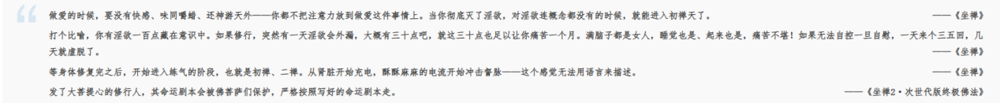
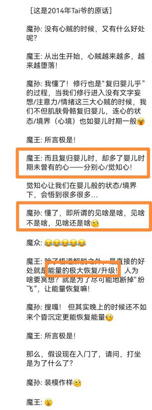
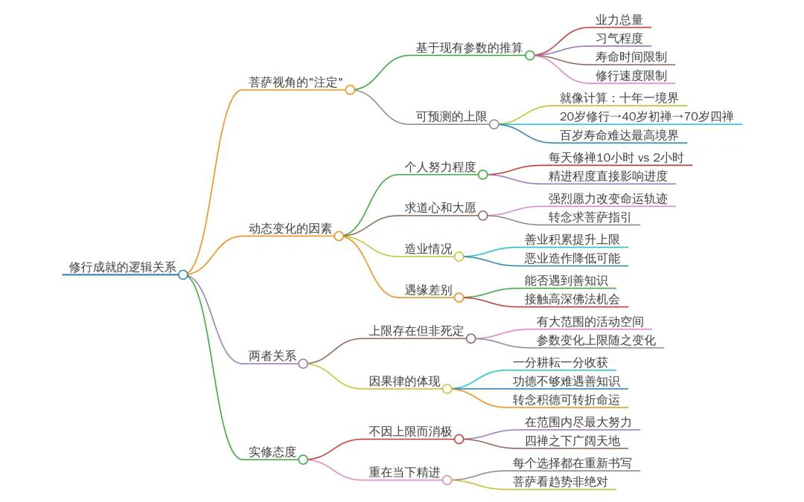
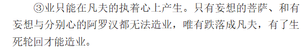
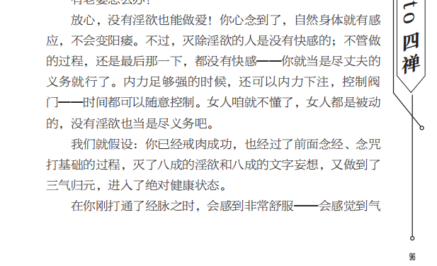
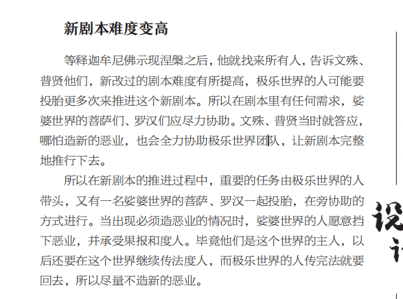

18二〇二五年十二月(403)
2025年12月8日 官网(68)
今天是2025年12月8号，周一，先回答官网的问题，从第一楼开始看。
觉非
Tai师父好。这周发生了一件事，我父亲突然查出来肝癌，马上要去用各种医疗手段治疗。看到他躺在病床上，马上又要做各种痛苦的治疗，也看到医院里很多哀嚎的人，躺在走廊上陪护的人，心里非常沉重难过，又不能在家人面前表现出来。除了在医学上寻找更好的条件，他不信佛法，我除了多读《地藏经》回向给他，还有没有别的方法减少他的痛苦。
Taiguanglin
觉非，父亲突然查出肝癌应该怎么办？一般肝癌如果觉得是已经身体不舒服了，去查出来的可能已经比较晚了，尽人事吧。
除了念《地藏经》回向之外再放生，放生还是很管用的，然后发愿度和他的有缘众生，包括他的冤亲债主，还有你心里也需要放下，你的心越清净，这个效果越好，不管是念经也好，念咒也好，效果也好，你的心里越焦虑越著急，可能效果会打折。
所以无非就是放生和念经，还有一种发愿之外，还有一种比较极端的方法，就是愿意发愿愿意替他承受痛苦。你可能会痛苦一段时间，但是他那边可以减轻，但是这种事情不建议，并不是很建议，这就看个人意愿。有些人说这么做了的确让病人痛苦，然后自己承受了一定痛苦，有些人说是没有用，这全看个人情况。
闻所闻尽
顶礼Tai师父，请问弟子念佛参思情的时候会有一股气从胸口上升到眉心，而且身体会发热，这种情况是正常的吗？是否可以用这股能量打通经脉？
Taiguanglin
下一个问题，闻所闻尽，参思情的时候，气从胸口上升到眉心，那是因为你注意力还比较大，注意力比较粗重的时候，你还处在脑子上用功的状态，注意力在脑子里，所以会把气引上来。如果你气一直这样的，你最好把注意力放到胸口或者下边，最好是下边丹田，把注意力放到丹田，然后继续参思情，你有注意力这个是肯定的，要不然不可能把它引上来。
正常情况下，气前面是往下走的，你越是参专注于参思情，并且注意力越细微的话，它气会形成循环，它不应该往上走的。
。。
师父，我感觉我对极乐世界没有一个概念。我想请问一下极乐世界大概是什么样子，我想有一个概念，不是说那里没有痛苦，没有轮回之类的，我是说能看到些什么？那里长什么样子？大概是一个什么样的场景？谢谢师父
Taiguanglin
下一个问题，两个句号，极乐世界是什么样子的？你去看净土法门的所有经，《无量寿经》、《阿弥陀经》，这些全看一看，《观无量寿经》全部看一看，那边也有描述的，你就当著那个来看就可以了。
还有往生极乐世界，你不需要想象那么复杂的东西，你只要想有那么一个世界，我想去，然后参思情就够了。
如果你想去什么一个美好的地方一样感觉，那个反而不太好用，你去观无量看《观无量寿经》，那里有各种观法，其中也有一些观场景的，但是最后一个观是观阿弥陀佛，所以你就专注的思念阿弥陀佛最管用，你想象什么好的环境，那个境已经形成了相，那个相，你说的这些全部都是用眼睛能看到的相，你就不能破相，这个就处在至也不过二禅境界，怎么说也无法超过二禅境界，虽然我们打坐很难达到，普通人是难以达到二禅，三禅，目前情况大概率是这样的。
目前按照你的情况肯定是，目前还有对相的执著，是肯定难以达到二禅，但是你得义理上首先明白这个世界是没有相的，在三禅以上的世界宇宙一片光明，没有你看得见的什么那种实物，都是一片光明的状态，全是意识状态，所以你干脆放下这种想法，你专注的思念阿弥陀佛是最好的。
x12343186
Tai老师好，顶礼：
请教老师，前期有说白天念《地藏经》会好些，由于工作关系，以前都是晚上下班回家念，后面想早上起床念，就提前赶到单位，在上班之前在车里念，但感觉白天念了，是乎效果不如晚上好，因为到了下午或晚上的时候，就有在身边骚扰的体感，晚上念完《地藏经》后就基本没什么骚扰了，而且如果偷懒一、二天就情况也不太好，而且白天念了，晚上不念也不是太好，不知道是什么原因？是冤亲债主吗？
但我感觉很少有体感很冷的时候，都是很热（不知道是不是以前身体有通了气血周天，身体碰到不舒服的时候，感觉也会自我修复的原因，平时碰到感冒病毒入侵流鼻涕等，静坐下会好很多），还是有其他的众生（平时有发愿，也有给经常会求求佛菩萨老师们帮助自己渡化身上及身边的有缘众生）。
前半个月有梦到自己开了家理发店，帮他们理完发后，又去帮他们挖水井，能后盖房子，那些住进新房子的人都很开心。能后我又看到自己站在一大片空土地上，规划著后面要怎么帮人盖，而且还有看到前期一排已经盖好了小部分房子，我很疑惑去查看了下Ai提问，没想到还真有解答，不知道这是不是帮助了众生呢？感恩Tai老师开示，谢谢，阿弥陀佛。
Taiguanglin
下一个问题，x12343186，念《地藏经》晚上有什么骚扰的感觉，然后念完就没事了，不知道什么原因，不念的话又不好。可能有一些众生来找你，想听你念经了。一般冤亲债主是不是那种骚扰感，他直接住在身体里的，大概率都是这样，所以反而身体感到了是外来的，就不会有那种感觉。
如果是外来的话，一般念完就念个圆满奉送咒，有咒语的，前面有普召请真言，召请真言是请来的，然后做完法事什么的，念完经了就念圆满奉送咒，这是送走的。
网上查一下就有，怎么念，就按“唵，乏及拉，目讫叉木”这么念的，“唵，乏及拉，目讫叉木”你就这么念，念完经之后，你想送他们走的话，这么念就可以了，多念几遍。
然后你说晚上盖房子夜里盖房子，相信他真的，相信他的确帮助到了，因为上次我讨饭是讨一块砖，希望布施的人都有，未来都有房子住，都有住的地方，可能这个说法有点管用了，对你那里会以那种方式显现。
171230
老师您好！
非常羞愧地向您求教，养猫或者养狗，是否真的会造业（饲养他们，就是为了有一份精神的寄托，给枯燥的生活增添一点点不同的滋味。），因为感觉他们对人的感情稍微质朴一些，有时候反而更值得信赖，相处起来也更简单。
想听听您对这方面的建议，感恩，顶礼！！！
Taiguanglin
下一个问题，171230，互动本身都是业。养猫养狗养猫养狗都是业，和其他众生互动都算业，所以你还对它们有一份精神寄托，这也是执著，对其他众生的执著。所以我不能说这个不好，但是从更高维的义理上看，尽量不和境界低的众生结缘，能不结缘就不结缘，这是最好的。
但是我们已经前面造了很多恶业，伤害了很多众生，有很多果报未来，所以需要结善缘来给自己对冲一下，缓冲缓解恶报来的时候强度，是这个目的才是广结善缘。
所以这些猫狗还有鬼道众生，我都是不建议什么施食之类的，你要给鬼施食，这些我是不建议的，在家做。如果你要养猫养狗，你也可以在外边给它们施点食，放点可以吃的东西，这也算布施了。
但是你现在已经在家里养了，那就现在再遗弃就业就更大了，所以你把它们好好给它们送走，养老送终，可不是弄死，不是安乐死，你既然把它们养了，那就好好把它们送走，这样至少把缘保持在善业当中善缘当中，它们对你还是有好的情绪，未来是会来帮助你的。
木鱼
Tai师父好！顶礼！
弟子最近发现几个现象，一是用手机录录像，无任何特效的情况下，太阳有时会像心跳一样，一闪一闪的，这种闪动会持续很长时间；二是月亮好像可以和我“互动”，手机不调焦距，无任何特效录像时，她会变大一会然后变回正常，也会闪几下就停了。刚开始我以为是我手抖了，我说你是不是能听懂我说话，如果是的话麻烦再闪一下，结果就又闪了两下，我换了个手机还是这样。另外，半年前，我会经常看见彩虹，有时候一周会好几次，由于见的多了，我往往会判断那种云上会有彩虹，过一会就会出现，这种彩虹一般会是弧状的，我看见几分钟后就消失了。
由于看见的次数多了，所以想请教Tai师父，这些现象是地球升维导致的吗？还是我意念作用的原因？
Taiguanglin
木鱼，第七楼，木鱼，这位说看到太阳什么月亮有变化，然后这些现象还有彩虹这些现象是不是地球升维导致，我觉得是你的心在向外奔淫，老想看一些不一样的东西，正常人一般看到了也当做幻觉不去想，那就很好，你把它当做什么殊胜的感应来一直这么认为，然后还想看更多的，所以就会看到更多的这种现象。
心应该放回身体里，我们修行就是把注意力拉回来，去感受自己的内心，一个是情绪变化，一个是身体的感受。虽然眼睛看到的也算是也算是一种外境的表现，但是它是把注意力放到外边的，注意力放到外边，身体外，你打坐的时候把注意力放到身体外就会漏气。
同样你把注意力平时始终把注意力放在外边，能量会消耗很快，所以我们修行应该把心放回身体里，平时就把注意力放到身体里，没有什么特别的事的时候，就观想阿弥陀佛也好，思念佛也好，念咒也好，这种。你不要整天想著这些个事，哪怕地球升维也不是用肉眼能看得见的，如果你真的开了天眼就看的不只是这些了，不是用肉眼看得见的，就用心来感受的，而且你的心足够静的时候才能感受到。
所以我建议你还是不要管这些画，老老老实实念经念咒，还有打坐磕头这就可以了。
定慧光明
Tai师父好，顶礼！
刚开始诵《地藏经》，我有几种意识活动，一种是出声慢读，像读课文小说一样边读边理解，在大脑中把文字描述想象为场景；一种是把经文当咒文，只快读经文，不过脑子不刻意理解，大脑空白；一种是边读边想自己当世的冤亲债主，把诵经功德及时回向给他们。哪一种是正确的呢？怕自己用功用错了。
Taiguanglin
下一个问题，定慧光明，这位说念经有三种方式，一种是跟著一起理解，脑子里还要想象；一种是快读，不过脑子不刻意理解，大脑空白；一种是边读边想自己当世的冤亲债主，把功德回向给他，哪一种正确？
第二种正确，不用刻意的理解。你就当是快读咒一样，只要专注的读，专注的这段经文上，不用去想象，你这想象就又落到别的执著当中，而且人家鬼道众生是从你的心里读出来的，你专注的时候就已经把信息给发出去，你想别的事情的话，别的事情就会障碍住你的经文，那些鬼道众生就看不出来你在念经，所以什么想冤亲债主什么描述这些都不要，你就专把注意力放在那里读就可以了。
李四挑灯
顶礼Tai师父
1、Tai师父，最近感受到您书中说的孤独感，就会察觉到苦情生起来的过程。我没谈过恋爱啊，不懂什么是思情。我小时候思念父母或者说牵挂父母吧，那时觉得父母能保护、照顾幼小的我，爸妈给我带来安全感，所以那时候爸妈生病我会很担心，希望爸妈不要死，死了没人照顾幼小无助的我了。我能不能认为阿弥陀佛是给我带来安全感，永远理解接纳帮助我的人，所以我坚信阿弥陀佛一定会在我舍报的时候带我去他的净土。我因此信赖，思念阿弥陀佛。这样我想起阿弥陀佛的频率就会高很多，这样算初步的思佛嘛？
Taiguanglin
下一个问题，李四挑灯，九楼，李四挑灯，这位说思念阿弥陀佛，像思念父母一样，这样行不行？也可以，都是思念，思念情人也是思念，思念阿弥陀佛，思念父母也是思念，只不过它的性质有点不一样，一般思念情人是属于在凡夫阶段是属于占有欲这种。
思念父母是想得到保护的欲望，情侣之间也有一方是保护一方的，一般是那样吧，不是绝对平等的，一方想要保护，一方喜欢有这种保护别人的欲望，一方是有被保护的欲望，这也是一种欲望，但是能引发思情就可以，所以这个不重要。
李四挑灯
2、Tai师父，境界高的人是不是时刻察觉到自己活著就跟做梦一样。那菩萨下地狱不会跟普通人下地狱觉受上那么痛苦，是因为菩萨境界高，觉受上是知道自己是做梦，所以菩萨不会像普通众生一样痛苦吗？
Taiguanglin
第二个问题，境界高的人是不是下了地狱也感受不到痛苦？是的。菩萨罗汉下地狱也会感也感受不到痛苦了。哪怕这个世界的凡夫修行者，如果是出家人，一般下了地狱，如果正常情况下是不让你受那种报，而是当个管理员的，当然你这个是刻意进来破坏佛法的那种另算，如果只是一些个无意间的犯了错什么的，下了地狱，他初心没变，修行的初心没变，但是一些其他原因下地狱的，一般在地狱里也需要工作岗位这种，所以下去干点那边的公务员，当是一个小管理员职的一般也有这样的。
李四挑灯
3、今年初接触佛法到现在，已经八个月戒肉了，很少吃蛋奶了。现在觉得一天吃三顿饭好麻烦，吃饭胃口好像变小了，之前很好吃的，现在一天就中午吃多点。晚上不吃主食，吃点水果饼干了。饿的觉受好像没有以前强烈了。味觉，听觉，嗅觉，没有以前那种强烈的好吃，好听，好闻。没有一种强烈的觉受了，很享受的感觉，好像没有了。这些变化正常吗？
Taiguanglin
还有下一个问题，吃肉的问题，还有不是吃肉，就是吃、嗅觉、听觉这些，在这方面修行到了一定程度的话，的确这方面的执著明显会减少，一切都没有什么那么多的意思，这个很正常，只有这样才算是接近，正在接近解脱。如果你对这个世界还有很多执著，贪吃贪睡，什么听觉、视觉都有这种很贪很强的贪念，什么东西能让人感到让你感到兴奋，让你想追求，那就和修行还是有点遥远的。
Lxy
Tai师父好！想问个关于我儿子的问题。我是孩子的母亲，儿子今年研三，学习很上进，自己也联系好了工作单位，就是他想以后边工作边环游世界，九月底去了中东中亚，十一月才回来，那边不稳定，我知道担心没用，但还是有点担心。我希望他能先做“成家立业”的事，可儿子有空闲时间就计划著出去的事。现在国外情况不好，比不上国内安全，可孩子大了，我也阻止不了，请Tai师父开示我该怎么做，为孩子做些什么？
Taiguanglin
Lxy，第十楼，这位朋友作为一个母亲，对儿子目前的行为不是很满意，儿子喜欢到处跑，找工作不是单纯的找工作，是到处喜欢旅游，去国外危险的地方也去。但是我想说的是你作为母亲应该放下你的这种控制欲，人家有人家的命运。你越是想控制他越不听，对您来说也是烦恼越来越多，他能健健康康的长大就已经很好了，他还知道有个家，还家里有个母亲回来看就可以了，你老想著控制他，对你和对他都不好。
你就和他多聊聊他出去看的那些个景、情况什么的，他旅游的心得，你跟他多聊聊，然后就告诉他主要是告诉他不要干预别人的业，光去看看就可以了，不要参与到他们的业当中。尤其是有宗教信仰的什么中东中亚这些地方，只要去看看这没什么大不了的，还要保护好自己，不要参与多余的事情。
你作为一个老人，怎么说呢，孩子都研三了，你现在就算不能算成老年人也是中老年人，老年人就应该把心放在自己身上。按理说剩下的时间肯定比他少了，你应该更关注的是自己的解脱的问题，解脱往生的问题。
你带著这种心态，就算你的修为到了解脱时候，说不定还是为了孩子还要回来，还要继续在这个世界轮回是吧？亲人也是，你已经尽了义务了，把孩子养大就可以了，亲人也算是陌生人，只是缘分近一些而已，你把养大的义务都完成了就可以了，不需要再去过度的干预别人，而且也不需要有对他有什么太过太高的期望，什么孝不孝这都无所谓，他只要不来伤害你，不来折腾你就好。
Yifang111
师父吉祥！前段时间看到有人说念完《地藏经》需要念大悲咒清场，我好像没有听到师父您这样提过！需要吗？我很多年前刚刚学佛的时候念《地藏经》每天两遍，马上就有不好的事情发生，有些害怕停了没念。今年听到师父的讲法，又开始念，还没念十几遍，家里又出现糟糕的事情，而且解决不了，现在我还在念《地藏经》。不知道需不需加大悲咒。因为我原来没遇到师父您的讲法时，已经修过一段时间专门念大悲咒，后来一心念佛了，就没有念大悲咒了！感恩师父！
Taiguanglin
下一个问题，11楼，Yifang111，念大悲咒，还要不要念，不是，念《地藏经》，还要不要念大悲咒清场，清场前面讲了有一个叫圆满奉送咒，念这个。大悲咒念，念不念都可以，如果你把大悲咒当做修行来念，那也可以，至少把一个咒念到滚瓜烂熟，在梦里也能念的程度。、
还有你现在这种念《地藏经》有不好的事情发生，而且解决不了，那肯定是冤亲债主已经开始捣乱了，也说明你念《地藏经》有效果了。主要还是看你的心愿，愿，先发愿度那些冤亲债主，然后把功德回向给他，还有忏悔，忏悔很重要的，不管你想不想得起来过去的事，先忏悔，认为你以前都是做了伤害他的事，所以他们现在来找你。有这样的正确认知，然后发愿度他们，这样就好了，然后就多做功德回向。
至于念不念大悲咒这个无关紧要，有空的话念，没空就不要念，圆满奉送咒，念完之后念完大悲咒之不，念完《地藏经》后念圆满奉送咒几遍。
定慧光明
Tai师父，收养小孩是介入他人因果吗？
我婚姻感情一直不顺，大龄未育儿女缘浅，前几年重组家庭有一继子，继子有高功能自闭症，见面就喊我妈妈，我可怜他加入这个家庭。最近总有再收养一个女儿的想法，一是为了自己老年有个保障，二是如果有幸能从孤儿院收养也算是帮助到一个女孩儿，接受更好教育拥有完整家庭环境，健康成长对社会也有益。请宜师父：抚养现在的孩子，以及收养孤儿，这是不是介入他人因果呀？是不是不对啊？我自己也很犹豫彷徨….
Taiguanglin
下一个问题，十二楼，定慧光明，这位问要不要收养一个孩子？二婚已经有一个儿子是对方的，不是你自己的，你现在再收养一个。你的丈夫和儿子同意吗？你先问问他们，他们同意不同意？
从业的角度来说，我是不建议再结新缘的，但是你都还要看你的目的，你是纯粹的以布施的心态想抚养好一个人的心态来做的话，你可以去做，但是前提还得是和他们好好商量，万一把人领过来之后，你的丈夫什么孩子又不适应了，跟他要闹，又对他们都产生伤害，那也不好吧，
如果是你是以带著什么晚年有人孝养孝敬你，晚年有人养你，这样的自私的目的，这也是自私的目的，养儿防老，这就是大部分人的自私的目的，有这个想法之后，你要好好考虑考虑，你要万一你养出来的是白眼狼怎么办？也有可能就养不好怎么办？
因为你的这种欲望也会是反映到你的一贯的行为上，在对孩子有过高的期望的时候，对孩子会产生很大的压力，这就看你怎么养了。
以前我好像我也说过我韩国的师父，他养好几个孩子，养了一般养了十七八个，他会请两个人，两个不结婚的女性去帮助他们，就像一个孤儿院一样这样，但是他从来不放在身边养。因为放在身边就不一样了，放在身边就有了情感上的交流，然后就很容易产生那种更不好的情绪，相互之间争宠、互相伤害这种，你这里已经有一个孩子，新来的孩子怎么办？
他会不会跟他争宠什么的，互相之间觉得嫉妒等等，所以怎么说，人是最不好养的，相比而言的不能拿人跟动物比，但是人比拿跟那种动物什么狗猫相比，人是最不好养的，一不小心就把善缘也都是变成恶缘，对方不仅不感谢你，反而后边还会恨上你。
所以你都要想好，你这这样的好的一面，坏的一面，还有都商量好之后，你能接受最坏的可能性的时候去养，什么时候最坏的，什么是最坏的可能性，这个很重要，你要想好，这个是我通常建议的极限思维。
你养了一个孩子，如果这个是你的冤亲债主来杀你怎么办？这种最坏的可能性有没有？不杀你，人家是病秧子，一带过来，你也不知道他有什么基因，什么病的基因，一带过来马上就得了什么非常可怕的绝症，还不死，还一直花你的钱，你又怎么办？这种各种不好的可能性全部想好了你再去养，至于做什么，我就不建议，你自己想好就可以了，你敢承担所有不好的结果，那就去做，这不是恐吓，现实就是这样。
婚姻也一样，生孩子也一样，什么事情你都想好最坏的可能，不要以为这种事情不会发生在你身上。
你虽然这个心态可能我相信你是以好的心情，好的心态，好的发愿去试图去养一个，想好好照顾一个，但是谁知道会有什么事情，至少你先把前面的你的丈夫和孩子搞定，他们都接受的时候再说，还有一种只是资助，你可以跟他们跟谁认个什么干妈之类的，然后一年看个一两回，然后资助正常上学，这也算是布施。
当然缘分就不那么近，不会扯到那么很深的因缘上，所以他们也是最多也就是以后不报答你，不来找你，最多也就这样，他也不至于来伤害你的程度，但是一旦放到身边就有可能更不好的事情发生，有可能所有不好的事情你都想好，知道了吗？
牧羊少年
顶礼Tai师父，您在《坐禅2》里说取信方法的时候，站在佛菩萨设计的角度看，都需要提前植入基础观念。在讲以恩惠取信的时候，您讲这个经历从乱世到治世这个过程的人，会对统一天下，施行仁政的圣王产生极大的感恩之心。这一点也好理解，从网上就能够看到经历李德胜活著的时代的老人，他们在视频中就对他还有著非常强烈的感恩之情。
1、我的问题是，这样产生的感恩之心，在今生的持续到死亡是很容易理解的，在今生之后，还能够持续多久？并且绝大部分凡夫吃肉的习气没戒，今生之后，或者经历几次人道之后，就会堕入下三途，那么堕入下三途会不会使得他在这次人生中产生的强烈的感恩之心变淡呢？
Taiguanglin
下一个问题，十三楼，牧羊少年，十三楼，这位问感恩之心，感恩之心能持续多久？在今生之后还能持续多久？如果你对于某件事情或者某个人有了感恩之心，那么就会产生愿，相应的愿，这个愿也是影响你下一辈子命运的，除了你的业之外，愿也很重要，业是基本盘，然后在这之上愿是把你引向那个世界，如果你对佛法有了感恩之心，对传法的人有感恩之心，你就等于是认可了他，也希望你自己也能变成他那样的人，也希望你能生到和他相处的能够相处能够遇到的世界里，这个时候就会往那个方向写命运。
所以感恩之心，不管咱们不管说它能维持多久，但是其实只要你让你产生对这个世界或者佛法有了美好的愿望，美好的认知，后面还是希望你会生到这样的世界来。
像现在算是太平盛世，前面已经遭遇了很多苦难，现在有了太平盛世，那么人们对这样的太平盛世有了这样的向往，像后面你福报足够的话，你会下辈子还会生到这样的来，当然个人的业还得看，如果你前面是干了很多坏事，那就果报还得另算。
那么这样的愿会不会变淡？肯定是，根据你生的环境来逐渐变淡的。像印度那样的种姓压迫的环境里，他们生的人，他们认为这个世界应该是这样的，他们甚至自己引以为傲，那么他们还会生在那样的世界。所以变淡这是肯定的，慢慢会变淡，所以把你扔到印度多轮回几次，你也会认为他们的环境是好的。
所以说发愿是很重要的，后来我还要生到有佛法的世界，我就算解脱不了，我起码这一世解脱不了，或者往生不了还我还要生到有佛法的世界，要有这样的愿，然后再积攒足够的功德，福德，好去去往往好的下一世。
牧羊少年
2、还有一点就是逻辑这一个问题，我们可以看到，佛法中高深的义理，都得需要较强的逻辑思维能力才能看懂，并且佛法本身，除了其中的故事之外，他的义理部分，就是以很强的逻辑写就的。是不是经过多次传法之后，发现高深义理的教导只能通过逻辑的方式传授？
Taiguanglin
下一个问题，逻辑问题，佛法最上层的佛法都是以心传心的，以心传心，就是阳神重叠在一起的状态下，让你体验一下更高境界，这就可以了。所以逻辑是在没有办法做到这样这个境界的时候，先用我们普通人能够理解的逻辑来讲，现在的人大部分都是学过西方产生的那些科学什么逻辑学，所以用这套说法还是很容易摄受的。
牧羊少年
3、对于一个修行人来说，他在修行的过程之中，必然在后期需要有较强的逻辑思维能力看懂和掌握义理，才能够支持他进一步往下修行。因此，对于一个修行人来说，佛菩萨给他安排逻辑思维能力的时候，是不是随著他的修行程度的需要给他匹配相应的逻辑思维能力？在不需要较强的逻辑思维能力的时候先不给，在需要的时候就给。是不是这个给的时机也需要安排？
Taiguanglin
第二个问题，你问佛菩萨给他安排逻辑思维能力的时候，是不是随著他的修行程度的需要给他匹配相应的逻辑思维能力？不是。
那么按照你这个说法有些人很聪明，但是他不学佛，什么顶尖的科学家，他们逻辑思维能力还是很强的，但是不学佛，怎么解释？逻辑思维能力和两个有关，一个是业障，一个是你的妄想分别执著多的程度，就是你的习气妄想有多少这个问题。所以如果你的业障足够少的话，智慧就显现，也就是逻辑会强，然后你的脑子里妄想越少，你的情绪也越少，你的逻辑也就越强。
这个和佛菩萨给不给没有关系，佛菩萨在你的基本盘上，在基础之上可以有必要时候可以加持一下，让你提高一段逻辑思维能力，提高一段可以，但是它不是持久性的，不能说是持不持久另一说，就是这不是你本人本自有的本事，本来有的本事。
我看一些说一些什么案例，比如说有人忏悔之后给一些曾经伤害过的人，自己去好好忏悔，然后一下子有点感觉脑子开阔了不少，思维就敏捷了，有开始出现逻辑的思维了，以前是有点混沌的，前后不搭后语的，前言不搭后语，逻辑思维很混乱的，就这样的人，忏悔了一些业障之后，他思维就明晰了。
然后一个是你的修行，这个是大部分人都是能理解的，都真正修行的人应该都有体会，就是你打坐坐到一定程度，文字妄想少了，注意力少了，然后看很多问题不需要那么多的思维你就能看出来，不需要那么缜密的什么思维什么的，看一看就明白很多事情，这也是一种智慧的展现。所以就这两点，一个是业障少，一个是妄想少，这样你就逻辑思维能力就会起来。
至于佛菩萨加持，如果你读佛经的时候，一时之间读不懂，你可以求佛菩萨加持一下，让你能不能，能短时间理解这段义理。
牧羊少年
4、还有就是非修行人，比如什么科学家，哲学家之类的，他们也有较强的逻辑思维能力，因为文明剧本和个人的命运剧本都是佛菩萨安排的，因此他们的逻辑思维肯定都是佛菩萨安排的，那么在给他们逻辑思维能力的时候是看什么来给的？
Taiguanglin
你后面所说的什么佛菩萨安排的科学家，他们的思维能力，不是的，不是安排思维能力，而是命运剧本的确是写，但是思维能力这个问题本身就应该有，该有就有，不是非要安排给你什么，所以有些人是身份很高，但是他逻辑很混乱，脑子不好使。
你看现在网上有很多专家，经常给个建议，胡扯，很扯淡的建议他们都敢给，刚刚看到的一个什么是法律，什么他们要求，然后什么封存什么过去的犯罪经历，还有犯罪案例的什么，居然提出个例子所说的举出的例子是每年有八百万人触犯治安那个条例，那么按照这个下去全员犯法，他一个学法律的人居然说这样胡扯的话，这个逻辑来想都不是正常人，
八百万人每年都有触犯什么治安管理条例，有可能大部分人都是从犯都是惯犯，你像我这样的人就从来没犯过什么治安管理条例，像我周围很多人都是从来不知道犯法的人，你怎么能说是全员犯法这种扯淡的话，哪怕你真的是一年有八百万的新人出现犯法，那十年就八千万，一百年才有八个亿，中国就有这么多人，十四亿人你想著全员犯法也实现不了，但是居然一个学法律的人扯这么多的扯这样的淡，我就很佩服这样的人，他居然能这还上电视，编导也是扯淡的人。
所以逻辑这个的问题和他的身份地位还不相关的，这个是纯粹的和他的修为和福报相关的。
道心
顶礼师父！我磕大头百天以来每天连续磕三圈，有一次试著磕了五圈，真的感受不一样，觉得突破了自己的极限，身体感受也是越磕下去反而越轻盈。也懂了您为什么让我们最好能磕四五百个及以上。但我现在每天磕头前都会有犯懒的想法，要不停一天？然后又告诉自己不可以，要坚持，然后也就这么坚持下来了。
另外有个事情跟您汇报就是之前我有一次听著您的音频睡著梦到有个修行长辈给我发微信语音是好几段梵语，我的修行师父告诉我梦的意思是观音菩萨让我读《妙法莲华经》，而那段时间我正在抄写《法华经》别人也不知道我在抄，我觉得真的是不可思议，深刻体会到了您讲的诸佛菩萨意识遍虚空，我们的任何起心动念观音菩萨都是知道的，太感动了！感恩Tai师父无私传法！
Taiguanglin
下一个问题道心，这位朋友并没有提问题，只是说有拖延症，磕头间会犯懒一下，要不要磕，要不要不磕，这个很正常，人人都是这么过来的。每天定个时间，然后就到时候就磕，不要想太多的问题，人有拖延症就是脑子里妄想太多，想东想西。
以前书上也说了，悟道的人不悟道有啥区别？那个老和尚说悟道之前是做饭的时候想著砍柴，砍柴的时候想著做饭，悟道之后做饭的时候想著做饭，砍柴的时候就想砍柴，不想别的。
你要磕头之前两秒我还在想著别的事，但是一到磕头时间起来马上磕头，行为马上动起来就可以了，早晨赖床也是一样，起来想起来，但是躺著想去再睡一会什么的，想来想去，你还不如直接蹦起来，然后该干嘛干嘛。所以拖延症这个事情就是自律的问题，主要还是你和你的妄想多不多，你的妄想越少也就拖延就越少，马上就可以行动了。
以身证道
顶礼Tai师父，以下两条是从宣化上人的四十八大愿里摘录出来的，:十一，愿将我所应享受一切福乐，悉皆回向，普施法界众生。
十二，愿将法界众生所有一切苦难，悉皆与我一人代受。
我看到宣化上人的大愿里的这两条，特别触动，看其他条没有这样的感觉。刚开始看这两条有点怕，不敢发这样的愿，但是这几天我敢了。而且也发了。
心里唯一一点疑问是，之前在一处看到过说如果发承担他人痛苦或者业力的愿，自己会受不好的影响，影响自己的消业等。
希望Tai师父解答，这个说法是否属实。
感恩Tai师父。
Taiguanglin
下一个问题，以身证道，十五楼，以身证道这位说，看了宣化上人的四十八大愿里有十一个，愿将我所应享受一切福乐皆悉皆回向，普施法界众生，第十二个愿将法界众生所有一切苦难，悉皆与我一人代受。看到这个愿，他以前发不了，现在敢发了。
现在有个疑问之前在一处看到过，说如果发愿承担他人痛苦或者业力的愿，自己会受不好的影响，影响自己的消业等，那肯定是。你都发愿替别人承担痛苦了，肯至少有一部分是在承担的。所以说你要是怕的话就不要发这样的愿，你敢发愿就不要怕。而且发的愿越大，佛菩萨给的加持力也就越大，对你的修行往解脱方向进，往解脱方向行进的过程会加快。
所以整体的修行时间是会缩短的，但是有必要的时候你也应该承担这样的自己发的愿，你愿意被，替别的众生承担痛苦，自然会有一些痛苦过来的。哪怕是讲法也一样，出来传法也一样，接受布施也一样，都会承担别人的一部分痛苦，要不然怎么会进到这个世界，如果你真的可以在外边一直用化身的形式，菩萨用化身的形式度人真的可以这么做到，为什么佛菩萨还要进来？
因为进来本身也是在承担一些痛苦，和其他众生互动当中也会承担一些痛苦的，这是必然的。所以你既然敢发愿，那就敢于承担，尤其是像同体大悲心这样的，学人王的都要发同体大悲心，你明知道有些事情做了，他当下肯定会有果报的，杀人是有果报的是吧？但是有些人你不杀他，你这任务都没法完成。这个国家想建立一个国家也好，政治格局要往前推也好，有一些人就跳出来反对，你不弄死他，你就没有办法再往前推了，那你就承担这个果报，这是一种，这是你自己造的业果报。
还有一种是你光是出来这个世界，来到这个世界传法度人本身就是在承担很多的痛苦的。对佛菩萨境界来说，别说佛菩萨，哪怕你是修到三禅四禅，你就很想安住在那个境界里，不想出来。因为出来光是看听这个很烦躁的，光是看啊听啊，什么和别人交流，哪怕是呼吸都是让人很烦躁的，这本身都是痛苦，从那个境界相比之下。所以很多人以为只要解脱了就不用管这个事，实际上还得下来，该消的业还得消，所以我劝你还是好好想一想，你不敢承担就不要发愿，敢于承担就发愿。
多杰扎西2007
Tai师父好。光的传播是靠光子传递振动的方式进行，也就是说光的传播方式和声音一样。为什么光能够定向传播形成光束，而不是四面八方扩射？
Taiguanglin
多杰扎西2007，这里16楼，这位问光的传播是靠光子传递振动的方式进行，也就是说光的传播方式和声音一样，为什么光能确够定向传播形成光束而不是四面八方？光也可以四面八方扩散，也可以像激光一样定向，定向就是它的振动是来回的振动，你仔细想想看，这个粒子它是全方位的振动，它这样的全方位的，四面八方一起振动的话，它快速的来回跑，四面八方都跑的话，是不是把周围四面八方的粒子是全部撞到，这样的话就是散射，光会散散乱的，光有本身的散乱属性知道吧？
手电筒往上一照，它看上去是柱子的，但是慢慢到远处就会散射的，这是必然的结果，太阳光照到大气里边，被大气里边的很多物质撞一下，它也会散射，那么激光这样的是它的是振动更趋向于一个方向，单方向的前后振动，这样的结果就是专注于撞到前面的粒子上，就是方向比较锁锁定，就是往前撞往前撞，那样的话只撞前面的，那就像台球一样打台球一样，撞了一个前面的那这个前面就往前撞，是不是？如果你撞你这个台球是左右乱撞的，可能同时撞开很多，这样理解就可以了。
harbor.wang
女儿上初三，随母亲生活，个人开网约车没时间和女儿沟通，从前段时间开始，我每周给女儿一点钱，让她去参加放生，只告诉她捐钱的时候念叨一下，让观世音菩萨保佑她提高学习成绩，但听师父说如果没有回向的话，不是很圆满，因为孩子这个年龄，说得多了，不知道对她有什么影响，请问师父有没有比较更合适的办法让此事更加圆满，我只想到如果不行就等她高考前的时候，告诉她让她做一下回向，这样可以吗？感恩师父。
Taiguanglin
下一个问题，harbor.wang，回向的问题，你现在女儿愿意参加回向吗？不是，参加放生吗？如果参加放生的话，如果当地有什么人组织放生，他们都有仪轨的，那就跟著一起念就可以了。
如果是自己跑去放生，心里想一想把功德回向给什么众生，或者回向给谁，哪怕不回向也都可以，起步不需要太麻烦，只要敢做就可以，所以以后你就带著她做，带著她一起做，哪怕一两次也行，一个月初一十五，不行的话，初一也行，十五也行，一个月一次也行，你就带著一起到做，凡事都有，一般是你想让孩子做的话，最好大人跟著一起做，带著他一起做，然后让他学会，告诉他这么做以后有时候这么做就行了。不要老想著他自己什么都会做。
白玛曲珍
我现在在修耳根圆通法门，听的是海潮音，能坐一个小时或者一个半小时，守两耳中间连线。但是感觉修行没什么变化，是打坐的时间太少了吗?
Taiguanglin
下一个问题，白玛曲珍。修耳根圆通法门能坐一个小时或一个半小时，感觉修行没有什么变化，你是腿已经不疼了吗？如果没有变化的话，增加时间就可以了，腿不疼的话那就增加时间，你就坚持坐著，如果一直坐到妄想升起或者身体实在不舒服，坚持不住为止，你坚持坐就可以了。
还有千万不要追求什么意识层面上的感应，什么变化之类的，你越求就越不好，你就静静的观，专注于你当下那个状态里，你这样就可以了。
了了归一
顶礼恩师TGL：
我2017年修行以来，最初有发心戒杀不吃肉，但最终没能坚持下来。上次听到师父给我的答疑，才明白持戒的重要性。我现在已经再次发愿不起杀心，不再吃肉。
我想问师父，除了戒杀吃肉（持五戒）外，我现在还需要严格的戒五腥（葱姜蒜…）吗？
再次顶礼师父，感恩师父法布施！！
Taiguanglin
下一个问题，了了归一，19楼，戒五辛的问题，这位问的是除了戒杀吃肉外要不要戒五辛？这个随缘吧。对凡夫来说随缘，但是义理还得说，现在我在讲《楞严经》，《楞严经》里有四种清净明诲，第一个就叫讲让你戒荤，就是在这里的荤是五辛，五辛葱姜蒜之类的，它生食会让你起淫心或者不好的心态，熟食会让，不是，应该生食是起那种烦躁的或者生气等等这种不好的情绪，然后熟食的话会起淫心，然后说是天界的众生不喜欢，所以如果你是发愿或是出家受戒了，那就不应该再吃了。
对于我们普通人来说，理论上这样的，对于普通人来说，先从戒杀戒肉开始，然后在外边生活，你要是这个也戒，那个也戒。你有这个条件的话最好。如果你没有条件的情况下，就不要给别人造成太多的麻烦，你自己能自己吃的时候就不用吃，如果和别人一起吃，你的身份也低，别人不会管你这个事的时候，你也不要太执拗，这样让你和周围的人际关系变得不好，本身也是在造业，所以你就看你的情况，你看你情况能戒就戒，不能戒就随缘。
但是戒肉这个事情是要有底线的，肉是伤害其他众生的，所以这个就坚决坚持，在外边也坚持。这样的话坚持一段时间，周围人也就不会再强迫你了。
天生无才
顶礼Tai师父！请师父慈悲开示：
什么是参禅？就是参疑情、参思情吗？怎么参？具体方法和步骤是什么？
感恩师父！
Taiguanglin
下一个问题，天生无才，什么是参禅，参疑情参思情怎么参？具体方法步骤什么？看第一本书和第二本书重新看一遍，感觉你是新人吧，怎么打坐腿怎么盘，手怎么结印，身体怎么姿势，这些都在第一本书里讲过，参疑情参思情也是在第一本书里讲过的，就是专注于情绪上，情绪从你的心里升起的时候，你是专注于它，不要去再起其他更多的注意力和文字妄想，这就是参。
下一个问题，先回答到20楼，时间太长，咱们下一个音频继续录。
今天是2025年12月8号，周一，前面已经回答了20楼从官网，继续回答官网的，从21楼开始回答。
杏酒茗天
内容有点多，只能放链接了，感谢师父https://www.kdocs.cn/l/cee1XuruG8Hr
Taiguanglin
这位21楼，杏酒茗天，这位写了一大堆很长一段来给我看，说要宣传用，宣传用。大概看了一下，费了不长时间，不短时间，费了不少时间看了一下。
首先你要说宣传，如果你要宣传我的内容，你就如实的宣传，如果你要宣传你自己的，那不需要问我，你想宣传什么，你去宣传好了，后果自负，这是因果自负，不是什么后果自负，这不是什么诅咒的问题，你有什么想法，诅咒的说法，就是你有什么想法你要进行宣传，你可以去做，不用问我，你自己的想法，你随便宣传。
你宣传犯法的事情，后果自负，你宣传好的事情，好的果报那也是有善报，这是你的事情和我没有关系，你要宣传什么你都随便，但是不要问我。
你要宣传我的东西，我劝你用如实的按照原版来去宣传，不要增加你的想法，也不要随意删减删改，你就原本如实的宣传，然后注明出处，这样就可以了。这样你就算我，算是帮我传法了，你该有的工作该有，你想宣传你自己的，你就不用问我，你这想写这么多还是AI写的。
我只想说你说没有实修，你没有实修的情况下，你想修一下觉而不动，在我的理解里，你应该说的是那种小乘的四念处修法那种的，平时一直保持觉知，但是我在别的地方已经多次回答过了，你这样不打坐的话，不打坐修禅，你的眼根境界耳根境界这是灭不掉的，你这肉身你是舍弃不了的，你始终会在肉身里打坐。打转打转，下一次还得投胎。
因为我们对听啊看啊这些肉身的执著已经非常的严重，不是你想保持觉知他就可以把它灭掉的，所以应该是走正常的途径。以修禅为目的，以修禅为主要修法，然后配合前面的打坐磕头练呼吸什么都得配合上。如果你只说靠觉而不动怎么样，这个我是，你自己随意，我只能这么说了。
还有你说的这些内容，还有好像你也没提及业的问题，我讲的书里这一次提的业的部分是佛没有讲过的，所以这个是关系到你的全体修行的和你的人际关系怎么处，怎么和周围人相处的问题。业，因为业的问题来决定了因果的规律，你怎么未来怎么相处，怎么和人社交，这个都是包含在这个问题的。
好了，你自己随意，你想你觉得你这套理论觉得可以宣传，你就可以宣传，但是我，这不是我说的啊。你的你写的这一套和我说的有不一样的地方，所以你不需要问我，你想宣传按你的名字去宣传就可以了，不用问我好吧？
了了归一
顶礼恩师TGL：
思虑再三，还是想给您说说从十月再次接触并看完《坐禅》及《终极佛法》这两本书。在我留下问题并还没得到师父的答疑音频时，我又被送进了医院。这次入院很轻松，前后一周，医生开了一种抑制神经的返释药物。那种在功态中的感觉就没有了（我不知道这种表述对不对？）。师父，这次入院，不是我说了什么，是因为家人发现我身体方面突然出现了异样（吃不下主食干的米饭，闻不了一点肉味…以前也是这样）。
师父，为什么一不吃药，我每天就只想修行：念经，打坐…，乐此不疲！
为了让家人不再担心，我又开始把药吃上了。现在家人尊重我，也同意我继续修行，打坐。
我现在听师父的话，演好戏，过好每天的日子，默默用功。
药物不影响我的修行吧？师父，我真的不想吃药，我想把自己关起来，把头脑中的那些累生累世的东西给放电影般放完。我没给别人说，偶尔有独特感应会记一下日记（因为不明白）。师父，我现在这种情况。正常吗？
愿师父六时吉祥，法体安康！顶礼，叩拜！！
Taiguanglin
下一个问题，了了归一，这位朋友，药物不影响我的修行吧？影响。精神类药物都有影响，你最好能不吃就不吃，你不吃的时候你看看有没有那种很难受的状态，实在难受就吃，最好能不吃就不吃。
精神类药物会让脑子变得木，因为我也见过一些精神病患者，他说吃药的话，脑子好像有点变傻了一样，没那么多想法，但是身体会浮肿什么这种有一些副作用是有的，但是不吃药的话脑子里太多的有妄想，还有什么幻听幻觉什么睡觉睡不好等等各种问题，所以这是如果是精神病严重的话，该吃药还得吃药。
如果你是全靠修行，因为修行引出了这样的症状，然后我劝你还是靠修行慢慢消磨掉。以前也说了修行当中看到的一切都是假的，不要把它当真，不要把它引到生活中来。你在生活里就是普通人，你就演好普通人，先做好普通人，别让人以为你修了佛之后变成精神不正常的人，这本身就是你已经学学歪了学歪了。
学佛之后变得变成了说道德高尚的人，变成有福报生活一切顺遂，智慧也提高了，为人处事更大度了，这样才是对的，你怎么能变得和家里人格格不入了，这个就肯定是有问题的。
你在家里人面前你就守住最低的底线，比如说我不吃肉了以后我也不给你们做肉了，我就守这一条，然后其他你们爱怎样怎样，你们也别逼我吃肉，这个基本的底线给守住，然后其他的就和正常人一样，这样就可以了。
还有在定定中看到的，打坐时候看到的不要相信，哪怕是你相信了，也不要影响你正常的生活。那些东西都是幻觉一样的东西，你就当幻觉来看，哪怕那是真实的，你过去的经历又有什么用，对现在有什么帮助吗？
如果你觉得有帮助，让你产生了在修行方面有了极大的信心，那就是好事。如果不是的话，你就不要管那些个。大部分全是全像梦境一样的那种画面，也有些是和现实有点因果关系的，这样就看一看就拉倒了，也不会影响你正常生活，不要去影响这些个正常生活，这是最根本的一种对修行的态度。
TaiZhuYue
TaiGuangLin，我身上经常会有像做爱一样的感觉，全身酥酥麻麻的，你知道是怎么回事吗？
我有怀疑过是不是自己淫欲外泄？但是它发作太有规律性了，像人为一样。
说是魅鬼，我也没感觉精气有漏，甚至感觉身体筋脉在被打通。
Taiguanglin
下一个问题，TaiZhuYue，第一个问题，我身上经常会有像做爱一样的感觉，全身酥酥麻麻的，你知道怎么回事吗？一般有些人说打坐打到一定程度之后会有快感，像做爱一样的快感，的确有这样的说法。我是没有过这种感觉，但我是直接很快就我突破肉体的局限，所以没有什么那种感觉。如果你越是执著于身体，可能感觉越多。
我有怀疑过是不是自己因为淫欲外泄，不是。淫欲外泄是，消耗能量之后会有一段时间会身体疲惫的，爽了之后是有一种虚脱感，大部分人都体验过，爽过之后就有虚脱感，所以不是。
TaiZhuYue
2、说是炼精化气，我已经一星期左右都没打坐，目前最高只能坐到2.5小时。还是刚到这境界，完全谈不上炼精化气，外表也没什么改变。
这到底是怎么一回事？我莫不是被人做局了，还是精神病？
Taiguanglin
下一个问题，目前最高能坐到2.5个小时，然后你想你问什么这到底是怎么一回事？我莫不是被人做局了还是精神病？你相信你在那种状态里看到的东西的时候，你就已经不是很正常的人了。
所以不要相信那些，我都说了多少遍了，不要相信你在里边看到的一切，你看你只能坐到两个半小时，这连初禅还不到，也就是初禅之前的很容易受魔干扰的那个时间段，你还把它当做真实的，然后被这种境界所转，然后影响到正常生活。
你是作为一个普通人，看到什么都不要相信，不要管，干脆就不要管，信与不信还不重要，信与不信都不重要，你就算信了，你也不要影响你正常的生活，你现在是个普通人，那你就做一个普通人。好不好？
TaiZhuYue
3、可是《坐禅》里面不是讲，佛菩萨会保护有同体大悲心的人吗？

Taiguanglin
还有《坐禅》里面不是讲佛菩萨会保护有同体大悲心的人吗？在业的方面保护，让你不受那种，不受正常因果之外的，原来剧本之外的意外的伤害，但是修行必然会有魔扰的，这个是必须要过的一关，你连这关都过不了，那还谈什么解脱，是吧？你连这种最简单的关你都是过不了，你只要什么都不做静静的待著就行，连你连这关都过不了，还谈什么别的修行，什么普度众生，同体大悲有什么好，还拿出来说有什么好说的。
佛不也是遇到过障碍吗？魔王波旬来干扰，先派魔女是勾引，然后再让那些个魔兵什么魔子魔孙来要试图要杀他什么的，至少在境界中让他看到了一些恐怖的景象，就算杀不了他，起码让他在境界当中看到了一些恐怖的景象，可能自己的肉身死亡的那种恐怖景象，但是他心不动，把它当做都是过往的那种画面一样过去，就像流水一样过去了那就过去不管了，这就可以了，所以他就过了。他没有对魔做什么任何事情，也没有因为干扰而起来做任何其他的事情，他的修行还在继续做，里边看到的一切都当是梦境一样的，过去了就过去了。
就你现在把它看，把那种境界里看到的东西当做真实的来，拿到现实里，还在这里网络上跟拿来说，这就变成了像个新精神病一样的状态。
你好好去看《楞严经》，我现在正在讲《楞严经》，看看《楞严经》后面的五十阴魔，这个都是大部分修行人都会经历的事情，所以没有什么大不了的，你只要不管就行。
TaiZhuYue
4、另外有两个问题，拖了两个月了，今天尽快给我解答
附件已上传大魔王完整的朋友圈截图，重点问题在第三张图片
4-1.为什么婴儿没有分别心？
Taiguanglin
还有下一个问题，为什么婴儿没有分别心？这个是这位太学院哈哈大魔王说的，可不是我说的。婴儿是凡夫，只要是凡夫就有分别心，也有执著心，都已经投胎到人间了，怎么可能没有分别心。
4-2.俺理解的见啥是啥…
①见啥是啥：被情绪、注意力、文字妄想吸引，看到啥就是啥。
②见啥不是啥：用分别心这个妄想来观察前面所有的执著，发现这些执著都不是真实自己。
③见啥还是啥：情绪、注意力、文字妄想破掉以后，用分别心就能清清楚楚地觉照一切，就跟人体“超广角”差不多？没有情绪、注意力、文字妄想，看到的都是真实的境界。
但是俺翻了《坐禅1》，里面的见山是山是破灭苦情进入四禅，还有绵绵细细的欢喜心。对于情绪破的还不够彻底。这是为什么？
Taiguanglin
下一个问题，还有到了四禅，还有细细绵绵细细的欢喜心，这是前面的相对而说的，那个时候已经没有了情绪，我也不知道该怎么解释了，没有情绪什么状态我也不好说，但是和前面的有情绪有六根的境界相比，上面都属于那种清净的欢喜，总之只能这么说了，自我存在的感觉怎么的这种说法都不一样，只能你靠自己去体验，那是什么样的感觉了。你看你到现在还在文字上搅搅来搅去。
TaiZhuYue
5、能量的极大恢复和升级，是指在第三个阶段“见啥是啥”的状态吗？
因为情绪、注意力和文字妄想都破掉，能量消耗就会减少。
Taiguanglin
能量的极大恢复和升级是指在第三阶段见啥是啥的状态吗？不要管能量，我都说了多少遍了，不要管能量。所谓的能量就是身体健康程度，你觉得身体健康了就能量充满，身体不健康就是能量不足。只要能达到初禅，你打坐达到四个小时的时候，身体已经超越了普通人，两个小时的就已经比普通人健康了。
到了四个小时，你暂时能在定中熄灭肉身的感觉的时候，就已经完全恢复了，身体已经都完全恢复了，以后就不用没有什么能量不能量的问题了。

TaiZhuYue
6、但在第二个阶段“见啥不是啥”，用分别心来观前面的六识执著，因为要观照的内容更多，所以会消耗更多能量吗？
Taiguanglin
下一个问题，但在第二个阶段见啥不是啥，用分别心来观前面的六识执著，因为要观照的内容更多，所以会消耗更多能量吗？你还在问能量不能量。用分别心来观察是没有什么能量不能量的问题，因为在分别心的境界里不需要能量，它只是你瞪著眼睁开眼睛看著前面一样。
不需要消耗能量，它只是看著而已。而且你到了分别心的境界，也可以说到四禅就算到了四禅，你的意识扩散开来，你可能完全感知到意识里边的发生的所有事情，意识会扩散开来，也可以观察外边，也可以同时感知身体里边，这个还需要还需要什么能量吗？我坐在这里感觉全身酸麻胀痛，这需要感觉酸麻胀痛还要什么能量吗？不需要。
好了，还有再一次去看看最后一本，现在讲的《楞严经》最后一个阶段，五十阴魔图好好看一看好好看一看，不要把定中看到的一切当做真的来影响你的正常的生活。
印龙
Tai师，弟子在全身彻底放松，身根触觉基本消失时（躺著的时候会发生），可以进入一种清醒的意识空间，进入前有时会有意识螺旋下沉感，有时伴随酥麻感
此空间是黑的，但如果我心中有欲望，就可以“创造出”东西来（以前创造过与异性接触的触感），但没有欲望时就是黑色空间，我想出来可以随时“出来”或者“醒来”
我不知道这个黑色里面会不会“自动”生成境界，害怕有东西突然出来吓人，于是每次进入时都会自动开始念秽迹金刚咒，今天还在念咒时在空间内结了手印（结成准提印了），弟子想请您开示的是：
1、这样的境界是什么呢？是禅定还是清明梦/清醒梦？
2、在这个空间内，如果我不打妄想，会一直保持“黑色”么？会有“东西”或“众生”突然出现吓人么？我该怎么摆脱进入此空间后内心的恐惧情绪呀？
3、我感觉大概知道怎么进去这个状态了，升起真正的出离心（对一切轮回内的东西都不追求），全身心全部放松，就能进去，但由于耳根还没灭，“外面”有声音干扰还是会随时出来，请问如果这个境界是禅定的话如何继续进步呀？如果这不是禅定的话我该怎么办呀？
Taiguanglin
印龙。关于0.5禅就算是0.5禅，你去看第二本书，有初禅那一篇，好好看看，这书都已经写出来了，为什么不好好看看？
你的境界都已经说过了，在入初禅之前会有一段时间会睡觉的时候会有类似的这种状态，算是0.5禅，暂时会进入，里边会、黑暗的境界里也会有各种东西出现，只要这都是你的意念相关的，你想到什么就有可能会出现什么，但那不是，不算是初禅。初禅是坐著的，坐著的，在打坐状态下进入的。所以你要进步的话，还是好好打坐，好好打坐进入初禅。
上官
Tai师父，
1、按弟子的理解，理论上，是不是如果没有您母亲续命、生病的业缘、如果没有后续传法的任务，以您四禅以上的修为，是否可以在处理完该处理的事情后，选择一个合适的地方入定，在定中直接往生回净土？
Taiguanglin
上官25楼，感谢你的支持，如果我的传法对你有了帮助，那就好。至于我个人的业什么个人的事情就不要打听了，你就当我一个不存在的人，没有投胎的菩萨，在化身用化身传法，在网络上以化身形式传法就可以了。
上官
2、能听到您的法，已经不止是三生有幸，您不但化繁为简、教真东西，还给了大家莫大的信心。弟子从开始练习双盘到现在，用了五个月的时间已经可以做到降魔、莲花两边都稳定盘一小时以上了，且不管再疼，心中大愿、信心始终不变。目前就是不知道您还能陪伴我们多长时间，不知道在传法任务结束后，您是会回寺院还是继续留在俗世呢？弟子不是求见面结缘，只是想以后十年内要是一年能听到您的一两次音讯就好了，就像您说的，这种报身的信任感和加持力对实修、实信的弟子们来说真的太强了!
Taiguanglin
未来会传多长时间我不好说，至少目前的想法是打算把十三经讲完，这个可能得好多年吧。现在才写完了两本书，十三经算是结了三个经，还有十本经，一年一本的速度或者一年两本的速度，可能也都五年，五到十年的时间，这段时间如果你的修为上去了，估计就不会有这样的烦恼了。
上官
3、师父，印光祖师把自己的修炼法门《大势至菩萨念佛圆通章》加入汉传净土修炼法门的原因是什么呀？
Taiguanglin
第三个问题，印光祖师把自己的修炼法门汉传，加入到汉传净土修炼法门的原因是什么？这个最简单的法门啊，对我们现在娑婆世界的人，尤其是情执很重的众生，感情方面有执著的众生最容易修。
上官
4、另外，您八识记忆中当年第一次解脱时用的是什么法门呢？感恩。
Taiguanglin
还有我的问题，我的第一次解脱这样的问题，要解脱从空无空无边处定或者什么四空定开始，你要成为阿罗汉，这就得有人来带，你的师父或者你的搭档，已经解脱过的人是可以用他搭档来带，如果第一次解脱肯定是由师父来带的，师父在定中拉你一把你就能上去了。
无境
顶礼Tai师，此处弟子有三问：
1、弟子有宁死不吃众生肉的心态，我想知道如果因为不吃众生肉而自我绝食而饿死（比如在极端环境下只有肉没有其他可食用的东西，我选择绝不吃肉，然后念佛、思佛饿死），这样属于浪费自己的生命么？有什么果报呢？
Taiguanglin
下一个问题，26楼，无境，在没有吃的状态下，为了不吃肉而饿死，这属于浪费自己的生命吗？有什么果报？我觉得不算是浪费生命，你看应该是弥勒菩萨前世的一个故事，那里边说人家就是饿死的。
有什么果报，如果你有这样的觉悟的话，可能解脱的更快，当然我是既不支持也不反对这种做法的，如果你真的处在极端环境里，选择饿不饿死，那是你的事情。
如果你吃了肉，该有的果报还是你自己来承受，所以这种对自己身体造成伤害的事情，我既不反对也不支持，这全是个人的选择而已。
无境
2、师父，咱们常说的鬼道就是饿鬼道吗？经文上描写的肚子大脖子细的饿鬼在那边很普遍吗？在人间死掉去到鬼道的众生基本都会变成那样子吗？
Taiguanglin
下一个问题，咱们常说的鬼道就是饿鬼道吗？对。佛教里就叫饿鬼道。在中国，中国原来佛教来之前的传统观念里叫鬼，它们就叫鬼。因为饿鬼道的鬼是你要去到维度里才能看见。我们这个是空间里直接能看得见的那些在这个空间里游荡的那些鬼，它们的形象和饿鬼还不一样。到下边那个世界它就是那种脖子很细，肚子很大的那种饿鬼，那边也有一个它们的社会，这边是这边有很多开了天眼的人能看得见的那种飘荡的饿鬼，它的就不是那种形象了，所以还是有点不一样。
在它们世界饿鬼道众生何止几百亿，反正那个世界人口多得不得了，和我们世界八十亿相比，但估计十倍几十倍这么多吧，鬼道也有它们的户籍，所以人口多到很难计算。
在人间死掉，去到鬼道的众生基本都会变成那样子吗？如果你真的投生到鬼道的话，大部分都会变成那样，也有一些鬼是出生的时候高级的有福报的鬼，或者说会被管理部门收编的鬼，它们会承受的痛苦会少一些。
还有像鬼王这样的角色，人家是可能福报足够大，修为也足够高，好像《地藏经》里出现的那些鬼王的也有这样的人。
无境
3、Tai师，我在打坐时，呼气后会自然地停顿，过了十秒左右才想去吸气，这样对吗？打坐的时候呼气时需要收憋肚子吗？
Taiguanglin
下一个问题我在打坐时呼气后会自然会停顿，过了十秒左右才想吸气这样对吗？
打坐的时候呼气时需要收憋肚子吗？不需要。打坐的时候就不要控制身体，让呼吸自然进行，停顿的时候也要随著自然，自己想吸气的时候就吸气，不要控制。
我的建议是你不要去管呼吸，不要去把注意力放到呼吸，看它什么时候吸气呼气，看都不要看，你要么观阿弥陀佛，或者说要么观丹田或者参思情，这些地方都注意力就直接拉到别的地方，不要放在呼吸上，这样最好的。
体悟
顶礼Tai师父首先祝Tai师父功德齐涨！佛果早成！！弟子有三个问题劳烦师父:
1、我现在用的方法是观空,在行站坐卧，工作生活中，守住心不动，不受自身身心和外部刺激等因素影响起妄想和情绪，跑了就拉回来，拉不动就转到佛号上面歇一会！看到师父讲解到还有个思佛,我尝试了下，可以把守空转为思佛，但感觉没有守空轻松。问题是在信西方并发愿去西方后，观空和思佛哪个更好呢?
Taiguanglin
下一个问题，27楼，体悟，这位第一个问题，在平时生活中观空还是思佛，哪个更好？我建议还是思佛，因为情绪是需要拉出来灭的，你不思佛的话情绪灭不了，还有你所谓的观空，在生活当中的观空连注意力都灭不了，因为生活当中你只要不打坐，那注意力一直在外边跑，你要看听这些都得有，你貌似不专注于它，但是它还在运作，所以你观空也是连注意力都灭不了的，所以平时还得最好是思佛。
体悟
2、我打坐初期是念七遍变亿咒和几遍往生广咒后，结定印或者上品上生印，一般三到五分钟后就一机灵，机灵几次后就差不多入定了。在打坐过程中如果身体偏了，感觉到也是一机灵就回来了。每过几天不定期的如果状态好，一股能量就会从中丹田下蹲到下丹田后百会冲出去，出去后偶尔会看到一些能量团，圆的有淡黄色或者微红色，或者看到透明雾装的自己(全身都是透明的心脏地方是个红点) ,我深知在没有出三界时的出体都是需要能量作为交换的，应该以修心求净土为正行。
它每次都是不自主的出去，不是特意，有时候出去了知道，我还是正常观空打坐，出去了干什么？什么时候回来？就不知道了(但不是无记空)。问题是:这样的出去知道，出去后干什么什么时候回来不知道的情况是正常吗？是否人为加意念不要出去还是自然发展?
Taiguanglin
第二个问题，你说能够出体，就算是你说的都对吧？你说的都是真实的，我就当做它是真实的来看，就因为你还在观空，所以会出体，注意力还在运作，你所谓的观空就是注意力是胡乱跑，然后结果就蹦出去，我建议你把注意力放到丹田，下丹田，你要观下丹田或者是观佛或者思佛，你找一个正经法门来修，不要轻易的出去，你一旦出去在这种注意力很散乱的情况下，出去本身就会消耗能量的，而且外边也不是很安全的，外面不太安全。
还有下一个问题，你说出去要干嘛，什么时候回来。你只要升起妄想它就能回来。出去要干嘛？你都不知道干嘛，为什么要出去。还是好好思佛，你先以思佛为主要方向去修，如果思不行也可以修疑情，思佛和疑情，参思情和参疑情两个先试著，不行的话就观想，观阿弥陀佛或者观丹田。
如果你能轻易的随便出去的话，在前面身体阶段应该得过关才行，至少能打坐轻松能达到四个小时，这个之后你就算出去也会稍微安全一点。虽然初禅出去也不建议，至少你要出体也得要安全的出体，也得是二禅以上。
体悟
3、看《坐禅》时候看到Tai师父提到头顶突起的时候，摸了下自己的头，中间确实有一条长度十公分像鸡冠子一样的突出(不知道啥时候有的)，另外玉枕也有个圆骨头突出点(小时候就有)，还有就是我右边眼睛没有受过外伤只要一闭上就有一个蓝色的蝌蚪一样的光(小时候就有)，小时候经常晃荡这个光，如果专注这个光，它有时候会扩大成一个椭圆后成像看到很远的东西或者要发生的事情(不能灵活掌握现在也基本不主动用)问题是玉枕的突起和眼睛的这个光是什么呢？
请师父解答，再次顶礼师父！
Taiguanglin
第三个问题，这些身体方面的问题你就不用刻意的去管，尤其是不打坐状态下，眼睛会看到什么，或者说哪里有什么变化，这些个都不用去管，你就做一个普通人，做一个普通人不用去管，也不要以这些东西来给自己增加什么过多的负担或者什么，自以为自己有特殊的地方，什么了不起什么，这都没必要，这只会让你自己产生更多的烦恼，或者贡高我慢心，你就做一个普通人来看就可以了。
你眼睛看著什么，闭眼的时候看到什么或者睁眼的时候看到什么，甚至你有些人就很小就有这种看鬼的能力，你只要装一个普通人假装没看见就能过正常生活，你一旦把它说出来，或者让那些鬼感知到你能看见他们，那以后就麻烦事多了。
所以身体方面也好，眼睛看到什么东西，你就当它没、不存在就行。而且我们修行需要摆脱肉身束缚的，肉身只是一副皮囊而已，这个皮囊给我们带来的感觉不那么重要，根本就不重要，解脱才是第一重要的。
peter_zhou
Tai师好！请问佛菩萨报身入轮回，眼睛所看之处都是有缘众生，那如何能做到把有缘众生度尽而成佛？怎样才能不陷入死循环（来一次增加一次有缘众生）？
Taiguanglin
下一个问题，28楼，peter_zhou，这位问佛菩萨报身入轮回……，佛是不会报身入轮回的，佛最多是给你显个化身看一看。
菩萨报身入轮回，眼睛所看之处都是有缘众生，如何能做到把有缘众生度尽而成佛？前期从初地菩萨到八地十地这个阶段还是正常地下去度人，也会结新缘，但是命运还是写的比较严谨一些，尽量少接触那些境界太低的众生。尽量接触的都是境界比较高，或要么就是前世和你有缘的众生，你要度的众生为主，然后就比较把那些境界高一点的放到这边来。
而且过去，你看过去，你看中国过去就已经政治体制都已经给你设计好了，中国过去到这个封建时代，人是不可以随便流动的，一个县城里一个县的老百姓要去隔壁县，得有个路引，到县政府得到批准，也就是说在那个年代里，你想见到很多不相干的人还是比较难的，因为就故意这么设计的，这也是符合农业文明，这样把人都钉在土地上。
这也是对于修行人对再来人也是一个极大的保护，到了现代才有了这么比较放开的，虽然中国也有一段时间有户籍制度，也有什么暂住证等这类制度，它还是都在各个方面是限制你随便流动，看到更多的人，而且自己也得小心，尽量都会少去接触人。
还有到了最后阶段，八地九地十地，那个时候已经剩下了要度的人不多了，不多的时候就有一个办法，把几个特定的人，你要度的那几个人，前提是至少他得有解脱的欲望才行，这一点很重要，他如果没有的话，你就不能对他做什么其他的干扰，只有他有解脱的欲望的时候，你可以把他扯出来带到别的世界，佛很多的世界里给他推加持力，一下推到阿罗汉境界。这样只要短暂的他成为过阿罗汉，那你就可以成佛了，这最后还是有办法的。
他不可能让你就一直处在为了度一个人下来，结果又和十个人结了缘，就和百个人结了缘，又看到一百个人一千人，你人一辈子能看到那么多人是吧？你要这样算的话你根本解脱不了，所以最后都是有办法把人扯出来的，而且完全可以为了消和他的一个人的业故意创造出一个世界来。
一个小世界，这全是NPC，里边全是假人，就你和我就是真人，我要度你，就你和我是真人，你的其他你从小出生的你的爹妈也好，什么人也好，全是假的，所以我进来就周围人全是假的，也有这样的办法。
所以在佛的境界菩萨境界还是有的是办法的，要不然世界很难出现佛，是不是？
幻世浮生
顶礼Tai师父！弟子有几个问题想请师父慈悲开示:
1、想请教师父关于分身和分灵的问题。您说大势至菩萨是投胎来娑婆世界，是他本尊来的？不是他分身投胎吗？那西方极乐世界现在就看不见他了？另外地藏菩萨分身无量，那都是从元神阳神分出来的吗？
Taiguanglin
下一个问题，29楼，幻世浮生，你看了第二本书吗？还是先把第一本第二本都好好看一看。
分身的问题，化身和报身，菩萨要消业就得带著报身来，带著报身的时候，法身暂时算是没有功用了，他一直在，准确的说是我们所有人都有我们的法身，都是有的，自性一直都存在，你把自性当作法身来看待，所有人都有法身的，哪怕是凡夫也可以说有法身，只不过我们遗失了我们有法身的真相，沉浸在我们执著形成的报身当中，但是菩萨境界里一旦投入到报身来消业的时候，法身境界的功用它暂时就不能用了。
还有化身是不用管这些的，化身就不用管，也不能消业，化身只能帮助人一些而已。不能分身，投胎的话就不能分身，只有整个的来。
西方极乐世界现在就看不见他了，他的法身是存在，只不过现在当下是不起作用的，但是如果他在这里进入深定回到那个世界，回到法身境界也可以的。
地藏菩萨分身无量，地藏菩萨分身无量是化身，能分身的是化身，化身可以随便分出来的。所以地藏菩萨在很多世界的地狱都有他的化身，这个和什么元神阳神不是一回事，我们所说的元神阳神都是轮回内的，三禅四禅或者二禅那个境界里，回到这种发光的球体的状态，那个时候才叫阳神，这个也是有生命的，到成为阿罗汉了，阳神也就没有了。
幻世浮生
2、以前听说的是西方净土所有众生都长一样，都是男身，外表看没有差别，您以前答疑里说下品下生也有淫欲，那下品下生往生后，也分男女吗，外貌也不一样吗？
Taiguanglin
还有极乐世界的问题，极乐世界下品下生是还是有淫欲和男女的，也有一对一对一起生活的。
幻世浮生
3、想请问师父，以前有人说宣化上人是释加牟尼佛，也有说是观世音菩萨分身再来的，请问是这样吗？感恩师父！
Taiguanglin
还有下一个问题，宣化上人释迦摩尼佛、观世音菩萨分身再来的，这个随意，他肯定是再来人，不管他是谁，我也不知道，我也不能说，知道了也不能说，他才走不久，所以我只能说他也是再来人，但他不是我们极乐世界的。
www
1、Tai师父，我想请教若是解脱者完成了任务，或者身份被发现，但是阳寿未尽，是不是可以直接涅槃自我了断。
Taiguanglin
下一个问题，30楼，www，这位问解脱者完成了任务或者身份被发现，但是阳寿未尽是不是可以直接涅槃自我了断？可以自我了断是可以自我了断，这个没有问题。
但是身份被发现就算发现了，我们怕的是后边会有带来很多麻烦，会结很多不相干的缘，因为你身份暴露了就有很多人上门找你，在古代是这样的，很多人会上门找你，这个时候就直接结缘了，所以为了避免这种情况，所以要么躲起来要么赶紧死。
一般情况下也不会身份被发现的，再来人也不是傻子，他都有人保护，既有人保护自己也聪明，他怎么可能随便泄露身份，他都有办法保护自己的，而且上边也会提供加持提供保护，不让他轻易被人抓住。
www
2、身体太差导致基本禅定都做不到，是不是业力影响禅定，或者应该使用欲界定修复身体，然后身体有一定基础，才能禅定，而身体太差也无法做到禅定呢，感恩师父
Taiguanglin
下一个问题，身体太差，导致基本禅定都做不到，是不是业力影响禅定或者应该使用欲界定修复身体，然后身体有一定基础才能禅定，而身体太差也无法做到禅定。
你差到什么程度？是残疾还是身体健全，但是气虚弱？先从打坐磕头开始，打坐磕头，打坐你盘腿坐著总可以吧？
双盘不行，单盘可以吧？坐著坐在地上。单盘单盘不行，那就散盘总可以吧？能坐的静坐个半个小时，连坐都坐不了吗？还有磕头也是，如果胳膊腿都在的话，总该可以磕头的，磕一百个一千个不行，你磕十个，五个十个从最少的开始做，然后持戒，然后练呼吸，这些都最初开始最小的一个两个开始做起来就可以了。
Ming
Tai师父好，我前天遇到一件事，就是我在职工程博士，边工作还要提交作业，其实我感觉有点累，已经上了，如果毕业还能拿北京户口，小孩马上出生了，但是最近导师希望我给他拿项目来作为博士课题，或者通过我单位拿项目，但我是一个小兵，焦头烂额，还有最近的两门课，说实话太花费时间经历了，我自己下班之后还要坐禅之类的。
突然感觉不知道为什么活在这个世界？充满了不公，不知道干活的意义，其实我单位已经能接触到一些稍微内部的，感觉人和人命差别挺大的，我还揹负房贷？其实有点不想工作了，但是又不知道该怎么办，脑子也不想动了，感觉什么都很麻烦，都要动脑子，不管工作、作业、甚至还要根别人虚与委蛇，这属于正常吗？
Taiguanglin
下一个问题，31楼，Ming，这位问工作很忙，但是有点想怎么走开的意思吧，就是出离心吧，工作很累，但是不想继续下去了，有这样的念头，这属于正常吗？
正常，想修行的人都有这样的念头。但是我也说了修行和业冲突的时候先消业为主，你现在既有房贷又得毕业什么的，博士毕业什么的，还有工作赚钱这些都得做，现在还有孩子要生，这些都是你的业，你躲不了的。你现在试图躲会得罪很多人，都会造很多恶业的，所以你就专注于消业，同时有空就拿出来时间来能打坐就打坐，每天早晨能早起一个小时来打打坐或者磕磕头，这样也可以的。
每天坚持，同时求佛菩萨给你安排更多的时间，一定要先做功德，然后求佛菩萨给你安排更多的时间、钱和健康，就这三样就够了，时间、钱和健康，不求什么职位上的什么升职，这些工作轻松，这些都不要，只要求时间健康，时间健康和什么钱这三样，这样佛菩萨就可操作的空间比较大，你特定的要，我要求什么怎么工作上要升职什么，一定要求个什么，毕业的时候怎么样，这些一求佛菩萨那边要操作起来更麻烦一些。
Ming
1、还有看了咱们的课程，又有了一些问题：欲界定之前，您说先降魔坐两个小时，后面莲花坐两个小时，之后会打通中脉？在此之前可以交替打坐吗？还是先要将一个坐到两小时，再开始另外一个？
Taiguanglin
下一个问题欲界定之后，欲界定之前打通中脉，两种打坐法交替打坐吗？我建议是交替打坐，一边一天以降魔坐两个小时，第二天就莲花坐两个小时，或者早晨降魔坐两个小时，晚上莲花坐两个小时，当然我看你是一天也拿不出四个小时，一天能那样，一开始能拿出两个小时就不错了，但是你只要坚持修行，然后做功德回向求佛菩萨加持你，给你一些个更多的修行时间，还是能做得到的，未来还是有那么半年到一年后逐渐会有改善的，还有有大愿就更好。
Ming
2、打坐两小时，中间是不能活动的吧？比如腿麻腿疼，休息下，再继续，不能算两个小时吧？
Taiguanglin
第二个问题打坐两小时中间是不能活动的吧？你想境界来的快或者进步快的话，最好两个小时内是最好不要动，但是初学嘛，如果你实在坐不住，那起来活动一下五分钟后接著坐还是有效果的。
五分钟内或者十分钟内去上个厕所回来，最好还是十分钟以下，这样身体这个状态还没有完全回到不打坐的状态，所以还能续上去，只不过比直接两个小时连著打坐还是差一些。
Ming
3、《坐禅1》里面将五蕴和十二姻缘，在讲五蕴的时候，“识”——指的是第八识中产生的妄想，“想”——指第六识执著心。讲十二姻缘“识”——指第六识执著心，这里具体指对妄想本身的执著。有点不太理解？望请开示
Taiguanglin
下一个问题，你说对妄想本身的执著有点不太理解，这个书上也说了，就是像我举的那个例子，一个我奶奶一直看电视的例子，这样举例子你不理解的话，我应该怎么说，一直在打妄想，不关心妄想的具体内容是什么，他只要一直打著就行。
就像小孩子喜欢玩一样，他玩什么具体内容都不重要，打游戏也好，看电视也好，出去玩也好，但是他一旦静下来，他就静不下来，坐不住，他总得做点什么，就是这种感觉吧，逻辑上是这样的。
而且在守住妄想的执著，守住当下妄想执著就是之前妄想在一直不停的打，新的妄想不停的出现，先感知到这一点之后，他想守住当下妄想，就是不想让新的妄想生起，但是没有办法，新的妄想一生起，这个时候就会开始往下跌落，然后跌落到凡夫。
Ming
4、我妈听著我说的哭了，我也情不自禁的哭了，想止住止不住，感觉好累，为什么我要当牛做马，以及在这个人心混乱的世界？我感觉很难受。我老婆也哭了一下。底层人向螺丝钉一样创造价值，很多赚了钱的捐款跑路，还有很多洗钱的，就像吸血一样，底层人被设计好了，大部分都是被吸血的，辛辛苦苦争一点钱，也没自己的时间了，被动的活著。
Taiguanglin
然后下一个问题，看到是社会的不公，所以要好好修行求解脱，我前面已经说了一个人必须工作，那是你上辈子欠社会太多了，所以只能工作，你工作了肯定你产生的创造的价值，可能一半以上都会被别人拿走，可能国家也拿走，你的老板也拿走，到你手里的可能都不到三分之一。
这就是因为你欠了这个社会，你可能以前也是这种剥削和压榨别人的角色，现在回来该还这个债了。
处在高位的时候，就应该有布施的心，多布施多做功德，这样未来就好一些，只不过有些人就没有这样心态。认命吧，我只能说认命。前面已经都告诉你了应该怎么做。
梵摩尼
顶礼敬爱的师父！弟子最近几个月经历了一场情劫，应该算孽缘吧，身心内耗严重，很多情况下明知不可为却为之，深感有缘人之间业力牵扯的厉害，有时候根本不受自己控制，弟子已授菩萨戒，守戒不精严，因此犯戒，此时才深知佛祖制定戒律的慈悲，在此恳请师父慈悲，第一，弟子已犯戒，恳请师父教授弟子如何补救？跪拜师父！第二，还请师父开示，遇到这种牵扯厉害的情缘，如何才能平稳过渡？以此能够给有缘的师兄们以警示！
Taiguanglin
梵摩尼，33楼，恳请师父教授弟子如何补救，弟子犯戒，重新再受戒就行，忏悔，先忏悔，要守戒先忏悔，然后就重新再去受戒就行。
然后遇到这种牵扯厉害的情缘，如何才能平静度过？做功德回向给他，发愿未来度他，然后有空的话念《地藏经》回向给他，就是你的冤亲债主，你说情缘的话肯定是活著的活著的人，所以你上辈子可能欠他的。
Mynameisbonny
Tai师你好！之前群里师兄推荐过一个牟尼精舍，可以请示因果并开示，主要是通过念诵三经《地藏经》《药师经》《金刚经》来回向给冤亲债主来化解一些问题。我也有去请示一些问题，第一个请示就是大工程，三经各七百遍。
按平台要求，对速度、声音、心态都有一定要求。因本人日常要上班，然后三年前刚生了二胎，时间上不是有很多独立安静的时间，所以我都是除了早上四五点起来磕大头之后双盘默念是专一念经的，其他都是在上班路上。工作上班时串叉念经的，也经常会被打断，都是默念。
我自知妄想还很多，心态上面忏悔之心不是很深刻，但是认为师父说的只要坚持去念，慢慢都会好的，佛菩萨与我们同在，都能知道、弟子从三月到十二月，综于念完了各七百遍的经，平时在外出差也基本不落下。
然后因要求每天记录，我不是每天记录的，每天的数量都一样，我一般会月底统一补记录，这可能也是原因。我提交记录给精舍回向，通知我说没有感应到我的诵经功德力。这给我打击蛮大的。我想想自己基本蛋奶素，蛋奶也吃的很少，每天早起磕头双盘，还每周放生，相对心态上还是比一般人要好一些的，我不说我很清静念经功德有多少，但一点没有，让我挺失落的，那以后还要向现在一样诵经么？弟子大多数是默念，主要是一个我开口念经稍微一会儿，喉咙就堵，平时上班啥的开口有声也不太方便。晚上回家么又有孩子，也没法一心在一个地方有一个固定时间念经。挺茫然的，请师父给我开导一下，让弟子有一些信心。
Taiguanglin
下一个问题34楼，Mynameisbonny，你说诵经功德的问题，你要念各念七百遍，《地藏经》《药师经》《金刚经》各念七百遍，你说从三月到十二月就已经念完了七百遍，这也太快了。
你要念出功德来，你要念出功德来就得专注的念，不要打妄想，尽量不打妄想，如果你打妄想就打折了，功德就打折，而是你在一边做别的事情一边念，那可能就更那啥了。
因为你注意力不在念经上，虽然你表面上看上去还是念著，所以你大的注意力大部分在念经上，但是你既然做著别的，那肯定是分走一部分注意力。所以我建议你还是每天拿出一点时间来专注的坐著，你看《地藏经》至少要念一个小时，《金刚经》也得是半个小时以上，《药师经》也是时间不那么长，我自己没有那么专注的念过一段时间，所以不敢说时间有多少，但是这么加起来怎么也得一天念个两个小时以上，这样的话念两个小时一天你能拿出两个小时来念，只能每部经各念一遍。
那么七百遍的话你至少也得是两个月，不是两年两年，七百遍的话至少也得两年，你说三月到十二个月，短短九个月内念完了，你说这个是你一天念了多长时间？六个小时七个小时，而且都不是专注的念，肯定是这个功德赶不上达不到。
还有你的发愿问题，你得先发愿度，度那些冤亲债主，然后向他们忏悔，你自己都说忏悔之心不是很深刻，因为大部分人看不到前世的情况下，很少能生起真正忏悔之心，这个也可以理解。那么你就当前面这些念的就当修行吧，后面开始再每天拿出一两个小时一个小时也行，一天一部的念，一天一部的念，不行的话就专注的一天念一部这也行，那么两年念完一个七百遍，那六年念完所有的七百三种经七百遍这也行，不求太快，能做到哪里就做到哪里，我觉得你还是坚持比较好。
Ming
Tai师父您好，我还想向您请教一下关于信的问题，我思考了一下，我记的小时候梦想成为科学家，一方面是对很多充满了好奇和探索，另一方面也希望自己像其他科学家一样留芳，且给人们创造价值。现在感觉力有所怠。并且从高中开始，经常生病，以及发生了一些事情，让自己从相对白纸的状态变了很多，后面越来越多的痛苦和不顺以及各种苦情。当然我走到现在这个也是以前有些种子，直到前几年显现出来，想要超脱，也觉得世俗很多对我来说都没意义，除了父母，以及妻子孩子。要不然我可能就出世或隐居之类的。
但是可能是愚痴凡夫，又看不到这因果以及来世，就像有一些公案里面的，有一个人就持有只有今生一生的，对于我们普通人根本看不到，所以有些人可能奉行及时行乐。我听了您的课，感觉大受震撼，讲的整体都很自洽，也很好，我自己也更加的相信，也在按照您的指导行动，但是自己没实证到，有时候又会产生疑情。是不是显示给世人的话，能度的只有那些心智强大，相信的人，这样的人比较少？而且只有经历痛苦，才会更加珍惜？
Taiguanglin
下一个问题，Ming，你问的是为什么不能让你看到前世的因果，是这个问题吗？修到初禅就能看到和你有缘的，这辈子和你有缘的因果是能看得到的。这个看不到不是我们故意设计成这样，而是这个世界凡夫本来就看不到，他专注到这一生的命运当中就看不到前世过去，就算成了阿罗汉，他也只能看到前后五百世。
所以你想看到某一段的因果，你可以去看看《地藏占察经》，里边有求的方法，如果更想具体的看，那就求佛菩萨。怎么求佛菩萨，这个书上也说了做功德回向，然后特定的事情你可以求，你想看到某一件事情前世因果，你就这么专注的求就可以了，功德足够，还有你的精进修行，还有发愿这些都够了，说不定佛菩萨会让你知道。但是说实话你真的好好修行的人，就算不知道，也应该知道怎么忏悔了。
前世肯定是干过很多坏事的，哪怕这辈子就看上去没干过坏事，但是你仔细琢磨，这辈子是从小长大到现在干过的一些个坏事的话，你再往前就算往前看，就算你想不起前世的事，也都大概能知道你的性格来说应该会干出什么事儿来。
而且越往前推，这可能过去的时代更不一样，可能乱世更多，遇到乱世的时候干坏事的概率更大，所以就算不知道情况下忏悔就对了。不需要什么怀疑之类的，产生疑情之类的。要么你产生疑情的话，你就专注于修行，先修到初禅。
娑婆客
师父吉祥：
三宝弟子咨询困扰我一年多的频繁打嗝问题。
弟子中年男性，修行的基本过程如下：
1、皈依前：
平时已经养成腹式呼吸习惯；接著练了八段锦、道家的长寿功一年。后来散盘打坐盲修了三年；去年去了趟五台山，发心吃长素，禁欲，持诵《金刚经》和几个心咒。开始练单盘，打坐贪求快速强身、开智慧，在网上遇到一位禅师教类似宝瓶气的呼吸方法（具体方式：缓慢吸足一口气，憋气憋到憋不住了；然后再徐徐吐气，接著继续憋气，然后吸气……如此循环）。这种呼吸方式帮助我在禅堂熬过了禅七，单盘强行突破到一个小时！
但是很快出了副作用：
一直不停的打长嗝（胃气上来，声音很大，我并没有刻意用意念导气运行）；白天行、住、坐，都有在不间断打嗝，饭后几分钟也开始不停的打嗝，连睡觉吉祥卧也打嗝，总之，只要醒著就打嗝，影响周围人，很受困扰……感觉檀中穴这个位置，像是憋著一团气不能畅快呼出，但是打嗝可以控制住，比如在上班的时候可以憋住。看过中医，诊脉检查不出来是什么病症。
2、皈依后：
上面这种特殊的观呼吸方式，练了两个月就放下，不敢再练了！接下来打坐中，尝试用数息、呼吸念佛、自然呼吸等方式，也尝试过俯卧撑、站桩，观丹田等，还是没有明显缓解打嗝；于是，就不再每天花时间定功课练习打坐了。改成念《地藏经》，加上每天大拜忏，基本不吃晚餐，坚持了半年多，体重减了三十多斤；接著参加了南传的葛印卡内观法禅修，闭关十天，高强度的打坐，频繁打嗝问题明显缓解了，呼吸经过胸部位置比之前畅快了，除了在打坐、饭后仍然会打嗝，其他时间打嗝很少了；但这种功法我觉得不适宜我长修，就放弃了。
3、目前的状态：
每天定课十万佛号，再有时间的话，就大拜忏、打坐。每天饭后、走路，在打坐时，或者忙别的事，还会突然打嗝几分钟，只是频率降低了很多。
4、问题：
1）这种打嗝的症状，是什么原因导致的呢？是在通胃经吗，包括腿部经脉不通，还是什么原因？除了打嗝，之前打坐还会从腿部，腰部，到手臂，再到颈椎出现明显的气动、颤抖现象。
2）打嗝是不是我的业障导致的？皈依后，除了实修，听经闻法，布施，放生，做义工等，我都在不间断的培植福报。
3）目前身体体质还算好，我想把双盘练出来，但这样的打嗝，反复出现，进进退退，打嗝的趋势是在减少，但是一直没有根除掉。我是放著不管，不执著它吗，还是怎么办？感恩师父的开示！
愿师兄们如法修行，少走弯路。
南无阿弥陀佛！
——娑婆客20251208
Taiguanglin
下一个问题，40楼，娑婆客，这位说练了什么宝瓶气一样的呼吸方法，就是吸足一口气后憋气，憋到憋不住，然后再徐徐吐口气，然后继续憋气这样，这样循环这种呼吸法，然后就开始打嗝了，怎么治？你现在能双盘能多长时间？一个小时吗？你要是双盘能达到两个小时自然会好。
因为你现在这个是修行练出来的毛病，最好还是靠修行来修，你练这种憋气的方法，憋气是什么？你就是肺鼓胀之后会把横膈膜往下压，然后本按照正常的呼吸方法，我教的呼吸方法，我是吐气之后也不需要憋气，吐气之后自然而然有停顿的时候，然后自己再吸气，这个不需要控制的，正常吸气吐气，然后停顿，吸气吐气停顿这样的，正常呼吸是这样的。但是你强行改变这中间的过程，在吸气之后肺部膨胀，把横膈膜往下压的情况下一直憋著很长时间，那么这个横膈膜就卡到下边就回不来了，所以就开始打嗝了。能明白这个逻辑吗？
它本来应该下去之后马上得弹回来的，但是一直下在那里，卡在那里，然后他这个位置就开始发生变化了，然后就不能顺利弹上来，所以就开始打嗝。
那么你现在最好的办法就是坚持双盘打坐，只要双盘打坐能达到两个小时，身体自然而然全给调回来，然后正常的磕头打坐还得做。
还有其他的什么发愿什么做功德回向，这些我就不说了，你就专注于当前的打坐上，你现在能打坐双盘吗？你还是单盘吗？往双盘努力，如果腿硬的话，其他一些方法都教过了。
206826114
先拜众生再拜佛
无量众生无量佛
众生拜我如真佛
我度众生共成佛
读这段偈子时有点崩溃大哭，读《普门品》，大悲咒，观音菩萨，弥陀圣号都有流泪，流泪是否代表曾经有遗憾？必然也与西方或者师父有因缘吧。
Taiguanglin
下一个问题，41楼，看到什么佛经会流泪，看到佛像会流泪，佛经上说这种都是上辈子修过行的人，你在这方面还是有根器的，那就那么相信就可以了。你现在还没解脱，肯定有遗憾了，精进修行就好了。
以身证道
顶礼Tai师父，关于负债的问题，看到之前有一个师兄问过，您回答的是只要有到帐，不管是怎么来的，拿出来至少一半去布施，并发愿未来必定度接受该布施的人。此处有一个疑问，比如到账一万，月供九千，是先还月供，剩下的一千拿出来一半多去布施还是说那个一万到账的时候拿出去大于五千的金额去布施呢？
如果出现收入比月供少，也就是说收小于支和逾期等情况，月入五千，月供一万，这个时候五千到账的时候拿出去大于两千五百的金额去布施，同时发愿吗？
我本人有过几次把卡，微信支付宝所有账户清零都供养给寺院的经历数次。也有发同体大悲愿。我能感受到佛菩萨对我的加持，而且现状确实已经逆转了。对未来充满信心。
但是有师兄来问我负债怎么办的时候，我把师父的答疑复制粘贴给他们，然后再问别的细节，我也不确定，所以今天来提问这个问题。
另外，我并不敢让其他师兄效仿我把所有余额清零的做法。因为这个方法对我虽然有用，是因为我有信心。其他师兄如果效仿，具体是什么结果我也不确定。所以我并不敢给他们什么建议。感恩Tai师父。
Taiguanglin
下一个问题，42楼，以身正道，布施的问题，月供之后，剩下的钱你能拿出多少就拿出多少，我说一半是在你还能维持生活的情况下，能拿出的能拿出多少就拿出多少。如果实在拿不出，那象征性的，你只剩一千块钱，象征性的花个一块钱五块钱十块钱布施，那也算布施了，总比没有布施要好，但是千万别什么都不做，什么都不做，就根本改变不了任何事情。
你哪怕布施一块钱，哪怕你现在这个月只能靠欠债来生活，那么我欠三千块钱生活费了，我还不如多欠多多借个五百块钱，借个三千五百块钱拿五百块钱去布施，这三千块钱就算借了，说不定这五百块钱布施的功德就可以弥盖住三千块钱，可能未来一段时间之后，你的财务状况就会好。
虽然我是不建议借钱供养这种事情我是肯定要反对，但是你已经到了这种很极端的状态下，每天赚的每个月赚的钱全部得拿出拿去还债，还得还在欠著钱，那你还不如赌一把，所以一定要，好好理解，你可别随便劝人欠债布施这种事情，一旦扯到这个事情全纯粹是诈骗了。在你能力范围内能做多少就做多少，这样就可以了。
还有发愿的问题也很重要的，不管是接受我布施的人，还是我的冤亲债主也好，你都发愿去度，反正有缘人我都度，这样的想法会让你更快的得到佛菩萨的加持，更容易走出困境。
。。
请问师父，我的骨盆是一侧高一侧低，我的腰后面都明显的看出两边腰线是一侧高一侧低的，还有盘腿的时候。左边这个腿盘上去特别费劲，右边的好一点。我这种可以正常打坐吗？请问打通中脉的时候会有什么影响吗？请问打通中脉之后会变正常吗？谢谢师父
Taiguanglin
44楼，两个逗号，骨盆一侧高一侧低，骨骼问题，你只要不是受外伤严重变化的或者是哪里断的，你只要正常磕头就好，正常磕头五体投地，正常磕著每天坚持三五百个，从一百个开始，五十个开始慢慢增加，坚持两个小时磕两个小时的话六百个了，磕头就是两边同时同步的发力，平均的发力，这样的话慢慢会把两边都给调到两边对称的。
还有打坐的时候双盘一边，两边换著来，换著来，可以肯定是更正常，肯定是正常打坐的，肯定是，不需要担心，如果胖的话多减肥。打通中脉也不受影响，只要有两条腿有两只手，身体正常，四肢都在，肯定能磕头，肯定能打坐，你这个不用担心。还有发愿，还有持戒不吃肉等等，练呼吸都得做。
Alin
师父吉祥，
1、净土宗，禅宗，密宗，律宗，道家，修到初禅及以上的成功率从高到低依次如何排列？
Taiguanglin
下一个问题，45楼，Alin，第一个问题，净土宗、禅宗、密宗、律宗、道家，修到初禅以上成功率从高到低依次如何排列？我不知道。
每个人的状态都不一样，你怎么能跟拿宗来分呢？不同人的根器，根据这个来分，人都是独立的个体，你怎么能靠宗派来分呢？
Alin
2、成佛后是都会归入一个世界还是各有各的世界？
Taiguanglin
下一个问题，成佛后是都会归入一个世界，还是各有各的世界？成佛后没有世界。
Alin
3、二禅阳神是否可以隔空移物，比如移动几千米内房屋内的物体？
Taiguanglin
第三个问题，二禅阳神是否可以隔空移物？不能。比如一栋几千米内房屋内的物体，不能。
Taiguanglin
第四个问题，道家有修到返老还童的报道是否属实？他可以减缓衰老的速度，但是不能变年轻，就是不能往回走，只能减缓衰老的过程。
但是如果他病态，本来就生病的状态或者身体不太好的人，修行之后身体变好了，然后头发长出来了，本来白的头发又黑头发长出来了，甚至有些人是牙都长出来了，他就以为是说是被传是返老还童，但是他的年龄是不变的，未来的寿命还在往前走，衰老还在往前走，只是过去的病好了，所以就有这样的好的反应而已。
明清
顶礼Tai师父，请教《天地八阳神咒经》是不是伪经？感恩Tai师父。
Taiguanglin
下一个问题，46楼，明清，请教《天地八阳神咒经》是不是伪经？我不知道。
但凡觉得有问题就不要念就可以了，那么多的已经证实的正常的真经，你干嘛去纠结哪个经是不是伪经，你不念就可以了。
冷咖啡
Tai师，如果在释迦牟尼佛的娑婆世界修成菩萨罗汉，然后再去阿弥陀佛的极乐世界，也能得到三十六万亿阿弥陀佛的加持吗？就是说，不论修为如何，只要去了极乐世界就能得到加持？
Taiguanglin
下一个问题47楼冷咖啡，如果在释迦摩尼佛的娑婆世界修成菩萨罗汉，然后再去阿弥陀佛的极乐世界，也能得到三十六万亿阿弥陀佛的加持吗？如果你以菩萨罗汉的状态去的话，得不到。要和那边的菩萨罗汉在轮回内结个缘，这样就能扯上关系了。
如果你已经成了菩萨罗汉了，可以说不需要加持力了，但是加持力有没有用，还是有用的，菩萨罗汉还得下来度人，还得一直度到把世界有缘的人都度，所以他们的加持力还是有用的。
所以这就看怎么算了，所以你看，佛经里释迦摩尼佛去过很多世界，也见过很多佛，有些应该是在他成为阿罗汉之后去的，但是他也去了，因为阿罗汉之后他又度，度的众生不在一个世界里，他必须得去，那就还得去那个世界见那边的佛。
fun09
Tai师父好，感觉自己目前打坐都只是在痛苦妄想中熬腿，练腿阶段，好像离真正的打坐坐禅还很遥远，远得很，请问师父真正的打坐坐禅是啥样的啊，对我们的人生有什么改变吗？
Taiguanglin
下一个问题，48楼，fun09，感觉自己目前打坐只是在痛苦妄想中熬腿练腿阶段好像离真正的打坐坐禅还很遥远，远的很，请问师父真正打坐坐禅啥样的？对我们人生有什么改变吗？你真的做到熬腿熬过了，身体不痛了，至少你得到健康了，比常人要健康的多了。
能进入禅定境界，至少往生的时候大大提高概率。
还有你的心态也会跟著一起变化，心态更大度了，对遇到的各种困境你也不会那么上心，还有禅定本身也有一定的功德的，所以未来命运也有所好转。
我不知道你已经熬了多长时间了，一般来说，快的人半年，慢的人双盘打坐一个小时，达到一个小时，这个不通的状态，慢的人也有三年，所以慢慢来就好了，不需要著急。
官网的问题今天就答完了。
2025年12月8日 微信公众号(19)
今天是2025年12月8号，周一，回答微信公众号的问题。
先无众我
感恩师父：
关于自相，共相，比如我看一个电视剧，我对剧中每一个人的故事情节了了分明，叫自相成立，我对整个电视剧里所有人物的情节都了了分明，这就共相成立，如果我对剧中某个人的角色感同身受了，就关注她比较多了，反而影响了对其他人物的理解，自相共相不成立了，这样理解对吗？
Taiguanglin
第一个，先无众我，关于自相共相的问题，你理解的对。这样理解对吗？对的。看电视剧的时候，我们对于每一个人的故事情节都知道，这叫自相成立，然后所有整体的架构你都知道，所有人物的情节都了了分明，这叫共相成立，如果你关注某一个角色的话，自相共相反而都不能成立了。
Taiguanglin
下一个问题，本源之光，想找个能面对面的师父，该去哪里找，去寺院找吧，去寺院。
不过我以前也讲过求师父先求佛菩萨，先求佛菩萨给你安排和你有缘的师父，不要瞎去找，先做功德，然后求向佛菩萨求师父，这样好，这样比较稳妥。
光明
顶礼Tai师父，师父能不能给说一说腹式呼吸和逆腹式呼吸都适用于修炼什么，怎么说的都有，整的挺晕的，打坐时用什么呼吸，站桩时用什么呼吸，平时时用什么呼吸，师父能不能给详细说一说
Taiguanglin
下一个问题，光明，腹式呼吸，逆腹式呼吸。你去看第一本书，我的要求是练成腹式呼吸。逆腹式呼吸是前期练的时候会有那样的过程，但是过了那个之后就不需要了，而且你一旦练成腹式呼吸，后面自己想做胸呼吸都很难，而且也不需要了。
腹式呼吸是练成之后，打坐的时候，站桩的时候，平时也是，都是呼吸方式，整个你的生活方式全部改变，生活上的呼吸方式全部改变的，而且这是最好的方式，最好的呼吸方式，不要管其他其他人说什么，你既然要学我的法，从头到尾全部用腹式呼吸这就可以了，你只要练成了以后就不用管了。
前期需要可能一两个月专门每天拿出一点时间来练，一想起来就练，但是练成之后你的身体就已经记住了，那就自己会做腹式呼吸，后面就不用管了。
poltergeist.
Tai师父好，可否讲解一下纯阳界呢？谢谢师父
Taiguanglin
下一个问题， Poltergeist，可否讲解一下纯阳界？纯阳界什么我也不知道，这是道家的说法吗？好像佛教里从来没说过什么纯阳界，我们说三界，欲界、色界、无色界，二禅开始都是阳神状态的生物，发光的球体，但是二禅还是有点人形，从三禅开始全是发光的球体，都是圆圆的球体，我只能这么说了。
心得
师父吉祥，amtf。请问双盘能否修复膝盖韧带损伤？我三年前左腿膝盖受伤，不打坐也疼，后来打坐两年，刚开始很长一年多时间是单盘左腿，脚脖子也没有放大腿根部，一上坐没多久膝盖就疼，打到不怎么疼了。今年双盘，主要是中盘，脚板也没有底到脚后跟。现在能双盘一个小时。最近才知道脚板要底到大腿根，要高盘。之前姿势都不正确。
现在膝盖平时不疼了，但关节很松不稳定，医生说可能韧带损伤了，关节缝隙也变大了。
请问，正确的双盘能修复骨头，也能修复韧带吗？我不想放弃打坐。
Taiguanglin
下一个问题，心得，这位问正常的双盘能修复骨头也能修复韧带吗？可以的，理论上什么病都可以，只要是身体零件都在，完全可以，尤其是四肢，都能可以的，哪怕是零件一些零件不是很重要的零件不在，那也可以打坐的。
至于你双盘韧带，我劝你还是先从减肥开始，磕头一定要跟上，磕头一定要跟上。你高盘，想要高盘的话腿不能太粗，腿粗了就会对膝盖的怎么说关节处扯得比较厉害，它里边就会开始出现那种空隙的说法，也有这样的人。你腿细的话它就叠的时候就没有这个问题，但是腿粗的话里边肉太多了，膝盖前面就会膝盖前面这个部位它会扯开，它里边就开始产生空隙甚至会积水。
所以胖子最好就先从减肥开始，腿正常的腿，普通人的腿，你的身体体格正常的话就没有这个问题。
还有，不是一定要高盘，而是我说的是高盘，是因为这个脚脖子等这些疼的厉害的人这些人适合，但是你看一些可以长时间打坐的人中盘也有的，所以不一定要执著于高盘，如果是你的脚脖子很痛，脚脖子的筋扯得很痛，那就高盘。如果没有这个问题的话，按照中盘也可以的。
安硕
顶礼Tai师父，我想问琉璃王灭释迦族那个公案，如果佛因地敲打鱼头那个小孩不是化身，释迦族算是佛的有缘众生，那么应该都是阿罗汉，他们是集体来消业吗，如果那个小孩是化身，那佛的化身会做伤害众生的事情吗？
故事见《佛说琉璃王经》，(有点长我就不发了)
Taiguanglin
下一个问题，安硕，这位问《佛说琉璃王经》里的这个故事，佛的祖国被灭的这个故事，对于佛是不是报身还是化身这个问题一直有争议的。大乘认为佛就是化身，如果你把他当作化身来看，他说给你演出来的所有故事全是故意给你演出的，他的祖国灭也是给你演出的一场戏，可能那些有可能全是空壳子，就是给你演出来看有这样的因果的。
如果是报身的话，那和他有缘的众生相对来说都应该差不多都是，也有是真人，也有的可能是空壳子，但是真人的概率会高一些，因为真人得需要消业，他佛自己需要消业，他就得和真人消业。
那么如果你把所有人都当做真的人来看，那么和佛见过面的所有有缘人，在他那一世，八十岁的一生当中和他见过所有有缘人都是他精心安排的人，要么是已经修到阿罗汉，要么是很快修到阿罗汉，要么是空壳子，他也可以带著去到其他世界给他推成阿罗汉。所以都是设好了这个故事框架，就像《楚门的世界》一样都给你演好的，都给你摆好人的。
如果你说前世的小孩是化身那个问题，我猜不是。这个小孩那个应该是前世的因，所以那个时候还没有到修到什么能解脱的程度，才有这样的事情。
净
1、师父吉祥，请问下师父三世因果是方便说吗、编剧菩萨是从无量劫善恶业中抽取打造剧本是不是不仅限于三世？
Taiguanglin
下一个问题，净，你问三世因果是方便说吗？在这里的三世不是什么这一生和前一生和下一生这么简单的事，而是前世今世未来世都算，前世是包括所有的前世，未来世也是，包括所有的未来世，不是单个单纯的三个人生。
编剧菩萨是从无量劫三恶业中抽取打造剧本，是不是不仅限于三世？是。从无量劫来，所有从你的进入轮回开始到现在为止，所有的业全部看，从中抽取业来。
净
2、请问那些没发大菩提心只自了的阿罗汉佛菩萨最后会用什么手段强制他们出来呢？辛苦师父开示。
Taiguanglin
第二个问题，请问那些没发大菩提心只自了的阿罗汉，佛菩萨最后用什么法手段强制他们出来？不强制。不强制他们出来，但是往上修是修不到了。因为他不消业的话，他修，不能再往上修，他只能修到保持业的状态下能灭的妄想程度。
但是一般情况下他过的时间足够长的话，他自己也会生起妄想，阿罗汉也会自己生起妄想，尤其是在佛菩萨的加持下，加持断掉的情况下，他不往上修的话这种，佛菩萨就会断掉加持力，他就会生起妄想的概率会大幅提升，自己也会生起妄想。
还有下边和他有缘的众生，他们的在轮回过程中，他们的执著也会不断增加对这个人的。虽然这个人已经脱离轮回，但是他们的轮回当中，他们本身妄想分别执著会不断的增加，执著整个的全面都增加的情况下，执著全面都增加的情况下，对这个阿罗汉的执著也会一点一点增加，对他也会产生影响，也会把他拖入轮回的。
所以你说一直处在阿罗汉的状态永远不出来，理论上是看似可行，但是基本在慢、放到漫长的岁月里来说还是不太可行的。所以大部分情况下，阿罗汉自己也是，当他自己觉得要快要快对往下掉落的时候，他也会想办法，他也会找、找上面的菩萨什么的人，和他有缘的这境界更高的人，问问该怎么消业，他也会想办法消的，但是有些人还是很被动的，就消很一点点，然后再回去当继续当他的阿罗汉。
有些人是真的这个想法会彻底改变，但是有些人不会。因为到那个境界想改变想法还是挺难的。
千湍盈泰
师父吉祥
问一个所有修行人都会遇到的问题，我个人觉得是魔考。
感觉越精进修行，功夫涨得越快，（恶业）业力的种子爆发得越快。
比如我这一个月十分精进修行，领悟出了一点儿小智慧。但是生活上就莫名地不顺利，运气也不好（运气非常不好，离奇的不好）
这种情况下，先停下来做拜忏会比较好吗？如果依然精进修行，会不会出问题？
Taiguanglin
下一个问题，千湍盈泰，精进修行就会运气不好，这个很正常，你修对了才会引来业障，把你本来藏的业障给提前拉出来先消。
如果你说运气实在不好，不好到能伤到你的肉身的程度吗？比如说受伤，严重受伤之后不能打坐是达到那个程度吗？如果不是的话，修行还得继续。
你可以多做功德来抵消这些个，也不能完全抵消。功德可以缓解业障爆发的强度，所以这个时候就多做点功德，然后继续修行，然后继续拜忏，然后度发愿度这些有和你有缘的众生，包括尤其是这些个冤亲债主，一定要发愿度他们，这样效果会好一些。
还有如果你实在觉得业障来的太猛的话，可以先暂时停一下修行，多做一些功德，就是多做多念经回向给他们，打坐先放下，然后多念经回向给他们，不管什么经也好，《地藏经》也好，什么《金刚经》也好，什么经都可以。然后多花点钱做功德给他们。
然后这样坚持一两个月后再继续去打坐，这样也行，打坐就每天坚持，基本的境界不跌落的程度，一天保持两个小时也差不多了。
春眠觉晓
Tai师父好，最近感觉右侧肋部时不时有股气在游走，没有痛觉，就是觉得别扭，请问该怎么解决。我日常主要练习腹式呼吸，打坐，打坐时间一小时左右。
Taiguanglin
下一个问题，春眠觉晓，气游走，感觉右侧胃部时不时有股气在游走，没有痛觉，觉得别扭，很正常，打坐到一定程度自然而然身体会有一些反应，只要不是变得更差，身体只要不是变得更差，而是往好的方向发展，那就很正常，那过一段时间自然就会没有的。而且新的问题还会出现，新的感觉又会出现，这都属于正常现象。你现在打坐只是一个小时，你往两个小时努力，过了两个小时，各种大部分气感都会平复下去的。
Q
师父，您说一个人的妄想是可数的，那用念佛念经的方式去压制这个妄想，那个妄想不是还是存在吗？为什么要压制他呢？为什么不直接去把它想完，就没有妄想了。为什么妄想多了不能去极乐世界？不能打坐？
Taiguanglin
下一个问题，Q，一个人的妄想是可数的，我说的可数是总体的妄想的总量可数。
我用念佛念经的方式去压制妄想，那个妄想是不是还是存在吗？不是压制，而是代替掉，用念佛念经的方式来代替很繁杂的妄想，繁杂的时候妄想比念佛念经要多，所以你一直念著一直念佛念经不需要刻意的控制，你可以一直打妄想一直念佛念经，这也是修行，一边打妄想一直一边念著一边出声念，如果妄想太多了你就出声念就可以了。
这样坚持一段时间，一年二年两年这样坚持下去脑子的妄想就会慢慢减少。不是压制它们，你要说压制的话压制本身也是妄想，而且这种压制压不下去了，自己越来越烦躁。所以不要刻意的去压制什么，而是打坐的时候就观察，念佛念经的时候就一边打妄想一边念就行了。
还有就如你说的所说直接想完，这也是一个办法，如果你念佛念经的时候实在妄想太多，你都没有办法继续念下去。那你就放下来，然后就专注去打妄想，你把妄想想一下想到你脑子累了，不想想了，这个时候再去念佛念经就可以了。
为什么妄想多了不能去极乐世界不能打坐？
那你试试看，你试试看能不能打坐，能不能去，极乐世界这个你得专注的，起码按照佛经里说法，七天七夜能够专注的念佛，你做不到的话，不能说完全去不了，做不到很多人做不到，一天都抓不住的做不了，但是也有能去的，到时间段专注的去念，也请个什么助念团念什么，做功德足够多，都有可能，你都有概率去的，七天七夜对普通人来说很难的。
千湍盈泰
师父吉祥
如果一个有二襌以上定力的人，他所观想的（比如观想一个宝剑在空中），是否可以在法界中显现，能被有其他有襌定力的人看到。在法界能起到法器的作用，在法界让它实体化。
Taiguanglin
下一个问题，千湍盈泰，二禅以上定力的人，他所观想的宝剑在空中是否可以在法界中显现？二禅是不能的，你要在这个世界随便显出任何东西，只能到菩萨境界才行。
在凡夫境界里，你最多能控制和你，在你影响范围内和你有业缘的环境内可以，就是说你的意识能覆盖的范围内是有一定概率的，但是还不能影响到别的人的业，你变出东西来伤害别人，对别人产生影响的话，你这种想法就无法实现。
你在一个找个没人角落里自己变个玩东西来玩，这个倒有概率可能有可能实现，但是一般情况下你想已经都修到二禅了，二禅就是把六根境界都灭了，你所说的这个什么实物是不是针对于六根境界才有的。
修到二禅的人还玩什么六根境界的游戏，有这个必要吗？一个小学生到了中学了，到了中学了，应该交中学的同学，中学的朋友，而不是跑到小学在那跑回到小学去那臭显摆，是不是？这有必要吗？所以没有人玩这样的。
自在
师父好，想问下给刚刚过世的亲人念诵《地藏经》该如何回向？
Taiguanglin
下一个问题，自在。想问一下给刚刚过世的亲人念诵《地藏经》该如何回向？你就心里想把念经的功德回向给某某某，这样就可以了，它有一般《地藏经》背后都有回向偈，你就回向给某某人或者网上搜一篇回向偈来照著念也可以的。
缘起尘微
师父，思念阿弥陀佛，是否要求一直不中断，如果想做到二十四小时连续不间断，是否意味著，要彻底放弃睡眠，用打坐来代替睡觉。
Taiguanglin
缘起尘微，思念阿弥陀佛是否要求一直不中断，能做到就好，做不到就也没什么特别要求的说法，就是往这个方向努力，你能做到平时也是一直处在思念当中，这样最好。
那么睡觉的时候也会思念的，不是不用睡觉，而是睡觉的时候你的思念还是会维持的，甚至修到一定程度的，你能看到自己身体在睡觉，但是意识还醒著的，所以继续努力就可以了。
当然你如果修到三禅以上的话，三禅四禅是晚上不需要睡觉的，能修到那个程度，而且哪怕是二禅，连坐八个小时程度的话，你晚上睡觉时间连坐八个小时，然后白天就像一个没事人一样可以正常生活。
如如不动
散盘念《地藏经》，双手捧经，两手不接触，不算打坐吧，念完嗓子有点干涩疼痛，应注意什么？
Taiguanglin
下一个问题，如如不动，散盘念《地藏经》双手捧经，两手不接触不算打坐，念完嗓子有点干涩，疼痛又应该怎应注意什么？你捧著经就不算打坐了，念完嗓子有点干涩，疼痛应该注意什么？那就是小点声念小点声，甚至不用出声，就是嘴动声带不动，这样也可以的。
怡贤
Tai师父好，有人跟我说我的能量低了，要少打点坐。我也感觉有时候坐的好了，坐的时间长点，当时感觉比较好，之后就感觉难受，状态不好。是不是因为冤亲债主等违缘的阻挠和干扰呢？
Taiguanglin
下一个问题，怡贤，打坐，打坐之后有点累，是因为打坐的时候在消耗能量修复你的身体，如果你的身体已经修复完的状态下，打坐只会让你恢复气力，恢复气血，同时恢复精神力，打完之后很清爽，身体也舒服，然后身体本来疲劳的感也会消失。
如果你是前期初学刚修行的时候，刚修行的时候打完之后会累的，因为这个时间段消耗很多能量来修复你的一些不好的地方，所以会有这样的状态。
这还不能全算什么冤亲债主等违缘的阻挠干扰。
怡贤
追问:如果出现这种情况，是应该暂缓打坐，还是继续用功打坐
Taiguanglin
下一个问题，先如果出现这种情况，是否应该暂缓打坐还是继续用功打坐？
每天定好量至少两个小时，能坚持就坚持，两个小时也可以分早晚一次打坐一个小时，还有吃的东西该吃的还得吃，前期是需要食物来补充营养的，所以该吃还得吃，当然肉就不要吃了。
还有磕头什么的，适当的可以稍微减少一些。
Taiguanglin
下一个问题，清无，灵魂方便直接见面吗？这什么意思我听不明白。灵魂方便直接见面，如果是一个远处的人入定的情况下，然后出神出阳神去见你。问题是你不能出阳神的话，你都不知道人家来了，是不是？所以这种方法你说见那就算见，如果你说不能算见，那就不能算见，无所谓了。
刘旭
师父吉祥，前几天藏区白玛洛珠法王圆满火葬，天上飘下来了很多舍利子，大多雪白色。满山遍野都是，很多很多人捡到。请师父开示，1、为什么会天降舍利子？
2、有缘请一颗带在身上，会有什么样的好处？
3、舍利子是怎么形成的，为什么有不同颜色舍利子？
Taiguanglin
下一个问题，刘旭，关于舍利子为什么会天降舍利子？以前没有到那个境界的时候，我是想可能在能量在身体内凝结，最后以那种形式出现，烧不干净，它已经太，能量凝聚的程度很厉害，已经这个世界的火已经烧不干净了，但是等悟到更高境界之后，就想这肯定是已经解脱的人，故意为了，故意为了下边人产生信心给显出来的那种东西。
八识转六识，菩萨境界可以随便弄出任何东西来，我觉得是这样的，哪怕是阿罗汉你有强烈的意愿，想给后世留下一点增强信心的东西的时候，佛菩萨加持力下可以变出一些东西来留下来，我是这么想的。
所以当时我也看了，我也看那个视频里有很多人在那捡，像很小的像米粒一样也有大的等等，而且据说是捡完第二天还有人去捡，还会出现，这个舍利是有一个专门咒语养舍利的供养舍利的咒语，而且舍利子自己会产卵一样会增加，据说是这样的。
你把一个舍利子供在一个塔里，然后放在家里，每天念这个咒，舍利子会产卵一样，一个一个增加出来，在你看不见的时候，它会增加出来，也有这样的说法的。
所以我觉得这就是，菩萨或者更高境界的人或者阿罗汉也行，就是想让你增加信心，给你变出一些东西来让你看到。
那么带在身上有什么好处这个说法？你如果是他的信徒，相信他，那肯定是有加持力的。
舍利是怎么形成的？这个已经说了，颜色也又不一样，就像当年释迦摩尼佛去世之后，据说有八万四千舍利，可能数量是更多的，按理说应该数量更多，估计那个时候也像是这个状态，不光是火烧出来的，还有很多你在想象不到地方会出现的。
今天这个回答就到这里。
2025年12月9日 官网(33)
今天是2025年12月9号，周二，先回答官网的问题，从49楼开始。
阿拉灯神丁
顶礼Tai师父：
想表达遇到善知识的感激之情。说来惭愧，晃晃悠悠于四十而立之年（2023年）才开始接触佛法，因为迷上了《华严经》，后面近两年陆续看完几部经典的大乘佛经，完全被佛法的圆融和逻辑征服，每读一部经几乎都有非常殊胜的感应，于是，坚定了人生后面以学佛为主线的决心。但由于在家且处于上有老下有小的阶段，身体也比较虚弱，所以实修部分总是感觉时间不够用，东一榔头西一锤子，一盘散沙。又深知“行解相知”的重要性，到上个月底（十一月）的时候内心非常有紧迫感了，于是发了个愿，希望能早点遇到引路人。
这样发愿后隔了一两天，在听一个台湾法师开示视频时，就看到一个网友留言提到您，立马拜读了《坐禅1》和《坐禅2》，读的过程中多次惊呼感叹，因为不仅从上往下解答了法理的方式非常契合本人，捋清了思路，还帮印证了本人从小到现在的一些体验和想法。可谓醍醐灌顶，深受启发！感恩遇到善知识，感谢佛菩萨！祝师父六时吉祥！
末学想请教以下问题：
1、八月底的时候给自己制定一年的消业、忏悔的功课，包括：（1）完成十万遍金刚萨埵百字明咒；（2）每月初一和十五读《地藏经》。请问这样安排可以吗？还是两个分开，按顺序先达成各自十万遍的阶段性目标？
Taiguanglin
阿拉灯神丁，对你有帮助就好，先看你的第一个问题。
我的建议是动功和静功都要一起来，就因为时间不够，还得抓紧时间，第一次一开始最好是......你说你身体弱，就每天稍微磕点头，从十个二十个开始，早晨起来先磕头，然后晚上有空的话念一遍《地藏经》，然后你念咒呢，你把它念背熟之后，白天任何时候只要一有空就揹著就可以，还有练腹式呼吸，这几个都一起来。
最重要的还是先把《地藏经》念满一年看看，因为这个是能消业，虽然说金刚萨埵百字明咒也有消业什么灭罪这种功用，但是我个人觉得还是《地藏经》更管用，因为《地藏经》是有针对性的，针对下三途的冤亲债主，所以先把他们解决，然后后边的修行就相对顺利一些。好。
阿拉灯神丁
2、对于时间有限的在家初学者，是先按每天早晚课定课流程完成，还是先集中把一个咒背到滚瓜烂熟？短咒和佛号我有时候在梦里紧急时刻才知道念，还是做不到梦里也能持咒，以及灭八成文字妄想。后面我是否改大悲咒，先达到师父说的标准再去走早晚课的流程，对吗？
Taiguanglin
第二个问题，还是一样的答案，你就先把《地藏经》念满一年，同时在有空的时候念，不管是什么咒都行，你愿意念百字明也行，愿意念大悲咒也行，有空的时候白天念著念著，然后就可以背熟了。
念咒，如果时间短的人，就不要专门拿出时间来念咒，随时都可以念的，白天任何时候，只要你不需要专注的做什么事的时候，都可以找点时间来念。
而且念咒相当于休息，你脑子里妄想多的人来说念咒相当于休息。你工作累的时候你坐著念一念，念念咒，反而会让脑子清爽，然后对后面的工作还有帮助呢。
天生无才
顶礼Tai师父！请师父慈悲开示：
有同修曾经去过某寺院，觉得道场非常庄严，发愿自己也建，让大家有一个聚集的地方，于是出资租了一栋别墅，起初有人去此处修行，后来提出收费渐渐就没人去了，自己维持出现困难，而且自己不想投入管理，想找合伙人，问起我来，我现在还在工作，我也没有精力和能力参与，至于资金的投入在我个人能力范围内，但要和家里人商量，不过我主要看不到别墅能否实现预期的目标，觉得荒废的可能也是有的，奇特的是：最近几乎同时有两位这样的同修找我，都是类似的事情！我想请师父分析这是我的什么缘？我应该如何应对？
感恩Tai师父！
Taiguanglin
下一个问题，天生无才，建个什么修行道场之类的，如果是背后有寺院给你提供什么名头，给你提供背书，有这样的就可以加入，如果不是的话，纯个人喜好的就别加了，因为这种事情一旦要钱的话就变得很复杂，然后不了了之，都是这样的。
我见过不少这样，修行人，觉得自己修的可以想教点人，一开始是倒是发现好点，然后一旦建个地方或者租个地方，开始找几个人过来，那吃喝拉撒都是钱，然后他就坚持不了了。一旦收费，但大家就觉得你凭什么收费，你又不是和尚，你有没有什么佛教协会后面的什么这种组织给你背书，你凭什么收费，这样就问题就麻烦了。
所以你看我现在，我也不打算在线下做任何什么组织任何形式的见面的，或者说修行道场之类的，目前没有任何计划。因为这个是没有宗教，没有背后寺院给你背书的话，你收钱就不合法，就变成这样的状态了。
而且在国内你想弄一个宗教场所那个麻烦多了，一般很难弄到许可的，所以我建议你还是不要加入这种事情。你要一定要做花钱做什么好事的话，你去寺院看看，去了解一下，一般大的寺院也会有那种专门在山上修行的寺院，那里的和尚们就因为去的人少，供养的人少，所以你去的话你去给他们花点钱的话，功德还是很大的。
专注修行的山上很多寺院，钱还是比较少的，在下边专门收香火钱的那种寺院倒是钱挺多的。但是也有一些在山上修行的寺院，你愿意花钱的话去找那些地方花钱就可以，还是时间精力有限的情况下，还是好好做，消自己的业就可以了。
www
师父，观想是妄想吗？想象是妄想吗？想象力也是妄想吗？
Taiguanglin
下一个问题，53楼，www，观想是妄想吗？想象是妄想吗？想象力也是妄想吗？都是，你能想到的都是。
观想和想象都是注意力层面上的妄想，想象力自然肯定也是注意力层面上的妄想。情绪是没有想象力的，你自己试著拿情绪想象看看，情绪中从胸口开始升起的，欲望也是从胸口开始升起，你能想象得了吗？那想象不了的，都是到注意力层面上开始有想象力的。
闻所闻尽
顶礼Tai师父，请问弟子最近双盘打坐的时候就会开始变得口干舌燥，下坐后也要过一段时间才会缓解，这是什么问题呢？
Taiguanglin
下一个问题，54楼，闻所闻尽，打坐的时候口干舌燥，因为气没有打通。气从背后上来，从双肾这里开始往上走，然后绕过头顶，然后到下边，通过嘴然后到下边喉咙，这边一打通的话，嘴里就开始有口水了，口水就多了。
一般人他打坐的时候一开始都有口干舌燥的感觉，虽然每个人程度不一样，他都是有点的，所以不用担心，坚持坐就行。
明心见性
师父，香港宏福苑大火，媒体上称一名老人无法逃生，几百度的高温，老人留在房子内念观音菩萨圣号超二十小时后，生还获救被称奇迹，疑问是，每人都被写好命运剧本，该名老人生还，是他本来就未到剧本写好的命终时间？还是本来命终但靠念观音菩萨求得菩萨帮他改命运剧本，延长寿命而渡过劫难？
但他只是现场念菩萨圣号并没有造功德，菩萨肯帮他是因为《普门品》里“若有持是观世音菩萨名者，设入大火，火不能烧，由是菩萨威神力故“，这个威神力是怎么来的？菩萨自己的愿力吗？还是菩萨动用了老伯自己后续的福报帮他冲抵呢？
Taiguanglin
下一个问题，55楼，明心见性，这位问香港大火里有一个老人，连续念二十个小时观音菩萨圣号，这我看他是双盘打坐的状态，据说是救出来的时候也是打坐的状态。疑问是，每个人都写好命运剧本，该名老人生还，是他本来就未到剧本写好的命终时间吗？假设没有......据说是四百度高温，假设没有观音菩萨加持力的话，他应该烧死的，那么他就应该是到那里命终的时间了。
但是他活过来了，那肯定是帮了他之后稍微修改了下命运剧本，给他延长寿命了，而且好像那个环境里也没有其他方法了，估计坐在那里是大概率肯定要死的。如果是他命里就不该死，那就不应该出现在那个地方，或者说，可能会躲在更一些稍微安全一点的地方，还不至于烧死的那种环境，但是他所处的环境应该是肯定能烧死的地方，所以我觉得应该是他的命应该是被改过了。
你问菩萨的威神力怎么来的？菩萨八识转六识。在菩萨境界里，这个世界的一切东西它都可以改变的，这个世界没有固定的东西，在菩萨境界里什么东西都可以改变，所以佛经里有很多那种神通，神奇的神通，什么上身出火下身出水，这种，天上飞来飞去，这种，都可以做到，所以稍微改变一下，让人不能受伤还是能做到的。
以前我的师父，他说他在山上有一回出去砍柴的时候，从很高的地方滚了下来，然后脑袋磕到了石头上，但是一点没受伤，他说他一直都在拼命念大悲咒的，他是那个时候刚出家不久，按照他的说法，就已经念了一两年，一直都在每天拼命念大悲咒，然后就脑袋磕，从高处摔下来磕到大石头上，居然血都没出，也不鼓包，所以他可能还之后就对佛法信心很大了。
菩萨自己的愿力吗？菩萨肯定有愿力。菩萨动用老伯自己后续的福报帮他冲抵呢？只要你修行了，哪怕你什么功德都不做，什么布施都不做，功德、福德都不做，光是修行，也有一定的功德的，也有一定的功德，他不能说什么都没有，所以也有书上说什么打坐光是打坐的，双盘、打坐什么参禅的功德也很大，也有这样的说法。
还有是也有佛经里说，只是出家，光是出家一天的功德也很大。有部佛经里那个叫什么来著，名字忘了，就佛陀，佛陀去度了一个人，那个人说告诉他，应该是叫阿难过去跟他说的，告诉他你还有七天命。这个人是王子吧还是什么，总之他很享受五欲乐，告诉他你还有七天的寿命，然后我来帮你度你。这个人说既然有七天的寿命，我先享受六天，然后最后一天出家吧。就这样，他又继续享受六天的什么五欲乐之后最后一天出家，然后就这最后一天出家之后他死了，死完他就直接升天了，佛说他就是这一天的出家功德也够他升天的什么的。
还有，而且升天之后还有后续的，还有更往上走，每一层，一层一层往上走了好几个天层，我记得是这样的。当然他出家的那个时候，他是在佛的弟子佛的座下出家的人，所以肯定要福报更大吧。所以说哪怕你什么都不做，只是修行，也有一定的功德。
虽然对有些佛经里说，出家人很穷，上辈子没修福报，只专注于参禅，但是参禅本身也是有功德的，而且你真的修行到一定境界的话，哪怕你的福报很少，也有天人愿意来供养，不至于让你饿死。
明心见性
师父，请问每个人的命运剧本都会写能遇到正法吗？还是说有些人就是没办法遇到？无法遇到的人是因为他们之前没有积累这种善因，还是因为他们此前造业太深？哪怕命运剧本给他写了能遇到正法，他也不会理会？
Taiguanglin
下一个问题，请问每个人的命运剧本都会写能遇到正法吗？不会，有些人是遇不到的。而且这个世界四大部洲中，是北俱芦洲还是什么，有一个洲是没有佛法的。
还有我在书上也说了，上行文明阶段不传法，所以那个时间段是接触不到佛法的。就算咱们这个地球里，就像佛经里也说，《地藏经》里说的“轻法慢教者，是边地受生报”是这样吧？总之有边地受生报这么一条。
就是你生在没有佛法的一个边缘地区，那么在现在地球上能接触佛法的国家相对还是少数的，而且如果你生到那种没有佛法的国家，你还能读书的话，至少上个学校学个历史，估计还能听到有佛教这么一个宗教，这样好歹知道有佛教，也算是接触到了，虽然不能说直接接触了正法，起码听说过有佛教那也行，但是很多这个世界还有很多人是一辈子都听不到佛教这个字的，这个名字都听不到的。
还是说有些人是没有办法遇到？无法遇到的人，是因为他们之前没有积累这种善因，还是因为他们之前造业太深？都算吧。造业太深的话，就有可能堕落到下三途，到了地狱也可以遇到地藏菩萨，但是不能算是直接传法的，就是让你和佛法结缘。
哪怕命运剧本给他写了能遇到正法，他也不会理会？也有很多人这样的，所以佛说有二种障，说烦恼障所知障，一个是你的业障太重，还有一个是你以为自己懂得很多，所以不想遇到。所以遇到佛法至少你有愿，一个是求道心，想知道这个世界真相是什么，有这样的诉求。
还有一个是出离心，对这个世界有已经厌倦感，之前还有一个认为人世间都是痛苦的识苦心，有这样的认知的话，就有可能会遇到佛法。上边人一直看著，看看谁会出这样的心，然后就会有意的引导一下。
还有但凡能出生在中国的人，多多少少都是和佛法有缘的，哪怕他不信佛，他还是多多少少能听得见的。但是有些人障碍比较大的人，他反过来攻击佛法的话，后面就很长时间就接触不到了。所以我们说就算你不信，也就，谈不上攻击，你不信不恭敬都可以，但是不要到处攻击，你什么都不做就可以了。
Wangguangying
1、请教师父，最近有个朋友说自己身后有仙家光想让他出马，他不太想，然后我告诉他这个样出马就不自由了，而且有不好的地方，修行也会受影响。如果我这样给他说的话，他背后的仙家会生我气吗？如果背后仙家会生气，那我应该不说这些，就装不知道的吗？怎样好一些。
Taiguanglin
下一个问题，Wangguangying，有朋友说有仙家要想让他出马，作为朋友你该不该劝一下，是这个意思吧？如果你真的怕这种一点点得罪的话，这个世界就没有办法活了，人总得有坚持，该做的事就做。
对我们来说，我们还是以人为本，那边的那种灵体，少跟他们扯关系是最好的，所以你还是尽人事，劝一下总可以。还有对他们来说是人家更需要，他们仙出马仙，他们更需要，一个是他们需要福报，一个是想用借人的阳气来修行，在他们的世界里修行是需要很漫长的时间的。
但是如果附在人身上修行的话，可以缩短时间，但是人会消耗很大的精气的。所以一般出马仙，过个几年，可能十年二十年，也可能长不了那么长时间，坚持不了那么长时间，然后就人基本废了，然后就出马仙就走了，所以还是不接触这样的事情是最好的。
那么你作为朋友还是去劝一下这个可以，然后你怕的话你就拼命念大悲咒就行了，然后你也可以跟它说，你就劝它做个好仙，不要做出来祸害人的坏仙，这样。
Wangguangying
2、最近有个安疗的比较有名的人，去世了，他的妈妈说他有先天心脏问题，然后天天喝太多液体，意思要慎重。安疗是不是需要根据情况量力而行，不可以一下子改变太多饮食，要根据情况循序渐进，不然身体受不了反而出现问题，有时候一些反应可能不是排病反应，其实是出了身体一些问题？
Taiguanglin
下一个问题，先天心脏问题，你说有人去世了，安疗的人去世，先天心脏问题。如果是先天性的话，做什么都没用，不是安疗的问题，做什么都没有用。先天心脏病本来就活不长，如果是靠修行，去靠佛菩萨的加持力改过来，那还可以，如果你只是靠食疗，什么保健品，正常的什么西药，要靠这个治先天性心脏病那不可能的。
因为就不能治，所以才叫先天性，所以他死了不能和完全赖到安疗上。还有我也劝大家减少食物的过程，还有改变饮食过程饮食结构的过程需要慢慢来，不要忙著一下子改过来，以前也这么说过了。
哪怕你一开始就从不吃晚饭开始，晚上就吃点水果什么的，然后再不吃早饭，也可以先吃点水果果汁之类的，然后慢慢减少，同时你得好好继续修行，继续打坐，磕头都得来。
然后等身体跟上变化之后，你觉得吃太多了，让你身体感到负担了，这个时候就可以减少。不是你一下子什么都不吃，一下子什么都不吃，人是受不了的。所以这种事情如果一个不修行的人在饮食结构上突然改的太多，然后偏执的光喝水，不干那个，不干那个，可能就会死。
我也看过什么西方有一些个素食主义者，他给小孩都光喝菜汁，不给小孩喝奶，就一直喝菜汁，最后孩子给饿死了，也有这样的报道。所以不要走极端，小孩就是靠牛奶，不是，人奶，应该是人奶，最好是优选是人奶，人奶不行的话你可以找别的奶，起码是最先是优选是人奶，然后是什么牛奶什么动物奶也可以。
像我爸那个年代，因为我爸说我奶奶也没有什么奶水，所以他是吃鸡蛋糕长大的，我不知道吃鸡蛋糕他什么时候开始吃的，就是把鸡蛋糕用开水泡一泡，像糊糊一样，然后吃那个，然后米糊这些，当然估计他也吃了点奶。所以该什么时候吃什么，还是按照人体的需求来做，你不是不能一下子变得很多。
体悟
顶礼师父！我之前修逆腹呼吸，凝神入气穴后通中脉出阳神的，今年三月份听台湾体佛法师讲经后，悟入心法，最近两个月的体悟就是外界人事物的刺激很难让我起大的妄想和情绪，即使起来了也很快拉到佛号或者心无所住，接触外缘后更不愿意用语言去表达出来！有时候感觉自己活死人一样心不动了，这种情况正常吗？
Taiguanglin
下一个问题，体悟，你说你的心态变化这个没有问题，不想动脑子这很正常，修行到一定程度就不想动脑子想什么事情，也不愿意和人接触，这个都很正常，但是你不能走的太偏执。所以也有一种人，就是躲到山上，就不见人，然后专注的修行，但是这样也不是很好。
完全脱离人世，这也不是什么正确的修行。如果你有一段时间去修个几年再出来活动，再修个几年，这个是可以的，但是以后就绝对不出来了，这个也不是好事。
然后你的逆腹式呼吸，你还是正常的修正常的正确的腹式呼吸吧，修别的呼吸最后都会容易出问题的。
枫红2019
师父，助念是否消业障，身边的一位师兄一直参加助念，她分享说家里一切事非常顺，很多时候麻烦事都以不可思议的方式解决，但我对助念很抗拒，师父对助念怎么看呢？
Taiguanglin
下一个问题，枫红2019，助念是否消业障？有功德，肯定是有功德的，人家在需要的时候你去做这个，肯定是有功德的。功德大了对不好的事情，业报业障，都有一定的缓解作用，不能直接抵消，但是有一定的缓解作用。
为什么对祝念很抗拒呢？是你是怕死人吗？还是去怕看那些个正在咽气的那些人？做我们这个行业的人是不怕死人的，而且哪怕是怎么说，以布施和度人的心态，也应该去做一些，这个时候应该是人最无助的时候，哪怕周围有很多亲人，他们在这个时候帮不上什么忙，也就只有助念，或许还能帮得上忙。
所以任何功德也好，布施也好，它能做到雪中送炭的时候，它是功德很大的，雪中送炭，不是锦上添花，雪中送炭的时候能起到的功德很大的。所以一个人在死的时候很无助的时候，你去念一念，如果他本身就是学佛的，这个就很容易产生感应，他能往生的话，对你也是有功德的。
我空法空空亦空
顶礼Tai师父！
我自学中医五年多有能力看一些疾病，家里人生病如果信任我的我都给他们治好了。还在持续学习中，因为以前自己生病挺重的，就是中医治好的，当时遇到看病的病人，我能感受到他们的难过跟绝望挣扎。就发愿希望能有一样的能力帮助那些在病苦里挣扎的人，让他们也能看到一束光能脱离绝望。
也是因为那次生病才有缘结识善知识开始修行之路的。现在有点能力了，偶尔在一些学习群也会遇到求助的人，也会免费的给他们开方，当然都是很有把握的方子，一般我开出去的方子三副药都会有好的反馈了。
Tai师我想问，这样是不是在干预他们的因果？会共业吗？以前一般看完他们要给钱，我都会说多行善事，把善意传递出去就行了，从来没收过钱。这样做有没有什么问题？是不是收钱算交易行为，不收钱反到是干预因果了？应该象征性的收个十块八块的以免结业缘吗？要修行是不是应该避免结缘？
感恩Tai师开示！
Taiguanglin
下一个问题，我空法空空亦空，学中医帮人看病算不算干预他们的因果，会共业吗？本来就医生本来就是给人看病的，救死扶伤，这就是你的业，你选了这条路那就是你的业，谈不上干预别人的业，而且业和业之间都已经纠缠在一起了，你也不能说不干预或者干预，你帮他那是你的业，他有冤亲债主要害他，那是他的业。
你不是介入到这个人要害他的这个过程当中，而是你只是帮助一个人而已。就像好比你看到路上看到有个人打另一个人，人家一边打，你不去劝架，你只是帮正在挨揍的人，给他抹点药，给他包扎一下，不影响对方继续打，所以你不能算是干预他们的业。
而且你看药师佛，有什么药上菩萨、药王菩萨，这些人都是从学医开始，发愿救人，发愿给人治病开始入道的，最后都成佛了，所以这条路没有错。
会共业吗？我们本来就已经在共业的过程当中，所以不用担心这个。你只要发愿是善的正确的，那没有问题，如果你觉得能力不够的话，你还可以用功德来求佛菩萨，给你往这个方面给你多点点儿技能点儿，让你多长点技能，这个也是可以做得到的。
一般神医都是有一些这种神奇的机遇的，然后才开了一些一般人不一样的能力。如果单靠想赚钱，用这个赚钱估计开这个能力的概率会小一些，如果你真单纯的想悬壶济世，当个名医神医救人，那可能会好一些，容易开这种能力。
至于收钱不收钱的这个问题，这个是你还是去问问你的中医的，你是自学的，还是去问问那些中医大夫们，这个行业也有行业的规则，你不能随便破坏，不过他们的规则就是收费的，至少象征性的要收的，那就按照这个来。如果他们那个行业规则里没有这条说法，那可以你就按照你的做法来也可以。
还有注意点是医不叩门，有这样的话，医不叩门，医生不主动给人看病的，是由人家来求你的时候你才给人看，这点很重要的。我以前看过是一个是中医，他也是好心帮人看，然后还给送药，然后那些有不少人就觉得他在拿他们试药，还在背后说他，所以他后来就不再主动做这种好事了。
所以这种好事你量力而行是可以，但是做好事也是需要有智慧的，别人向你求的时候可以做，不求的时候你不要主动乱送药，有可能会给你引来更多的麻烦。还有这种如果你是自学的，估计你也没有行医证，行医证的话没有行医证的时候更得小心。
珞珈宝宝
1、师父好想请教下：念佛一心不乱，佛号行住坐卧念念不间断，普通人很难做到，往生西方极乐世界是不是不一定非得要做到这样。
那如果不去管妄念，什么都不管，只要想起来就心里念念或者观想佛，一门深入下去，这样行不行呢
Taiguanglin
下一个问题，珞珈宝宝，61楼，佛号行住坐卧念念不断，普通人很难做到，念佛一心不乱，往生西方极乐世界是不是一定非要做到这样？没有一定的说法，但是你越是这样越容易去。为什么普通人很难做到？应该能做到吧，你只要坚持念就，功夫深了肯定能做得到。
你只要知道这个念佛是最后要引出思情的，不要一直纠结在四个字上，一直念著念著那可能就会走偏了，时间越长可能就有可能会出现别的问题。但是你已经知道理论了，就是最后都要引出这个思情，然后最后变成情绪一直在，一直思念阿弥陀佛的情绪一直在，这样就可以了。
不过一旦进入那种状态的话，你就会发现这个很简单，这个没有那么难。什么普通人做不到就没有那种说法，你只要坚持念，念著念著，然后一有空就思念思念，然后思著思著就慢慢就习惯了，然后就可以安住在那种状态里，行住坐卧都会不间断的，一直思念著。
珞珈宝宝
2、是不是靠阿弥陀佛的愿力信愿行就能去（1.坚定自己一定能去；2.非常愿意去极乐；3.行善持戒吃素）这三点是不是阿弥陀佛的信愿行。
有些人说只要靠信愿行，外加自己一门深入的念佛号就能去极乐是这样吗？
还有的说不是靠自己多努力念念不断去极乐的，而是靠佛陀的愿力去的是这样吗？求师父指点一下。
Taiguanglin
下一个问题，你说的信愿行，行里不只是行善，持戒吃素，行是戒行善行修行都算的，前面的信愿行，这个信是相信极乐世界存在，相信自己肯定能去，相信西方三圣肯定会来接引，这样的坚定的信心，然后愿是，发愿去极乐世界。最后行是戒行、善行、修行都包括的，不是什么行善、持戒、吃素，你有坚定的信念可以去，然后不断的努力。
你就试著从阿弥陀佛的视角往下看，很多人都想来极乐世界，但有些人是不努力的，他就躺平了什么都不做了，有些人是拼命努力的，你作为阿弥陀佛你要先带谁，他也肯定有他的考量，是不是？
那么去极乐世界肯定是靠西方三圣接引的，他得靠他们的力给你转一下这个频率，你才能到达那个世界。靠自己凡夫是没有办法靠自己来穿越其他到世界去的，所以肯定是靠他们。但是他们就是看你有没有坚定的信心，还有愿力，还有修行，修行有多精进，这个肯定是要看的。
无境
Tai师吉祥，辛苦您，今日想请教：
1、打坐昏沉（打瞌睡、脑细胞有可能受损）和无记空状态的区别是什么呢？
Taiguanglin
下一个问题，62楼，无境，打坐昏沉和无记空状态有什么区别呢？打坐昏沉是你身体不够通透，就是身体没有通，气不通，所以会昏沉，昏沉是一种病态。从禅定的那种状态，或者说人绝对健康，哪怕两个小时你打坐一点不痛，和那个清神气爽，这个是在和相比来。
你昏沉的话说明你身体属于还处在病中，或者说身体还没有完全恢复，就是血液循环，还有心跳、呼吸都还不够达标，所以会昏沉，那就会容易出问题。
那么无记空是已经进入到全身很健康的状态里，两个小时以上都能打坐的时候，还会进入到这种空的状态，这个叫无记空，所以昏沉和无记空不一样，无记空是清醒著的，清醒著，但是时间过得非常快，昏沉不一样。
无境
2、无文字妄想是“无念”，无注意力是“无记”，无执著是“无取”，无分别心叫“无相”吗？坐忘是无记空吗？“无愿”用现代汉语说是什么呢？
Taiguanglin
还有第二个问题，无文字妄想是“无念”，无注意力是“无记”，无执著……，无执著等于无愿，无执著等于无愿。空、无相、无愿和妄想、分别、执著是相对应的。空对应著妄想，没有妄想就叫空，有妄想就不是空了。
还有，有分别心叫有相，没有分别心叫无相。然后最后一个执著是，有执著叫......有执著，执著又分见、取、执，没有执著状态就叫无愿，这样分的。其他的都对。
坐忘是无记空吗？不是。坐忘，只是忘记了身体的存在的状态，这说的是你的感官上，你的身根触觉暂时熄灭了，你就感觉不到身体存在了，只是这个状态而已。
无记空指的是意识状态，所以坐忘是指身体的感觉稍微不见了，身根触觉。无记空是你脑子里把六根的感官都给屏蔽掉了，然后自己守空，这叫无记空。
我们要的修行是你的觉，你得一直保持觉知，我现在讲的《坛经》里惠能不断的多次强调，人一定要有觉知，你得随时感知到同时感知到全身六根给你带来的所有感觉，除非你超越了二禅，已经越过了二禅，六根境界全部灭掉了，之前是你得一直保持有这个觉知的，不需要去专注的去抓著这个觉知，而是你要知道有这样的觉知，这样才对。
无境
3、第一次看Tai师书中这个偈的时候直接哭出来了，心中的感动和委屈一言难尽。现在早已冷静下来，想问您：“人易度，佛难化，此行一去三千年”中“佛难化”的“化”怎么理解呢？
Taiguanglin
第三个问题，人易度，佛难化，佛难化是什么意思？人易度的度和佛难化的化加在一起不就度化吗？第二本书里说了，这个世界有，凡夫有两种，一种是自己随机的起的妄想跌落下来的，还有一种是起了度人的妄想，然后下来的，所以这种人我们称之为佛。
或者还有一类人是下来度人的菩萨罗汉，然后就自己犯错了，有可能就跌落下来了，回不去了，这种也算佛，这种人更难度一些，我说的是这个意思。
大丈夫
请问师父：本人男，三十岁，从戒肉开始算修行两年九个月，戒肉两三个月后遇到了师父的法，现在不吃早饭，午饭吃面食蒸菜，晚饭吃水煮菜，牛奶基本不喝，没有其他吃的才会吃鸡蛋。每天睡眠不到六个半小时。每天默念一部《地藏经》和一遍《八十八佛忏悔文》，一遍《文殊师利菩萨十大愿王》和《佛说八大人觉经》，坚固自己的发愿。
在工位上没事就默诵大悲咒，念累了就练呼吸默念阿弥陀佛思佛。早上打坐三小时后去上班，午饭前磕头二十分钟，双盘三十分钟，晚上保持双盘姿势学习工作六十分钟左右。双盘降魔最高二百分钟，双盘莲花最高一百五十分钟，坐到九十分钟左右脚踝麻痛感觉明显。在善行上每周都会放生布施。请问师父想接著提高修为，快速达到打通筋脉，哪方面需要改进？
另外我好多年以来一直脾胃虚弱，偏瘦，容易上火，上火就是脸上出痘，口舌生疮，平常口干口苦。虽然修行以来感觉身体状况变好很多，但是身上小毛病没有明显改善。是不是自己前世的业太重？师父说，打坐两小时以上身体毛病都会好起来，是不是得打通全身经脉小毛病才会好？
Taiguanglin
下一个问题，63楼，大丈夫，你说这个......大丈夫，先说吃的，午饭就少吃点面食，多吃点土豆、地瓜之类的南瓜，土豆、地瓜、南瓜。还有一般上火的人喝西芹容易败火，就是西芹汁，这个安疗的做法，西芹汁，早晨起来空腹喝一杯，然后拉一拉就好了，不敢说百分百有效果，但是肯定会有改善的。
然后你的打坐，你打坐三个小时怎么，用什么心法，一直是思佛的吗？一直思佛。感觉整体上看你磕头还是少了，午饭前磕头二十分钟，你就是一天磕二十分钟，对整体的气血循环还是不够的，至少保持一个小时以上，你三十岁才三十岁，一天磕两个小时都没有问题的，就是六百甚至更多，八百都没有问题的。
你这个，身体一般觉得脾胃虚什么偏瘦，容易上火这种，你就先磕头加西芹汁，靠这个也能可以给你带来极大的改善。
身体要有一定的，按照我们的说法就是血气方刚的血气得有点，年轻的时候得有这个基础，这样往后后面年纪大的时候也能维持这种修行状态，年轻的时候已经是很瘦的那种，到后面就很难坚持下去了。
所以我的建议是先早晨先磕头，磕头一个小时，至少三四百遍，一个小时磕的快的话四百遍，三十岁的时候应该能一个小时内磕四圈，四百遍，先慢慢增加数量，先慢慢增加数量，不要一下子就磕那么多。
然后再打坐两个小时之后，洗完，打坐两个小时，然后喝些西芹汁什么的。早晨最好是空腹喝，磕完头之后空腹喝，最好是打坐都结束之后空腹喝是最好的，但是可能喝完就想拉，你就看你自己安排时间吧。
然后晚上也是，如果你有时间的话，就双盘两个小时以上，晚上更适合，晚上更容易进入状态，早晨和晚上都好一些，但是有些人是晚上更容易进入状态的。如果晚上就不急著睡的话，可以坐多坐两个小时。
还有你还处在练呼吸的阶段，你腹式呼吸还没有练成吗？没有练成的情况下，你是怎么坐到三个小时的呢？是硬坐吗？硬坐的硬熬腿吗？如果是你的腹式呼吸没有完全练成的情况下，一直硬坐这么长时间反而对身体不好。所以先把腹式呼吸练成了，把平时的呼吸全部换成腹式呼吸，然后再慢慢增加打坐时间，好不好？
然后其他的该做的都做，念经、什么发愿这些个，在你有时间的时候都做点，还不够的话那就做功德了。
还有前世的业太重，几乎所有人都有业的，只是重和轻的区别而已。你要觉得你想非要查一下前世的罪什么业多不多，那你看《地藏占察经》，那边有过一个一种查的方法，你拿去试试看。我觉得你已经做得很好了，身体方面你可能把这个动功有点过于忽略了，所以先增加一点磕头，好吧？
Aaa
1、请问师父，如果我向佛菩萨求我没有痛苦的早死，这样算是如法的求吗？比如说我的寿命也很长，但是我求我三十岁死，四十岁死，然后去极乐世界，这样算是如法吗？可以实现吗？
我认为我的理由很正当，因为我觉得世间太痛苦了，我就想赶紧离开。死的早，不用经历衰老和病痛的痛苦，本来就是福报。没有痛苦的死，更是大福报。我知道离开后还要回来度人，但是我想尽快离开。
Taiguanglin
下一个问题，64楼，Aaa，你现在几岁了？你现在想求早死如法吗？如果你已经是七、八十的人了，这辈子基本命运都过完了，那可以。而且很痛苦，问题是你比较痛苦，七八十的人身体很痛苦，这个时候还可以求点。但是如果年轻人的话就求也没有用，因为你后面那些命运剧本都已经给你写好了。
如果你自杀的话，可能后面就更惨了。这个剧本里还有很多人会跟你互动，什么有业缘的人会过来，你怎么能自己先解决先去呢，所以从佛菩萨的立场上看，肯定让你把这辈子过完，而且你不是要回来度人吗？现在也可以好好修行，开始帮助有和你有缘的众生啊。
不是让你一下子离开问题，你这样这不是一个佛法的根本宗旨。任何宗教都让你爱惜生命，而不是对这个世界产生那种极度的厌恶感之后，就想著早点离开，这个是不对的。
知道痛苦是对，这个世界很痛苦，这个是对。就因为痛苦你应该帮助别人来摆脱痛苦，不是你自己跑了就可以了。
你只是求个没有痛苦的死，这个倒没问题，但是早死肯定是行不通的。有些和尚什么一些大德高僧们是故意给自己延长寿命，在这里转留下来传法，你是想急著走，那也看不出你有什么大菩提心呐，从佛菩萨立场上看，肯定是不帮这种忙的。
Aaa
2、师父说要珍惜自己的生命。可是我不懂生命有什么好珍惜的，在六道轮回当中，呃，投胎成人确实已经很好了，可是整个六道轮回本身都是很痛苦的。就算是天人还有下地狱的一天。我不知道有什么好珍惜的。
Taiguanglin
第二个问题，生命不宝贵，生命珍不珍惜的问题，这是你个人的看法，但是所有众生绝大部分都是爱惜自己的生命，是吧？
还有就是人的肉身是个最好的修行法器，尤其是男身，很难得，佛经上说就像又得男身有多难，然后得了男身又遇到佛法有多难，这样的段落，好像《四十二章经》里也有，我已经《四十二章经》以前都讲过，那里也有这样的段落，你应该爱惜现在的机会，好好修行。
如果是以这种明明从佛菩萨视角看，你这目前状态挺好的，但是你不爱惜这样的状态，不好好修行的话，可能下次给你写命运的时候，就把你写得更惨一些，你既然不希望这样的命运就给你写的更惨一些，就根据你的福报业障都给你写出来，哪怕你福报很多，福报很多也可以把你的命运写得比较惨，就像佛经里那些个天人们故意下来吃苦一样，也是可以做得到的。
但凡这种不爱惜生命也好，什么瞧不起那些个身份低贱的人，这种人，都果和他们业果不相干的，给你下辈子就给你把命运写得很惨，所以还是爱惜自己的生命是比较好的。
如善
顶礼师父！
弟子有幸坐过身体消失的境界，只留下那个可以思考的存在，是意识吗？它在思考，想到房间里的门和墙壁，意识就会扩散，和房间里的东西融合在一起，我没了，墙壁是我，房间也是我，门也是我，这种情况是佛经里讲的“自他不二”吗？没有分别心了吗？我想著师父说过，意识遍一切处，虚空是我，我就是虚空，我与虚空本无差别，所以想扩大一点，范围更广一点，可又很害怕，怕收不回来。请问师父，如果再遇见这种境界，我可以大胆一点吗？我想听听师父的建议。
Taiguanglin
下一个问题，65楼，如善，如善，你说身体消失，然后意识扩散的境界。你既然说这个是有幸体验过的，那肯定是佛菩萨加持下让你体验一下而已，并不是你真实的功夫，现在可能应该不是你真实的功夫。如果你每次都能打坐稳定地进入这种状态的话，几次之后你就适应了这样的状态，而且也没有什么可怕的，不可能有怕的东西，你向外扩散就扩散呗，可以扩散到把地球都给包裹住，这没什么大不了的。
还有你问这种情况是佛经里讲的自他不二吗？不是。那个不二是分别心上说的，没有分别心的境界。你在目前你就算稳定的能进入这个状态，也只是处在二禅，二禅初吧，还没有稳定的进入二禅。二禅初的时候，意识升腾，然后稍微开始扩散，从三禅开始扩散的很广，所以目前还只是二禅一点点而已。
没有分别心了吗？也不是。分别心是七识，分别心是七识里的，你得断生死出轮回之后才谈分别心，之前还是有分别心的。
还有一点就是你在这种状态里试著以扩大，想著扩大扩大，这样反而是不行，因为这个又起了新的妄想了。应该是放下注意力，让注意力消失的时候，它自然会扩大，应该关注点放到这里，然后专注的参思情，专注的参思情，维持这个思情的状态里，它自然会扩大的。
你要想著心里想著你要扩大扩大，反而会产生更大的执著，又扩大不了了，然后就会回过来了。你脑子里不是想问题的问题，而是就是把心放下，彻底放下，把注意力彻底放下，然后专注在思情当中，然后它自己会扩大，哪怕你看到什么景象都不要去动心。
扩大到能把整个地球都包裹了，你能感知到地球里所有的生命他们的妄想了，你不用管，这样才能才算是正常正确的修行法门。
还有，有可能在这种状态里遇到一些境界，比如说遇到一些个，你还有恐惧感的话，尤其是你还有恐惧感的话，有可能遇到一些不太好的东西来骚扰你。
空空少年
Tai师父好，禁欲一个月左右，身体气足的时候，打坐杂念多导致把气集中到头上，头晕，甚至头疼，眉心偏上位置发胀发紧，我平时体质中焦也容易瘀堵，这种情况怎么办？
Taiguanglin
下一个问题，空空少年，打坐杂念多，导致气上头上头晕，什么头痛，眉心发胀等等，你把注意力放到丹田，还有平时要多念经念咒，你把文字妄想灭个八成以上，我都说了文字妄想灭个八成以上，打坐你才能静下来，否则脑子里妄想太多的话很容易上头。
你也可以让身体累一点，就磕头，出点汗，这样妄想也会减少一些，但是归根结底还得靠念经念咒来灭掉。所以平时功课还得多做，还有打坐的时候把注意力放到丹田处，这样往下拉。能思佛是最好，但是肯定是你思不了，妄想这么多肯定思不了。
还有一种办法是专注地听一些声音，就是耳根圆通法门，这个也算是可以降服一些妄想的方法，但是那就看每个人的这种根器，妄想太多，有些人就听也听不得，只能一直打妄想。
所以还是每天多拿出点时间念经，至少每天念一遍《地藏经》，坚持。还有平时多念大悲咒什么选一个咒拼命的念，让你的脑子里妄想减少。
龙霸天
师父晚上好!
今年二十三岁，大学毕业刚工作一年，一次偶然的机会看到Tai师父的视频，我觉得受益匪浅，并开始跟随并拜读以前的内容，非常感谢！！！
然后，最近遇到两个问题，
1、一是我原本打算每个月拿出百分之十的工资也就是三百左右去放生或者行善积德，目前放生了两次，一次泥鳅，一次蚯蚓，我计划每周星期天放一次。
问题是中间遇到一个学佛人，以欺骗的方式从我这里骗走了一百五十块钱，一口一句阿弥陀佛，伪装成一个放生群里面的群主的样子，头像、资料一模一样，然后开始讲故事，被他骗走钱真的有点伤心的当时，以后我还会大量的花出去钱，这也算是加了个防御了。
Taiguanglin
下一个问题，龙霸天，67楼，龙霸天，这位朋友说，去放生的时候遇到一个骗子被骗了点钱，然后有点伤心了。这种事很正常，我以前也遇过在寺庙门口卖龟的，然后我感觉这个价格肯定比市场价要贵，但是我还是既然看见了就买了放了，我刚买了一个放了要放，他又掏出来一个，然后我就又买了，感觉人家就是来骗钱的，估计是惯犯，在那个地方他一直做这个生意的。
但是我起码要保证那个龟肯定能跑得掉，所以跑到寺院门口有一个河，我就放到河里了，不知道他还会不会捞，我还在那里待了一会。被骗是很正常的，所以不需要担心，一个人有多少钱是他的福报的问题，前世行善积德，这辈子行善的问题。
不是你想著不被骗，或者省吃俭用这样能攒下多少钱，并不是的。钱都是赚来的，主要是赚来的，有人说省吃俭用也能攒下钱。那是没有办法中的办法，不管你花多少钱，你只要能福报够大的话，你赚的就够大。
尤其是你的愿心够大的话，你想为很多人服务，做一些很更大的事儿，钱周转的钱的量也会越来越多。
还有，对消费的观念你要应该改变，因为修行人应该改变对消费的观念，所有的消费都是布施，一切的消费都是布施，哪怕你看到一个东西在这卖一块钱，他隔壁他就敢卖你十块钱一百块钱，你看到了你也可以买，这就是布施，这不用管他骗不骗的。
或许你会认为这样助长骗子，你明知道被骗，花了那个钱，对方迟早还是要还回来的，你可能花在这里，但是又从别的地方赚回来，所以不用担心，一切的消费都是布施，都有人从你的消费当中赚钱，然后养活自己，不管哪怕他是用恶意的用诈骗的方式来去骗取你的钱，那又怎么样，这个世界没有什么没有对错，只有因果，做了那种事情迟早还会还回来的，所以不用担心。
还有，有些人可以自己主动布施，这个时候还很大方，但是一旦被骗了什么的就受不了了，这也是一种贪念，所以身外之物都放下就好了。
龙霸天
2、第二是我家里有一本购买的《大念住经》，中间被我妈发现骂了我一顿让我扔了，我藏起来了。
听到往前答疑说手抄的经可以烧了，我想著我家容不了这本经，留下被发现，早晚会生事端，所以就想著烧了，因为附近没有寺院，但有个小土地庙，我就计划干脆在哪里烧算了，原计划是这样。
但我和他人闲聊到这事的时候，他就给我直接判死刑，说烧经书我要下地狱，以后都遇不到佛法了，然后群起而攻之，那我说我就不烧了呗，但是这种情况就好像踩到他们敏感神经一样，在我个人看来经书究其根本也只是身外之物，能作为法的载体能不能视为法的本身。
但我还是想知道这边经书能不能烧了，因为我觉得乱扔是真不太好，但不处理又会带来麻烦。
还有烧经书是否真如他说的那般得下地狱？
Taiguanglin
下一个问题，烧佛经的问题，一些寺院是专门收那些抄经的书，抄经的拿过来，他们会积攒到一定程度之后就开个法会最后烧掉，要不然总不能一直留著吧，所以烧是没有问题的。
主要是毁佛经，主要是你得看发愿，你是为了破坏佛法而毁佛经，那是下地狱，但是如果你只是东西没地方放了，你要烧掉这没有问题。还有如果这些人说话你要烧佛经这样这样不好，那你就问他，我给你行不行，你替我处理一下？
佛经也可以，你不想要，可以流通，你送给一些愿意看的人，愿意读的人，你送出去也可以，挂咸鱼卖掉也可以，是吧？
原油宝宝
请教Tai师：为什么我观看了血腥的视频后，总会和陌生人发生矛盾？
Taiguanglin
下一个问题，68楼，原油宝宝，为什么我观看了血腥的视频后，总会和陌生人发生矛盾？为什么看了血腥的视频后总会和陌生人发生矛盾？你是为什么把这件事联系到一起呢？你认为这个有因果关系吗？和陌生人发生矛盾是你主动挑事呢还是人家挑事呢？作为修行人，就陌生人，陌生人你说的是陌生人来找事，那能躲就躲，能跑就跑，能报警就报警，如果人家步步紧逼那就报警。
一般情况下好像很少有这事，除非你故意去晚上那种烧烤摊那种，光著膀子有纹身的喝酒的，故意凑过去和他们互动什么的，我觉得没这个必要吧。一般情况下，正常人是不容易和陌生人发生矛盾的吧，只要你忍一忍过去了。
我觉得这个和血腥的视频没什么直接的因果关系，如果你觉得有关系那就不要看了。还有大部分男性都喜欢看打打杀杀的电影，这很正常。因为在这地球上轮回这么久，大家都有打打杀杀的这种前世经历的，都有当过兵什么的，都很正常。
所以在这方面有这种习气，喜欢看的习气也很正常。只不过你心里要知道，任何你看到的东西都和你有缘。所以说未来因缘成熟的时候，这种事情也会发生在你身上，就是因缘成熟，所谓的因缘成熟就是业报来了，或者什么的，如果你和这种事情完全没有关系了，已经消完了这些业，未来也可能看不见了。
所以你应该给自己提醒一下，未来要好好修行，你既然喜欢看血腥的视频，说明你和这种事还是有业缘的。
观照0620
顶礼Tai师父！
首先想表达对师父的感恩之情！我母亲（虚岁八十）于上周在家中安详往生，并无生病也毫无征兆，当天正常晚饭、正常闲聊、正常上床睡觉。她应该是听著师父的大悲咒往生的，她不信佛，但也不排斥，我经常在她床边播放师父的大悲咒音频，那天晚上也正好播放著，我以为她睡著就把音频关了。第二天早上招呼她没反应才发现她已往生，并且保持著我关音频时看到的像吉祥卧那般侧卧睡姿。事情来得太突然，虽然悲伤，但我更多的是欣慰和感恩！
作为独生女，一直对于如何为父母圆满送终心存担忧。自从2023年底接触师父讲法以来，我越来越坚信，只要明白义理，并按照师父说的做，就可以无所畏惧。截至目前，我戒肉已近两年（前不久刚通过梦中考核），持诵《地藏经》已超两千部，年过半百也能双盘一小时最多达过一次两小时，每天发愿度一切有缘众生，每周请师兄代放生，每次供养绝不含糊，制作视频每天在两个平台传播师父法音……我信我愿我行，一直说不上有啥特别感应，但想不到这次佛菩萨给了我一个最最殊胜的感应！无比感恩师父！
1、母亲如此善终，从业或因果角度，师父能否给予开示？
2、母亲昨天已过头七，对于人死后的七祭，请问有何特别需要注意的吗？为什么第三、五、七个七祭日尤其重要?如果做佛事，请人来家里还是去寺院为好？
3、我不知母亲去了哪里，我除了四十九天内更精进持诵《地藏经》，以及继续做上面所说这些，还能再做些什么？
4、由于母亲在家中去世，家里需要做洒净之类的仪式吗？如何做？
再次感恩师父！
Taiguanglin
下一个问题，69楼，观照0620，0620观照，这位朋友说母亲八十岁无疾而终，去世的时候很安详……，挺好的，我不知道应该是祝贺还是惋惜，总之，八十岁的话算是喜丧吧。
母亲如此善终，从业和因果角度…...，怎么说呢，至少福报足够大吧，哪怕不是她的福报，你作为子女给她做的事已经是足够大的福报了，而且她能有你这样的女儿，用正法来帮助父母的女儿，那都是巨大的功德，前世有巨大功德。善报吧，这辈子有极大的善报。
一般去世的时候很安详，哪怕是她不信佛，她很安详的话，最低能保人道，至少能保人道的。如果是她信佛，她自己也有往生的愿的话，往生是很容易的。
那么头七，七七四十九的超度法会，这个是你肯花钱的话去寺院里做，每次可能不同的寺院可能价格不一样，一次也有几千的，也有什么最便宜的，也可以和别人一起做的那种，每隔七天做一次做总共七次，这个就看你的家庭情况，你的经济实力，但你愿意花钱做你就花钱做。
还有所有的佛教里的仪轨里，都是不放什么酒啊肉啊这些的，哪怕你在家做也是不要放这些。我的建议最好是去寺院做是最好的，哪怕你没有那么多钱花，那也只是在地藏殿里摆一个，然后做也可以，就是很多人一起做那时候，地藏祭的那个时候参加也可以的。
请人来家里还是去寺院？还是去寺院做吧。你不知道母亲去了哪里，这个是你现在开始四十九天每天做念经之后每天做点功德，你去寺院每天捐个五块钱十块钱都算功德，坚持做，最好是从你母亲留下的那些个钱财里拿出来做。
然后每天给她告诉她，你心里告诉她，拿她的钱做了功德，然后，过四十九天之后，你心里求地藏菩萨问问结果，说不定人家就告诉你了。
还有在家去世需不需要做这个仪式，这个可以做的，这个也得花点钱，你最好是去寺院问问看看，当地有没有做这个仪式的。
总之感谢你的一直以来支持，你这样每天在平台上发也是，谢谢你。一切的付出都有回馈，世界上没有免费的午餐，所以没有免费的，说明付出了肯定也是有回馈的。加油！未来希望你也有个在修行方面有更快的进步。
觉闻
顶礼Tai师父，娑婆世界是一个新的世界，所以没有那么多的菩萨，才请极乐世界的菩萨罗汉过来帮忙，娑婆世界也没有那么多的佛出世叠加Buff。但大乘又认为释迦牟尼佛是化身佛，不是报身佛，这样会不会矛盾，净空法师说释迦牟尼佛这次来是第八千次了，那这么长时间里没有出世其他佛吗，或者还没有培养够足够多的传法队伍吗？
Taiguanglin
下一个问题，70楼，觉闻，觉闻，你说的这些问题基本算是故事类的，你故事类你愿意信怎么信都可以，你认为释迦牟尼佛是化身也行，你相信那是报身也行，我就不透露他们真实事情，你爱怎样信怎么信，这无所谓，这和核心义理没什么关联的。但是我们从现在现实里，我们看得到这个现实里去感受，你觉得我们这个世界加持力强不强？和极乐世界肯定是没法比的。
你说净空法师说释迦牟尼佛这次来是八千次，这个我不知道。但是也有佛经里说七佛出世当中，释迦牟尼佛是第几次来著？我记得应该是第七位佛，七佛出世这个说法里，他是第七位佛，上一位佛，什么迦叶佛，这样算的，各种说法都有，所以你愿意信哪个就信哪个。
因为七佛出世也是大乘里的说法，但小乘还是不相信的，所以就愿你想信哪个就信哪个。不过发愿去极乐世界，你不管信哪个都无所谓，你怎么去都是一样的。所以我们对这个世界的大的逻辑、基本真相，这个知道之后，具体一些细节问题你爱怎么想就怎么想。
还有一些还有些事情我是没有办法直接说出来的，因为他们也要叫我不许说一些事的，就看你的理解吧。
上官
1、师父，我想在打坐、磕头外增加一些开胯、开髋的动作，不知道开胯、开髋是否都对双盘有好处呀？是的话您可否推荐几个您觉得不错的动作呢？
Taiguanglin
下一个问题，上官，71楼，上官这位问，开跨什么这种动作，以前第一本书里都讲过了，我就讲过两个动作，一个是青蛙式一样，像青蛙一样趴著，还有一个是蝴蝶式，做一做就可以了，这个都是没有什么固定说法的，你去网上搜一下瑜伽动作，有没有什么快速开胯的动作，肯定有。
上官
2、我三个月内有两次被妻子拉出来陪妻儿度假（每次四到七天），为了消业和尽责任就只能随缘接受，在外面住的酒店床很软，坐不直，打坐久了背会疼，且打坐时间也有所降低，我想请教师父：双盘打坐方面，一般停坐几天功夫会下降？
我现在每天都坐，一天也不敢停，很怕逆水行舟，停一天就会减时间，以您的经验停坐一天一般会退步多少呀？
Taiguanglin
还有，你问打坐停几天会功夫下降，这个因人而异，有些人是打坐，打坐一两个月不停，停了一两个月还是很容易回去的，至少我是这样的。我至少两个月不打坐，后面还是能回去的。而且这个不打坐也不是完全不打坐，至少你每天都会睡觉，那么睡觉的时间之前也可以打坐一两个小时。如果状态好的话也可以一直打坐到很久，到凌晨快到四五点的时候再停下，然后睡个一两个小时就开始出去忙事了，所以就看每个人状态。
我觉得你只要坚持睡前打坐一两个小时，一般修为还是能维持的了的。
至于酒店的床太软不行，你可以把被子放到地上，坐在地上打坐，不一定要坐在床上。
上官
3、Tai师，佛陀和其弟子当年有时会展示“神通”来度化一些人，我想请教您，什么时候适合使用“神通”来度人、使人增加信心呢？
Taiguanglin
还有最后一个问题，神通来度化，神通什么时候用，这个一般来说只有最初的佛，最初现的那位佛，释迦牟尼佛，他适合用，但其他人是最好还是少用。看对方是什么样的人，有些人是信这一套那可以用，有些人是不信这一套的，你显了神通反而人家拿你当妖怪。
还有你看网上也有了很多人说，你有神通啊，鬼也有鬼神通，鬼也有鬼通，什么外道也可以修神通，这种擡杠，这种杠精们你跟他们显神通有什么用？
还有就是神通能帮到他的时候稍微有点用，你看前世因果什么的，人家正在处在危难的时候，你用神通帮了他一下，帮他解决问题了，或者把他救出来了，这种时候稍微有点用，但是一般情况下不用是最好的，你公开一旦用，后面就麻烦事多了去了。所以通常是见面有缘的，缘分很近的这些人中当中，比较秘密的状态下会用。
你看我现在把《坛经》都给讲完了，《坛经》里佛用神通，不是佛，惠能用神通的经历有几次，你去数一数，看看他都在什么状态下用的。
fun09
Tai师父好，请问师父，凡事都要先做功德，再求佛菩萨帮忙吗，感觉这个规则有点点残酷，不做功德，慈悲的佛菩萨就不会帮忙吗？
Taiguanglin
下一个问题，72楼，fun09，这位问凡事都要先做功德，再求佛菩萨帮忙吗？感觉这个规则有点点残酷。这怎么叫残酷呢？这不是一手交钱一手交货吗？你什么都没有，凭什么让人家要先帮你，你这本身就是贪婪。
都说什么佛教是，中国人是讲功利的，功利，像神都得有能给人们带来的什么便利，什么好处的时候人们才信，不是盲目的信，那你好处，好歹人家也人家哪怕你得烧个香什么上个水，布施点做点，什么都不做，你怎么好意思向人求，这也不是符合人之间的规则。
那么从我们的视角来看，但凡你是个学佛修行的人，你每天坚持修行，不花一分钱不做一分功德，你只是每天坚持修行，念经念咒都有功德，这个也算功德，但是你有事非常急切的求，但是这个可能求了一段时间都没有结果，说明功德不够，那就拿点快速能积攒功德的做法，花点钱什么的。
还有如果是一个人完全不信佛，只是去庙里随便求一求，他也不持戒，一般这种情况下是不帮忙的。佛菩萨帮忙肯定是从他的视角看，帮了你这个忙之后，你这个人会不会变好，对周围的影响是好的还是负的不好的，他都要看的。
所以一般情况下，不信佛的人求帮忙基本没啥好处，没啥结果。如果是一个信佛的人，他起码已经开始改变自己的一些行为，哪怕持个戒，本来从吃肉的人变成不吃肉的人，这样已经也算是很大的变化了。
然后每天拿出点时间去修行，念个经念个咒什么都多多少少做点，那佛菩萨视角上看，帮你一些小忙是有必要的，所以就会帮忙。是根据人家的菩萨境界的圆满的智慧下往下看来判断的，不是什么你给不给好处来判断的。
下一个问题，七十三楼，冷咖啡。
对啊，上面还有一个补充一下，功德不是人家要的，你想明白这一点，这点很重要的，功德是你自己的，人家用你的自己的来给你改变，变出一些事情来，功德不是人家想要的，这个你先清楚，佛菩萨不需要你的功德，你做一些事情，那个功德是给你自己的，然后用你自己的功德给你换一些东西。
比如说你肚子饿，但是你不会自己花钱买东西，你得自己有钱，那佛菩萨帮你拿你的钱去给你换个米给你，是这个逻辑，并不是什么你给了他钱，然后他给你米，不是这样的。那钱还是你的钱，但是你不会拿这个钱直接去兑换一些东西，这个兑换，给你修改命运，这个是人家权限，就是用你的功德福报来给你换你想要的东西而已，所以并不是人家拿你的好处。
冷咖啡
1、Tai师，娑婆世界由三千大世界和十亿小世界构成，那对于这个小世界，是单个的星系(比如银河系)构成一个小世界，还是说银河系所在的无边宇宙及其中的所有星系构成一个小世界？
Taiguanglin
下一个，这位冷咖啡的问题，这位问小世界的问题，单个的星系构成一个小世界……，一个银河系就是一个小世界。我们现在能看到很多个什么星系，那都是一个独立的小世界。据说有十亿个小世界，现在也是科学家也说大概有十亿个星系，是不是我不知道，按照佛经里的说法就是这么算的。而且还有个小世界正在好像往银河系靠拢过来，据说未来多久多久之后会碰撞，估计到那个时间之前地球是肯定不会存在的，所以我们也不用管那个事。
冷咖啡
2、Tai师在过去详细叙述了自己的修行历程，刚开始又是磕头又是念经的，还整了好几年，有时还要观音菩萨帮忙通气脉，我就很疑惑啊，Tai师在没来到这个世界前也是菩萨罗汉级别的，阿赖耶识中有修行的习气藏著，还有那么多佛菩萨加持，那刚开始的修行入门应该很快啊，感觉也就二到三个月入欲界定，现实怎么那么慢啊？是写剧本时故意让Tai师入门困难吗？2014年Tai师达到空无边处禅定，那之后Tai师练到哪个禅定了？识无边，无所有，非想非非想？
Taiguanglin
第二个问题，修行经历的问题，现在看来现在往回看的话肯定是为了未来的传法，那个时候我是还不知道现在的事呢，所以总觉得修行虽然比同龄人是快很多，比同龄人快很多，但是好像和我的本来的境界的确不符。
不过我那个时候也不知道我本来是谁呀，那个时候还是一个小白的状态呀，所以基本上都很正常，只是比常人会快一些而已。
还有很多事情你得经历过，你才能教别人。如果是我这辈子没有这种传法的计划的话，可能上边早就有了，我是不知道的，如果没有这个事的话，估计不需要这么麻烦，因为我在做本职工作的时候，有些世是不怎么修行的，但是死的时候还是照样可以回得去。
好了，至于我是什么境界我不知道，我也不想说，还是少打听我这个人的状态吧。
今天就官网的问题就回答到这里。
2025年12月9日 微信公众号(24)
今天是2025年12月9号，周二，回答微信公众号的问题。
觉闻
顶礼师父！请问天降舍利，修到几禅可以烧出舍利呢？原理是什么呢？
Taiguanglin
天降舍利修到几层可以烧出舍利，原理是什么？觉闻，问的人叫觉闻，我觉得不管你什么境界，你只要是佛菩萨愿意帮你，给你显出这个相，什么境界都可以。如果他本身就是阿罗汉以上的能解脱的人，肯定是能做出来的。
如果不是，只是修到什么二禅三禅什么四禅等等这个级别，他可能下辈子还要修行，但是佛菩萨觉得他这辈子已经是很努力的做了，不管修行还是度人的这个事，都做的及格了，那就给他是显出一点相，这也是可以做得到的，所以我是不相信什么，非到几禅才能烧出舍利这个说法的，如果是佛的话肯定能烧出来的。
听风走过
师父，我弟这几年经商遇到大坎坷，我从心里想帮他，但没能力，前几天看他情绪低落困顿就下决心想帮他读《地藏经》，也读了几遍了，但是我感觉有点障碍，于是我诵经前说我不管你们之间恩怨，只管读经给你们，愿你们早日往生善道，也别干扰我，我意志不坚定，干扰我就不读了。我这算是干涉了我弟的因果了吗？
Taiguanglin
下一个问题，听风走过，念经给亲戚的或者亲人的冤亲债主，你只是不障碍它讨债的话，都无所谓，这个不算干扰因果，你只是给他好处，希望他早点解脱，这个没事的，这个不能算是干扰因果的，所以你可以给他们念。
3540bbb
师父，要开始讲《楞严经》了，我也正准备学习楞严咒，师父以后有空录一段楞严咒的音频可以吗？网上版本念的音都有点小差异，虽然知道不影响咒的效力，但是刚开始学还是想有一个标准呢。
Taiguanglin
下一个问题，3540bbb，这位问能不能录一个楞严咒的音频，就看情况，看情况，现在是在录《楞严经》的讲经过程当中。
大悲咒已经够了，对大部分人来说还是可以的，大悲咒已经够可以了。楞严咒怎么说，可能每个人发音都不一样，我的发音也未必是准确的发音，所以不要过于什么执著于这个音，你自己念都可以的，没有什么大不了的。
王铧
师父，看您书中，一直提到的消除文字妄想，这个文字妄想是什么意思呢？
Taiguanglin
下一个问题，王铧，文字妄想是什么意思？这位应该是新人吧。你脑子里打妄想是用什么语言，那个语言就是文字妄想，你用什么语言来打妄想。如果你是不用语言打妄想，你是纯靠视觉和听觉方面的那种想象来在脑子里画画，什么脑子里写谱，这种妄想这是属于注意力的。但是在之下，但凡你脑子里说话，用语言来想，那就是文字妄想。
中国人都是用汉语想的，那么西方人就是可能用英语想的，这种都叫文字妄想。因为文字妄想是很粗重的，它会让你没有办法静下来，所以先把文字妄想灭掉。
还有一些人是他有一种病，就是他不读点什么不行，所以必须得读，这是一种病态，也有这样的人，这都是妄想太多的结果，所以先把用念咒的方式把文字妄想减少，因为咒也是文字妄想，经，念经，经也是文字妄想，都是文字的。
所以先用一念灭万念的逻辑，来先把它减少到一定程度，脑子里没有文字妄想的时候，你就发现脑子非常清爽的。
隐形的翅膀
顶礼Tai师父！冬天河里冻冰，放生泥鳅，还有五厘米的小麦穗鱼能活吗？不会被冻死吧！虽然天冷了，也特别想去放生。
Taiguanglin
下一个问题，隐形的翅膀，放生，泥鳅是可以在冰水里活的，泥鳅可以往下钻，下边，河的下边它不一定是冻著的，它可以往下钻，泥鳅一般都可以活。还有北方的鱼，不管是泥鳅，一般的鱼都能在冰水里活，哪怕它冻上了，它化的时候还能活起来。
你说的小麦穗鱼我不知道，如果不是本地的话，最好不要放，你最好放本地的鱼。泥鳅这种到处都有，它们的生命力很强，所以放这个是最稳妥的。
王铧
师父，打坐时候当念头少了却升起一种莫名的烦躁，没有内容的烦躁，请问需要怎么对治呢？
Taiguanglin
下一个问题，王铧，打坐的时候当念头少了，却升起一种莫名的烦躁，没有内容的烦躁，请问需要怎么对治呢？就继续念经吧，念经念咒。本来就有烦躁，你心里本来就有这个烦躁，能把它勾起来，说明你就修对了，有些时候就坐到烦的实在坐不下去，这很正常。
然后那就起来吧，第二天继续来。你心里一开始烦躁的时候，你就拼命念咒就行了，如果实在坚持不了，那就起来活动活动，今天的修行就到这里，然后再下次第二天继续。不要把烦躁的当做什么不好的境界来看，这是好的境界，因为这是的确你修对了才会把它勾出来。
凤
顶礼Tai师父！老爸六十出头，酗酒严重，有三、四十年了，喝多了就耍脾气，打骂，一喝酒找事。老妈受不了，这些年就各处去看香门。家里经营兽医站的生意，之前只供财神爷。今年香门师父让供：泰山奶奶，狐仙，白仙，长仙，感觉酒疯耍的更严重了。因为戒酒，也去过戒酒所，过后还是接著喝。这两年也一直去寺庙给冤亲债主立牌位，也没见效果。听说读《地藏经》好，一读自己就脑子昏沉发困。
1、现在特别想让老爸把酒戒掉，各种办法都想尽了，不知道怎么办了？
2、一读经就昏沉，这种情况下，我是先回向给自己的冤亲债主，还是回向给老爸的？我还怕再把老爸的冤亲债主惹上身。
Taiguanglin
下一个问题，凤，这位说父亲酗酒，他想给他念《地藏经》，但是一念就昏沉发困，那就说明你自己也有冤亲债主，你自己也有业障，先解决自己的吧，你先解决了自己再帮别人。
每个人都有自己的业，你父亲那也是他的业，还有你有遇到这样的父亲，还有你的母亲也遇到这样的丈夫，都是他们的业，所以你还是先解决自己的问题。
还有家里就不要供什么狐仙、白仙、长仙这种稀奇古怪的东西了，你要不愿意供佛的话，啥都不供就更好，一旦供了，那乱七八糟东西全来了。我还是建议你先解决自己的问题，先念一年《地藏经》回向给你自己的冤亲债主。
Taiguanglin
下一个问题，王浩骅，这叫骅吗？怎么样才能做到预知时至呢？你只要专注的修行，就不需要修为达到有多高，你只要是发愿对，能和佛菩萨联系，能产生连接，有大愿的话，加上持戒，戒行善行修行都做到了，佛菩萨必然会来帮你，该告诉你的话会提前告诉你的。我不知道你现在几岁，还是大部分人还是有望的，这一生只要坚持每天修个一两个小时，修个几十年，应该能做得到。
千湍盈泰
师父吉祥！
不执著色相后，眼根慢慢解脱，有时感觉体内中有一点光明（开眼闭眼都有体会，不是用肉眼看见，而是用心看见），这是本性光明吗？
Taiguanglin
下一个问题，千湍盈泰，不执著色相后眼根慢慢解脱，有时感觉体内中有一点光明，开眼闭眼都有体会，不是用肉眼看去，而是用心眼看，这是本性光明吗？应该算是吧。
眼根境界破灭之后，可以用三百六十度的那种全方全视角来看世界，同时也能感知到自己的体内的东西，也可以像你看到自己血管里的血液的流动，这种都能看得见，哪怕是在黑暗的环境里也能看得见，因为你本身就是光明，阳神本来就是放光的。

轻安
师父，请问一下，我最近总是快睡前，还没有深睡，迷迷糊糊的状态下做梦，或者是看到画面，或者是遇到境界自己会念咒醒来，遇到这种情况，我就会强迫自己醒来。请问我这是遇见干扰了吗?还是怎么了？
Taiguanglin
下一个问题，轻安，迷迷糊糊的状态下做梦，然后看到画面，遇到境界，自己会念咒醒来……，我不算这算什么不好的境界，或者遇到了什么冤亲债主干扰。因为大部分人都有大概这样的情况，他修到一定程度之后，对脑子里会把以前的过往的妄想都给拽出来。
你不打坐的话真的就只能是在睡觉的时候拽出来，所以会有这样的情况出现，所以不用担心，你就正常睡觉就够了。如果做噩梦你能自己念咒醒来，然后继续再睡。我是一般但不在意这种事的，我也有过这一段时间这样的。
WEIWEI
师父好，凡夫在四禅之下的境界，在法界菩萨眼中，是否是一个动态变化的发展结果？比如菩萨根据修行人当下各种情况综合推算未来趋势，如果“参数”变化，是否结果也跟著变化，因此理论上也说明四禅之下是有可能的？下图逻辑合理吗？
Taiguanglin
下一个问题，WEIWEI，你画的图，WEIWEI，我觉得基本差不多，我只能这么说吧，一个人的上限，从这个人的视角，这个人的状态来看基本是定的，但是在这里一个唯一的就很大的活动范围的东西，就是佛菩萨的加持力。那么佛菩萨的加持力是对普通人来说可大可小，虽然从佛同样的佛菩萨视角看的话，他是加持力是恒定的，但是他可以想给某个人推多少，它还是有活动范围的。
就看这个人的愿力了，这个人愿力越大，发的愿越大，而且真实的你给你一些难题的时候，他真的以这个愿来对以愿这个愿为标准来真的去做的时候，佛菩萨给你就足够大的加持力，那么这个上限就会提高。
其他的在人为的操作上，时间和寿命这都是已经定的，你再怎么再坚持再怎么拼命，你一天也只能打坐二十四个小时，在这之上你也做不了别的，所以这个上限是已经定好的。
还有这辈子给你设计好的这些命运剧本里，给你带出来的恶业他也是都给你写好的，所以消了这个，你才能达到哪个境界，那么你不消这个的话那就达不到，你把这辈子的全给消了，达到这个境界之后，下辈子的还能不能消呢？
像虚云一样，给自己故意延寿，然后把下辈子的恶业带出来一些，然后去消，这个也是需要佛菩萨给你修改命运嘛，他修行境界还可以再提高一个阶段。但是对普通人来说，最容易能获取的最大的帮助多的就是佛菩萨加持，就靠这个愿力来扯过来拉过来。
然后第二个就是功德，但是功德大部分情况下，我们能做功德就是花钱，然后一些情绪上的布施，就看你怎么做了，还得看机缘。比如说有人说他救了小猫之后，就有了很好的财运，这个不算功德，这算福德，但是他这种向下的布施，他还会带来相应的好的果报。
什么叫向下的布施？就是布施于比自己境界低的和更加困难的或者身份低贱的这样的人的时候更容易获得更多的福报功德，福报，不能算功德。
如果你是想著向上布施，想什么想给有钱人送点礼，人家根本不需要那些个，看上去是布施什么的，但是这种福德并不多，所以你要布施的话就最尽量是往下的布施，所以这个也有一定的帮助的。
所以《地藏经》里不说吗，布施的时候，那些什么婆罗门、刹帝利给那些个贫贱辈及什么不俱全者，不完具者，向他们布施还有软言慰喻，这样的话就福德非常的大，有这样的说法。也就这两种，一个是功德和一种，一个是发愿和一个就是行善的布施上能不能能不能遇到好的机缘。
如果你的愿心更大的话，佛菩萨觉得你现在缺点功德，说不定也可以以化身的方式出现在你面前，接受供养，接受你的布施，你都不知道他是谁，但是你肯舍的话，说不定人家就给你帮上去了，所以我觉得最大的一个就是发愿的问题。
第一还是发愿，其他的就看机缘，努力的程度也是，每个人都有这种懒惰的惰性，能不能精进修行，还得对抗自己的懒惰，这也看这也算，懒惰也是一种你的业障，或者你的习气，这些都算。
我想说的就这么多，你这写的挺好的，就是把发愿的成分应该是更强调一些。
柯亚郁
感恩师父，请问我在双盘一小时后，身体是可以继续坐下去的，但心有一股放弃继续坐或又心中升起一股烦燥导致无法继续，应如何应对这种情况呢？
Taiguanglin
下一个问题，柯亚郁，请问我在双盘一小时后，身体是可以继续坐下去的，但心有一股放弃继续坐或又心中升起一股烦燥导致无法继续，应如何应对这种情况呢？
你就坚持到自己实在坚持不了就休息，然后下一次继续坐，很多人都是这么过来的。你坚持不了硬撑著也不对，因为撑不下去的时候你硬撑著，反而会出现别的更不好的问题。
一般烦躁的情况下，实在坐不下去，可以先念念咒，实在念咒都不行，那就起来活动活动。
不要太过度强迫自己，你只要每天打坐的时间比前天要稍微增加一分钟也算进步。也可以说一个星期你能增加五分钟那也不错了，一个星期你能增加五分钟，那一个月就能增加二十分钟，一个月一般情况下你增加不了二十分钟的，可能要好几个月才能把打坐推上去二十分钟，所以不用给自己造成什么太多压力，觉得不行就起来，实在太累了起来。
但是有些人就固定到了某个时间点就想起来，就坐不下去了，就一直保持在那个状态，好几年都处在那个状态，那样的话你就进步不了了。所以每天每天一点一点增加，哪怕多坐一分钟那也行。
千湍盈泰
师父吉祥！
单一回向某人，或者同时回向很多人，比较而言，单一回向时，对方所得到功德比较多，这个理解对吗？
同时回向多人的话，是不是稀薄了功德量，平均下来收到的较少？那如果回向无量有缘众生，是不是更少更少呢？
Taiguanglin
下一个问题，千湍盈泰，你回向功德的时候，单一回向的时候，功德比较多。这个是他那边得到的是你的这一份，单一回向的话他能得到最多，如果你回向给两个人的话，就两个人这边分了那一半，一人一半，你回向给十个人，那就一人十分之一，但是反过来到你这里变成你这边的功德的时候，它就增加的倍数就不一样。
所以佛经上说回向法界一切众生的话，功德就舍一得万。如果是回向给自己受用，或者是自己亲人，那样的话就是三倍，好像《地藏经》里那么说，三生受报，三生一个是什么，后边怎么说来著，舍一得万报，你自己去看《地藏经》，回到我这边的时候功德就成倍增长，但是对方拿过去的时候，你分给这些人，每个人就收到就更小了。
芳菲
师父吉祥！我五十三岁，已绝经，双盘打坐禅定是不是已不适合绝经的人，只能念佛念经？
Taiguanglin
下一个问题，芳菲，我五十三岁，已绝经，双盘打坐禅定是不是已不适合绝经的人，只能念佛念经？五十三岁还可以坐，哪怕七十岁也可以坐，理论上如果你坐到了，真的可以打通全身经脉的时候，有可能会月经会恢复的，恢复之后又过一段时间就消失，五十三岁应该可以的，还是可以的，还是继续打坐吧。我周边也有是六十多的人，还在一直坚持打坐的。而且越坐越好，哪怕女人也一样，越坐越好。
Polypho
感恩师父，请问打坐的时间为什么眼睛总喜欢往上、往后翻？谢谢Tai师父。
Taiguanglin
下一个问题，Polypho，请问打坐的时间为什么眼睛总喜欢往上、往后翻？这是你的特定问题，一般情况下我们都是眼睛往下，往下看，前面一两米处，这样往下，睁著眼睛，初学最好是睁著眼睛，因为闭上眼睛就妄想著太多了，睁著眼睛就那么不要专注的去看，不要盯著看，就是睁著眼睛轻轻的看著前面的那种一两米处，这样就可以了。
可能你这种眼睛往上翻这种说法，我是第一次听见的。可能，也有可能是你打坐的时候身体放松的情况下，会某些肌肉会牵扯到，眼处的肌肉给牵扯到，然后就会往上翻。
周清
师父，打坐时默念阿弥陀佛会跟著呼吸（腹式呼吸）的节奏念，这样可以吗？我没特意关注呼吸，只是默念佛号时随著呼吸的节奏这样心好像安定一些。因为以前一直念佛，现在念佛才能提起一些思情。目前打坐最长时间只能一个小时。
Taiguanglin
下一个问题，周清，打坐的时候，随著呼吸的节奏念佛可不可以？可以，你怎么方便就怎么方便来，但是重点是不要关注于呼吸，你越是关注呼吸就越不好，呼吸就自然而然的做，然后自然而然的念佛就可以了，能思佛就最好，加油，一个小时已经不错了。
如如不动
所有众生都是由佛境界堕落而成的吗？娑婆世界属于新世界？还是曾经有很多个释迦牟尼佛已成佛的旧世界？
Taiguanglin
下一个问题，如如不动，所有众生都是由佛境界堕落而成的吗？娑婆世界属于新世界，还是曾经有很多个释迦牟尼佛已成佛的旧世界？所有众生都是由佛堕落的，这个肯定是的，所以所有众生都可以成佛，如果不是佛的话，那就另一回事了。
娑婆世界属于新世界？是的。还是曾经有很多个释迦牟尼佛已经成佛的旧世界？不是。旧世界，应该不是这样的。旧世界越多的佛出世，叠的加持力就越大，然后众生就起妄想的坏的恶念的概率就越来越小，强度也会越来越小，最后都起不了，那样的世界又消不了业，所以像极乐世界这样有很多的佛的世界。
还有佛也是曾经去过很多世界，有些世界都出过几十亿个佛，那种地方还是照样也在轮回当中，但是已经和这个世界完全不一样了。
先无众我
感恩师父，接著昨天的自相，共相，我能了了分明每个电视剧里的人物，也可以说是掌握了整个剧中的人物形象，反过来也一样，整个剧掌握了，那每一个肯定也掌握，这是不是一个意思呀，是不是视角不同，但是本质是一样的，我找不到这两种相的区别呀。
Taiguanglin
下一个问题，先无众我，你问自相、共相的区别。自相是一个一个的相，共相是整体的相，我也只能这么说了。一个一个的相和整体的相肯定是有区别的。你看一张画，你从远处看，整体的全部看得见，全部看得见，同时你的视力足够好的话，每一个细节同时都能看得清清楚楚，那样的话就是自相共相同时成立。
如果你走近点专注一个点盯著看，那么全体的画像都看不清楚了，只能看清楚一个点，那样的话自相共相全部都不成立，你形成的那个就是一个点的专注力。
所以这两个相区别就是，一个是每一个点的相，一个是整体的相。你想在菩萨的境界里，所有的妄想全部重叠在一起，和你有缘的一百个众生，假如说就有一百个众生，那么一百个众生的妄想全部重叠在一起，而且你能寥寥分明的都看得清清楚楚的话，那么就是自相共相都成立的。
如果你专注地看一两个妄想，其他的九十几个就开始模糊了，这样的话就不算自相共相都成立，而是不成立了。那么全部混杂在一起的状态，他能看得清楚，那就是共相，一个一个都能分析分辨的看得清楚，那是自相。
乱把白云揉碎..
师父，想请求您开示，军人为了保家卫国在战场上杀死了敌方士兵，这种业力会如何清算呢？
Taiguanglin
下一个问题，乱把白云揉碎..，这位问，军人为了保家卫国，在战场上杀敌，这种业力会如何清算？也就按照正常的杀生来算啊，你本来就是有业的，相互之间都有业，所以战场上有那么多人死，每天都有人死，大部分还是都已经写好了命运剧本，只有小部分是有随机性事件，这个也有的。
不过有一点可以肯定的是在战场上杀敌或者自己牺牲，通常还能继续做人。因为如果你是不按这个规则来做，就是欺负一些弱小什么杀无辜的人，这个是另算。只是正常的在战场上服从命令，杀对方的士兵的，大概率还是会成为人的下辈子，光是这个业不影响你投胎做人。
如果不考虑其他情况的你又造了什么就其他业，这个不考虑的话，光是战场上杀敌的业，是不影响你投胎做人的。
还有，既然杀人了，肯定未免后面有可能又有被杀的果报。如果你可能这次就是讨债来的，杀人的，但是对方不那么认为的，对方又不信佛，人家也不接受这样的命运，可能就是未来还会冤冤相报的结果，就是继续轮回。
所以说军人这个职业怎么说呢，为了防止敌人入侵而做，这个是没有办法这事情，尽量不去做侵略，先去侵略，但还得看大的战略。
像现在目前中国所处的环境下，中国要登顶，肯定要亮一下，出来亮一下，那么拿谁来试刀，总得试一下，如果你不做这个会影响未来的大方向大战略，所以有些事情你已经进入了那个圈子，那就一往无前的去做就行，对得起自己的良心，这样就够了。
叶二萌Emma
阿弥陀佛！师父好！
恶念的业力来讨报的时候，可以让我们的身体生病，这背后的发生机制是什么？比如让我们长期熬夜、不当饮食，通过这些行为因素导致人生病，那么是否说明业主菩萨可以左右人的思想和决策？人的思想有百分之多少是可以自己控制的？这是否与定力有关？
Taiguanglin
下一个问题，叶二萌Emma，恶念的业力来讨报的时候，身体生病，发生机制是什么？首先冤亲债主它是阴性的，鬼道来的都是阴性的，阴性的东西依附在你身上，那个地方就会发生病变。从中医上看就是邪气或者是湿气，它会让身体一部分细胞开始病变，所以通常癌症之类的都是，很可能就是这种冤亲债主附在那个地方。
还有冤亲债主情绪和欲望也会影响到你，它的愤怒也会让你变得很暴躁，它的贪欲也会让你变得很贪婪。像有些人就鬼附体之后变得非常贪吃，不停的吃，把自己吃成胖子，他解不了这个馋，一直吃吃吃，也有这样的案例。
所以冤亲债主既可以影响你的身体的某个部位，也可以影响你的大脑，让你产生一些个情绪，还有欲望。还有业障重，就是冤亲债主多的时候，人的逻辑思维能力就会越来越弱。
你看动物，动物就是业报，业报导致投生到动物的时候，哪怕正常聪明的人投生到动物，它就不再聪明了，它就变成动物的程度智商了，那就全凭这些情绪来拖动，所以业障重会影响你的正常逻辑。
所以你说业主菩萨可以左右人的思想和决策，一定程度上可以做得到的。还有一些个什么像什么去河边走的时候，被什么淹死的鬼附上，然后它会让你老想往水里走，也有这样的事情，它会让你影响你的决策的。
那么你说人的思想有百分之多少是可以自己控制的？这个这么说吧，你的善念，你心是善良的，没有那么多负面情绪，这个时候它们也很比较难影响到你，当然这个是孤魂野鬼。
如果是业障，和你有业缘的冤亲债主来的，不管你的心态怎么样，它都会影响到你的。所以我们一般情况下，你把这辈子该承受的业报都受完了，那么之后开始，你的思想应该是由你自己大部分都能控制的。之前所以前面这些年轻人，他的业障前消完之前还是会受影响的，这些冤情债主的影响还是会有的。
这是否与定力有关？定力只能保证你不受孤魂野鬼的干扰，和你没有业缘的鬼，他们来干扰你，你定力强，你的心够静的话，你能感知到他们，你的心善他们也无法影响到你，但是冤亲债主是挡不住的。定力只能管这个。
冤亲债主业来的，那就没有办法，你不管是你好人还是心态好不好，它照样会来报复你的，这个就靠你的功德福报还有修行，还有能请佛菩萨来化解那最好了，就是佛菩萨来仲裁这样，该受报还得受报。
下一个问题，你说百分之多少是可以控制自己控制，这个很难说，每个人每个人不同的情况，没有办法怎么说具体来说，但是大部分情况下我们自主的能力还是占据高峰的，大部分情况是这样。
只有在极限的时候就一些特殊情况发生的时候，有可能在短期内会有一些个无法正确判断的时候，有些人像被骗，他明知道会被骗，但是在那个时候就像被鬼迷了一样，就跑去干了那些个事，然后就被骗，也有这样的事情。
大道之行
顶礼师父，师父早上好！我有一个地方疑惑，人身体里面是有无数个众生吗？我宿世的灵魂只是其中一个吗？
Taiguanglin
下一个问题，大道之行，我有个地方疑惑，人身体里面有无数个众生吗？我宿世的灵魂只是其中一个吗？正常的人身体里应该只有一个灵魂，是你自己的，然后有冤亲债主附体的话可能多几个，然后你身体里有寄生虫的话，可能它也有灵魂。
寄生虫看什么情况，看什么大小，一般细菌它不算，什么细菌什么微生物这个不算，它们没有灵魂。但是也有一些个大个的，以前小时候拉蛔虫，这种蛔虫也是它们有它的命运，这个是蛔虫、泥鳅这种东西它也有意识的，有些是有意识，有些是意识是分碎片，意识碎片也有。
大部分情况下正常人，他我们就看作一个人他只有一个意识，除非他又招来了什么冤亲债主，或者故意招什么仙儿之类的附体，这个就另算了。
我宿世的灵魂只是其中一个吗？不是，我们正常情况下还是看作一个灵魂。
通玉
阿弥陀佛，师父好！
咨询关于孝道。好几年没回家了，自己从小心不安，一直在摸索自救，学佛在寺庙更不好受，不想这样回去。
Taiguanglin
下一个问题，通玉，孝道的问题，好几年没回家了，自己从小心不安，一直在摸索自救，学佛在寺庙更不好受，不想这样下去。那就行动，回家看看，和父母好好聊聊，你只是在心里纠结，又解决不了任何问题，你就踏出第一步，回去和父母好好聊聊就可以了。
李永军
师父好，有两个问题请开示：
1、如果一个人经常念的菩萨正处于投胎度人阶段，遇到急难念菩萨名，这时能得到帮助吗？如果不能，那还是念佛最保险吧，因为佛不投胎在人间，一直处于法身境界。
Taiguanglin
李永军，这位问念的菩萨正处在投胎的阶段，念有没有用？有用，因为菩萨都是两个人一起做事的，你念的这个人可能投胎了，那么另一个人，他的搭档一直在，他的搭档也会帮助你的，虽然你念的不是他，但是他照样可以帮你。因为两个人就是结搭档的时候，就是为了这个目的，互相帮助。
李永军
2、现在每天降魔坐和莲花坐交替进行，降魔坐时左腿疼，右腿不疼，莲花坐时居然也是左腿疼右腿不疼。是否应该改为专门降魔坐？
Taiguanglin
下一个问题，当然你愿意念佛也可以。
还有每天降魔坐、莲花坐的问题。如果你觉得左腿更疼，那么你可以把一个坐坐两天，然后另一个坐坐一天，就是二一、二一这样换，哪边觉得你需要快速通，那边就多坐两天，然后另一边坐一天，或者那边坐三天，这边坐一天，这样也可以。
但是不要完全不坐这边，这样就可能对身体的打通的过程反而不那么顺畅，两边都得坐。就是一边多坐一点，你觉得哪边需要快通就先多坐一点，这样就可以了。
今天就回答到这里。
2025年12月10日 官网(50)
今天是2025年12月10号，周三，昨天回答的官网先回答官网的问题，昨天回答到73楼，今天从74楼开始回答。
Ming
感谢Tai师父的解答，万分感谢。
1、我之前想问的是《坐禅1》里面五蕴和十二因缘都有识，但在讲五蕴的时候，“识”——指的是第八识中产生的妄想，“想”——指第六识执著心。讲十二因缘“识”——指第六识执著心，这里具体指对妄想本身的执著。我时不时会阅读这几本电子书，每次都有新收获，然后看到了这个，有点不太理解都是识，但是为什么意思不一样？
Taiguanglin
74楼，Ming，这位问为什么十二因缘法，十二因缘法里的识和五蕴的识不一样，因为不同的阶段出现的佛经，它用的用词可能不一样，每个是历史上每个时间段，可能当时的人们的用词习惯不一样，所以在《楞伽经》里妄想分别执著叫心、意、意识，它也是用不同的说法的。所以五蕴和十二因缘法实际上讲的都是意识结构，还有唯识宗里的百法，百法，它也是里边分了一百个小名目，每个都有名词，讲的还是意识，所以不同的阶段还有不同的宗派用的名词不一样，这个很正常。
所以对于我们普通人来说，在家人来说，你又不是那种专业的学院派，未来要拿来去考什么资格证书那种人或者出来讲法，你只要大概理解总体的意思就可以了，不需要抠字眼，应该时间应该放在真实的修行上。
Ming
2、我突然想到如果极乐世界的菩萨用报身过来消业、度人，那他好像也需要修行吧？如果用报身修到初禅，那是不是在极乐世界那边对应下品下生，是不是还要修行上去？或者到那边直接就回到了原来的境界？
Taiguanglin
第二个问题，极乐世界的人用报身来，然后消业度人，需要修行吗？肯定是要修行的。最后回去的时候怎么回去，修行达到境界之后，在回去之前，还有靠加持力往上推好几个境界，也可以做得到的。
而且最后，还有一个，我们再来人的那种算是秘法，我们之间也有一个方法，这就说了对普通人也没啥用，我们肯定有我们之间的办法的，要不然怎么有搭档。
Ming
Tai师父好，跟您学习了佛法，并开始进行实修，同时也得到您的解答，以及提出了建议，想要供养您，不知道该怎么办？
Taiguanglin
还有供养的问题，我是来年三月份，来年三月，我通常目前是半年一次。
天生无才
顶礼Tai师父！请Tai师父慈悲开示：
我家亲戚病危时，她的孙女做了一个梦，梦里看见奶奶的影子从这个房间到了另一个房间，孙女就大声喊著让她回去。这个梦也没和奶奶说，但有一天奶奶脱离危险后说多亏孙女救了她。
（孙女不学佛，奶奶学佛、打坐、吃素，曾经一座可以坐半天。）请问师父：这个现象是怎么回事？一个人梦到另一个人，被梦到的人有神通就可以知道吗？梦对双方有什么影响？
感恩师父！
Taiguanglin
下一个问题，76楼，天生无才，这位说亲戚病危时，她的孙女做了一个梦，梦见她的病人奶奶的影子从这个房间里到另一个房间，孙女大声喊著让她回去，梦后，后来奶奶脱离危险后说，是她孙女救了他，我就算这个事真的，我是愿意相信这种事的。这个现象怎么回事？
你说奶奶学佛，但是孙女不学佛，我觉得是奶奶的确有游离的状态，一般病危的时候有可能意识出游，这个时候可能是佛菩萨加持她的孙女，也是实际上就是帮她奶奶帮这位病人，但是借孙女的状态，在孙女做梦的时候让她看到一些个东西，然后让她喊一声，就照这样的事情。
被梦到的人有神通就可以知道吗？被梦到的人我不知道你这个什么意思，可以入梦的，菩萨或者阿罗汉都可以入梦，也可以帮助一个人在梦境中看到一些事情。
所以《地藏经》里说了，你想看到死人，你的亲人。去世后去了哪里，你仅仅念地藏菩萨，地藏菩萨会带你去看看，甚至和他可以交流一下。
梦对双方有什么影响？看什么情况，一般我们是不建议把梦太当作事来看的，你正常的生活就可以，不用整天想梦的事。
吉拉叶米
师父您好，向您请教：
1、您说这一生的剧本是设定好的，我母亲今年六十岁了，因为我父亲赌博怨恨多年，虽然离婚十多年至今仍未放下还是怨恨满满，每次和她聊天怕她孤单，但就是埋怨，想劝劝还把她惹急了，我也曾经为她做过放生，造佛像，挂经幡这些功德，那么她今生的剧本就是就是要一直怨恨到底，这个业才了完吗？我除了念经回向给她是不是没有别的办法了，她也不信佛。
Taiguanglin
下一个问题，吉拉叶米，77楼这位说，母亲怨恨重怨念重，已经离婚十年，因为丈夫赌博，所以虽然离婚十年一直在怨恨，她也不信佛，就会问，那么她今生的剧本就是要一直怨恨到底吗？这个业才了了吗？才了完吗？一般怨恨到底话，这个业就不算结束，她会带著业，带著怨恨继续轮回的，所以后面还会有事，你就跟她多讲点因果故事，你就不讲佛法，那就讲点因果故事。
还有怨恨重，容易得各种疾病，心脏什么心脏类疾病，还有消化系统疾病，心脑血管消化类疾病，这种都容易得。
还有对丈夫，对丈夫的怨恨重的话，会很容易得什么妇科病，乳腺上的疾病这些，你也可以跟他讲讲这些，怨恨重的人很容易得病的，为了自己健康也应该放下这种怨念。如果他想著要想放下的时候，你可以劝她念佛什么的。
吉拉叶米
2、与配偶分床多年没有亲密关系，今年已离婚，但没有对外说还住在一起共同抚养孩子，这种情况我俩的业算是了完了吗？如果再开始一段感情算邪淫吗？
Taiguanglin
还有说你自己的问题，与配偶分床多年没有亲密关系，现在离婚一起共同抚养这种情况，我俩的业算是完了吗？你们都还住在一起怎么算完了？如果再开始一段感情算邪淫吗？我觉得你俩还没算结束，所以现在再开始一段，可能是会给你的配偶和你的孩子同时都会造成伤害，所以邪不邪淫不是事儿，而是会造成业。
你跟他们如果已经分居了，或者说已经各过各的了，互相不再联系了，等不那么频繁地联系了，这样还好一点，你住在一起你又出去你找别人，你对他们，他们的想法你应该考虑，尤其是孩子什么的。
西瓜.
顶礼Tai师父!
1、子愚钝，弟子一直觉察不到情绪是从哪来冒出来的，吵架的时候我明明一直在告诉自己不要这样，但是就是控制不住。
2、常念头起来的时候也不知道怎么去观察它，一般意识到念头的时候它就没了，好像不能持续观察它。
3、子单盘打坐的时候，放在上面的那只腿，半个小时左右就会一直小幅度的发抖，好像放松不了。
请师父开示!
Taiguanglin
下一个问题，78楼，西瓜，这位问情绪觉察不到，情绪就是从胸口生起的。
然后只能说是你妄想太多了，妄想太多，你就，你想观察情绪生起来，起码你的妄想也少，少到一定程度你才能静下心来你才能观察情绪生起的时候怎么起作用。你现在脑子里全是妄想，你就观察不到很正常，全世界大部分人都是观察不到的。很少有人会告诉你，你情绪从胸口生起的，大部分人都以为是在脑子里。
平常念头起来的时候也不知道怎么去观察。没有关系，一开始都这样，你要平时多念咒，从念咒开始，每天坚持念咒，定个时间来坚持念咒，还有忏悔也很重要，忏悔和发愿都很重要。
如果你这辈子有结怨的人，还有活著的，比如亲人也好，什么以前的朋友也好，你有结怨的人，你可以向他们道歉的，你就去道歉，这样也能消业。消业，然后积福报就可以把业障对你的影响降低一段。
还有发愿度他们，然后每天坚持修行，初学都是这么来的，还有腿抖的问题也是，坚持坚持，每天要换腿，哪怕单盘也需要换腿坐，然后慢慢往双盘去。还有妄想太多，主要还是念咒念经是最好的方法。
Nobady
顶礼师父
请问
1、球上第一对（第一批）同性恋是在什么时候出现的？为什么会出现？出现后对整个世界的影响是什么？将来会怎样？
Taiguanglin
Nobady，79楼，这位问，地球上第一对同性恋是在什么时候出现的？连人什么时候出现的都不好说，地球第一对同性恋啥时候出现的？我也不知道。
为什么会出现？本来就那样，人本来就那样，有一部分人就在重新投胎的时候，他的习气，在性方面的习气没有转过来，那就会变成同性恋，也就是说他更喜欢，比如说男性的淫欲，但是下次投胎之后变成了女性，有可能这样，也有可能反过来，总之性别会转换，根据业报，但是习气不可能那么快就变，所以会有可能变成同性恋。
对整个世界影响什么？没有影响。同性恋一直都有。中国的书上最早记录的应该是龙阳君，魏国的龙阳君，所以从他的名字里取得什么龙阳之好这样的说法。这个一直都在的。西方的历史上专门组织了一个部队，也就同性恋男同性恋组组织的一个部队，他觉得这样两个人一对，男人之间有深爱，战场上就会拼命，互相为了保护对方要拼命，战斗力更强，有没有这样的记载。
将来会怎样？将来就这样吧，还能怎么样？这个很正常，世界一直都有这样的人。
Nobady
2、什么有些佛出世后会选择一句话都不说就直接进入涅槃了？
Taiguanglin
你说第二个问题，为什么有些佛出世后选择一句话都不说，就直接进入涅槃了？我从来没听说过这样的事，你找你进来的话，你把佛经你把记载的贴出来看看。
我只听说过佛有一段时间不乐说法，不乐说法就是他觉得他悟到的真相很深奥，一般人听不懂，所以不怎么想传法有这个念头，但是不乐说法的人很多，大部分人都不乐说法。但是既然他作为佛出世的话，他肯定得度人，要不然怎么成佛。
把和自己有缘的众生全度了才能成佛，所以理论上他可以不做那种广传佛法的事，就是不普，那种大众传法可以不做，但是必须做和自己有缘众生的事，把他们都给度了才行。
Taiguanglin
下一个问题愿力能大过业力吗？理论上是这样的。
少少空
顶礼师父
您在今年二月的答疑时说，观佛时不要太集中注意力，否则会在体外形成引力点，要轻轻地观佛。
由此推理，念佛时，是不是也该这样，不要太专注地念，本能地、顺其自然地念，有妄想便妄想，无妄想则继续念。
但是，我看到有的高僧说，念“阿弥陀佛”要一个字一个字地念，要清晰、要有力、要专注、认真地默念。
所以，请问，念佛时注意力到底该不该非常专注？
谢谢！
Taiguanglin
下一个问题，80楼，少少空，这位问观佛时，太过集中注意力会在体外形成引力点，因为观佛是想象有一个画面，画像站在你面前，这样的话就是注意力放到前面，但是念佛的时候注意力在脑子里的，文字妄想的注意力是在脑子里的，所以说文字妄想太多的时候，人就会气血上涌脑子胀，头痛，想想事太多了就头痛，是吧？这两个不一样的。
有位高僧说念阿弥陀佛要一个字一个字的念，要清晰要有力，要专注认真的默念，一开始对初学来说就这样，但是你念著念著就融入到你的意识当中，然后没那么明晰的那种文字妄想，而是开始转入思念的状态。
所以你心里那么一直有那么一个人，你有没有谈过恋爱？有没有那种比较痴情的状态，就是心里一直有那么一个人，行住坐卧当中都在思念对方，有没有这样的经历？
可能没有的话，你可能这辈子有点在情感方面缺少经历。有过那样的经历的人都知道思念一个人是什么状态，从念佛开始慢慢转入这样的状态，这位高僧说的是前期的灭文字妄想的这个时候，一开始是需要专注的念，要不然你这个妄想全部跑到别的地方去了，所以拉过来一定要专注的念，然后慢慢慢慢念著妄想少了就会进入到那种思念的状态。
这个时候念佛时注意力到底该不该非常专注，慢慢放下慢慢放下来，一开始是妄想太多的时候，你就拿注意力来抓著，然后妄想越来越少了，那就可以注意力也可以慢慢放下了。
西江月
顶礼Tai师父！祈请师父慈悲开示：
弟子一周前结缘师父的书并开始修行，每日磕头一百零八、双盘二十分钟，只是日间多半时候常会感到困倦，恳请师父指点。
Taiguanglin
下一个问题，81楼，西江月，弟子一周前结缘师父的书并开始修行，每日磕头双盘，只是日间多半时间常会感到困倦，困倦是氧气不足。你先从腹式呼吸开始练起，练腹式呼吸，练一会你就头脑就清爽了，肚子也开始有点发软，你初学的话最好从腹式呼吸开始，磕头双盘都可以做。
但是腹式呼吸应该是排在第一位的，因为这是要改变整个呼吸习惯的，你从现在开始练，练几个月之后，一般两三个月都可以改变过来，然后就把它变成你的正常呼吸，以后就不需要刻意的去管呼吸了，你一旦练成了，你的吸氧量就比正常情况下至少能增加0.5倍，就变成1.5倍左右，比正常人多一点，那样多脑子就清爽的多，而且身体的各种小毛病也会好一些。
Ming
Tai师父好：
以下是我总结的初期修行需要做的事情，请您批评指正：
戒行：
刚开始修行先戒肉，遵守基本五戒；
善行：
包括十善；
做功德（放生等）-》积累福德，功德；
修行：
首先要发愿，包括往生极乐世界以及大菩提心等；
刚开始修行每天晚上念《地藏经》，念至少一年-》帮助消业，灭文字妄想；
最开始要练腹式呼吸，日常生活中想起来就练-》达到任何时候都是腹式呼吸的程度；
以及平时想起来念大悲咒以及念佛菩萨也是-》灭文字妄想；
早上起来磕大头至少一到两小时，快的话一小时四百遍，也就是六百到八百遍，这个刚开始慢慢来；
打坐早晚各一次，时间慢慢增加，要往双盘努力，后面一直双盘，刚开始先往两小时努力；
有问题可以做功德，然后向佛菩萨请求。
另外，我还有这里面的一些问题，比如腹式呼吸保持每天多长时间比较好呢？一般是不是三个月差不多？判断标准就是不自觉地就是腹式呼吸就行了吧？
以及念经、念咒、念佛菩萨，是不是先给个十万遍的目标？每天先坚持三十分钟到两小时？
之前讲过福德和功德不一样，念经、咒、念佛回向属于功德吧？放生算功德吗？可以用这些求佛菩萨加持帮忙吗？
另外我现在一般晚上下班之后回家磕大头？和早上有什么区别没？
Taiguanglin
下一个问题，82楼，Ming，你总结的挺好，你就按照你总结的内容来做吧。
腹式呼吸的问题，每天坚持练，一般早晨起来先站著练，都要站著练，一开始都是要站著的，然后白天正常生活的时候，有空了想起来了就练一练，一般坚持个两三个月就会把呼吸的方式都会改变过来的。
不是不自觉不自觉的问题，反正呼吸你肯定是自己做的，你不用管他，人肯定会自己呼吸的，不用管自觉不自觉，它会自己做的。然后之后练成了以后就是吸气的时候肚子往前推，然后呼气的时候肚子会缩进去，以后你还想再做胸式呼吸可能都有点难，只要做到了就行了。
念经念佛念咒，我是建议一般不要搞个什么目标之类的，这都是给自己增加新的烦恼，你每天定个量，我每天得多长时间都念过多少遍，以时间为标准，靠时间来堆的。念得慢的话可以可能就念的次数少，但是你只要坚持这个时间段三十分钟到一百分钟或者两个小时这样坚持就可以了。
然后等你哪一天慢慢觉得念经念咒的时候已经没什么妄想了，慢慢觉得念经念咒都是文字妄想也挺累的，这个时候就可以放下，然后转去更专注的去打坐了。
功德福德，念经念咒都是有功德的，放生算福德，有问题的话可以用功德可以向佛菩萨求，求帮忙，然后再继续做功德。
下班后要不要磕大头？可以，你随意。有些人是凌晨起来磕大头，有些人是下班后磕，这个没什么关系。如果是你晚上不吃饭的话，晚上就没啥劲，所以一般早晨磕，睡完起来之后，就算晚上没怎么吃东西，早晨起来时候还是有劲。但是如果你晚饭不吃的话，白天下午都活动过，然后晚上就有点累，看你自己情况。
区别倒没啥，因为我是常年都是傍晚左右磕的，有时候四五点，有时候六七点这样。
三彩
Tai师父您好，请问我特别喜欢找人聊天并且总是不自觉的主动和别人说话搭话，话比较多，并且尤其喜欢背后聊一些别人的八卦，这种话多、绮语的习气，也算是文字妄想吗？念大悲咒能不能缓解这种性格上的问题呢？
Taiguanglin
下一个问题，三彩，83楼，三彩，这位问喜欢说话聊八卦的，这种习气算文字妄想吗？也算是，不过文字妄想是脑子里的，你说出来那就是已经业了，你说出来就变成业了，你说出来肯定是有人听了你的话会受影响，不管是好的影响还是不好的影响，都会受到影响，那就变成业了。这话多也会有相应的果报，而且说的都是不好的的话，肯定有果报的。
念大悲咒能不能缓解这种性格上的问题？可以的，你拼命念咒，然后你已经知道这个话多不太好，你自己克制一下，然后平时多坚持念咒，念经念咒，然后一定要说的话，你就多说点好话，不说别人的坏话，不说负面的话。
有些人他就算不说别人的坏话，他就喜欢说负面的话，就是什么东西不好吃，什么看个电影也是不好等等。作为消费者你有权利评价这是可以的，但是作为从修行者来看，一个修为高的人，他看世界是很平和的，都是那个状态，本来就那样，不会想著这个不好，那个不好什么，吃点东西也不这个不好吃，做什么都觉得这个不太好，看到别人就马上忙著评价，没有那样那么多的想法，所以应该是往这样的方向靠拢，少说负面的话，少说别人的坏话。至少先从不说别人的坏话开始，然后慢慢改变性格，多说一些称赞别人的话或者正能量的话，按照现在这个说法。
一首落花情
请问师父
1、去了极乐世界以后每个人的根器和修行速度都是一样的吗？有没有快点修成的办法，想快点回来消业渡人
Taiguanglin
下一个问题，84楼，一首落花情，你去了极乐世界以后，每个人的根器和修行速度都是一样的吗？不一样。
根器不一样，怎么可能根器都一样，修行速度也是你的精进程度，还是还有你的愿力，这都有影响，越精进愿力越大，速度越快。
有没有快点修成的方法？没有，你就不要指望什么特别快的方法，这世界上没有什么快的方法。
极乐世界就那边一直很好，也没有造恶业的可能性，所以慢慢修，慢慢修到可以出来的时候就可以了，不要著急要去消业度人这种事等等，你啥时候修成阿罗汉了，再出来就行。
因为在没有时间或者说一直处在那种平和的状态，一直很好的。没有痛苦的那种状态的时候，时间已经没有什么意义了。
一首落花情
2、放生后感觉没什么冤亲债主找上门，偶尔有身体某些地方疼几天，是因为放的太少吗？
Taiguanglin
下一个问题，放生后感觉没什么冤亲债主找上门，偶尔有身体某些地方疼几天是因为放的太少吗？如果你精进修行的话，每天打坐磕头的话，会经常这里疼那里疼，会每隔一段时间会有这种事情的，这都很正常。
气通了以后就不疼了，这和放生没啥关系，有些人就是，当然如果你是业障病的话，放生多了，会让这病情病情缓解是肯定的。但是只是对于正常人来说，修行的时候会哪里痛，这种是修行的过程，没必要和放生扯到，扯上关系。
明月照我心
师父好，顶礼师父！
刚找到官网，第一次提问，跟著师父书籍和视频学习和修行了一个多月，起因是十月有一次在知乎翻看到《坐禅》内容，看到师父说从参疑情到思阿弥陀佛的内容，当时大半夜忽然感觉全身一阵毛孔炸裂，后开始信、戒、修，后来几乎同时在现实中也遇到了传地藏菩萨法门的一位老师，又去三亚南山和普陀山拜了观音菩萨，有很强的体感，不自觉地流泪，信心越来越稳，看完了师父的四本书，《圆觉经》、部分《楞伽经》视频，已开始持戒、每日打坐（单盘或散盘三十到五十分钟）、念地藏菩萨拜忏、尽量每日一遍《地藏经》、背大悲咒、间断磕头和练呼吸，这一到两月经历了很多认知和行为上的变化，感恩师父传法
1、关于念经时体感：每次念《地藏经》时，念的时候间断有身体麻酥酥的表现，念完会念回向偈（愿以此功德，庄严佛净土，上报四重恩，下济三途苦，。。。同生极乐国），体感更明显，这种体感代表接收到了的意思吗？本身四十一岁，有生孩子的愿望，先念回向偈，再回向给孩子，这个顺序对吗？
Taiguanglin
下一个问题，85楼，明月照我心，先感谢你。对你有帮助，至少对你有帮助，我还是谢谢你。是我谢谢你。传法本来就是这样，一起进步，有人从我的法中得到利益，我谢谢你。
然后第一个问题，念经的时候有体感，有些人有体感比较强烈，尤其是专注的念的时候，对正常人来说初学来说，他身体是比较紧张的状态，一直都是那样的。对初学都是这样的，然后专注的念经的时候会身体会有一段放松，然后就开始有这种体感，所以这个也属于很正常。
你说他有接收到，你是说地藏菩萨接收，还是你回向的对方接收？你只要念了肯定是有功德的，对他也是有好处的，你要回向的那个人。
有生孩子的愿望，你是求孩子吗？可以。回向给求这个孩子的愿就可以了，你想求个孩子你就回，你这个时候就应该是回向给法界众生之后，向地藏菩萨求个孩子，用功德来求个孩子，好的孩子用功德多了，肯定能要个好的孩子，孝顺的孩子，这样求就可以了。
明月照我心
2、有几次没时间，会在路上比如火车上或飞机上小声念《地藏经》，是否符合礼仪？
Taiguanglin
有几次没时间会在路上，比如火车上或飞机上小声念《地藏经》，可以，任何地方任何时候都可以，上厕所拉屎的时候也可以念。
明月照我心
3、家中有一尊观世音菩萨立体像，念《地藏经》后，在观世音菩萨像旁边同时供奉地藏菩萨画像是否符合礼仪（摆放距离较近），平时不烧香只清水一盏供奉是否合适？二者是否需要同一高度？
感恩师父！！！
Taiguanglin
家中供佛像供观音菩萨像，挂什么地藏菩萨的画像这个都随意，大小都无所谓，我是不介意，我是不太专注于，不太管这些细节上了这些仪轨，这个不重要，就重要的是你的发心，只要你的发心正，供不供都没关系。
但是如果你供了的话，你看到的时候就有个心念，你看到了佛像肯定是当下就脑子里肯定有个佛的想法，哪怕你打著别的妄想，你看到了你就知道有那么一个佛像，自然而然的就在信心方面什么精进方面都有一定的帮助。
这个不是什么玄学的问题，就是你眼睛看到了什么美好的东西都会对你有影响的。所以咱们这一般劝人就不要去看不好的东西，还要多看一些美好的东西，所以在家供佛像你只要看到，看到就对你有帮助。
那么既然供了，每天倒杯水很正常，烧香可以烧也可以不烧，还有食物什么的水果之类的，你买了一个你可以先放一天过夜，然后第二天再吃，自己吃就这样就可以了，当然这都是随意的，你自己你愿意做就做，不想做都无所谓，只要倒一杯水就也可以了。
1803186
师父，我今年真是每走一步都是过关，我先说我做了啥，大礼拜做了三万多，《地藏经》三百多遍，从三月下半月开始读的，大悲咒没计数，上下班大都念大悲咒，放生三十万条左右泥鳅，供养，供灯供佛，供斋，发了大愿就度我一切有缘众生脱离苦海，临终往生极乐世界，也持五戒，但还吃鸡蛋。
我放生泥鳅是为了求菩萨一件事。从去年开始的，今年春天我儿子情绪不好吃了一个多月的中药，我父亲摔了两次跤好在只是肌肉伤没事，歇了一周左右，我第一次差一点被车撞到还在我骑车加了把速躲过去了。第二次骑车和车撞了没躲过，好在问题不大，只是歇了两天，一个是吓得感冒，一个是肌肉疼了两天，结果交警判断责任对方都是全责。
五月份我被一个客户恶意投诉，借钱被坑不给，八九月份正是如火如荼的投诉，后来没动静了，但也没有解决，弄的我不论是对人性还是工作都失去信心。
七月我们全家去了一趟五台山，儿子开车撞了护栏波及对面两辆车，问题不大，但累心。十月份底我弟吃降压药吃重复了，抢救十八小时才清醒。上几天我婆婆从老家院子里高台上摔下来，八十五了，只是右手轻微骨折，膝盖下边有裂纹，不能自理，但没有其他毛病。还有其他一些杂乱的很，都是耗心耗力的，每当我情绪不好时就去放生做功德，摆脱情绪，我还做过一场焰口，超度挂牌，总之这一年太熬煎了。这到底是咋回事，这些亲人不论说有事对我都是打击很大。
Taiguanglin
下一个问题，86楼，1803186，这位说一年内遇到了很多倒霉事，不管是自己的还是家人的，有很多倒霉事，我觉得很正常，你一旦开始修行就会很多业障爆发，有冤亲债主来找你，不过你放心，这个肯定都是你能熬得过的程度。
佛菩萨会一直看著的，至少能保证你能熬得过，不会让你信心崩塌的程度，所以坚持做，每天坚持修行就可以了，而且有业障爆发了，说明你修对了。
如果不是这没有任何那种不好的事发生，一直都好，反而就有点问题，你可能修的不是正确的佛法，所以有业障发生才是好事。凡是发生的都是有利于我的事情，这么想就可以了，就坚持吧，加油吧。
掌南飞
顶礼Tai师父！
1、前注意力放在外面感觉头顶像烟囱一样气往外冲，虽然现在没有这种感觉了，但是我还是想问问为什么会有这种感觉？
Taiguanglin
下一个问题，87楼，掌南飞，第一个问题，注意力放到体外的话，那边就会形成一个引力点，引力点放在体外，它就会把从你身上往外拽一些气，阳神方面这个是很容易能看得清的，这个是有流动的方向。
但是在对于我们凡夫来说感觉就是气，这个感觉也是修到一定程度，他才能感受到。一般人是感受不到气的流动的，只要把注意力放到外边，时间一长就会往外漏气很正常，大部分都这样了。所以尽量把注意力放到身体里，初学最好是放到丹田就可以了。
掌南飞
2、是我头顶的穴位被打开了？气是真的从头顶去到外面了吗？
Taiguanglin
看下一个问题，这和窍穴打开不打开是另一回事，你只要放到那了，肯定会往外漏气的。它出的气可能就是从你的头顶或者有时候从胸口也会去，有时候就有的人就手掌都会出气，有些人是脚掌，有些人下边会阴穴都可以出气的，窍穴打不打开都是另一回事，你只要把注意力放到外边肯定会出气的。
掌南飞
3、庙里当义工，出坡去挖花生，我干活干的太渴了没忍住吃了几粒花生，而且看到周围也有人在吃，我这样算不算偷窃常住？在庙里被要求干一些毫无意义的活，比如不脏的柱子和门一天擦两次、神像天天擦，早上搞一遍卫生，下午没游客了，还要再搞一遍卫生，请问在寺庙这样没有意义的活，干得越多功德就越大吗？就越消业？如果不想做没意义的事情就会被说，不发心，感觉是用发心这两个字来绑架我了。但我还是想问问师父，如果是你的话你会怎么做怎么看？
感谢回答！
Taiguanglin
下一个问题，你说干活的时候吃点花生，在寺院里当义工，然后上坡去挖花生，没准许就吃了几粒花生，看到周围也有人在吃，这样算不算偷窃常住？你去找负责人，负责的出家师父说吧，你就说你吃了一些花生，他大概率不会怪你的，而且你再问他，我以后再挖花生的时候也可不可以继续吃点？然后大概率他也不会反对的，他同意了那就没事了。
如果你觉得吃了算是造业了，造恶业了那在佛前忏悔，然后对负责的负责那一片的是和尚师父跟他说跟他忏悔就可以了。我猜这种事情很正常。在寺院里干活的义工们会吃点东西，这没毛病。
然后你问的是什么？寺院里干一些无意义的事情，每天擦柱子擦台子，不需要去那么频繁的擦，但是你觉得搞卫生太频繁了，你觉得没有意义，意义不是你想赋予就赋予的，如果是个大组织，那么组织的领导人赋予意义，你就从这，你的意义是从组织当中得到利益，如果你得到了利益，对你来说是有意义的，如果得不到利益那就没有意义。
他的组织的领导，他的目标是什么？他想做什么事，那你帮他去完成，这就是你的意义，他觉得这个寺院要打扫得干干净净，对他来说要他维持寺院也好，传法也好，对他来说这个事很重要，那么对他来说有意义的，你就帮他完成这个事就可以了。不要想这个事有没有意义这种问题。
人的意义你就看往大了去看往大了去想，我们做我们既然学佛修行最大的目标是成佛，然后其次是往生极乐世界，再其次就是好好修行，在短时间内在这人生当中能得到提升，修为上得到提升，福报上增加，功德增加。
那么你从功德上去看，好好打理寺院，那也是有功德的。人最大的问题就是有这种乱七八糟的想法，想法太多了，修为越高的人脑子没什么想法，上边让你就做什么你就做什么，就没有什么心理矛盾或者内心搏斗的那种事情。因为脑子里太多有太多的妄想，还有懒惰，所以才一直想著这个该不该做，还自己找借口，这个没有意义，有没有意义？如果那么说的话，活著都没有什么意义了。
至于功德大能不能消业，业是要受报才能消的，但是功德大可以对冲一定的恶报，恶业来的时候让你这个程度可以降低一些，所以还是有帮助的。
你还觉得这个是用发心这两个字来绑架，如果你觉得这个寺院不值得你待，那你去离开就可以了，你不用跟他们狡辩，理论这些问题。
如果我是怎么做，你问如果我是怎么做，那我就坚持做，我决定在这个寺院里待著，他们让我干嘛我就干嘛，他们又没有让我干那么我自己干不来的很痛苦的事情，或者说超额的干。
每天每天，出家人每天至少保证四个小时以上的休息时间，除了礼佛之外，礼佛也可能上中下都加的，早中晚都加的话，也估计有四五个小时，至少能达到四个，三个小时到四个小时，然后自己再修个两三个小时，这样每天修行起码能保证六个小时到八个小时，光是休息，然后你还可以拿出个四五个小时的时间去干一些活，干一些杂活什么的。
如果他让你干的活超过了你的正常作息，能承受的程度的时候，那就应该跟他们说一说，你该休息还得休息，休息也得不能落下，不能拼命只做事。有些寺院里不光是义工也好、出家师父也好，一直给他们安排工作，都不让他们好好休息，我觉得这是不对的，你起码出家人了那奔著修行来的，又不是天天上班来的，是吧？
所以如果是不影响你的修行的情况下，可以适当的干，你既然在里边当义工，那肯定是有想在那里修行的意愿，不是完全去上班的，一天到晚工作，你就跟领导说一下，你要打算每天休息几个小时，然后工作时间可以稍微调一下。
我一般是一旦进入某个组织，我是服从组织里的安排，领导的安排，遵守组织的规则，我是这样子的人。而且脑子没有那么多想法，我认为一切都是我的命运，接受一切的是命运的安排，我是这样子的人。
还有你要加入四大职业，四大职业也是一个大的组织，要求人们要有自己组织性纪律性，要服从命令，这样才能好好做事，也能好好消业。
然后脑子里想法太多的人就很容易出错，出乱子，很容易自己就会掉链子。所以对这个修行人来说不是什么好事。以前在寺院里也有一些人，他就想法很多，有人让他干嘛他就不干嘛，觉得有不好什么对这个事没有什么帮助之类的。
有些时候领导就是按照现在说法就是叫什么服从性测试，看看你会不会服从命令，你继续做，这个也是要不要留人的一个重要标准。如果一直拿著一些鸡毛蒜皮的事在那里矫情，跟领导别扭或者说找茬的话，可能人家就不想用你了，我觉得还是坚持做是最好的。
如善
顶礼师父！
弟子有个健康的问题想听听师父的建议
我因为胆囊息肉切除了胆囊，人体的总胆汁酸最高点是10，我现在的总胆汁酸是120+，我想怎么超出那么多的，我已经开始训练早餐和晚餐不吃主食了，不知到在这方面会不会有什么影响？
Taiguanglin
下一个问题，如善，这位说切除胆囊息肉，切除了胆囊，然后总胆汁酸达到了120+，要从开始训练早餐和晚餐不吃主食，不知道这方面会不会有什么影响，你最好先去医院看问问你的主治医生怎么做，配合他的治疗，同时做你自己该做的修行。
食物这方面也先问问医生他是怎么建议的，但是你可以不吃那些个肉类，蛋类、鱼类这些都可以不吃，然后盐可以吃的少一点，还有主食也可以稍微吃的少一点，但是你得拿个什么别的土豆地瓜南瓜之类的代替，不能完全不吃。还有油的要少一点，一般胆囊不好的话，油不容易分解，油腻的要少吃点，可能医生也会告诉你的。
还有该修行的还是坚持修行，就是说可能磕头这件事情还得先可能放下，但是打坐是没有问题的。磕头可能是就看先问问医生，医生是怎么说的，适当的运动可不可以？如果医生怎么说，如果他说不行的话，你就以专注于打坐为主。
还有每天坚持该念的经还得念，只要我觉得一旦用打坐把全身打通的话，这种这种问题还是能明显改善的。
有些器官它没有的话，其他器官会替它起这个功效的，我也见过一些打坐修行的人，之前年轻的时候就已经做了一些个手术，脏器不全，但是照样可以修得很好，他都不知道，他说感受不到了，修了几年之后就感受不到自己在那方面有缺陷。
而且自己不断的暗示自己，自己已经修了这么多功德，功德也做了这么多了，这个业障已经算是过了，他是这么暗示自己，心里就平衡了，然后身体也会跟著发生变化。心里老是想著我这里切了肯定会有什么后遗症，你这么想反而就容易出问题。你先去医找医生问问，你的主治医生问问。
二无我
顶礼Tai师父，我有这么一个情况，想问一下师父。三四个月前读《地藏经》的时候，可能内容不熟还是怎的，感觉妄想比较少；现在是因为经文内容熟了还是别的什么原因，读的时候妄想很多，有时候自己察觉到了，控制一下，然后又不知不觉地随妄念跑了。这种情况正常么？还有我也想清清净净的念，尽可能多的功德回向给怨亲债主，有什么好的方法？谢谢师父
Taiguanglin
下一个问题，89楼，二无我，这位问念《地藏经》的时候妄念多，这种情况正常吗？很正常，谁都是这么过来的，你平时就多念佛号什么多念咒就可以了。
还有想清清净净的念，让尽可能多的功德回向给冤亲债主有什么好的办法，没有什么好的办法，你就每天坚持就够了。不要想著这很快的什么提高境界，很快的把脑子的妄想都灭掉，不戒之戒一般也做不到，大部分人都是做不到的。
除非是那种生活逼到绝境，然后突然间遇到什么机缘开窍，有这种事情，但是一般大部分人是没有这样机缘的，所以不用想这些，你就每天坚持念就可以了。
二无我
顶礼Tai师父，麻烦请师父从“自性恒常”“初妄无因”“诸佛同体”的角度解释一下：
1、一即一切，一切即一。
Taiguanglin
下一个问题，用三个初始设定来解释一下，一即一切，一切即一。一即一切，一切即一，道生一、一生二、二生三、三生万物，不都是一样的说法吗？还有你理解了自性恒常、初妄无因、诸佛同体就可以了。不要想著拿这个去找本书来就对著怎么解释解释，这没有什么意思，你理解了你知道真相就够了，非要拿去印证什么的，这没必要，给自己徒增烦恼。
二无我
2、帝网天珠，一珠映现一切珠光，一切珠光又含摄一珠。另这两句话，说的是不是同一个意思？
Taiguanglin
下一个问题是什么？帝网天珠，一珠映现一切珠光，这是佛经里的话吗？一切珠光又含摄一珠，这是佛经里的话吗？还是怎么？如果是佛经里的话，拿出前后的段落，我看看前后都在说什么，不要断章取义，万一说错了又怎么办？
大概意思应该是，在菩萨的境界或者佛的境界里，他可以看到一切，同时看到可以所有佛世界，所以就一珠映现一切珠光了，我是这么理解的。
我觉得现过去的那些个诗文或者说佛经的一些比较复杂的话语，你现在理解了我们我说的最简单的核心的内容，这就够了，你就回去看，有些话写得非常长，就一个自性，他也可以什么性净明体这样说。
我不觉得这样说的有错，但是对于我们现代人来说，现代人我们已经被短视频这种网络信息给那些个吹的，要凡事都得尽快马上了解知道才行，你写的这么繁杂的就对我们已经没有什么那种说服力了，故意显得自己很有知识似的，这属于那种傲慢的状态，傲慢的习气，所以咱们就用最简单的话理解就可以了。
不需要再去了解什么，过多的复杂的那些个古人说的什么唯识宗里百法那种概念性的问题，你了解你有时间去想去学道，没什么，但是对于真实修行的人来说，应该专注点放在我们真实的修行上，不要整天研究这些已经过时的那些个文章，尤其是后世的人给它增添的内容。
佛经本身应该是，佛经本身是应该是浓缩的，很多都是浓缩的。虽然里边有很多故事，但是佛还是愿意把尽量的按照当事人能理解的话语来展示给他们看，但是后面有人写的各种论这种就算了，咱们就学学好这个佛经就可以。
Wangguangying
顶礼师父
1、每天基本都随喜个十元，二十元给放生的师兄，或者放生群，自己去不了，这样功德一样得到对吧？
Taiguanglin
下一个问题，Wangguangying，这位问每天基本都随喜去放生，自己去不了，这样功德一样得到对吧？是的。肯定都有功德，你要说自己跑去了，你自己跑过去放生这个时间段放了又有发心，又有消耗的体力，肯定是多多少少多一点功德，但是你没有这个条件就不用介意这些，你坚持每天这么拿出一点钱去做，这已经很了不得了。
Wangguangying
2、都说小孩发烧后会聪明，是不是因为生病消了一段业才会有这样的说法？
Taiguanglin
下一个问题，都说小孩发烧后会聪明，是不是因为生病消了一段业才会这样？也可以那么说。
大难不死必有后福，这就是消了一段业之后，后边就轻松了一些，不一定有后福，但是起码会让你在心态上会有所变化，因为业障重的时候对心态是有影响的，逻辑思维能力情绪都比业障少的时候要差多，会差的，所以一旦消完业受完报了，后面心态会有所变化，身体也会有些变化。
还有小孩发烧后会聪明，这个也不是百分百的事情，是有可能，然后发烧就变成傻子，也有这样的例子，发烧严重了，然后就脑子烧坏了，也有这样的。
Wangguangying
3、过去和同事相处总有想聊天制造话题的感觉，仿佛感觉世间人能聊天是有能力的表现，现在慢慢变得不太想去攀缘一些没意义的话题，反而更安静的去工作多些，这样的转变更好一些吧。
Taiguanglin
还有第三个问题，就是不这么不怎么想参与到一些无聊的聊天当中，是这个意思吧？这个很正常，修行到一定程度之后就不怎么想说话了，这样才对。修行人就应该少说话，能不说就不说，一定要说就说重点不跟人闲聊。
Zzx
师父，今天听到有人说念咒，用金刚诵，要用胸腔或者腹腔发音（不应该用喉咙发音），用舌头弹动来发音，通过震动可以打通筋脉。有这种说法吗？
Taiguanglin
下一个问题，92楼，Zzx这位问，有人说念咒用金刚诵要用胸腔或者腹腔发音，用舌头弹动发音，弹动来发音通过震动可以打通经脉，有这种说法吗？练唱歌有什么？发声练发声可以把前面的气，这条线，任督二脉的应该是任脉吧，前面是任脉，后边是督脉，是这样吗？我都有时候有我也会混淆，这条脉可以打通，但是这个气是往上引的，不是往下走的。
所以要形成循环的话，还是以最好是打坐的形式来做，如果你是在寺院里唱诵了，一直礼佛唱诵，唱到一定程度之后，你自然而然就会把气引出来唱，一开始用嗓子吼，然后你每天坚持练著，练著自然而然就会开始从丹田里往上引气，来开始唱诵，唱歌也是这样的都一样。
所以在这你要是单纯的想打通经脉的，还是以打坐为主，念经念咒可以出声念，但是一天不要超过两个小时。
还有不要指望用这种方法打通全身经脉，这是不可能的。
兰星羽
师父您好，想问下自己梦见去世的朋友，我念《地藏经》回向他，还放生做功德回向，持咒念经一直都在回向，一路梦见一次给他零钱（去年吧），今年水陆法会超度六亲眷属朋友（应该也包括他），后来梦到他来我家准备出门，我拉住他给他饼干吃，还让他进家里，来到一大盆水面前帮他舀水洗脸（他脸洗干净了），我说洗干净了待会还要去上学呢，这是不是帮他消业呢？还有我念《地藏经》七天专项回向他是不是就差不多了？
还有一个问题，自己在超市看见大闸蟹买了几只准备放生，但放生的湖没有合适的地点，自己就把它们解绑丢进水里，其中一只大闸蟹自己解绑绳子的时候，看到蟹张开手足自己被吓到了，竟一失手，蟹没丢多远却被活活摔死了，当时自己面前是水泥台阶，台阶下是湖水，自己没办法离水近，有栏杆，这个严重的失误导致自己非常内疚！我就在佛菩萨面前忏悔，并跪念了半小时观音心咒回向超度，知道师父说需要功德，自己又去买了一袋本地鱼去河边放生回向它，师父，请问还需要做些什么呢？我以前吃过蒸的螃蟹，自己是否也念《地藏经》和放生回向呢？这种专念多少遍呢？谢谢师父
Taiguanglin
下一个问题，兰星羽，93楼，给去世的朋友念《地藏经》，一般最好是连念连续念七七四十九天，如果是他从去世的那天开始念的话，连续念七七四十九天之后，一般有个结果，他投胎去哪里。如果投胎到鬼道的话继续念，用个一年两年一直到他往生善道为止，到至少投胎到人道为止，至于怎么说怎么求，求地藏菩萨告诉你他去了哪里，这个就可以看，《地藏经》还有什么占察经这个看看，总之你念了肯定是帮他的，肯定帮到他，至少给他功德了，消不消业那是另一回事，至少你念经的功德回向给他，对他是有帮助的。
还有放生的时候一不小心弄死了动物怎么办？你多放生，然后忏悔这就可以了，还有要为什么有那么多泥鳅可以放，非要去放一些个你自己不好驾驭的东西，有些生物适合不适合那里放生，这个得看一看。
你说螃蟹大闸蟹适不适合放生到那里去？它去了那里能不能活，都得看看，还有你放的时候有人看见了，说不定还会下去捞等等，这些问题你得想一想。
还有就算失误死了，你也别不要太往心里去，你这都是以好的发心去做的，你放生的好的发心去善念去做的。如果失误死了，那就忏悔，然后多放生点，然后做功德回向给它，念经回向给它等等，算是帮它超度。
我觉得至少它大闸蟹被你摔死了，总比进锅里被烫死，被煮死要好一点，我觉得如果我是大闸蟹的话，我对你是应该不会有恶念的，因为待在那里肯定会被煮死，煮死肯定更痛苦，被一下摔死来个痛快好一点，而且你又不是恶意要弄死大闸蟹的，所以你心里吧，心里放下这个负担，然后去做功德回向给它，至少我很赞叹你放、去坚持放生的善念。
lyy123
请问师父，在家里读经和念咒需要点香吗？我家里没有供佛菩萨画像，所以平时念经就照著书里内容一直念下去，不知道是否如法？书里有炉香赞要不要念？
Taiguanglin
下一个问题，94楼，lyy123，念经没有那么多仪轨，你就在家里平时照著你以前上小学的时候念课本一样念就可以了，点香什么你随意，你愿意点就点，不用，不想点就不想不用点。
还有你的修为不够高的时候，晚上就不要随便点香，因为晚上很香是可以招来一些东西的，你的修为不够高的时候就不要搞这些。
还有不知道是否如法，这个不用管，你在家念就正常念就可以了，按照你书里第一页开始念到最后一页，前面有什么香赞这些个照著念就完了。不用想那么多复杂的问题，什么如法不如法，只要你念了肯定是有好处的。
兰星羽
师父您好，想问下自己梦见去世的朋友，我念《地藏经》回向他，还放生做功德回向，持咒念经一直都在回向，一路梦...…
念观音心咒我用了六字大明咒转经轮，一圈五万遍，请问这个加持力是不是更大呢？我感觉用了更信心
Taiguanglin
兰星羽，这位问念观音心咒，我用了六字大明咒转经轮一圈五万遍，请问这个加持力是不是更大了？我感觉用了更有信心，你随意，你觉得这个有用那就多，那就那样弄。不过去世的人最好还是念《地藏经》。
转经筒它有没有用？我觉得是有用，但是没有他们说的那么夸张，他至少拿著转转转，那个时候嘴上一直念著念著，说是他可以放大很多倍很多倍，那就算是吧就算是吧，但是我不觉得它能放大的有那么多倍，不过也有一些人用天眼看到，说说是他看到了功德的确在放大，肯定是有放大的，至少你做了肯定有放大的，只不过这个放大什么几多少亿倍的程度我就不好说了。
日月明
老师好，问题可能有些多，感谢您的慈悲开示。
我从小气血不足，修行了一段时间耳根圆通，之前没遇到您的修行方法之前光念经打坐，气血上脑，注意听的耳朵，内心因为身体很弱所以是胆怯敏感的，因为注意听耳朵所以可能有些想听到什么的渴求，然后左边耳朵原来是堵的，后来就像打开了一样，平时安静就感觉左耳朵在漏气或者有东西进出的感觉，有时可能是敏感会幻听，观察后的感觉就是细微的动静在耳边放大了造成的幻听感觉，然后因为身体气血不足，打坐双盘后左边从肾到心脏谭中这半个身体感觉到堵塞的东西在里面窜的疼，现在好多了，有时肌肉和经脉能感到有时跳动抽动，因为比较胆小敏感，担心是有东西打窍，因为现在一静下来左边耳朵就能感觉很别扭很难不在意的打开了的感觉，不知道该怎么办。
身体虽然气血虚弱，但因为从小注意和年轻，所以还算畅通，双盘能坚持一小时，主要是脚踝筋疼，开始大礼拜开始很累，过了一星期后找到舒缓节奏一口气做四五百个很顺畅，就是心累想休息想懒不想动的感觉，所以三两天的做一次，腹式呼吸普通的成了，但是平常没有发热的感觉，是不是要专门练习成那种深呼吸吐气发热？
加上最近念《地藏经》，之前修的宝箧印陀罗尼回向冤亲债主已经念的很熟悉了，后面大悲咒也很熟悉的念，都是很熟练哪怕短时间走妄想了也基本不会断的那种，但是妄想和念咒同时有，有种一心二用的感觉，现在好像念的多了，气不足就默念，差不多一天算上《地藏经》就是老师说的两个小时出声念，保持心里念咒，结果感觉心抓住每一个字好累，但是在意咒语的效果不同，所以没有专一，都有兼顾，去医院检查先天不足全身气血亏虚，心肝脾肺肾都没气，有精神是意志的原因。
试了一下参情绪，才发现那些文字和影响是定义和执著不断浮现，观察那细微的情绪也观察不到，就是很空什么都不想，但是应该是习惯了妄想所以，能察觉到文字想法的不断升起和乱七八糟的画面出现，目前只能短时间不想，我现在该继续念佛回向冤亲债主还是参情绪？
目前修行不到一年，从小多灾多难折磨流血，自己也能感觉到曾经业障重，之前做梦都是灰黑色，很少有声音，现在好多了开始变灰白和彩色了，生活也还算顺利，现在就是不知道该怎么修比较好，因为身体气血亏空，参情绪又怕念的少回向冤亲债主，修的深又怕冤亲债主找来，毕竟修行时间很短，我是不是该放下一些？念咒和念佛该保持专一还是，该注重哪一方面？请老师给个建议
上次和这次都是，刚开始编辑信息就会耳鸣一会，平常都不耳鸣，不知道算不算一种提示
Taiguanglin
下一个问题，96楼，日月明，参的是什么，时间，耳根圆通法门，然后耳朵有点感觉，那你就参思情参疑情就可以了，念佛思佛最简单了，有些人的确修在其他的根器上会打开，然后就灵敏度会提高，你说是好事就好事，有些时候就不是很好事，你想静下心来好好修行，感官一旦变得敏感，他就会不断的给你制造信息，这个也不是什么好事，所以这个时候你就参思情就可以了。
还有呼吸的问题，深呼吸，吐气发热，发热是初期最早期一开始的时候。做深呼吸，连续做一段时间，然后就小肚子开始发热，一旦习惯了腹式呼吸之后，就这种感觉也会消失的，然后就处在正常状态，没什么特别的感觉了。
还有你冤亲债主，我感觉你还是蛮害怕这种冤亲债主讨债的事，这有啥好害怕。你把这个心态改变，你愿意承担所有恶报，你愿意承受果报，然后你愿意度他们，再向他们忏悔，你愿意承受果报，这样更容易化解。
你一旦带著这种逃避啊，怕啊这种，害怕逃避这种心态，你反而修行上不去，这个债是躲不掉的，迟早会来的，现在你知道你得闻正法的时候，你现在受报，还好一些。你一直拖下去，你可能未来随著时间的推移，可能年纪越年纪越来越大，身体的承受能力也好，你的家庭情况，钱啊这些说不定，对受报还是受报的时候更难一些，还不如现在，当下最好，你愿意受，你愿意接受一切的果报，然后发愿向他们忏悔，发愿度他们，然后精进修行就可以了。
然后每天《地藏经》每天一遍就够了，然后多出来时间都打坐，或者每天继续磕头，两三天磕一次，三两天磕一次就有点少，至少隔一天磕一次，隔一天磕一次。
我觉得你已经做得挺好了，不用再给自己制造太多的压力，尤其是害怕这种情绪本身也是病，没什么好怕的，人一无非就是一死，无非就是一死，死了还一个债，也挺好的。
fun09
Tai师父好，请问师父，感觉每天都有很多要学习的忙的，书啊，音频啊，功课啊，打坐，磕头，念经啊，还要工作啊，生活啊，都有忙不完做不完的事，什么时候才能将这些放下啊？
Taiguanglin
下一个问题，fun09，感觉每天都有很多要学习的忙的，每天都要忙，有忙不完做不完的事，什么时候才能将这些放下？你是忙的是修行方面的事还是工作？这两个都要兼顾，所以很忙。你可以向佛菩萨求，求给你多点时间，每天修行修行能做到哪里就做到哪里。
工作还是现在对你来说好像还是消业更重要，工作就是你要消的业，所以不要耽误消业，还有生活方面家庭方面这些就不要耽误，修行方面就可以稍微缓一缓，然后求佛菩萨多给你点时间，当然还得做功德，如果你放缓了修行做功课，那么在功德方面就多做点这样，然后说不定佛菩萨就给你安排多的多一点时间了。
的确现在人都很忙，越文明推到越往后，后边的人福报就越少，忙的人越多，贫穷的人也就越多，这个也是没有办法的，至少你已经得闻正法，知道每天应该做什么，在有意义的事情上努力，不像那些不知道正法的人，一天一天都在造业，那已经是很幸福的了是吧？有信心就好了。
上官
Tai师父，请问：
1、目前我们地球这个小世界上的“空壳子”多吗？怎么辨别呢？
Taiguanglin
下一个问题，98楼，上官，目前我们地球这个小世界上空壳子多吗？有，但是不多。怎么辨别？等你的修为到了二禅三禅，能看别人阳神的时候就能看到有些生命，有些人或者动物它没有灵魂。
上官
2、有朋友问读《地藏经》回向给往生的亲人及冤亲债主时，对于亲人和债主的具体好处是什么呢？是可以帮助他们加速投胎的进程么？
Taiguanglin
下一个问题有朋友问，《地藏经》回向给往生，往生的亲人跟冤亲债主时，对于亲人和债主的具体好处是什么？
一个是增加他们的福报，好让，福报多了，就算他们的业障还在，福报多的还可以去投胎，还有，念经的功德，可以化解他们的一些不好的情绪，还有执念怨念等等。这些遗憾，对人生的遗憾，对鬼道的迷恋，就算不迷恋鬼道，也会鬼迷恋一些前世的事情，让他们尽快的放下，然后去投胎去。一个是意识层面上，一个是业的方面。
上官
3、弟子已知在寺庙为往生的亲人、冤亲债主立牌位的好处是可以以此功德让他们有进入鬼道维度“佛法学校”学习的机会，已知烧纸的具体好处是让他们有钱买所需物资，弟子想知道放生回向给他们的话对他们来说有什么具体帮助呢？弟子经常这么做，没想太多，今天耽误您时间问您，是因为想给同修解释这个事，感恩。
Taiguanglin
还有下一个问题，鬼道，念经让冤亲债主和去世的亲人去鬼道的学校里去学习，烧纸会给他们钱，让他们去买需要的物资。还有你想知道的是放生回向给他们的话，对他们来说有什么具体帮助？
放生的功德够了，他们也可以往生，不是往生极乐世界，就是可以更快的进入轮回，功德够了就可以更快进入轮回，重新投胎做人。他们只要去投胎做人，对这对你就没有什么影响，至少这辈子就不会对你产生影响。
冷咖啡
Tai师，话说当时阿难一句话打乱传法剧本，那所有佛和等觉菩萨都得知道这事儿吧？那这是不是直接沦为全法界的笑话了？
Taiguanglin
下一个问题，冷咖啡，这位问阿难打乱剧本的事，所有的佛和等觉菩萨都知道吧？肯定是。这是直接沦为全法界的笑话了？我们没有取笑别人的那种行为和这种想法，有人犯错了那就想办法弥补，甚至都不去怨他，只能是这个世界的众生，没有那么大的福报，摊上他这样的人。
冷咖啡
第二个问题是，Tai师说过寺庙里有个和尚念大悲咒入定的，结果被境界迷住了，那我记得Tai师不是说自己一天念咒八百遍，睡梦中都在念，都全天念了，怎么没入欲界定呢？那个入定的和尚咋念的呀？我这大悲咒背下来了，打坐默念的，进个细心住都费劲。请Tai师讲一下呗
Taiguanglin
下一个问题，念经念咒我进入到不好的状态里，你是指这个吧？为什么会修行人容易进入不好的状态？因为他不懂义理的情况下，他会求境界，我们念咒的目的是灭文字妄想，你要牢记这个，所以往里灭，而不是求什么感应，你一旦开始求感应了，或者什么求境界了，就会看到某些景象，然后开始脑子开始不太正常，而且你一开始景象来的还让你感到很殊胜，像感应一样，然后你就开始越来越求这个。
所以就算殊胜的感应，你就不要太过在意，你就专注的灭自己的妄、文字妄想、注意力就可以了，你的注意力灭到一定程度，自然而然该可以入定了。然后可会看到一些你也不用去怕，你不用去试图去干预或者知道的更详细，这都没有必要，你就观察就可以了。
然后继续灭，继续灭注意力灭情绪，这样往里灭就才是正确的修行。一旦开始对有求境界的想法的时候，就开始容易出现问题。
小鱼鱼
顶礼Tai师父，请问如果从事一份工作可以让我更有能力去利乐有情，实现上求佛道下化众生的愿望，那么追求和从事这份工作的过程是否也是一种修行？
Taiguanglin
下一个问题，100楼，小鱼鱼，请问如果从事一份工作，可以让我更有能力去利乐有情，实现上求佛道下化众生的愿望，那么追求和从事这份工作的过程是否也是一种修行？也可以吧，你认为你觉得那么想，你认为应该那样的话，那也可以去做。
人一旦动了一个想法，可能也会成为业，我想做什么事儿，我想做的事哪怕以前我说的我想打完一些个游戏，这也会成为业，所以我有空的时候把游戏都打完了，这样心里就放下了。
如果你有什么事情一定想做，不管什么工作也好，什么做慈善方面的事也好，一旦动了这个念头想做的话，你去尽量去完成，因为它会成为你的业，你放不下这个事，可能未来还得去做。
所以我劝大家也不要乱发愿，一定要做什么，这种愿还是少发点，我们只发普度众生的大愿，具体怎么个度法有佛菩萨会指导我们，具体怎么做我应该怎么度，我是像药王药上菩萨一样，从治病开始切入，还是像当个驱魔师从先降魔开始切入，这个就不要由我自己来选，当然你可以自己选，但是只不过我们往大目标努力的过程，就不要过度的限制咱们的努力的方式，这样佛菩萨会教你更适合。
比如说我要去加入四大职业，如果你一旦选择了一个，可能就佛菩萨的干预的，或者教你的就方面就会。怎么说，可操作性稍微少一些，我适合学什么我就学什么，我想进入四大职业，但是我不限定哪个职业，我就想学什么，但是佛菩萨觉得我适合学什么，我就去学什么，这样对你来说反而是更有利的，更快进入这个圈子的。
明明你不适合学人王，你的性格不适合学这个，但是你一定要发愿学，可能你得更长时间需要训练等等，这就看你的想法。
大丈夫
请问师父：本人男，三十岁，从戒肉开始算修行两年九个月，戒肉两三个月后遇到了师父的法，现在不吃早饭，午...…
师父好，我打坐参思情，一边心里默念阿弥陀佛，一边想念想念阿弥陀佛，但是参一会又开始起文字妄想，想其他事情，想完事情接著参思情，就这样循环往复。三小时到最后四五十分钟注意力就散乱了，硬熬腿。我记得以前看师父答疑说没事就练呼吸，我现在也不知道怎么确定自己有没有练成腹式呼吸，有一次注意力放在自己呼吸的时候，发现自己的呼吸是一呼一吸。
Taiguanglin
下一个问题。大丈夫，101楼，这位也没有问。你修的就对的，你修的修行这种状态很正常，都是这么熬过来的，一边打妄想一边继续打坐，然后一边熬腿，然后又打妄想又熬腿又参思情，然后又心里责骂自己，为什么自己这么糟糕等等，都是这么来的，所以不用担心，坚持做就可以了，反正练成腹式呼吸有没有练成自己难道感觉不到吗？
就吸气的时候肚子鼓起来，呼气的时候肚子瘪进去，肚子再进去，不动胸口，不动胸，不动胸的胸肌和胸肋骨，正常人呼吸是胸式呼吸，吸气的时候胸抬起来的，但咱们呼吸时吸气的时候肚子鼓起来，只要这样就可以了，这个肯定能判断出来的，这不可能有那么难，自己都不好说。
普通人
师父好！！我基本情况是：练双盘一年半，从盘不上到现在最高八十五分钟，有些问题请教师父：
1、我能盘六十分钟和八十分钟的阶段，都是在四十分钟的时候开始腿痛睁眼，只是能盘八十分钟的时候痛的没那么厉害可以忍受，但是心里很烦躁，后面四十分钟都是不停睁眼看时间，感觉坐的时间虽然拉长但在意识层面修为并没有提高，要怎么在意识层面跟上呢，目前方法是观佛。
2、打坐时对自己觉知不够，经常昏沉或者打妄想过了好久才突然惊觉妄想好久了，也不知道什么时候开始妄想的，这种情况有什么建议改进吗？
3、时间安排：随著打坐时间增加以及磕头增多（目前五百个），时间有点不够用，现在安排工作日晚上打坐磕头轮流，每天早上保证一坐，但总感觉每天一坐进步不够快，如果起早把功课都做了又太困，请问如果就带著困就硬练会不会有啥问题，师父有啥建议吗？
谢谢师父！！
Taiguanglin
下一个问题，普通人，102楼，你现在应该是文字妄想很多的阶段，那么念咒，找个咒，每天坚持念，平时一直念，平时，你工作的时候只要不需要集中注意力的时候，你就念咒，比如说大悲咒什么的，一直念著念著就可以了。
其他的都已经做得很好了，比比，正常人都是这么走过来的，你是在身体方面的修行可能走得快一些，而脑子跟不上，就是意识层面上的妄想多，注意力散乱，这个还没跟上，那就只能多念经念咒了，念咒就可以了，每天一有空就念咒，还有休息要一定要休息好，别硬撑著，因为这种短时间内快速修行想达到某个境界，这种人反而走不长。
就像佛举得那个例子一样，琴弦太紧会绷断，太松了会弹不出声，所以适当的该休息的时候就休息，不要给自己定什么太远大的什么目标，到几岁的时候一定要达到什么禅定境界，这个没必要，这样一定目标的话会给你造成更大的烦恼。所以你就正常打坐就打坐磕头这已经很了不得了，现在就多加一点念咒，那就不需要拿出时间来，你平时也有一想起来念就可以了。
明心见性
1、师父，请问年青人追星而且特别狂热是因为他们与那位明星有缘吗？像一些顶流明星，为何会被这么多人无缘无故喜欢？是什么因果呢？
Taiguanglin
下一个问题，103楼，明心见性，请问年轻人追星而且特别狂热，是因为他们与那位明星有缘吗？像一些顶流明星为何会被这么多人无缘无故喜欢是什么因果？你说他有缘也可以说有缘，没有缘的情况下也可以喜欢。他喜欢某个点某个特点，比如就说喜欢美女，然后就出现一个美女的演员，任何美女和有缘无缘都喜欢，正常人都是这样的。
还有这种明星的这个叫观众缘，在易学上叫桃花，这个和那个桃花是一样的性质，就是招人喜欢的这种气质，这个是一个是他的有，的确有善事，前世有很多善缘做了很多善事，然后我和他结了善缘的人，自然而然就喜欢他。
还有一种就功德足够大，这个功德也的确算是善事带来的，但是不一定和这个人这些喜欢他的观众直接结缘，哪怕他在别的地方做了很多善事，功德福德都做了，那么在他身上会展现出别的其他众生的美好的执著，美好的希望，美好的执著，执著也有美好的和坏的，这样的话，我们这些和他没有缘的众生看到他的时候，自然而然会感到欢喜心，从他身上可以得到一些能量。
好的演员好的艺人身上，我看到他就自然而然会生起一些好的情绪，所以就会喜欢。这是因为就因为我们都是自性重叠在一起的，所以就是这么个逻辑。
所以当一个人一个演员，他开始出现黑粉，开始有人攻击他，有人开始做局要害他的时候，就说明他的功德福报已经开始到底了，开始要见底了，这个和他什么所做的事都没什么直接因果关系，有些人他就没有做什么坏事，但是有人开始要坑他，这个说明就他的福报已经不足以保护他。
就像很多年以前有个中央台主持人叫朱军，那个女的搞了一下，就好像现在都就算法院判了他没事，但是他现在已经都不行了，至少在演艺圈已经不行了，过气了直接被那个事，这就是他在那个时间段已经到福报到底了，已经不能再保护他，他也没急著去做福报功德这种事情。
一般发生这么大事情之前必然有些小事情已经开始发生了，已经小事情已经开始警告他，但是他没注意估计，所以后面一下就可以把他绊倒了。
就做明星也是这样的，他上去的时候就不知道自己怎么上去的，全以为自己全靠自己的努力，还有别人那些提拔之类的，他背后都是靠福报来支撑的，所以上去了就应该持续的做一些功德事福报的事。
像韩红一样就一直做，她也不是那种长得好看的演员的那种状态形态，但是只是唱歌就一个嗓门而已，但是她继续做那些好事，所以大家都愿意相信她，哪怕有人去攻击她，其他大部分人都愿意相信她，所以她一般就遇不到事了。这就是福报的力量，福报功德，福报的力量。
明心见性
2、另外，请问现任阿弥陀佛的搭档是前任的那位阿弥陀佛吗？
Taiguanglin
还有下一个问题，请问现在阿弥陀佛的搭档是前任的阿弥陀佛吗？是的，我们只要成佛了，我们全部都成阿弥陀佛。
天生无才
顶礼Tai师父！请师父慈悲开示：
今天早上打坐时，突然右脸痒，没有去挠的想法，眼未睁，手仍然结印，持咒未停，同时观著“痒”的生灭，似虫子爬一般，清楚地感觉到在脸上“爬行”的轨迹，持续时间不长，就不痒了，继续打坐至结束。请问师父：
1、出现这一现象的原因是什么？（肯定不是蚊虫，下座脸没有任何痕迹）
Taiguanglin
下一个问题，天生无才，打坐的时候脸痒，这个很正常，第一本书上也说过了，当你身体放松的时候，有些地方比较闭塞的地方，一旦放松开始血液进去了，那地方就开始有痒的感觉，后背也痒，腿也痒，脸也痒，都有这种感觉。
有些人满脸都像爬蚂蚁爬一样就痒著，一直在脑后也有这样的，打坐的时候也会看见。在禅堂打坐的时候也有这样的人，所以这种现象都不用太在意，过去就可以了。
天生无才
2、打坐不是要制心一处吗？我这样又持咒心念耳闻同时又观的做法对吗？
感恩师父！
Taiguanglin
还有打坐不是要制心一处吗？我这样又持咒，心念耳闻，持咒本来就是心念耳闻的，如果是你出声念的话就不是心念耳闻，不过我劝你打坐的时候就不要出声念，也不要张嘴念，张嘴就算动口不动声带它也会漏气的，只要张嘴就算漏掉。
但是一开始初学就不用在意这个，如果你打坐时间不够长的话，这点漏都无所谓，你只要坐著就比不坐要强的多，就看你现在什么境界了，最好是默念，打坐闭眼，闭嘴，然后默念这样是最好的。
然后再能调起自己的分别心，七识分别心来观察自己前面念咒的六识执著性，这样是最好，你做不到的也无所谓。再往下看有没有问题。
莲花盛开
Tai师父吉祥！请问要是把钱拿去投资买积存金（黄金）和买股票的性质一样吗？会造恶业吗？
Taiguanglin
莲花盛开，请问要是把钱拿去投资，买积存金（黄金），你就是买黄金吗？和买股票的性质一样吗？会造恶业吗？买黄金就是等黄金涨价之后想卖，或者说是为了保值，我觉得你想做投资的话，去买一些个正在成长的一些企业的股票，不是倒卖来倒卖去赚钱，而是帮助这个企业能够成长起来，这样才是真正的花钱花到好处。
如果只是倒卖钱来钱去，就是骗其他股民的钱，等于也算是一种参与赌博。还有买黄金这种事情，你随意。谈不上什么造恶业，买点在你家里放著，你钱足够多的话买一点放家里，作为应急的用，这也很正常。
不过我只是反对那种炒股，或者是买一些个所谓的高回报的基金，这些个都是这钱不是靠生产财富和制造创造财富而来的，就是基本上都是骗别人的投资人的，或者骗散户的他们钱来，所以这个就没必要了。
还有最好的投资就是做功德福德，你虽然看不见，但是在你需要的肯定拿得出来的，尤其是未来很不明朗的时候，像战乱这种事情一旦爆发，你钱反而保不了，这个时候只能保你的是功德福德。
还有你从事一些比较危险的行业，比如出海之类的，能保你的还是功德福德，钱保不了你，财，你钱再多你被水淹死，你被房子烧死，你看这回上海、香港就有人烧死了，你钱多有什么用？
人家有福功德的人反而能活得下来。还有像那位一直念打坐念观音菩萨的人，这种人反而能活下来，你把你钱存的再多，你命没了有啥用是不是？所以最好的投资还是行善积德，这才是最好的。
印龙
师父，我想来报喜，半年前我还是一个二百二十多斤的胖子（虽然吃素两年多），双盘只能盘一分钟，这半年来经过修行，降魔坐已经于今日突破九十分钟，体重也已减到一百七十多斤，身体和精神状态明显变好，我想跟大家分享的是：
1、断掉晚饭不用怕，第一周会不适应，但只要晚上有打坐的习惯，一周后晚上就不难受了。等身体适应了，也可逐渐断掉早饭，早晨、中午如果工作不太忙，抽出时间来打一坐。
2、腿疼不用怕，熬腿不会一直疼下去的，我从一分钟开始盘，每天盘，等髋、胯这边打开了（双膝盖都能基本落地了），痛感会指数级突然降低，这个过程我用了半年，就是不怕疼，就是努力就行了
3、加速这个过程的办法除了在身体上下功夫外还有消业，每次消完业心里都会轻松一些，心里轻松了身体的紧绷感就会明显降低一些（如好好尽好自己作为商业伙伴、员工、丈夫等角色的责任，来“压力”了、来“违缘”了不跑不怨，就好好干，尽心履责）
师父在坐禅这块说的全都是无价之宝的真东西，没有虚头巴脑的隐语，能看到的人一定要珍惜，《坐禅1》放到古代或者小说里就是高门大派传给内门亲传弟子的镇派秘籍，附带注解的那种，能看到简直是太幸运了。真心希望大家在求真的信念和佛菩萨的加持下，能早日达成目标，离苦得乐，解脱自在。
对了，我的磕头、腹式呼吸并不精进，磕头这个月才开始，也就是说，我仅仅是在发愿、调整饮食、消业、双盘这几项上做的好，就能有今天的成绩，如果加入磕头、腹式呼吸相信效果会更好
感恩师父！！感恩您还愿意驻世讲完十三经，估计起码还能陪著我们五年多吧，这对实修者来说真是太幸福了
Taiguanglin
下一个问题，106楼，印龙，这位朋友说是来报喜的，没有提问题。我也谢谢你，谢谢，凡是一切付出都会有回报。我们的确正在打算编一些个感应录或者什么精进的，大家精进的过程当中遇到的事种种，就是愿意讲一些个自己故事的朋友们就发一些自己的故事，这里应该有个帖子是收集这些的。
未来能编成一本书就最好，然后能给一些个后面修行的人一些更大的信心，所以我也希望你把你的故事讲出来，然后就未来能编成书这样。
总之感谢所有这些在我的法中得到利益的朋友，你得到利益了也是在带动别人，让别人看到了从而又会增加信心，最后的目标是大家都一起成佛。
今天就讲到这里官网的问题，就回答到107楼。
2025年12月10日 微信公众号(28)
今天是2025年12月10号，周三，回答微信公众号的问题。
一灯指月
如果我布施的对象没有感恩之心，不会对我有感恩的行为，但是我布施的善念善行会被记录下来，物质都可以从佛菩萨的意识里创造出来，编剧菩萨编剧下一世命运的时候会根据我以往布施的善念善行给我相应的物质奖励。佛控制世界制定的因果规则是这样吗？多放生求佛菩萨治病也是同样道理吧？
Taiguanglin
一灯指月，如果布施的对象没有感恩之心，然后回报是由编剧菩萨给的吗？是这个意思吗？不是的。
因果是众生之间的因果，佛菩萨不参与你的因果，佛菩萨就算改变你命运，也是用你的福报来改给你改变的，不是他给你什么。就算那个人接受你的布施，对你没有感恩之心，未来也会有，接受的未来还得还给你，不可能是没有感恩之心就不还给你，不是这样的。
多放生求佛菩萨治病也是同样的道理吗？这个就是另一种事了，刚才我说的这个不是佛菩萨给你什么，他是根据你的福报来给你改变命运，他只负责改变命运，他不直接给你钱，你想要钱他不是直接给你钱的，而是你先做了功德福报，然后他用这个功德福报来变成钱给你，并不是他直接给你，治病也是一个原理。
《时光与你》～～
顶礼Tai师！
今年三十八岁，面部因贴面膜受损，角质层太薄了，容易过敏红肿，修复一年了。天天特别焦虑这个脸，为啥不快点好？每天晚上都得吃睡觉的药才可以，焦虑的不行。想静心也做不到？请Tai师帮帮我
Taiguanglin
下一个问题，《时光与你》，这位说贴面膜受损，角质层太薄，容易过敏红肿，修复一年了，我的建议是第一你先放下，放下对肉身的执著，身体迟早都会腐坏的，最后也会死的，所以不用过度在意。
其次每天你可以对著一杯水念四十九遍大悲咒，然后拿水兑一下，用水洗洗脸，然后不要再用什么比较过敏性的化妆品之类的，脸上是最好少抹点，要抹的话那种纯植物的不刺激的稍微抹点就够了。
我们这种人是完全不在意身体怎么样的，尤其是这种不疼，身体只要不疼就是了，你说过敏红肿，具体是什么怎么个过敏法，是遇到什么的时候会过敏，就先不去接触这些东西。
好了，这种问题你怎么说呢，你只要心放下了，你脸反而好得更快，你越是焦虑它反而好的更慢一些。
听风走过
师父有个事我始终不是太明白，比如布施放生施食供斋供灯等等善事，是我们可做可不做的还是修行的一部分呢，很多修行人甚至我以为修行很好的人，谈起这些基本都是不甚在意，说这是修行的助缘，根本的是心的变化，比如我说我供灯，然后一个老太太说她修净土不用供灯，她家老爷子也是老修行，说不要著那个相。
然后我同一个修行的师兄说这些根据自己能力，这个毕竟只是助缘，关键在心，我就晕乎了，如果相上的东西都不舍得难道心上就舍得了？大家都爱说不要执著做善业，那么《地藏经》上说的，南阎浮提众生举止动念无不是业无不是罪，我们习惯了自私啊，我就是不太明白，是不是修行好了就不用做善业了，比如师父完全不必做这些有形的东西?
Taiguanglin
下一个问题，听风走过，这位说他在现实当中很多人对布施、放生、施食、供斋、供灯等这种行为不屑一顾，说是所谓的修行人们，因为他们不懂业的运作原理，他们以为只要自己的心放下了就可以解脱，就可以往生。业还得要还，而且福报越多越好，所以佛菩萨们也都在下来的时候都在尽量做功德福报，我现在也在做功德福报，我虽然不在意这些，但是这个行为的确在创造功德，这个传法的行为。我的任务早就完成了，我只要静静的待著，等死就可以了。
照顾好我家这位，家里的母亲，消完这些个业，我就可以去死了，但是我也在做，而且现在这种机会，这个挺好的，以前都是见面才能传法。为了问一个问题，你看《坛经》里，很多人为了问惠能一个问题大老远的跑过来求，求他问，那见面了那就结缘了。目前我都不用结缘的情况下，我可以帮助很多人，这个功德也很大，虽然我不介意，但是它也在，这不就挺好的吗？
而且未来肯定会对我的什么未来传法的时候也肯定有帮助。大家对我有了好的情绪，未来我出来去做我的本职任务的时候，自然可用的人就越来越多。
所以他们是那些人是佛法核心义理是不懂的，以为只要自己心里不介意就可以，所以他对那些修善的事根本不在意，他只要以为自己心放下了就可以解脱，哪怕是助缘也可以多做。
源
请问师父，我磕大头吐白色的黏液，这是说之前肺不好吗？小时候确实经常支气管肺炎。而且好像是磕头速度快的话，排的多一些…不知道对不对？还有个问题：就我身体不对称，然后左侧身体有感觉右侧没有，排黏液也是左边气管排出来。这怎么让两侧身体的觉知一样呢……感恩
☺
Taiguanglin
下一个问题，源，我磕大头吐白色的粘液，就是说之前肺不好吗？应该是吧。
小时候确实经常支气管炎，然后好像磕头速度快的话排的多一些，不知道对不对？还有个问题，我身体不对称，然后左侧身体感觉右侧没有，排黏液也是，左边气管排出来。坚持磕头就可以了，这个里边的一些坏东西都会吐出来，排出来之后就身体就舒畅了。还有身体两边不对称的也是，磕到一定一段程度之后就会慢慢都给掰过来的。
周清
师父，可以边上班边听您讲经吗？我怕这样听经不恭敬！我是在家上班，一般上午上班，下午就开始修行，平时上班时都听著你的问题类的开示。我是一段时间不听您的开示，修行就会懒惰。师父的开示于我就如法雨甘霖，在这也深深的感恩师父！南无阿弥陀佛
Taiguanglin
下一个问题，周清，可以啊。这位问可以边上班边听您讲经？可以，我不知道你做的什么工作，不需要专注的去做的那种工作的话，你可以听讲经。如果是专注的做的话，就算一直放著，你听不进去，那就还不如放个大悲咒。
如果你能听得进去的话，那就放讲经。这个倒没什么大不了，但是因为前面有人说，他没有专注的听结果怎么样，有点不好的事，然后他就忏悔，然后就没事了，他有人这样说过，所以我也不清楚。
我不知道我的讲经有多大的力量，但是如果你听不进去的话，还不如放个大悲咒，更，这样你心里更轻松一些，如果是就像一个人，你想一边要好好工作，又想听讲经，这两边心里就很乱，反而不太好。
王浩骅
请问师父，一百年后大乘佛法没了，那以后怎么回来度跟自己有缘的众生呢，是更困难了吗
Taiguanglin
下一个问题，王浩骅，一百年后大乘佛法没了，那以后怎么回来度跟自己有缘的众生，是更困难了吗？这个世界是不断轮转的，这会没有了，这个文明消失了，再下一个文明也会出现。
下个文明是人寿一百岁，人寿十岁的最垃圾的文明时期吧，最次的，然后是开始触底反弹，开始人数增长，然后又会又有人开始下来传法，那个时候再来度也可以。
而且你去了极乐世界的话，估计再下一次再下次，好几趟传法的机会都可能错过，因为那边时间和尺度和这边不一样。
还有不要急著什么要快来度人这个事。等你先成为阿罗汉之后，到时候再开始安排也不迟。
【发夏】
顶礼师父
修行不久以后发了地藏菩萨类似的愿，愿度尽众生再成佛，当时是什么都不懂发下的。
今年看了《坐禅2》以后，知道了发愿的重要性和必要性，愿也更加坚定了。感恩师父！
想请问师父，有佛以报身形式参与传法活动再结新缘的情况吗？还是说从度人大业的整体视角而言，在佛的状态提供加持力才是最佳解，以报身入局风险太大得不偿失？
Taiguanglin
下一个问题，【发夏】，这位问有佛以报身形式参与传法活动再结新缘的情况吗？应该没有，至少我知道的信息里是没有的，一旦成佛就不会再以报身出现，但是可以用化身来教人，也可以接受供养，这已经够了，既可以教人也可以接受供养。
报身是为了消这个业，不得不以报身行事，没有必要已经消，已经度完了和自己有缘众生，就没有必要再结新缘，只用以化身来帮助他，教他佛法，或者点拨他一下，或者接受供养给他功德福德，这样就够了，不需要再结新缘。
净
顶礼师父，请问师父像念佛一句灭八十亿劫生死重罪这类说法是为了鼓励人念佛的一种夸大的说法吧？要是念佛功德回向给冤亲债主的话会比念《地藏经》更有用吗？
看师父已经讲了几部经了，请问对于初学者来说按什么顺序听会比较好呢？感恩师父开示
Taiguanglin
下一个问题，净，名字叫净，这位问念佛一句灭八十亿劫生死重罪，这里的说法是为了鼓励人念佛的一种夸大的说法吗？我觉得这个也有夸大的成分，但是更接近于真相。看看你怎么理解这个话了，因为你开始学佛了，就开始往哪怕不是以出离心，你开始学佛了，未来也会有出离心、大菩提心，往这个方向走，自然而然比持续轮回肯定要减少了生死的轮回次数了。所以会说这样说法，八十亿劫生死重罪。
还有要是念佛功德回向给冤亲债主的话，会比念《地藏经》更有用吗？这个根据是你的修为来说的，你的修为还有你的愿力，你看这个的。但是我还是建议《地藏经》更管用一些，对下边的那些众生是更管用的，因为《地藏经》本身也是有内容的，有一些个义理的，虽然不是很深的义理，但是它讲了一些因果，做了什么坏事会得什么报，这些内容对下边的鬼道众生是有帮助的，你只是念佛它学不到这些东西。
还有对于初学者来说按什么顺序来讲听经好，学习？按照难度的顺序来看的话，最简单的就是《四十二章经》，然后是《坛经》，现在讲的几个经是按照这个顺序，《四十二章经》，《坛经》，然后《金刚经》、《圆觉经》、《楞伽经》，《楞伽经》是最难的，按照这个顺序来看就可以了。
陈升阳
师父你好，我看了《阴律无情》说地狱爆满了，如果作恶众生下到地狱后，工作人员是在太忙，来不及惩戒，一直没有受罚会怎么样呢？就一直排队了，很久才受地狱之苦了呢？不受惩罚的话，那他的恶念是否就很难改过来了吗？
Taiguanglin
还有下一个问题，陈升阳，这位问《阴律无情》里说地狱爆满，那么会不会一直排到等著受罚？不会。
因为《地藏经》里说了一人亦满，多人亦满，地狱是根据你的你的妄想来产生出来的，也有一部分这样的，至少一半的环境都是以你的妄想分别执著和你的业来决定的，不是他们造一个，然后把你抓进去，而是你到地狱的时候，就从你的心境里产生出来，在这样的一个地狱境界。所以说不管多少人下去，肯定是足够装的，也不会有什么要排队等著受罚的这种事。
他的恶念是否就很难改过来吗？不会。
下边下去受报主要是消磨掉你的一些恶念，并不会什么直接消业，这个直接消业是得到人道或者畜生道来受报的时候，还有鬼道也可以一定的受报，但是地狱道主要是消磨掉你的恶念，你说这个是要不要排队等这个问题，应该不会，下去了马上会享受到全套服务的。
王铧
师父，在结双盘的时候，左边大腿往上翘，同时感觉到身体左侧的肌肉都会拉紧，脊椎也会向左偏，请问这是正常现象吗，还是需要做调整。
Taiguanglin
下一个问题，王铧，在结双盘的时候，左边大腿往上翘，同时感觉到身体左侧的肌肉都会拉紧，脊椎也会向左偏，请问这是正常现象吗？不要管。你就坚持坐著就行，如果你实在坐的累，可以靠墙坐，靠墙坐，一开始本来就这样的，肌肉骨头这个骨头都不是很板正，正常人都会偏一边的。
一旦年纪上了，一旦年纪随著生活习惯，身骨头会往一边偏，骨盆也好，肩膀也好，都会稍微偏一点，你需要这个是靠打坐和磕头来掰过来的。然后就肌肉紧绷紧张的状态下，会一边，还有筋，筋也很紧张，没有拉开的时候腿一边会翘起来，这很正常，坚持打坐慢慢就都会好的。
觉照身心
请问Tai师父，一个人如果主动绝食饿死算自杀吗？和自杀的后果相比有什么区别吗？我看历史上绝食以死明志的狠人很多，想问一下这个
Taiguanglin
下一个问题，觉照身心，一个人如果主动绝食饿死算自杀吗？那算自杀。和自杀的后果相比有什么区别吗？没啥区别，你自己饿死自己肯定算自杀。
我看历史上绝食以死明志很人很多，那个是另一回事。那种殉国殉教这种以绝食来殉国殉教，这种是另一回事，他们这种行为一般不算在自杀里，他是有目的的，他想做一件事情。
我们所说自杀会有很大的恶报，这个是你纯粹是觉得生活很苦，不想活了，或者说受到一些打击，自己受自己搞不定自己的情绪，然后就自寻短见，这种才是。如果你是一个爱国者，因为像屈原一样，这种都不算，这种未来应该是把这个自杀不考虑在你的恶报当中的。
Q
请问师父，什么事情都可以求佛菩萨吗？比如我减不了肥，控制不住食欲。还有很懒，总是懒得做功课。可以求佛菩萨让我勤快一点吗？自己比较斤斤计较，可以求佛菩萨让我变大度一点吗？有些都属于自己的习气吧，也可以求佛菩萨改变吗？还是说习气只能靠自己改变？��
Taiguanglin
下一个问题，Q，这位问什么事情都可以求佛菩萨，比如控制食欲啊懒惰啊，让自己变得勤快点啊，让自己变得大度一点啊，习气，属于不好的习气，都可以求佛菩萨改变？主动权在你，但是佛菩萨可以提供助缘，可以提供加持力，所以你想求的话也可以求，求的前提是做功德，然后一些不好的习气是和你的业相关的，所以应该先忏悔，发愿度和你的有缘的那些冤亲债主们。
一般有了一定的忏悔心之后，就很诚恳的忏悔的时候，人也会发生一些改变，然后一些不好的情绪，不好的习气也会减少的。所以你说什么事情都可以求佛菩萨吗？理论上都可以求。但是想害别人的这种事是求不了的。
WEIWEI
师父好，是不是看书越多，文字妄想越多，特别是没办法做到不心默念的情况？哪些行为会增加文字妄想呢？
Taiguanglin
下一个问题，WEIWEI，是不是看书越多，文字妄想越多，特别是没办法做到不心默念的情况，哪些行为会增加文字妄想？你就是不停的打文字妄想就会增加文字妄想，这个也是习气，你越想多越想越会增加。
所以你平时多念经，发愿发心要灭文字妄想，你把目标先放在这里，那自然而然会减少的。这和看书越多的没啥关系，文字妄想都是心里琢磨个事，或者是想象跟别人说话，所以才会有的，大部分内容都是这样的。
加减乘除
Tai师父好，
弟子发愿，今生命终时往生阿弥陀佛净土，待到修行有成后，一定重返娑婆世界，度化所有众生！弟子想问，重返娑婆世界消业和度人时，是不是每一世都必须精进修行，命终前发愿并找回记忆，才能重返阿弥陀佛净土？如果是消杀业，是不是被杀之前，就必须具备重返净土的条件？
Taiguanglin
下一个问题，加减乘除，这位问重返娑婆世界消业度人时，是不是每一世都必须精进修行，命终前发愿并找回记忆，才能重返阿弥陀佛净土。这个不一定，哪怕你这辈子纯纯的来消业，你只要是挂名在那里的，那个世界的，这辈子没怎么修行，但是到了时候也会有人提醒，然后简单的修行不需要太难，你只要去过了，以后回去就不那么难，而且你只要想起了自己是从那里来的，那还需要发愿吗？你本来就是回家而已，你只是想回家而已，没什么发愿不发愿的。
如果是消杀业是不是被杀之前就必须具备重返净土的条件？你能修到阿罗汉的话，有搭档，搭档自然会告诉你怎么做，你现在就不用担心这个问题，你先去了，自然那边都有安排的。
莲花海简真
请问师父，在家人自己闭关修行应该准备些什么？注意些什么？环境有没有讲究（初次自己闭关，还没有入定境界）
Taiguanglin
下一个问题，莲花海简真，在家人自己闭关修行应该准备些什么？注意些什么，环境有没有讲究？环境最好，清净一点，干净和清静，没有那么嘈杂，还有房间要干净，房间里也不要放那么多东西，有一个禅床就够了。如果是没有禅床，就坐在自己床上也可以打坐。如果你闭关的话，需要有个人至少给你提供吃的，好歹也得吃东西。
其实所谓的在家里闭关，或者是在现实这个城市里闭关，你想直接不想出门不太现实，因为这城市里很难做到，所以一般都是去山上，找个清净的地方。
所谓的闭关也不是不出门，就是不出那个圈，不出小圈子里，自己旁边房前面看有点什么栅栏，这些个就不出去了，也不见人。只有那些个和你谈好的那些人会定期给你送食物过来，这样才算对。
在现实里在家里所谓的闭关就有点难，因为经常有人过来找你什么，外边有事不得不出去办点事，而且我也不建议什么，非要以闭关的形式修行，每天坚持两个小时就已经很不错了，再拿多拿出点时间三四个小时，这已经很了不得了，能达到六个小时，这相当于专业的修行了，再去寺院，也很少有和尚是每天能拿出六个小时以上修行的，所以你不用过于过度的执著于闭关，所谓的这种名相上。
Taiguanglin
下一个问题，一心田，《觉林菩萨偈》，觉林菩萨偈不就最后一句话嘛，“一切唯心造”，就这一句话就可以了，这没什么太大难的，他反复的在告诉你，你看到的一切“心如工画师”一样，全是从心里妄想出来的，你看到的一切都是妄想出来的，妄想和合而成的幻境，所以你把放下就可以成佛了。
最后一句什么万物唯心造，就那一句就够了，没有那么麻烦，没有那么太难的义理，你只要牢牢记住三个初始设定，“自性恒常、初妄无因、诸佛同体”，这就够了。
王铧
师父，我家里供奉著地藏菩萨，有师兄来了感应说我在菩萨前点香打坐时有很多众生来求度，建议我不要在家打坐，会影响到家里小孩
因为我对打坐修行比较执著，他建议我请观音菩萨在家供奉
有停了大概十天打坐时间，家里人说我在没打坐的时间里人看著比较明朗，最近恢复打坐后人就恢复之前状态感觉比较阴沉，但是我自己没察觉这些变化
想问问师父，家里供奉地藏菩萨真会引来别的众生吗，是否适合在家里打坐，还有打坐为什么会变得阴沉
Taiguanglin
下一个问题，王铧，在家里供奉地藏菩萨，然后点香打坐，你最好还是点了香的话就念经，你光是打坐对它们没有什么太大的帮助，虽然有点但是帮助不大，念经是对它们有帮助的，要不你就不要点香，香是可以引这些众生过来的。
所以如果你一定要点香的话，或者说你在家要修行的话，每天念一遍《地藏经》回向给它们，然后最后念恭送真言送它们走。可能你一直留著它们你没有把它们送走。所以在表现在你的身上，让你看上去阴森阴沉。
至于要不要换个观音菩萨来供养，这都无所谓，你可以同时供养两个，这也可以的，我建议你还是念既然愿意点香打坐什么的，那就念《地藏经》回向给它们，每天念。
吃茶去
再问一个问题。有人说修净土宗有三个层次。净土三经中，《佛说阿弥陀经》讲若一日若二日以至若七日一心不乱，讲的是禅定功夫，是靠自力和佛的接引而生极乐，这是一般修行者做不到的。第二层级是《观无量寿经》，是讲观的定力，也是一般人难达到的。第三是《佛说无量寿经》，这才是一般修净土人的次第，没有禅定和观的能力，只能靠至诚念佛号而被他力接引，因为弥陀愿力中有此说法。大德们说净土宗三根普被。那么以上的分级解说对吗？
Taiguanglin
下一个问题，吃茶去，你说净土三经中分层次，做净土宗三根普被，一个是一心不乱，七天一心不乱，还有一个是观定力，还有一个是念佛。我一直在说最次的是念佛，然后念佛过了那就观佛，然后是思佛。
一心不乱还是能做得到的，你只要坚持修行一心不乱，你平时不打坐的时候，你可以一直处在思佛的状态，一直抓著思情，那也算一心不乱，一边干别的事你也可以一直抓住思佛的情绪，你只要功夫到了肯定能做得到。
还有往生都是靠佛力加持的，靠佛的接引。凡夫境界下，不管你修到四禅你也去不了，无色界定你也去不了。凡夫是没有办法穿越其他世界的，只有佛菩萨接引的情况下，帮你把你带过去，所以往生肯定是靠佛菩萨的愿力。
所以我是不建议什么的三根普被这种说法，以前在书上也说过，净土宗是净土宗的目标是往生极乐世界，不是这辈子解脱，所以你只要愿意去，不管什么根器，只要有这个信愿行做到了都有概率去。禅定功夫好的话就概率会高一些，概率不高，那就禅定功夫不行，那就拿功德来凑，就这功夫足够了，然后自己有强烈的意愿，还是都有概率去的。
安硕
Tai师父好，顶礼Tai师父，弟子有几个问题:
1、佛是空心管子，攻击佛佛没有坏情绪但会把坏情绪百分之百传递给佛的有缘众生，但佛的有缘众生都是阿罗汉，阿罗汉也没有情绪，为什么攻击佛还会有果报呢
Taiguanglin
下一个问题，安硕，这位问佛是空心管子，攻击佛的话会把坏情绪传递给他的有缘众生，而佛的有缘众生都是阿罗汉，阿罗汉也没有情绪，为什么攻击佛还有果报？因为阿罗汉也有有缘众生，是不是？阿罗汉没有情绪，但是阿罗汉还有有缘众生，这样往下传下去就可以传递到很多众生当中去。
阿罗汉的有缘众生当中也有境界高的没有情绪的四禅以上的人，但是他们又有缘众生，又往下传的话，那肯定有很多有情绪的有缘众生，所以攻击佛的话会有很大的果报。
所以说如果你攻击一个释迦牟尼佛，那我们娑婆世界的所有众生都会牵扯到他身上去。他虽然成佛了，和他有缘众生已经都成了阿罗汉了，但是阿罗汉再往下传，那么这一层层往下传的话，我们这个世界所有众生都会和他扯到关系，包括地狱道的那些极恶的众生都算，所以攻击你攻击释迦牟尼佛等同于是同时攻击娑婆世界所有众生，所以就有果报。
安硕
2、请问Tai师父，是否可以用自己的功德换取观世音菩萨在极乐净土造一尊佛像，并加持此佛像等同于弟子我亲自建造，这样弟子就可以源源不断地获取功德了(因为净土的像不会毁坏)
Taiguanglin
下一个问题，第二个问题这位问，是否可以用自己的功德换取观世音菩萨在极乐净土造一尊佛像，并加持此佛像等同于弟子，我亲手造，亲手亲自建造，这样弟子就可以源源不断地获取功德了。
就是想象力很丰富，但从来没想过的事情他都能想出来。我说极乐世界不需要佛像，因为有佛住世，有佛住世干嘛还要造佛像。阿弥陀佛一直住世的状态下，各个天层的众生只要想看到他都能看到他，所以不需要佛像，你这个想法是很了不起，但是好像可行性不够。
从来没有人想到这种问题，估计观音菩萨也是可能第一次见到你这样的人，你先求他看看。我不替他做主，只不过逻辑上说，极乐世界不会建造佛像，因为阿弥陀佛正在住世当中。你要建的话，你还不如在咱们这个世界建佛像，照样有功德的。而且你帮助一个寺院建个佛像，那么只要这个寺院一直在，那你的功德就一直在涨。
吃茶去
师父:《楞严经》讲心不在内不在外也不在中间。“华严经"讲，心不住于身，身也不住心，而能作佛事，自在未曾有。说明人的灵识本体是遍虚空的吗？如是这样，那投胎的被封在身体的灵识是大本体的一部分吗？如是整个灵识投胎，人身能承纳如此之重量吗？如只是一部分，而这一部分又有福慧等级的差异，才形成了人的穷富利钝的差异吗？更低等的动物的灵魂是不是更小？蚂蚁蚊虫之类的生命是不是被打碎的灵魂的植入？因为遍虚空的神识它们更承载不了。
Taiguanglin
下一个问题，吃茶去，这位问人的灵识本体是遍虚空的吗？自性遍虚空，意识遍虚空也可以这么说，总之自性是遍虚空的。
如是这样投胎的，被封在身体的灵识是大本体的一部分吗？不是。你不能这样看问题，你要说投胎的话，那就是你的执著。你的执著形成了报身，你这个报身，妄想分别执著形成你这个报身，还有其他众生对你的执著，形成了你这个报身。这个报身就是和自性里产生出来的幻境一样的东西，幻，它是个幻，它不是自性，不是自性本体，而是这个幻。自性本体是没有实体的，但是你这个幻，它是由我们能感知到的这样的一个幻体，我们也只能说这个是幻体。
不是整个临时投胎人的人身能承纳如此之重量吗？自性没有重量，它没有体，没有本体，自性它只是一个意识，但是它没有任何你所能看得到的或者摸得到的或者有重量的等等，都没有，没有这样的东西，什么都没有。
所以你说人身能承载如此的重量吗？这种说法本身错误的，它没有重量可承载。我只是一部分，而这一部分这也是你假设出来的问题，所以不成立。
是低等动物灵魂是不是可以更小。没有大小，自性是没有大小的，但是随著你的恶报，恶报多有可能投胎到下三途的动物当中去，然后就困在那个境界里。你也不能把它理解为有意识困在你的身体里，你把你这意识身体当作一个皮囊一样，一个容器，然后意识把它放进去，不是这样的。
你这个意识是由你的妄想分别执著形成的，六根都是你的执著所形成，所以我们修行灭六根是把对身体的整个境界都会灭掉，而不是什么有一个东西破体而出。不是这样。是我们嘴上是这么说的，出体这么说，但是本质上是我们放下了对肉身的执著而离开，离开这个肉身。
原则上从那个境界里往下看，你的肉身应该到了，你没有注意力的时候，肉身是已经不存在的，只不过你的报还在，业报还在，所以其他众生让你的肉身还固定在这里，还维持这个形状。
你还不是很了解自性遍虚空这句话，自性什么都没有，这样的义理吧，你还是好好去看看第一本书，第二本书都好好看看，也可以去看看其他佛经。自性是没有重量，也没有实体的。
盖亚
如何判断是否是邪师，请老师详细说下五十阴魔。
Taiguanglin
下一个问题，盖亚，如何判断是否是邪师，请老师详细说一下五十阴魔。
我正在讲《楞严经》，后面会讲到的，现在讲正在讲的过程中。对了，今天是周三，周三已经发完了《坛经》，明天开始发《楞严经》。你要说听到后面五十阴魔，估计得一年时间，我猜是这个《楞严经》比较长，我也希望好好说，虽然废话比较多，但是我是想好好讲，未来也想把它写成书，像《圆觉经》我是比较满意的，费了不少时间。
比《金刚经》来说，《圆觉经》还是义理多一些，《金刚经》是没有那么深的义理，只是叫你放下四相，但是一直都没有说四相是什么，《圆觉经》还是义理比较多一些，所以我对《圆觉经》还是比较满意，未来也想把《楞伽经》和《楞严经》都写出来，我不知道过几年吧。
如如不动
念经的时候，中断念完和一次性念完功德是否存在差别？应注意什么？
Taiguanglin
下一个问题，如如不动，念经的时候中断念完和一次性念完功德是否存在差别，应注意什么？念经你不需要管中断不中断，你啥时候有空就念，念到哪里就停到哪里，然后再接著念就可以了。功德你就都算是念完一遍，那就算是一遍来看，中间中断几次也算是一遍来看，你只要念完了那就算一遍。
还有不要在意什么功德大不大的，你就把它当做自身的修行，灭文字妄想的修行就可以了，你老想著功德不功德，这个本身已经落入下道了，你就是以求的心态去做修行。
修行是要舍弃的，舍掉你的妄想分别执著，不是求功德，求功德就不是修行。
如如不动
娑婆世界有十亿个小世界（人间），本师释迦牟尼佛在每一个小世界示现成佛，都有不同的剧情吗？如果不同，能否介绍一两个离我们最近的小世界成佛示现情景？
Taiguanglin
下一个问题，娑婆世界有十亿个小世界，本师释迦牟尼佛在每一个小世界示现成佛都有不同的剧情吗？如果不同，是否介绍一两个离我们最近的小世界成佛示现的情景。你还是问释迦牟尼佛去吧，他现在已经成佛了，他的剧情已经不重要了，现在是轮到下一个弥勒菩萨该出世了，只不过时间没到而已。
你要去看佛的故事的话，那多的是，不管释迦牟尼佛也好，其他佛也好，有很多故事，佛经里也有很多，你去慢慢看，够你看很多的。
李永军
师父好！关于欲界禅定的前提条件和花费时间两个问题请开示：
1、前提条件：《坐禅1》中说进入欲界禅定的条件有：1.戒肉2.灭八成淫欲3.双盘两小时不痛，除了这三个条件，对于文字妄想有要求吗？要灭到什么程度？如果达到了以上三个条件，但文字妄想很多，是否也进入不了欲界禅定？
Taiguanglin
下一个问题，李永军，《坐禅1》里提到进入欲界禅定的三个条件，戒肉，灭八成淫欲，双盘两个小时，还有灭八成文字妄想也是个条件，你在这里没提，你文字妄想太多的话，你根本进不了，心静不下来。欲界禅定严格来说它不是禅定，只能算是入静，你心静下来，静的标准就是你脑子里没有文字妄想，还有不起淫欲，这两个就够了。身体的感觉还在，只是你脑子里不起文字妄想。
对于一般人来说，只要脑子里不起文字妄想，那种清爽的状态是一般人是难以想象的，对不修行的人。但是咱们这里已经有很多人修禅定，虽然入初禅的人少，但是入欲界定的人还是入静的人还是有不少的。
你问问他们，没有文字妄想的这状态下静静的坐著是脑子有多么清爽，和前面状态相比。
李永军
2、花费时间：师父说一般人从零到欲界禅定需要十年，是否主要指双盘两小时不痛？因为感觉这个最难，最花时间。
Taiguanglin
师父说一般人从零到欲界定禅定需要十年，是否主要指双盘两小时不痛？因为感觉最难。这个是因人而异的，我只能讲针对大部分人都适用的中间值，中根之人一般人需要十年左右，有些人你看这里说的，有些人就接触开始打坐也就两三年功夫，他就可以坐一个小时九十分钟或者甚至两个小时，虽然痛还是痛感还在，但是他能坐，半年到两三年之内就能坐到两个小时，有这样的人。
所以因人而异，不是说你一定要凑够十年才能进入，还有双盘两个小时不动，脑子里的文字妄想没有，淫欲也没有，这样的时候才能算是。
谈不上最难，难不难，你只要坚持做就可以了，不用想著非要什么年龄段一定要进入什么境界，这都是给自己增加更多的烦恼，你就坚持打坐磕头念佛就够了。
空、无、纯净
您好师父，看到你说的释迦牟尼佛度的是仇人，而您需要度的是愿意信任的人，可以问问吗？您是天上佛界的哪个真佛吗？
Taiguanglin
下一个问题，空、无、纯净，看到你说的释迦牟尼佛度的是仇人，而您需要度的是愿意信任的人，可以问问吗？您是天上佛界的哪个真佛吗？我不是真佛，我都说了我不是佛，但是我的情况这就是我的风格，我先度和我有，对我帮助大的人，先度支持我的人，坑我的人就放到后边度，这个没有问题吧。因为我的职业需要赏罚分明的。就像孔子说的以德报怨何以报德？是吧，是这样说的吧。
一灯指月
修行中习气被翻出来强忍著还是顺其自然？比如有段时间食欲变强不到饭点就饿了吃饱了总还想吃几口那么是忍住不吃还是顺著食欲多吃点？
Taiguanglin
下一个问题，一灯指月，修行中习气被翻出来，强忍著还是顺其自然？比如有段时间食欲变强，不到饭点就饿了，吃饱了总还想吃几口，那么是忍住不吃，还是顺著食欲多吃点？习气，把习气翻出来，你能忍就忍，忍不了就顺著吧，这个食欲还算很正常，还有淫欲，淫欲你忍不了了怎么办，你打飞机也好怎么办想办法解决，很正常，大部分人都是这么过来的，所以不要带有什么负罪感什么的。
食物也是，食欲很强烈，这个比淫欲还难搞，到了一定程度的话就老想吃东西的。你硬是忍硬是忍，能忍就忍，忍不了就忍不了就算了，吃点就吃点。我对这类事情都是一半一半的，不能说一个一刀切一样的，让你绝对不要做这个，那肯定给你带来更大的烦恼，而且这样的修行坚持不了多久。
好了，还想往上看一看这个问题，空、无、纯净，这位问可以问问吗？
您是天上佛界的哪个真佛吗？这个问题好像是在怎么说，我不知道这位是看、有没有看整个书吧，全部书有没有看，只是单纯的想问问，还是什么有别的其别的其他的想法。我是相信大家都是以真诚的心，真诚的诚意来求法的，不是来挑事的，在这里一般这种人是不理的，原则上是不理这些人，我希望你能理解。
今天这个回答就到这里。
2025年12月11日 官网(48)
今天是2025年12月11号，周四，先回答官网的问题，昨天回答到107楼。
印龙
师父，我想来报喜，半年前我还是一个二百二十多斤的胖子（虽然吃素两年多），双盘只能盘一分钟，这半年来经过修行...
对了，我的磕头、腹式呼吸并不精进，磕头这个月才开始，也就是说，我仅仅是在发愿、调整饮食、消业、双盘这几项上做的好，就能有今天的成绩，如果加入磕头、腹式呼吸相信效果会更好。
还有一点，就是尽量不要求轮回内的快乐，比如希望老婆、孩子、家人、朋友对自己好，希望他们能够回馈自己的好，觉得自己对人好五分就应该收获起码一分、觉得xxx应该对自己怎么怎么样，这些想法都不要有，越是不求越是轻松，越是进步得快，放下一个“应该”的执著、控制，身体紧绷感会降低一点，不开玩笑。
Taiguanglin
108楼，是叫印龙的朋友，这位说了一下自己的心得，我就给大家念一回：“还有一点就是尽量不要求轮回内的快乐，比如希望老婆孩子家人朋友对自己好，希望他们能够回馈自己的好，觉得自己对人好五分就应该收获起码一分，觉得某某某应该对自己怎么样，这些想法都不要有，越是不求越是轻松，越是轻松进步越快，放得下一个执著、控制，身体紧绷感会降低一点，就是放下一个执著或者控制欲，这样的话身体紧绷感会降低一点。”这是这位的心得。
Lanlan
Tai师父好！
关于《楞伽经》第十期的最后一段（书上四十七页最后一句到四十八页第一段）
“复次大慧，菩萨摩诃萨住智慧心所住相已，于上圣智三相当勤修学。何者为三？所谓无影像相、一切诸佛愿持相、自证圣智所趣相。”讲了初地菩萨要勤修学“上圣智三相”从初地入八地。
第一个“无影像相者，谓由惯习，一切二乘外道相故得生起”。师父解释说，二乘外道要么认为意识是被创造出来的，要么认为是自然产生的。根据这样的观念来修行，只能进入类似“无想定”的那种“定”。
既然这样，“无影像相”为何还是“上圣智三相”之一？初地菩萨勤修学这个“无影像相”为何还能向上进阶到八地呢？
感恩师父！
Taiguanglin
下一个问题，109楼，Lanlan，这位问《楞伽经》第十期的问题，“复次大慧，菩萨摩诃萨住智慧心所住相已，于上圣智三相当勤修学。何者为三？所谓无影像相、一切诸佛愿持相、自证圣智所趣相。”讲了初地菩萨要勤修学，“上圣智三相”从初地入八地。
这位问的是，第一个“无影像相者，谓由惯习，一切二乘外道相故得生起”。这是佛经里的原话。师父解释说，二乘外道要么认为意识是被创造出来的，要么认为是自然产生的，根据这样的观念来修行，只能进入类似无想定的那种定。既然这样“无影像相”为何还是“上圣智三相”之一？初地菩萨勤修学这个“无影像相”为何还能向上进阶到八地呢？这位问的很好。
首先说三个圣智，“上圣智三相”，这个是次第来修的，前面是初地的时候，所谓“无影像相”，然后开始修“一切诸佛愿持相”，佛都是有普度众生的大愿的，后面开始就得有大愿，初地之后开始，中间段菩萨是要有这种大愿的，然后“自证圣智所趣相”是最后阶段的，八地以上菩萨阶段的，所以依次来修，这个不是同时修三个的，所以前面就可以用“无影像相”来修到初地菩萨。
那么你说外道是用这种意识被创造出来的，或者本来就自然产生的这种观念来修，他能不能修到初地菩萨境界？首先在这里说二乘外道，佛说了二乘和外道，二乘和外道是区别开来的，我可能没有明确的把它分开来解释，所以让你有这样的理解吧？
那么二乘声闻乘、缘觉乘这两个是学佛的，所以理论上是可以到初地菩萨的。声闻是在凡夫阶段的，但是缘觉乘是阿罗汉的高级阶段，甚至初地的菩萨也可以算。因为缘觉是为了把那些个再来人，他们不靠师父没有拜师的情况下就可以修道的那种现象，为了解释他们给他们取个名字叫缘觉，所以可以修到初地菩萨。
那么最后一个就是外道了，外道能不能靠自己修行或者错误的观念下也能修到初地菩萨？这样跟你说，理论上，理论上，纯靠理论上，一个凡夫完全靠自己也可以成佛，一个凡夫完全靠自己，纯理论上，也可以成佛。
因为你靠自己修行，这反过咱们举个例子，这个逻辑上这样跟你解释，比如我买彩票，理论上我是可以中的，是吧？不管百分之多少。多少万分之一的概率，只要有概率的话，我是可以中的是吧？
那么我连续一百年每期都买彩票，每期都有中的概率，那么我有没有一点点的概率可以连续一百年都中彩票，每期都中的彩票，有没有这个概率？是不是有没有？是吧？有吧？
这么算的话，凡夫到初地菩萨是有概率的，哪怕是你到佛也是有概率的，这个逻、你全靠你自己来修，你自己琢磨，修心的方面你自己琢磨修，消业呢，然后消业方面也是，哪怕你看不见业的前因后果，你啥都不知道，全靠蒙，能不能猜掉一个业，能不能消掉一个业？可能就像买彩票一样概率非常低，有可能，但是还是有概率的。那么你有无数个业你要消，那么每一个业都有很低很低的概率可以成功消掉，那么所有的业加起来，肯定还有那么一丢丢的概率是可以消掉的。
修心方面也可以靠全靠自己悟来修到佛的，每一层都可以有，有一丢丢的概率，虽然层层叠加层层乘以零点零零零几的概率的话，这个可能数值非常非常低，但是它不是零。所以不能说你一个凡夫全靠自己是完全不能成佛的，咱们严格的意义上没法这么说的，虽然这个概率非常非常非常非常低，但是还是有概率的。
所以说在这儿说，外道可以修到初地的菩萨有没有概率？咱们就逻辑上来解释，它是还有一点点概率的。那么好了，这样解释不知道你能不能满意。
前面就是三个圣智需要依次来修，依次来修，不是同时在修的，所以依次来修，前期是初地菩萨，那边是“无影像相”，然后中间段是“诸佛愿持相”，后边段八地以上十地那边是“证圣智所趣相”，因为书上也说了，“自证圣智所趣相者，谓由不取一切法相，成就如幻诸三昧身，趣佛地智故而生起”。趣佛地，走向佛去向佛的境界，所以而故而生起。
这么看的话，首先是三个依次是境界不同，次第修，所以你可能理解为一开始就一直修这个，最初的，然后直接到最后一个，佛，不是这样的。
然后就是，理论上外道也有那么一丢丢丢丢的概率也可以成佛。咱们客观上讲，咱们传法也是，凡事都得讲客观现实，不能说你没遇到菩萨，你绝对不可能、完全没有任何一丢丢的概率成佛，这不能这么说，虽然说这个概率已经低到没法你自己去琢磨、你自己达到。
因为好像也没有说多少人，也没什么人完全靠自己能成佛，要不然说佛教的人应该多，但是就是说全靠自己解脱的人，说不定他也会出来传法，所以这个称之为佛，讲解脱法的宗教可能不止一个。但是现实里没有，说明全靠自己是，这个概率是有，但是成功的人估计没有。我也只能这么说了，自己悟，自己悟，我是这么理解的。
TaiZhuYue:
师兄，是不是你替我放生，有种莫名感觉。听李磊师兄讲，有一些师兄担心我生活工作，特意给我放生回向。本来想骂他感谢，但是李磊师兄想保护他，宁愿自己被骂也不肯告诉我。感觉好像是师兄，突然有点舍不得骂，一直觉得LanLan很温柔，方便告诉我是谁吗？我想骂骂感谢他，说不定对方能发同体大悲心？
Taiguanglin
下一个问题，TaiZhuYue，你这是有人放生回向于你，然后你是想骂他感谢，这个是什么意思？
你是要骂他还是感谢他，还是以骂他的方式表示感谢？我觉得应该是你，我的理解是你是想以骂人的方式感谢他，我替他谢谢你啊。
还有，说不定对方能发同体大悲心？我都怀疑你有同体大悲心呐？你就好好修你自己的吧。有同体大悲心的人，是愿意替他人承担痛苦的人，应该不是给别人造成更多的烦恼的人。好好修自己，好好修自己就够了，别人的事少管，等上边真的给你任务了，你就开始出来做，没给你就算了。
还有你这样你这种各种表现让我怀疑你不是个再来人，所以应该再来人是不会这么去浮躁的，也不会这么有表现欲望的。
大家都想尽办法隐藏自己，没有上边明确的指示，还得这，就算有了指示让你出来传法，还得自己考虑考虑这个要不要做，除非是在出生前已经安排好的任务，要不然都得琢磨琢磨该不该做，谁像你这样喜欢吸引别人眼球。还是你太年轻了，太年轻，好好静下心来修自己，好不好？
TaiZhuYue
泰广林，我要怎么称呼你？别人觉得我直接叫你名字不尊敬，难不成叫广林吗？还是林广泰？从凌晨五点多，辛辛苦苦编辑了个四五个小时，给Tai学院提的建议，就因为不尊敬你，全被删了。小呆呆说了几句老实话，忠言逆耳可能有点难听，偷咪咪棍打他们，就变成小呆呆故意攻击，成心搞破坏。可怜我还在这装，小呆呆反正不敢多说了，让大家自己玩。刚开始还以为是帅哥删的，但感觉不会这么小气，毕竟师哥这么大方又温柔，还是我恩师。
在你努力加持下，虽然小呆呆天天熬夜，但一个月以来，小呆呆打坐双盘从八十分钟突破到二点五小时，感激都来不及。虽然平时有天天叫你帅哥，偶尔开个玩笑就被误解。理解他们，真是为你这个好师父著想，一点攻击你的话都听不得，而且好赖话都听不出，比师哥少点幽默细胞。
大魔王这么可爱，都没人认出是师哥，比小呆呆要好点，小红书四百多个人的群聊，没一个人发现是小呆呆。唉，咱俩真失败，还是说因为演技太好，所以小呆呆直接就被踢了，也没一个人拉小呆呆进群。害得小呆呆只能演萌弟，来这里卖惨，希望师哥再回我个二十分钟，要比上次的十五分钟长，偶尔被师哥骂骂也挺爽，顺便教教师弟做人，看能不能给师弟换个人设，不做小呆呆了。
忍了一两个月，乖乖听你话，当小呆呆，就这么被对待。师弟火气比较大，不想冲帅哥发火，下次悟空直接一口一个本大王，顺便叫你小弟。先问问你意见，不然以他们的逻辑思维，估计又要把我帖子删了。现在小呆呆差点失去了提问自由，还被小圆和其他人觉得不干正事，江湖骗子。
也不知道李磊师兄给我发的那段话，是谁骂的，我还挺佩服他，有勇气，下次我也要骂回去。你们别删本呆呆帖子，一般人我都瞧不起，能被小呆呆骂的，说不定你们能被TaiGuangLin收为亲传弟子，实在不行，本大王收你们，毕竟有情有义的人，佛菩萨最为喜欢。当然，前提你们是人王发心的Tai人，而且修到四禅以上。
帅哥上次讲得磕磕绊绊，演技真好，小呆呆听了都忍不住笑。你上次讲的《楞严经》五十阴魔，就这么傻傻糊弄了他们，不知道有谁能发现问题？还有小朋友跑去找，你讲的《楞严经》？他们太爱看《坐禅》了，色、受、想、行、识都不清楚？虽然小呆呆也不知道，但好歹搜了AI。有个软件，中国移动云盘，AI知识库DeepSeek直接回答，感觉比原来那个要好用，安利给师父，记得去试试。
能不能先给小呆呆讲楞严，免得他们又以为小呆呆被附体，走火入魔，又或是精神病？虽然很感谢他们为小呆呆担心，但是这些小可爱连五十阴魔都搞不清，也不知道他们怎么修行，万一走火入魔，成为魔子魔孙，怕师父你担心。
小呆呆还是有点想吐槽，毕竟大部分群都被踢了，只能在这里留言，这个论坛还挺新奇而且功能全面，不知道是哪位大神做的，如果能把论坛的文案编辑和引用功能，再改进一点点，小呆呆有点想来骂你，编辑了好久都不行，求求大神改进下，再出个论坛编辑教学。
写在最后的话：愿以这段时间的所有功德，回向给娑婆世界的众生。愿他们有足够的功德，能看到《坐禅》系列，以及相信TaiGuangLin和TaiZhuYue讲的法，戒肉吃素，能够发起同体大悲心，发愿当人王，不管结善缘还是造恶业，都普度法界一切有情众生，有充足的信愿行，能够往生极乐。
Taiguanglin
下一个问题，TaiZhuYue，还是这位的问题，111楼，你以前不是就认为我是你的师叔师伯吗，你怎么就变成师兄呢？你这一下长了辈分，再过一个月你是不是又长一次辈分，和阿弥陀佛称兄道弟了？
TaiZhuYue
师父抱歉，有几个思考了将近两个月的问题，稍微有点多，想放在一块，方便师父解答，感谢师父。
1、如果再来人A，还有B，投胎用的是报身，多名再来人与再来人之间的互动，也就是造业与消业，是什么思路？
①凡夫造业，回法身地时是佛，那他俩是否需要消业吗？有无淫业可能？两人只能带著执著心消业，回到法身再成佛吗？还是再造新业，当世消。
打个比方，再来人A已灭掉执著，再来人B没有。但B对A为了任务产生执著，没见面爱上，这种单相思，是否会影响A？A没执著是否还会产生？这是什么底层原理，感觉没有究竟。
②同时有个问题，A活在人世，周围人是否会对他再产生执著？总不能他周围全都演员？
更何况师父，极乐世界来，传法做事，虽说网络上的大家隔著屏幕，很难结新缘。还是说，师父这辈子不打算示现成佛，想著尽量把与师父有缘的众生带去极乐，等他们成阿罗汉，带他们一直传法，故叫一生补处大菩萨？实在佩服，这就是同体大悲心吗？
写到这，有点为Tai师感动，不知道师父等了多久，有缘众生的传法，一个接著一个，把他们都从五浊恶世带出来，都不知道要等到什么时候。有点想哭，当初就是因为师父才发了同体大悲心。突然之间，有点恍惚，感觉师父好像想继续留著娑婆世界传法度人，毕竟和众生结业缘，没有个十几劫估计消不完业，而且当人王要和多个国家的众生结缘以及造恶业。
更何况，极乐世界没有轻易撤退，放弃众生的案例，来了就全度！
但我实在想不明白，是不是还有其他底层原理，我们不清楚？这些思路，感觉好像都不是究竟的，想请师父再讲新法。
把业分解成四种执著。
比如说，甲杀害了乙，乙产生了恐惧、愤怒等不好的情绪，还有报复的欲望，欲望由情绪引发，也可以看作情绪，这些情绪起来之后，乙的报复心就可以分解成四种执著：
第一个执著，对这个世界存在的执著。乙要报复甲总得有一个场所，这个世界必须存在，这叫“对这个世界存在的执著”。
第二个执著，自己存在于世界的执著。乙的报身被杀，所以乙对自己报身的执著会更强烈，这叫“自己存在于这个世界的执著”。
第三个执著，报复对象存在于这个世界的执著。乙是被甲所杀，所以乙要向甲复仇，必须杀死甲才可以，那复仇的前提条件是什么？就是甲必须存在于这个世界，这叫“报复对像存在于这个世界的执著”。
第四个执著，乙对甲的报复行为的执著。
在这里，第一个执著和第二个执著是指向乙自身的执著，第三个执著和第四个执著是指向甲这个报复对象的执著。这个指向甲的执著，会让甲在这个世界形成报身，但可能一个杀业不够，甲要是杀了很多众生，造了很多恶业，在诸佛同体的前提下，很多被害众生指向甲的执著（甲存在于这个世界的执著，被害众生对甲报复行为的执著）会层层叠加，直接反映到甲的自性当中，让甲形成报身进入轮回世界，让其无法解脱。
（《坐禅2·次世代版终极佛法》第三章第01节业的原理）
2、娑婆世界如果请极乐世界最优秀的团队来示范传法，团队是不是阿弥陀佛再来？最后一百多年，如果极乐世界要撤退的话，这些再来人是不是都要成佛？
暂时有两种成佛思路：
①第一种思路是，再来人来到凡间，带著执著心，无法成佛。
如果造了业，比如人王没办法修行，是不是就无法回到最高境界，只能在轮回连续投胎，直到修行想起。
还是说，往生时候可以通过加持，哪怕有业，也可以往生极乐？
②另一种思路是，既然只能带著分别心来到世间，消完业以后，在人世间示现成佛，稍微带著分别心和情绪做事。如果可以，是用什么方法？
但别人如果再对你产生恶意，当下产生果报吗？还是说有其他办法？
另外，佛法上的善缘不影响成佛，对吗？普通的善缘也是当世产生果报吗？不然下辈子也没办法再来消业。
还是说他身边很多人都是被提前设定好的NPC？那如果这种情况还需要传法，是不是消过去世结的善缘？
所以说Tai群里，都是师父过去世的亲朋好友吗？所以才能有缘听闻讲法？师父这辈子是否打算示现成佛，还是留著下辈子？
3、如果AB都已成佛，带著报身的佛与佛之间，做事的时候是否需要带执著，还是只需要稍微带点分别心？如果双方为了任务，稍微带点执著心做事，还会再造业吗?

（《坐禅2·次世代版终极佛法》第三章第01节业的原理）
Taiguanglin
还有，你下边儿112楼，写的问题，如果你是真的再来人，你就不会有这些问题了，你这都很了解的，再来人都知道怎么操作，里边是怎么逻辑的。所以你好好修行，如果你修到那个境界，说不定你马上从脑子里就能想出答案来。
你现在才两个半小时，还对于修行人来说，刚刚踏入一只脚，两个脚都还没进去，才踏入了一只脚。结果半只眼睛瞄到了大门内的一些不好的东西，然后开始控制不住自己，所以会有这样、那样的想法。
还有，大家对你还是很偏爱的，大家对你还是有爱的，希望你能好好的好好修行。平时少说话，多打坐磕头念佛，少说话，脑子里的妄想你都把它们当做没用的，然后专注于打坐就行了。
你不是有同体大悲心吗？众生很苦，你先把自己修好了，你再来度，好好修行就可以了，这辈子先修个二十年，怎么著也得修到三禅。你还年轻再努力点，四十年五十年，四禅、无色界定还是有希望，多努力吧。
偶米大h
顶礼师父！
磕大头＋念《地藏经》＋打坐已经三年多了，目前双盘熬腿稳定在三小时。
现在的问题是：
关于工作的事，我的工作是销售，也不知道怎么回事，今年销售业绩下降百分之二十五，预计明年下降百分之三十五，照这样下去，恐怕要被公司辞退(没面子)。我不求什么工作顺利和成功，只求稳定一点，就算下降，如果在百分之十以内也是可以接受的，但现实如此残酷，让我有点焦虑。
请问师父，佛菩萨这样安排的目的是什么？
Taiguanglin
还有下一个问题，113楼，偶米大h，这位问销售业绩年年下降，请问师父，佛菩萨这样安排的目的是什么？
佛菩萨没有那么安排不安排的，这应该是按照你的业，你本来就有的业，只能说编辑菩萨给你编写的命运吧，不过都是按照你的业来写的。而且你看看你打坐熬腿稳定在三个小时了，现在还在执著于工作，赚钱这个事上。我不说了嘛，你好好做功德，然后好好修行，然后求佛菩萨给你时间，金钱，健康这三样就够了，不需要工作怎么怎么样，钱不一定靠工作而来。
所以可能是你在这份工作上的缘分也快尽了，但并不是这就不会赚钱了，有可能在别的地方又有新的缘分，新的事业，说不定新的事业是不需要这么天天跑销售，还能赚钱的更好的。说不定，也有可能啊，这个是有可能啊，并不是我说的，你不要真把他当作，有可能是，有可能你遇到了什么上山修行的缘分了，一下子剃头上山了，也有可能。凡事都有可能，所以一切发生皆有利于我。
你看外边天天打仗，每天都有上千人死，在家里每天熬腿三个小时，出门还有工作、还有饭吃，这不挺好嘛。没事的，放心，佛菩萨不会让你完全饿死的程度，所以专注于修行，然后一定要求的话，求时间和金钱、健康这三样就可以了，不要在工作上求什么业绩之类的。
如善
顶礼师父！
弟子自修行以来，三年来内心一直很坚定双盘，突然前段时间，内心出现了摇摆不定的现象，怀疑双盘的意义何在？不想熬疼了，觉得没意义。我当是很困惑，我也没懈怠啊，怎么会突然不想打坐了呢？打坐就突然没状态了？后来有人提醒，三年了，要重新发愿，发大愿。我就照做了，把以前发的大愿跪在菩萨像前重新发一遍。真的很有效果，当天晚上我就恢复了满血复活的状态，道心坚定，勇猛精进起来。师父，请问，这个大愿是要每年或者每三年要郑重发一遍，获得佛菩萨的加持力，保护修行人安全修行？
Taiguanglin
下一个问题，114楼，如善，这位说三年来内心一直坚定双盘，然后有一段时间开始动摇，也不想修了，但是有人告诉他，三年了，应该重新发愿，然后这位发大愿之后又有了精神头，继续修行了。这位问大愿是要每年或者每三年要重发郑重发一遍，获得佛菩萨的加持力，保护修行人安全修行吗？
我都建议大家是每天发，每天做功课前都发一次，我要普度众生，再这样想一下，就这么简单的事，有啥难的。我三年前我都没出来，三年前你发的是什么愿？是大菩提心吗？
有可能不是吧，所以修行到了一段阶段就差不多了，你没有大菩提心的话就到那里了，然后后边又发了愿，就给你把加持力给续上。发愿就是充会员嘛，就算充会员，先充个免费的会员，脑子里想一下就可以充免费的会员，这多好，你愿意花钱的话那更好。还有，愿意用身体力行的那种方式做功德的话，那就更好。这个世界满世界全是佛菩萨，身边全是佛菩萨，你只要有心的话都可以引来他们的加持。
二无我
顶礼Tai师父！请问一下，观世音菩萨和大势至菩萨作为再来人，在南北朝和唐朝来过，一生像普通众生，和梁武帝，唐太宗等很多众生都互动过。那是不是说，除了一些“空心萝卜”外，遇到的众生将来这二位菩萨成佛之前都要度，也可看成为了传法额外度的众生。
Taiguanglin
下一个问题，115楼，二无我，你说的对。这位说观音菩萨大势至菩萨在南北朝和唐朝时间来过，然后和梁武帝和唐太宗等众生互动过，那是不是除了一些空心萝卜外，遇到的众生将来这二位菩萨成佛之前都要度。是的，都要度。但是你只要把人带到极乐世界就够了，他们会在那里慢慢会成到阿罗汉的。
其实在菩萨的境界里因为没有时间，所以根本就不需要担心这个，你只要能把人带到极乐世界就够了。这个也去极乐世界很难吗？好像可能从我的角度来说，就非常容易的事了。
但可也许对这里的众生来说会有一点难度，可能执著太多，对世界迷恋很大，但是你只要肯放下这点迷恋，就算修为不够，你肯放下，拿点功德，多做功德、福德，然后发愿去，还是有很大概率的。
二无我
1、顶礼Tai师父！有次听师父讲，观佛是用眼根，可是我觉得不是应该是在用意根么？打坐的时候，是用意识在想有个阿弥陀佛在前面或什么地方。
Taiguanglin
下一个问题，这位问观佛是用眼根，是不是用意根呢？观佛是你在脑子里想象一个画，画是用我们眼睛来获取的，你的想象全是从我们眼睛里看到的这些现实里的画面，来经过脑子里再琢磨出来的。所以闭上眼睛，你脑子里画画属也属于在眼根层面上进行创作。
这么说吧，眼识它只有反应的那种能力，把外边的色尘通过眼根反映到眼识，只有这个能力，眼识本身是它不可能是随便创作的。那意根在后边再起作用的话，它可以创作，但是它还得通过眼识从眼识里反映出来。也就是说你就算闭著眼睛看不到，但是你想象的东西会以眼识的这状态里反映出来，在眼识里。
如果你是这辈子刚出生的时候，什么都看不见的时候，盲人，从小就是盲人的话，你这个眼识就基本上起不了作用，你连想象都想象不出什么东西来。
所以这个就不能算是意根了，而是在眼识里。你能想象出来就说明是在你的眼识里已经起过作用了，已经看过的东西，所以才能在眼识里再反映出来。
还有，再往上修行的时候，六根，前面的眼耳鼻舌身，再加上身根的触觉和冷暖觉，这样的话六种感知能力，全部都是注意力层面上的，所以注意力熄灭的话，这前面都会熄灭掉。但是后面的意还在，意还在，这个意，是情绪层面上的一种欲望和思考，它也可以称之为意根，所以这个还不能称完全当做是你的前面的注意力层面上混在一起。
二无我
2、还有一个问题是，打坐往两个小时努力的话，一个小时实在坚持不住，下来十分钟内，然后双盘，但换个姿势可以么，比如先前是降魔，后面是莲花。换麻烦师父解答一下。
Taiguanglin
还有，双盘两个小时坚持不了，下来十分钟内，然后双盘但换个姿势可以吗？
一个小时实在坚持不住，可以，也可以的。你坚持不了就出来，起来走动走动再坐，不要超过十分钟，继续坐，还是有效果的，虽然效果不没有连续坐两个小时要好，但是还是有效果的。都是这么过来的，不用什么过于多的在意，你就按照你的节奏好好修行就可以了。
二无我
顶礼Tai师父！有个说法阿罗汉可以前知五百世，后知五百世。前知五百世可以理解，毕竟已经发生了。后五百世，编剧菩萨都还没编出了，阿罗汉怎么知道？是阿罗汉自己根据业大概推理一下？
Taiguanglin
117楼，二无我这位问，阿罗汉可以前知五百世，后知五百世，那么后五百世编剧菩萨都还没编出，阿罗汉怎么知道？
编剧菩萨的确是每一世编的精确一点，但是你大概可以看，不需要精确的看。那么大概是怎么看呢？
就是说你比如说，你这回投胎到地球来了，那么你的业肯定是和地球的某些人，和你有业缘的都是在地球人，那么从你有业缘的众生当中就可以排除掉很大一部分，只有现在还在地球的和这些众生之间的业力，这就在业的方面就已经排除掉很大一部分，就拿出一小部分来，然后你的习气上就可以看。
如果你，比如说你的杀业很重，你的杀心很重的话，就直接有可能投胎到畜生道或者鬼道去，你得消这些个杀业或者消点儿你的习气，你这样的话就很容易大概能算出来，你往某个方向，你的业会往某个方向编写，只能算个大概出来。但是这个算个大概也很了不得了，因为八九不离十，这个得看怎么说，你得靠你的修行达到那个境界再去看，这样就很容易看得出来。
当下是用逻辑只能这么说，先是从和你有缘的众生当中选择你目前所处的环境，在这里有的那些众生，你可能有缘众生非常非常的多，但是你在地球上你能遇到的人就并不多。
然后下一个就是你的习气，你的修行的程度，然后往这再加的话就是你的愿了，你有一些个愿，除了消业之外有一些人有愿，那么就你有福报的话就会往这个愿的方向先给你写，这样也能算出一点来。
我也只能大概这么说了。以后等你什么时候修到也可以当一个编剧菩萨，或者编剧菩萨下面跑腿的那些个职务，那个时候就可以看出很多的东西了。
琉璃明彻
请问师父，我打坐时候观呼吸或者观下丹田，体质很容易上火，然后晚上睡不著，这种情况打坐时候，我是不是应该改为持咒参思情呀？麻烦师父解答了。
Taiguanglin
下一个问题，118楼，琉璃明彻，打坐最好是观下丹田，观呼吸就算了，我是不建议观呼吸的，观下丹田就可以，初学就观下丹田就可以。
然后你说是睡不著，这个很正常。因为初学开始修行，一旦开始气转过来了，然后就睡眠就会减少，睡前打坐一两个小时反而变得非常精神，也有那么一段时间的，可能有些人会维持几个月，有些人会维持一两年，所以有些人就错过了睡觉的时间点。
所以如果你是经常这样的话，我建议你先睡觉，然后凌晨起来打坐。你比如说九点到十点之间睡觉，然后早晨两、三点就起来打坐，你这样就可以了。
然后打、这种情况打坐的时候，是不是应该改为持咒参思情？持咒是比观要境界低的，所以你要往上走的话参思情。我的建议还是你先调整一下作息时间，你睡前打坐的话容易会睡不著，所以把打坐放到凌晨。睡前你可以想好好睡的话，磕头就消耗体力的话，就更容易睡著了。晚上磕个头，再吃点水果就睡觉，这是很美的，感觉睡觉也很香，对普通人来说是这样，然后凌晨起来打坐。
体悟
顶礼师父！
时刻或轻或重抓著无念无情绪的清净心，安住里面，跑了就拉回来，这个方法算思情或者思佛吗？
Taiguanglin
下一个问题，119，体悟，时刻或轻或重抓著无念无情绪的清净心，安住里边，跑了就拉回，这个方法算思情或思佛吗？不是。无念不算，无念无情绪不算。思佛是思念的情绪，它是有情绪的，而且把目标锁定在佛上，他是有思念的明确对象，你无念无情绪肯定不是思念了。
还有刚才已经一直讲的《坛经》里，刚结束的《坛经》里，这种守空的修行不对，这个不好，平时守空或者打坐时候守空，这个不是好的修行方法，会出问题的。
清梦一方
顶礼Tai师！弟子修行上感觉自己会懈怠，有一段时间跟著双盘打坐，念佛，磕大头，精进一阵子，然后那一阵子情绪特别不好，爱钻牛角尖，还头晕，各种不好的情绪，修行不下去，对修行特别抵触。后来去医院检查，眩晕，听力受影响，一直到现在听力还是不太好。后来又接触到别的法，对坐姿没要求，只是内观，观自己的烦恼和在意的人、事物，释放情绪。
又修行了一阵，感觉情绪上平复了很多，后面又懈怠了。又感觉那个修行方法没有双盘，只是散盘内观，身体还是没有打通。现在又回来修双盘，念经，念佛，磕大头。现在的感觉是，遇到一些坎，对某一个法门坚持不下去，自己会自责，但是自己又没法判断，自己适合修哪一个法门？摇摆的过程，感觉也很痛苦。
Taiguanglin
下一个问题，120楼，清梦一方，这位说，修行上感觉自己会懈怠，有一段时间好好休息，然后会懈怠。
然后还有，去医院检查，眩晕，听力受影响等，然后又开始修别的法门，修了一段时间又想回来修这个，就是没有办法安心好好修一个法门，也不知道自己修哪个法门适合。
你就是这么跟你说，你因为在修行上有所求才这样来回跳，也会懈怠。修行不要求什么，修行是往里灭的过程。
所以当你修行到一定程度，开始心里烦躁的心起来，懈怠的心起来，你就知道这个是我要灭的东西，所以应该坚持修行，不要被烦躁和懈怠的情绪给带走，而是要坚持修行。不是那种怎么说要达到某个境界，先给自己定个目标，我要到什么时候要达到某个境界，你这样的话反而会容易修偏。
修行不是以求某个境界的，而是往里灭自己的情绪的，所以应该是安住于修行过程当中，享受修行过程当中。有不好的东西起来，那就好好观察不好的东西，这些情绪、这些想法，这些身体上的感受，它是怎么来的，好好观察，不要想著马上什么都变好，就是享受修行的过程。而不是给自己定个远大的目标，必须修行达到某个境界，这样的话就是妄上加妄，又增加新的烦恼。
所以你现在你不管散盘也好，双盘也好，打坐的时候你又想感受这个状态，最好是能享受这种修行的过程，这是最好的。
这个和小孩子兴趣课一样。有些小孩就这个也不愿意学，那个也不愿意学，因为他提不起这个兴趣。
如果你一旦开始提，小孩子能开始提起兴趣，觉得这个挺好玩，愿意学，这样的话就非常容易进去了。你现在对修行是没有这个兴趣，也没有那种明确的大愿，就是普度众生大愿，你想你要度很多人，但是自己还没有那个能力，那是不是应该精进呢？你也可估计也没有这样的大愿，所以可能容易这样懈怠。
你自己好好想一想，然后安住于当下的修行状态里，打坐的时候就不要想未来的事，你就观察自己内心，观察自己身体，这样就可以了。
修行法门都已经说了。
小鱼鱼
顶礼Tai师父！请问只是练成了腹式呼吸，但是没能打通筋脉，打坐的时候最多能双盘一个小时多一点，这样对身体有什么样的帮助呢？
Taiguanglin
下一个问题，小鱼鱼，121楼，只是练成了腹式呼吸，但是没能打通经脉，打坐的时候最多能双盘一个多小时，这样对身体有什么样的帮助呢？
至少比常人健康，你起码有个健康，腹式呼吸练成了就比普通人健康不少，很多人身体一些炎症都会自己就会好，再努力努力能达到两个小时，能打通的时候就健康程度就会提升一段。最起码修行最起码你得有个健康，好的身体和好的精神状态，身体健康就这个意识也清爽，头脑也清醒，你这样不挺好吗？
枫红2019
之前断断续续吃素，接触Tai师父的法后鸡蛋不吃了，但牛奶和锅边素仍吃。因为想延长打坐时间(现在处于熬腿一小时左右)，想减少主食的量，特别是晚饭的量，没有成功，因为瘦，饿的很快。虽然不吃肉，就特别想看网上吃播视频。请问师父，这样是否等于没有戒荤？
Taiguanglin
下一个问题，122楼，枫红2019，这位说，鸡蛋不吃了，但牛奶和锅边素仍吃，然后饿得快，因为瘦，饿得快，虽然不吃肉，但特别想看网上吃播视频。请问师父，这样是否等于没有戒荤？
你是要判断戒与戒不戒的问题，反正严格来说连过锅边肉也算是也沾了点肉，严格来说是这样的，那就没算了。
但是修行它不可能做到一刀切，你做不到的话就慢慢都过渡。惠能也是在和猎人们一起生活好几年，也在一直都在吃锅边、肉边菜。每个人都有自己的业，所以不要过度的自责，你已经往这个方向努力了，慢慢戒，慢慢来，这样就可以了。
还有看网上看吃播，这都没啥关系，甚至你网上看小黄片也没啥关系，人都有这个欲望。你只要知道这个不好，这个未来需要戒的，有这样的念头，然后往这个方向每天努力，每天坚持修行，等哪一天到了，自然就不想看了。所以淫欲也好，食欲也好，都是欲望而已，没什么大不了的。
Renya
顶礼恭敬感恩Tai师父！感恩所有发心参与的善男子，善女人。随喜赞叹。
上次您说，弟子说干卫生间保洁，发心是慈悲心，那弟子如果发心度来此卫生间并用过一切的人我都度，（洗手池，马桶，等等），可是卫生间不是我的，一切用具也不是我的，我只是打工的，也可以吗。
弟子已经受菩萨戒了，可是为了孩子不得不做肉食，但不杀生，可是鸡蛋会做，弟子原来认为现在鸡蛋不是受精蛋，不是杀生，现在只能跟鸡蛋说，我为孩子不得不杀你，是我将来会度你，
昨天看到一蟑螂，它很怪，就在墙边上也不跑，我想它也许会被弄死（这里要求也是打死），平常我会驱赶。昨天心中对观世音菩萨说我现在杀死它，将来我会度它，就把它用纸和夹子按死了，晚上诵《地藏经》，也祈求菩萨加持它来听经，回向它了，好像有梦，但一醒就都不记得了。
弟子是属于脑子愚痴那种，基本不会表达，语言文字组织不太好，而且随学随忘，朋友亲戚对我说的，基本我只能记住前两句和最后几句，其他记不住了，而且经常别人跟我说半天，我脑子就停机了，跟别人交流说话很费劲，我在很努力的改。这样的自己怎么办？至心顶礼感恩Tai师父!
Taiguanglin
下一个问题，123楼，Renya，这位说做保洁，我劝他发愿，发愿度所有来此卫生间的人，所有众生。这位问，可是卫生间不是我的，一切用具也不是我的，我只是打工的，也可以吗？
当然可以。娑婆世界也不是我的，我是从外边来的，娑婆世界是释迦牟尼佛的，但是我也在这里度人，这有什么大不了的。
没有关系的。卫生间不是你的，你照样可以度。
然后你下边说，你在被迫或者说不得不给孩子做肉食，还有鸡蛋之类的，还有杀了个蟑螂，然后念《地藏经》。
杀蟑螂，念《地藏经》，你从蟑螂的角度来想一想，它会接受这样的说法吗？我先弄死你，然后度你。如果有人跟你这样说，你能接受得了吗？如果你不能接受的话还是算了，你就不要干这种事了。
你觉得现在脑子不太好，愚痴，那么你再先读《地藏经》，上面说了，怎么开智慧，怎么在地藏菩萨面前供个什么智慧水之类的喝。
然后最重要是的还是发心。要是你从现在开始，发愿以后再也不杀生，而且还要劝别人不杀生，尤其是你孩子，也别让他，少吃啊。你要你孩子多少岁我不知道，但是他能自己做点吃吗？你直接告诉他，肉，妈妈以后不会给你吃了，你想吃的话你自己做吃，你随意，零花钱给你，你爱怎么吃你就自己随意去吃，这样也可以。
孩子如果太小了，那就没有办法。但是你不给他吃还你连孩子都控制不了的话，你这个父母怎么当的？如果孩子是太小了，他连，他必须得靠母亲，你不给他吃就完了，他能怎么样？他能够离家出走吗？如果他自己大了，可以做著吃，你跟他说，妈妈有这样的信仰，现在开始我不想杀生，也不想给别人做肉吃了，还能他怎么样，他能打你吗？他要离家出走，那也是他的业。
这个，人有些时候就放不下，很多执念。你能迈出这一步，就是很大的进步，在业的方面就有很大的进步。
然后在地藏菩萨面前发愿，从现在开始不杀生了，以后我要两倍放生，三倍放生，以前杀过的命，我都以放生的方式来积攒功德回向给他们。然后每个月拿出一点点的钱都放生，坚持放生，贵在坚持。这样不断放生，坚持，然后念经回向给以前杀生的，那么你的智慧就回来了，智慧本来就有，智慧本来就有，就是你的那些障碍就会减少，然后就会开智慧的。
明月照我心
师父好，顶礼师父，感恩师父昨日回复。
今日有三个关于打坐和加持的问题：
1、关于加持：有一次梦中梦到一句佛号“南无阿弥陀佛三藐三菩陀耶”，第二天打坐先默念了一阵地藏菩萨，后念了一阵佛号，突然感到从胸口产生了一团非常强烈的能量，类似胸口充满了强大气团，源源不断，温暖光亮，扩张至全身，充满肌肤要往外益的感觉，同时脑子变得非常清明（当时还疑惑为什么是胸口出来的，而不是丹田），之后尾骨发热+疼痛、后面到腰椎、胸椎，上升到颈椎时卡住了，颈椎那里持续痛但能忍（平时颈椎不好，颈前屈），稍微调整了一下脖子后不疼了，奇妙感持续约十多分钟，觉著能一直坐下去，后被电话打断停止下来。当时散盘，一共坐了五十二分钟，很兴奋，但以后再未再有这种状态。看过师父之前的讲解，明白了一些，这算是被加持下感受的境界吗？
Taiguanglin
明月照我心，第一个，你说的是感应或者身体的一些好的感受，我觉得就是佛菩萨的加持，让你更快的恢复身体。
明月照我心
2、关于打坐：目前打坐意识放在哪还在试：（1）主要是先持地藏菩萨圣号，观一圈全身各脏器；后念佛或持大悲咒，观丹田和呼吸。但在观丹田和呼吸时，呼吸会在意识下较为粗重，可能会不自主的去控制呼吸；（2）在改为耳根听声音时、或者胸前观佛、思佛时，更容易安住下来忽略呼吸，呼吸也变得越来越轻，但观佛思佛一阵，思维容易跑。还不太确定选哪种方法。是否呼吸越来越轻是对的？初学者意识可以集中在胸口或耳朵吗？
Taiguanglin
第二个问题，我建议你还是多思佛吧，往思佛方向努力，妄想起了，思维跑了再拉回来继续思佛，继续思佛，不要观呼吸，也不要观丹田，你既然可以思佛，那就继续思佛，往这个方向努力。还有也不要修什么耳根圆通，能思佛就思佛是最好的，这是最简单的方法，你只要习惯了，后面就修行方面就路途非常坦荡，思佛是最容易上道的，其他观佛什么呼吸，这个到的时候就得该放下。
如果前面已经习惯的话，可能想放的又难一点，尤其是呼吸、观呼吸，观丹田等，观佛倒是可以联系到是思佛上，这样还好一点。
明月照我心
3、刚从散盘进阶到单盘，腿痛干扰显著，右腿明显疼于左腿，目前自我评估进入状态的标志是：感觉亮了起来、口腔分泌唾液，丹田及四肢温热。观察到右侧明亮程度不如左侧，加上右腿筋更紧更痛，是否代表右侧身体更不通、需要更多观察和练习？
感恩师父！！！
Taiguanglin
还有第三个问题，你就两个腿换著来吧，每天换著来，早晨打坐一边，晚上再打坐另一边；或者说你一天只坐一座的话，今天坐这边，第二天坐那边，这样每天坚持，然后思佛，这样就可以了。
fun09
Tai师父好，请问师父，每天晚上磕完头都会饿的不行，想吃东西，本来不应该吃的，总忍不住吃很多，吃多了第二天又睡不醒，又昏沉，怎么办呢？
Taiguanglin
下一个问题，126楼，fun09，每天晚上磕完头都会饿得不行。那吃吧，吃水果就可以了，吃点水果，或者蔬菜也行，黄瓜、胡萝卜、白萝卜，这些可以生吃的，洗洗也可以吃，也可以榨汁儿吃，水果、蔬菜可以榨汁儿吃。还有你想吃点抗饿的话，也可以煮一个土豆来吃。
然后吃多了第二天又，那就不吃多就可以了，稍微吃一点，然后就感受饿的感觉稍微消失了，就赶紧躺下睡觉，这样就好了。
TaiZhuYue
近两个月以来，我身体时不时有异样感，感觉跟做爱，提在这里也很害羞，但是没有办法，感觉跟这个有点像。有时候一天二十四小时，都是这样，我不想提感受。可能有点震惊，但确实挺牛的，我都觉得神奇，佛菩萨传给我想法，也是学Tai人，不知道跟他有什么故事，菩萨不肯告诉我，让我来公开答疑问师父，看师父是否愿意回答。真想法，百分百确定，别再有人觉得我附体，再这样，哥忍不住骂他。抱歉Tai师有点凶，因为被误会了两三个月，别人从来不看我发心和做了什么。
请问师父：
①想问师父一般这种是什么情况？
问题有点多，翻了好几遍书，拖了很久都没找到答案，师父这么好，又温柔又体贴，相信师父一定会一个个替我耐心解答，感谢师父，我是您的小粉丝，会帮你多多宣传《坐禅》的，目前只结缘了几百人，羞愧目前都没人认识我。我确定自己有发同体大悲心，而且磕头一次性最多七圈，就是有点懒，念著大悲咒一字一字磕的，最近没咋磕，还没到能入定的境界，双盘才2.5，跟其他师兄比起来汗颜，我看到很多人都快初禅了，而且什么特殊境界都没有。本来修行一年半才果素喝汁，后面忍不住吃点小零食，甚至喝点小酒，想和朋友分享，只做到戒肉，有点惭愧。只要会背的咒，念一两次，梦里都能持，这些梦都无形无相，只有白蒙蒙，不晓得干什么，搁那思考，选择各种咒随便念，反正啥也没有，有好几次，过去了，就懒得管。怕师父和管理师兄担心我，才提一下。
所以，师父不用担心我走火入魔以及精神病，实在不行，想请师父用神通替我看看，惭愧感恩。有时候，脾气有点坏，想骂人，虽然是真的有点很生气，但只是想帮他们发同体大悲心和戒肉，不是故意的这么忍辱的。目前已经劝了几十人发同体大悲心，和几百人戒肉，真的很辛苦。也想请师父帮我回答，免得他天天干扰我工作，不是小情侣，压根不熟，不知道岁数多大，帅不帅，都不知道是谁？很烦，虽然过后，身体很精神，没有漏精这些坏事。求求师父帮帮我，实在走投无路，看在我是你粉丝份上，做了好多功德，求观世音指点我找师父您。感恩师父。

Taiguanglin
TaiZhuYue，又是这位朋友，这位说身体时不时有异样感，感觉跟做爱……。你后边又说没谈过恋爱，你怎么知道是做爱的感觉。然后想问问这个是什么情况？
这么跟你说吧，打坐坐到一定程度开始气转的时候，有些人会有一种快感，像做爱一样的快感，但是短暂的，而且也不会一直有，不是每次都有，会很快会过去的。
如果你平时就有这种感觉，没打坐的情况下就有一种这种感觉，我怀疑是有东西附在你身上开始吸你的精气，它会带来这种感觉。然后而且做爱都是消耗能量的，消耗能量的，然后就时间长了就会人越来越来越萎靡，精神状态也不行，身体也不行，越来越差，因为有很多这种案例的。
那些出马仙也好什么也好，一旦身上开始附体，然后那种爽的感觉，爽的感觉是消耗能量的，很多时候都是这样，大部分爽的感觉都是让你消耗能量，然后消耗的多了，然后慢慢就萎靡了。
所以我建议你，你先去寺院给它立个牌位，就写你的冤亲债主，然后冤亲债主，也可以再写一个什么累世的宗亲，这样的话，然后立个牌位，然后花点钱，然后做功德，回向给它，然后发愿度它，度这些个和你有缘的一切众生，包括现在来找你麻烦的也好。
TaiZhuYue
2、是不是只靠心念，就能让别人有感觉？
Taiguanglin
是不是只靠心念就能让别人有感觉？可以吧，可以是可以，但正常人不干这种事儿，哪有正经人每天让别人有感觉的，正常人能干那种事吗？
TaiZhuYue
3、师父，内力是指什么？内力下注，控制阀门是什么意思？具体是怎么个下注法？我想报复她，男女都不知道，想让师父都开示。
Taiguanglin
下一个问题，师父，内力是指什么？这个你不用知道，你现在才两个半小时，可想这些问题干嘛？
控制阀门，具体怎么个下注法。你这个都不用你知道。
我想报复她，男女都不知道，想让师父都开示。不要报复，你发愿度他就可以了，不要报复。
有些喜欢报复的人，这种人怎么说呢，都没有一个修行人的姿态。现实里也的确有这种人，一说话就你不给我这样的话，我以后也会这样对你，这种说法。这种人都不值得交往，我是这么认为的。
动不动就想著报复人，你这个业会一直轮回下去的。咱们修行人是要把业终止到这里，有坏事的话承受就完事了。
您想，别人不听我的话，以后我也要这样这样对你，往坏的方向说，这种诅咒，或者说，可以自己不管是自己能落实还是不落实的，总之这种说一些威胁的话，这种人都不是修行人。所以我根本不相信你有同体大悲心。
TaiZhuYue
4、两人不在一块，隔空怎么做到？
Taiguanglin
下一个问题，两人不在一块，隔空能怎么做到？我不知道，你问问他。我觉得那个不是正常人，不是个人，那是个灵体，不是个人，所以会一直跟著你。
TaiZhuYue
5、我怀疑有人喜欢我，不知道怎么面对？恋爱也没谈过，想逃避。师父教教，怎么解决？感谢师父，我会听你的话，乖乖照做，说到做到，我很感谢师父你，感谢。
Taiguanglin
我怀疑有人喜欢我，不知道怎么面对。你就正常好好修行就可以了。
还有如果你有觉得有东西的话，那就多念楞严咒，然后发愿度他，然后问问他有啥诉求的，跟你聊一聊，然后求佛菩萨加持，让佛菩萨仲裁。
我就不看了，我没空，看这些个。你要看的话，这世界有的是可以看，但是看完基本上都没什么好事，全是坏事，所以看这种事你就交给佛菩萨。你想知道针对你的那种，最对你有帮助的那种答案的话，你就做功德，然后求佛菩萨给你开示。
week0427
《地藏经》连续读一年三百六十五遍，和断断续续读三百六十五遍的效果一样吗？条件原因不能每天都念。
Taiguanglin
下一个问题，128楼，week0427，《地藏经》连续读一年三百六十五遍和断断续续读三百六十五遍效果一样吗？一样。
条件原因不能每天都念。没事的，你只要坚持念就好了。
空空少年
顶礼Tai师父，请教两个问题：
1、请问，注意力和自性的关系？既然我们都是因缘和合，都是幻相，那是什么驱动力让我提起注意力关注这个幻相而不是那个。比如身边有我喜欢的音乐，也有汽车轰隆声，在我不提起觉的情况下，注意力会聚焦在音乐而不知道汽车轰隆声的存在
Taiguanglin
129楼，空空少年，空空少年，你的问题好像你没有看第一本书，第二本书。
注意力和自性的关系。注意力是属于执著的层面，你先去看把书给看完，把意识的结构都梳理清楚，里边是妄想，菩萨的妄想，然后是阿罗汉的分别心，然后是凡夫的执著。执著里分四空定执著，然后是四禅的相对于四禅的执著，注意力属于二禅和初禅阶段的执著，你先把大理论都给梳理完了再说。
注意力本来就是选择性的，就是对外境和对自己，选择性的，你选择了这个，选择就放弃了，等于放弃了那个，你注意听音乐的话，那你就等于放弃了其他杂音。
空空少年
2、请问情绪和自性的关系？为什么师父让我们提起思情，感觉情绪从檀中升起，难道情绪的力量可以穿越幻相，在实相中起用？
Taiguanglin
情绪和自性的关系。自性在，情绪在注意力之上，对应的三禅，所以你专注于思情的话，前下边，注意力就会破灭的。
青骢踏露行
顶礼师父！
1、本人近期闲时写了两首偈子，不知是否如法？ 1：沧桑岁月见众生，茫茫山海见自由，遨游天地见世间，观缘起灭见智慧，苦到极时见慈悲，心行绝处见自己。2：众生乘心行六道，无边生死无尽苦，深心若有莲花绽，一缕金光破万执。
Taiguanglin
下一个问题，130楼，青骢踏露行，这位说写了两个偈子，1：沧桑岁月见众生，茫茫山海见自由，遨游天地见世间，观缘起灭见智慧，苦到极时见慈悲，心行绝处见自己。2：众生乘心行六道，无边生死无尽苦，深心若有莲花绽，一缕金光破万执。
我不知道好不好，我一个高中文化水平，而且我上的是朝鲜族学校，这边朝鲜族学校的汉语水平是高中相当于你们汉族学校的初中，所以我没啥文化，你别问这种咬文嚼字的问题，当然我觉得你写的很好，因为我有点看不懂，看不懂就写得很好。
就像我看红楼梦，我都不知道他要说啥，因为我看不懂，所以他应该写的非常的好，我这种文化水平跟不上。你有什么问题的话，你就用大白话问，我就用大白话回答就可以了。
青骢踏露行
2、再请教师父：这个世界的人道和畜生道混在一起，每个众生的身体同时又是食物，大家互相吃。我也通过您讲法知道，是由于爱的习气所致，请问这样的人道和畜生道，跟其他世界的人道畜生道相比，是不是算非常糟糕的极少数了？感恩师父开示，祝您法体安康！
Taiguanglin
第二个问题，你说这个畜生道，人道和畜生道跟其他世界的人道畜生道相比，是不是都算非常糟糕极少数？你问的这个是其他世界是哪个世界？也有糟糕的世界，也有好的世界。像极乐世界就没有畜生道，所以以后有空，等你修为都够了，也可以像什么佛的弟子们一样，多去其他世界看看。
祝你好好修行，也能在修行上有所成就。
娑婆客
师父吉祥！您在《坐禅1》第六章人体，有讲到：“激活后脖子的神经，最简单的方法是不用枕头睡觉。”
1、请师父开示，这是针对修行到哪个阶段需要注意的？
Taiguanglin
下一个问题，131楼，娑婆客，这位问针对修行到哪个阶段不需要用枕头。任何人都可以，不修行的人也可以，你只要不用枕头开始睡觉，往后那么一躺，时间长了，这后脖子就会慢慢舒展开来，然后这边肌肉也会放松，肌肉放松，这边神经就会激活一些，不修行的人可能会整个过程会慢一些，修行的人更好一些。
娑婆客
2、弟子目前只能单盘，还不能双盘，平时睡觉是吉祥卧姿势，目前睡觉需要去掉枕头吗？如果不用枕头，是平躺还是继续用吉祥卧姿势呢？
感恩师父开示！
Taiguanglin
还有，一开始是平躺的，但是等过一段时间，习惯之后，你侧卧，脑袋看是耷拉的，有点不舒服，但是也没事，所以吉祥卧也可以。吉祥卧，看电视里的以前西游记唐僧，你看他吉祥卧是用一只手顶著的，也可以顶，也可以不顶，没事的。
你先平躺，你先试著平躺著睡看看，也可以的，一开始平躺著有点睡不著，那就把枕头稍微弄矮一点，枕头矮一点的放著，然后这样慢慢来，慢慢降低枕头的高度就行了。
实修实证
问题1、师父，凡夫九禅如果细分，是否可以细分为二十八层次第，对应三界二十八天？比如同样修到二禅，二禅有三层天，阳神覆盖范围也分三个等级。
Taiguanglin
下一个问题，132楼，实修实证，这位问，凡夫九禅是不是可以细分为二十八层？可以的。理论上是可以分的，但是当初佛也没有这么细分，因为分的太多，反而让人产生更多的分别心，这个没必要，初禅二禅就够了，而且两、上三根下三根是有区别的，在书上都说了。
至于阳神覆盖范围。肯定是境界越高，覆盖的范围越广。
实修实证
问题2、需要修到几禅阳神可以覆盖整个地球？如果覆盖整个银河系呢，覆盖整个二禅天呢等，师父能讲讲这种对应关系吗？
Taiguanglin
第二个问题，需要修到几禅阳神可以覆盖整个地球？这个我就不说了，禅定中的境界最好不说是最好的。你只要知道理论，我原来可以阳神放出来之后，慢慢扩大，然后就可以覆盖你的周围的一切，慢慢覆盖，你只要知道这个逻辑就可以了。你慢慢来，慢慢来。
不要想著你要覆盖这个覆盖那个，用这个想法的时候反而变成执著了。你就往里灭自己的注意力，你用思情还是参疑情这两个方法，到了境界了，自然有进去的进禅定的过程，就二禅三禅开始都有不同的感觉。你自己来吧，我就不在这里细说禅定的觉受，这个是传法之后一个忌讳。
我讲初禅已经够让能很多人，有帮助的、能修到那个的人是能得到帮助的，按照那个方法来。也有，但是也有一些修不到的人也会反而拿出来会出去招摇撞骗之类的，这样也不好。
掌南飞
顶礼Tai师父！
1、我想解释一下昨天的问题，我觉得自己没有表达清楚。人家让我干啥我都在干的，我没有跟人对著来。我来寺庙的目的就是有个修行环境和积功德，只是感觉很干净的地方，还要反复干觉得没必要的事情，还会有功德吗，我内心起了怀疑，干的就没那么起劲了，如果是为了寺庙好，不管有必要没必要，只要干了就有功德，那就是我的心态不对，我忏悔，我改正。
发心绑架是因为我不想经常加班到很晚，那样就没时间做自己的功课，所以商量著说我不想加班，结果就被说不发心，所以觉得被绑架了。不是寺庙不好，是在有些人手下干活，我很能干的话那就会让我干的更多，到最后感觉自己要累垮了，以前不好意思拒绝，现在好意思拒绝了又要被指责不发心，那我该怎么办？师父您指点指点吧。
Taiguanglin
下一个问题，133楼，掌南飞，这位问工作的事。不管必要有没有必要，只要干了就有功德，那就是我的心态不对，我忏悔，我改正。
打扫寺院，昨天说回答的打扫寺院，他觉得没必要那么经常打扫，所以又有人说他没有发心等等这类话。首先打扫这个，我是不去想那么复杂的问题，他让我干我就干，上边让我干我就做，只要是符合仪规的，对这个寺院有帮助的都是干，这都就干。
以前寺院里也有人就觉得经常反复的干打扫就没必要，有些地方人去的也少。然后师父就告诉他，这个世界的灰尘，每一粒灰尘都是我们心的外现，我们心中有很多妄想，所以这个世界有很多的灰尘，所以我们打扫灰尘也是在外相上修行，扫灰尘就是在灭自己的妄想，在内心是灭自己的妄想，在外相上是扫灰尘。所以就是你心里想著我正在灭自己的妄想，或者以某个心法来修行，比如参思情，思念阿弥陀佛也好，观佛也好，心里修某个法门，同时想象著把其他的妄想都灭掉，有这样的意愿，手上再打扫，师父是以前是那么说的。
还有你想调整工作时间，但是有人说你没有发心。说的人肯定不是出家人，一个正经的出家人，怎么会说这种话？你就跟他说，我来寺院，一个是在能力范围内做一些事，还同时也希望能拿出点时间好好修行，不是从早到晚都是来干活的。然后你跟他直接说，你负责的那个师父，直接这么说，有啥大不了的，大不了就被赶出来，有什么大不了的。你现在就是很怕别人的眼光，怕别人怎么说，这有什么好怕的。
你就这么说，如果他们嫌弃你，让你走，那就走吧。说明你的缘分已经到了，那就走，此处不留爷，自有留爷处，再去别的地方做。或者说出去工作，该过自己的生活，也不需要每天一直都在寺院里，我不知道你待了多长时间，你是不是很喜欢待在那里？
我个人是一旦感觉到这个环境不适合我，我就立马卷铺盖走，我是从来不会去在意别人的眼光。你就想，你想象一下，你是要去极乐世界的人，你就那么想，我现在就是极乐世界的，我来这里就是来消业，你们讨厌我，那就说明我的业已经消完了，我就走就完事了。这么想就可以了。
你先去找那个人负责人好好说，你希望每天有这样的时间段是要好好修你的，然后其他时间段，哪个时间段可以干活，你看看他怎么安排。如果他说一定不行，你可以再跟他讨价还价一下，在你能接受的方面你能讨价还价，然后再不行就走人。
掌南飞
2、最近修行经常做淫欲爆发的梦，梦里都是自己淫欲炽盛却无处发泄，醒来就恢复正常人，这是不是淫欲的习气在减少？双盘修复大腿和盆骨连接处的地方后，站起来感觉那个地方高了一点，是软骨增多了吗？睡觉前有过意识下沉的感觉，但我感觉更像是膻中把我的意识给吸过去的，这种感觉对吗？打坐时上身薄衣下身光腿，热的能冒汗，但是一下坐马上就感觉很冷很冷，要赶紧盖被子，是怎么回事？是不是注定结婚但还没遇到对方，那这个时间段就无法彻底灭除淫欲？
感谢回答！
Taiguanglin
还有梦中有淫欲，这个很正常。第二个问题。然后你说打坐的时候身体发热。这个也正常。双盘的时候身体有一些变化。这个也正常。打坐的时候身体发热，然后起来之后又很冷。也是正常的。因为打坐的本来就是气血循环快的话就会身体发热的，这没什么。
然后是不是注定结婚，但还没遇到对方，这个时间段是无法彻底灭除淫欲。你还真说对了，的确是的。有些习气是你得消了那个业才能灭掉，所以不要执著于灭什么，灭那个，你就专注于修行，当下的修行就够了，能灭到哪里就灭到哪里。
lyy123
请问师父，我有颗龋齿烂到牙神经，医生建议做根管治疗杀死神经然后填充，上药后我感觉牙神经跟大脑神经是联通的，药物使得大脑神经有痛感，于是我终止这个治疗。我想拔牙，就不知道拔牙会不会伤到脑神经，会不会对打坐修行有阻碍呢？
Taiguanglin
下一个问题，134楼，lyy123，这位问，拔牙有没有对影响打坐。这没什么。在第一本书里说过了，也有些和尚到了年龄或者他的修法错了，牙齿自己会脱落，没牙照样打坐修行，没牙就没事，没牙就拉倒。
我是不建议在骨头上动刀的，像现在往骨头里打螺丝钉，然后套牙，这种做法我是不太建议的。因为如果你的修为已经超过了肉身的境界，你根本不在意肉身的痛苦了，那个都反而没事。但是你在前期，在初学阶段，你做了这个东西之后，打坐的时候，它会某一段时间开始会越来越疼。
如果你能熬过去那也没事，有些人熬不过去就一直处在那个阶段，所以能不给自己留下这种后遗症是最好的。所以拔牙倒没事，杀死神经、什么填充、给它打螺丝钉这种，还是好好问问医生。
它是从，你的这里直接把牙齿拔掉了还是怎么说，杀死神经后在上面填充好，然后再把旁边的牙齿给磨掉，然后套个什么东西等等这种做法，我是不太建议的。你要拔就拔，拔完之后在上边弄一个很简单的，我也不知道牙科医生怎么做。在寺院里很多和尚是没了牙照样活的，都不去补的，都不去补，没牙就没牙那么活，反正肉身早晚是要死掉的。
印龙
师父，想请您得空开示：
1、我是身体健康的人，打坐半年已可盘七十到九十分钟，今天著凉感冒了。想请问您，感冒发烧的时候还可继续打坐么？
Taiguanglin
下一个问题，135楼，印龙，这位问，打坐半年已可盘七十到九十分钟，请问感冒发烧的时候还可以继续打坐吗？可以的，正常的小的感冒正常可以。如果是感冒的非常严重，一打坐的时候都坐不住，也有那种很严重的成分，该上医院就上医院，大部分小感冒是没事的，正常打坐。
印龙
2、由于著凉，感冒有点冷，打坐的时候想戴个帽子，但好像坐禅不适合捂住头，是么？
Taiguanglin
然后感冒时候再还有冷的时候可不可以戴帽子，打坐的时候。可以的。在寺院里冬天比较冷，也没有供暖，也不好的时候，只能多穿衣服，甚至披个毯子，然后戴个帽子，都是这么来的。
印龙
3、想了解“大日如来”（毗卢遮那）是具体的某一位佛？好像平时说的少。
Taiguanglin
还有下一个问题，“大日如来”（毗卢遮那）是具体的某一位佛？这个是法身佛的意思，也没有明确的指示某个佛，就是法身佛的意思。
印龙
4、另外四大菩萨中普贤菩萨是跟文殊菩萨搭档的么？这位菩萨也在藏地弘法么？（因为平常很少听到您提起这位，有点好奇）
Taiguanglin
还有四大菩萨中普贤菩萨跟文殊菩萨搭档吗？是的。
这位菩萨也在藏地弘法吗？没有投胎，普贤、文殊都没有投胎，现在。还有，普贤、文殊的确是负责藏传佛教的。
链接爱
师父好！请教实际政府管理的问题，还是关于政府与社会资本合作模式。完全赞同您的观点。目前政策对申请新的项目收得很紧，但最头痛的是全国有万亿的存量项目，突出的问题是政府财政承压出现付费困难，税务问题、建设过程超预算等等，总体来说是新官不理旧账，存量项目缺乏上位政策，造成各地政府政策不一，各干各的，政府公信力也因为处理不力受损，都是潜在的矛盾点，纠纷风险持续加剧，这种有什么好的处理思路吗？历史上有什么处理方式可借鉴吗？目前都是维稳而已，并没有什么好办法解决，矛盾只是越拖越大。
Taiguanglin
下一个问题，136楼，链接爱，这位问全国有万亿存量项目，然后政府已经拿不出钱了，建设过程也超预算了，还有社会问题等等，总体来说很混乱，然后政府公信力也受损，都是矛盾点，各地政府之间政策不一等等。
你这个问题是，你的现在位置是什么？你是中央干部吗？如果不是的话就不用管，不是你的问题。得全国统一统筹管理，把所有的那些个正在进行的项目都统筹一下，然后算算，在其中把重要的必须做的先拿出来，派专人去做，中央派人去做，监督地方做，然后不著急的先冻结起来。然后有些有烂账的，明显有账目不对的，找人派人去督查，然后把那些个贪污的给揪出来处理，只能这样了。
如果你是上边的人，你中央干部的话你就这么做，不是的话你就等著看，还能怎么办。
你是地方政府的话先想办法搞钱，那地方政府不都是先想办法先搞钱，搞了钱才能做项目。因为钱不够还要和私企合作，我也理解，这个项目，但是理论上还是不合作最好。
具体我不知道你是哪个级别的干部，省级干部还是地级市干部还是中央干部，如果中央干部可以解决，其他级别的，只能管自己的那一片了，你能做到哪里就做到哪里吧。
Ming
Tai师父好：
我总结了一下您之前提过的经，不知对不对？按照从凡夫到菩萨等来讲
《阿含经》 -给凡夫讲的--未涉及
十三部大乘重要经典：
《四十二章经》 ：属于小乘的内容
《心经》 ：总论
六祖《坛经》 ：禅宗六祖惠能，徒弟们汇总
《金刚经》 ：给阿罗汉讲的
《圆觉经》 ：伏藏，是给菩萨讲的，尤其是等觉菩萨？
《楞伽经》 ：给十地菩萨讲的，是禅宗初祖达摩带过来的
十三经中剩下的（《无量寿经》、《梵网经》、《楞严经》、《解深密经》、《维摩诘经》、《金光明经》、《法华经》）您能不能说一下呢？
Taiguanglin
还有下一个问题，137楼，Ming，这位问《阿含经》给凡夫讲的，十三经是《四十二章经》也是小乘内容，《心经》算总论……，《法华经》也算总论，《法华经》是说佛为什么出现于世，为了开示悟入佛的智慧，还有唯有一乘，没有二乘三乘，唯有一乘这个理论，就是最后要成佛的，大方向就是成佛，所以这也算总论。
六祖《坛经》是六祖惠能针对于当时的修行人讲，当时的修行人很多都在心外求法，认为佛度他度，然后六祖惠能就反著说，叫自性佛，关注于自己的自性当中，然后就修行方面对外扫相，对内止念，然后就有一个保持觉知，不要落在无记空当中，这样的说法。
《金刚经》是给阿罗汉讲的，但是他没有讲四相怎么产生的，一直在叫你灭四相。
《圆觉经》是给菩萨讲的，那些提问的人全是等觉菩萨，但是内容是给所有菩萨级别的人都讲的，初地菩萨到等觉菩萨都算。
《楞伽经》是给菩萨们讲的，也是提问的人是十地菩萨大慧，但是内容还是给初地开始到等觉地，都是涵盖的。
《无量寿经》是净土法门。
《梵网经》是讲戒律的。
《楞严经》正在讲，这个是内容最多的，比较杂的。我们一开始是讲心是什么，七处征心到十番显见，这边是心是什么状态，就是意识覆盖一切或者创造一切这些内容，后面讲各众生怎么产生的，后面是五十阴魔之类的，还有《四种清净明诲》等等，这个内容比较多。
《解深密经》、《维摩诘经》、《金光明经》全是大乘，全属于大乘的义理。我也只能大概这么说了，后面以后讲的时候细说。
阿拉灯神丁
Tai师父好：
请教
1、练腹式呼吸，念佛号和打坐的时候都会不知不觉中习惯性闭上眼睛。之前看过有些别的师父说初学者最好不要闭眼睛，也不要盯著鼻尖，容易起妄想和幻觉。所以，请问是否应该尽量保持半垂眼帘？
Taiguanglin
下一个问题，138楼，阿拉灯神丁，练腹式呼吸念佛号打坐的时候会闭上眼睛。那闭上就可以了，你习惯闭就闭。对初学者来说，一开始打坐的时候闭著眼睛就妄想多，所以稍微睁著眼睛看一点就少一些，但是这个是对初学来说的，你习惯于闭眼睛就已经可以了。
阿拉灯神丁
2、念佛号时，我脑子里，时常想到是极乐西方世界是宇宙里最高级的佛学院，在那里不仅学习进步，还能与诸菩萨去十方法界拜佛求善知识。这样想可以大大提高本人念佛号的专注力和愿力。请问这样是否也是“思佛”，还是一定要思念阿弥陀佛本尊？
再，近期去参观了一个巨大的天体物理项目，突然深刻明白了大象无形，大音希声。自此以后，对佛菩萨具体长啥样的好奇心没有了，因为觉得佛菩萨也是遍虚空，尽法界，他们就在我们周围，没必要刻意去观想一个人身（因为免不了凡夫潜意识加工的成分）。所以念佛号时跳过“观佛”这个步骤可以吗？
烦请师父开示！感谢。
Taiguanglin
那么第二个问题，思佛的问题，脑子里经常想象一些事情，然后对思佛反而可以提高专注力。那你就继续想象就可以了，等你想象到慢慢慢慢觉得累的时候，就会开始往思佛上集中了。所以不需要现在刻意的控制，你有这样的想象也可以。
然后你觉得可不可以跳过观佛这个步骤。完全可以，我就是一直在教大家先思佛看，不行的话再观佛
gxgsjqwd33
打坐过程中，可以进入不同的入静状态。其中有一种，您帮我分辨一下，是不是所谓的无记空。
一天工作下来，会有些疲倦。打坐时，就会有要入睡的感觉，这时，就要有意识的让意识"清明""清醒"起来"，这是第一步。脑子里有很多杂念，这时，默念一到三遍大悲咒，杂念就没有了，这是第二步。第三步可以使用"念佛是谁"，提起疑情，不动用思维，不追求结果，唯有一个"疑"。还可以从慈悲，引出"思情"，就和疑情一样，不动思维，不寻求影像，只有那么淡淡的一丝情绪，暖暖的。还可以不动用五感，使用“闻性"去“闻"虚空音，或者叫感知，或者叫照虚空音。见闻觉知都是一性的话，就不是听和看，而是觉，是照。还有一种状态我不太确定，是不是无记空。就是没有唾著，脑子也没有任何杂念，也没有思情和疑情提起。甚至还得有意识地把思情和疑情提起来一点，五感好像也被提起来了一点，腿的疼痛感也能感觉到了。不像是深度的入静，倒很像是“无记空"。很像是处于睡眠的无梦状态。没有判断力。这是无记空吗？
Taiguanglin
下一个问题，140楼，gxgsjqwd33，这位问怎么判断无记空？
无记空就是五根的觉知没有了，然后就守在一种空的状态。所以你有五根的觉知，而且提著觉一直感受著身体的存在，或者妄想的升起，情绪的熄灭，情绪的变化，注意力的乱跳，这些你都感受著，你要了了分明的知道，那就不是无记空了，按照这个标准来判断。
你要是感觉到处在一种空的状态，身体的感觉没有了，然后就一直守空，很懵的状态，这样的算是无记空，但不是睡著，也不是昏沉，是清醒的，但是自己屏蔽了五根带来的感受，就算有点声音，甚至是有人稍微碰一点，他都感觉不到，这种才算无记空。你自己现在觉得一直有觉知的话，那就不是。
还有建议你还是思情或者疑情一直抓著，因为我们有很多隐藏的情绪，你不拿出来就灭不了的。
月然
请教师父，弟子念《地藏经》单独回向冤亲债主，还可以念普供养真言和普回向真言么？
Taiguanglin
下一个问题，142楼，最后一个问题，这位问，弟子念《地藏经》单独回向冤亲债主，可以念普供养真言和普回向真言吗？如果你是单独回向给冤亲债主，这些不念也可以，你就按照你的做法来做就可以了。
今天的官网的问题就回答到这里。
2025年12月11日 微信公众号(24)
今天是2025年12月11号，回答微信公众号的问题，
清净
师父好！
1、安疗中，其中有段说道：
配方奶粉中不利于健康，实际上最佳替代配方奶粉的是牛油果香蕉奶:将香蕉、牛油果和椰子水或者水在搅拌机中混合至期望的质地，这是比配方奶好百万倍的母乳替代品。
请问师父，这在现实中真的可以实践吗？
除了西芹汁，安东尼的其它理论，是否都可以百分百完全信任呢？
Taiguanglin
第一个问题，清净，这位问，安疗里的可以替代牛奶的配方，这个可不可以？他的所有东西，西芹汁也好、牛奶替代配方也好，那个配方这是没事的，但是和你这个人，你的孩子或者你这个人合不合得来，那是另一个回事。有可能东西是没事的，但是你可能过敏，或者是对你不适合，所以你得先试试看。
牛奶配方问题，我还是建议你先是以母乳为主，母乳是最好的，母乳不行的情况下才可以再试别的，不要一上来就是那个。
还有，西芹汁算是基本上没啥太多问题，因为世界上几乎没有什么对芹菜过敏的人，到目前我就没见过说对芹菜过敏的人，但是如果你光喝又不去吃别的东西也不行，西芹汁有很多对人体所需的东西，但是它没有什么热量，也不是营养很全，它只是帮你排毒或者消炎等这方面的功用，所以该吃还得吃。
清净
2、如果公婆执意要办百日宴的话，有什么办法能帮孩子避开其中所造杀业呢？
Taiguanglin
第二个问题，公婆执意要办百日宴，你都已经生孩子了，恭喜呀！有什么办法能帮孩子避开其中所造杀业？
能不能办个素食的百日宴啊。有些时候你可以坚持，你可以坚持，因为孩子是你生的，你可以坚持，你是你要一定要办个素的百日宴，这么坚持看看。
还有这个问题已经牵涉到什么，家庭内部的问题，公婆我不知道公婆和你一起住还是怎样，但是在你们家庭内你得先立你的边界，有些事就得你来，别人不许插手，你得有边界感，你得对他们也得立个规矩，别让他们过度的干预你的事，尤其是孩子的事，你可以请他们帮忙，但是具体怎么教育是你来决定的。
因为孩子的问题有很多家庭内部会出矛盾，尤其是老一辈的人出矛盾，因为双方都是对养孩子上有观念差异的，尤其是在这个问题上一旦让步的话，人家就开始越来越对你指手画脚了。甚至有些时候一开始是双方本来不一起住的，但是有了孩子之后请人家来帮忙，结果人家就开始对你参与到你的生活当中，开始对你指手画脚。所以能不请爸妈是不请爸妈最好。
清净
3、对于产后月子里用泡脚、电热毯、开暖气裹被子，出一身汗把湿气排出的方法，是否合理？每天都排好多汗，浑身湿透，需要换好多套衣服。弟子不解，不知是否合理，请问师父，烦请师父开解。
特别感恩师父！
Taiguanglin
下一个问题，关于产后月子里用泡脚、电热毯、开暖气、裹被子，用出一身汗把湿气排出去的方法是否合理？你去问中医，你去看医生，看中医，尤其是管妇科的中医，具体情况具体分析，不能是随便拿来就说这个好不好的问题。你先去问找个正经的医生，中医的医生，不是西医，西医他们有他们的一套方法，和我们这边不一样。
你想解决，我们中国人是有坐月子的习俗，但西方都没有的，我们这边所以坐月子就不按西医的那套来，就找中医问问看，然后看他们怎么说，根据你的身体情况来给你制定方法。
吃茶去
顶礼师父！看到一位法师讲，一个修行者一生中至少要有一次八十八佛拜忏以消除业障，一次拜忏三个月，如没出现吉兆可再拜三个月，甚至拜够一年。我一直诵读《地藏经》，也磕过四年的大头。请问师父，我有必要加上八十八佛拜忏吗？
Taiguanglin
下一个问题，吃茶去，看到一位法师讲，一个修行者一生中至少有一次八十八佛拜忏以消除业障，一次拜忏三个月，如没有出现吉兆，可再拜三个月，甚至拜够一年。我一直诵读《地藏经》，也磕头四年，磕过四年的大头，请问，是否我有必要加上八十八佛拜忏吗？
你当你生起这样的疑问的时候，那就有必要了。因为你在怀疑，那就去做，你做了心里就踏实了。忏悔是肯定要忏悔的，我们是经常忏悔以前所做的一切过错，这辈子就对那些我们能想得起来的，我曾经伤害过的人都心里忏悔，能上门去忏悔就最好，不行的话也心里有个忏悔之心，这个是必要的，所以你愿意做八十八佛拜忏的话你去做，做了总比不做强。
娜娜
Tai师父，这辈子有没有机会跟您阳神交流，您觉的我这个愿望会实现吗？
Taiguanglin
下一个问题，娜娜，这辈子有没有机会跟您阳神交流，您觉得我这个愿望会实现吗？好像不太会实现，因为我是拒绝阳神交流的。
咩咩
Tai师好，请问一下读《地藏经》时耳边有女人叹息声的幻听，为何？如何正确对待，以安心境？
Taiguanglin
那下一个问题，咩咩!
请问一下读《地藏经》时耳边有女人叹息声的幻听，为何？如何正确对待，以安心境？你正常读，然后回向给所有来听的那些众生，然后最后念一遍恭送真言，念几遍，念七遍也好，四十九遍也好，把他们都送走，你别把他们留在身边。
还有的确会有东西来听的，晚上，尤其是晚上念《地藏经》的话，所以一定要念恭送真言。
Any
请问师父:有时持咒或打坐时，头顶有个穴位似乎有气流轻轻跳动，似有若无的，不是很明显，而且都是固定在那个位置（大概头顶中间或略靠前一点），请问这是一种能量加持还是什么呢？谢谢。
Taiguanglin
下一个问题，Any，有时持咒或打坐时头顶有个穴位，似乎有气流轻轻跳动，似有若无的不是很明显，而且都是固定在那个位置，大概头顶中间略高一点，请问这是一种能量加持还是什么呢？气血运到哪里哪里就会有一些感应，这个很正常，所以谈不上是加持，你的气血运转已经到了头顶了，那么想就可以了。
而且有时候气没有通过后背这个感觉，但就某一处的气血就开始有的感应，每个穴位，也有这样的情况，所以不用刻意的管，你就觉得气去头，弄的脑子有点胀什么的那种，那样的话就观丹田这就可以了。
Polypho
Tai师好，请问可以讲解一下为什么对虚空的执著之后会产生情绪吗？这里面是怎么样的逻辑关系呢？谢谢Tai师！
Taiguanglin
下一个问题，Polypho，请问可以讲解一下为什么对虚空的执著之后会产生情绪吗？这里面是怎么样的逻辑关系呢？
空无边处定是虚空执著，再往下是四禅上段和四禅下段，四禅上段是世界一片光明，但是你的意识已经不能完全覆盖虚空，就像大球套小球一样，但是这个小球会发光，你的阳神会发光，照样可以照亮所有虚空。那下段是产生了黑对黑暗的执著，外界你的意识已经不能照亮虚空了，外面会包裹成一层黑暗，然后才是思情，三禅，思情。就是在黑暗当中人开始会有一种感觉，就是有些是疑情，有些是思情，疑情这边是想知道黑暗里有什么，这是疑情，还有思情是觉得很孤单了，有孤独感，希望和别的众生交流，这种是思情。
缘起尘微
问题一、师父，思念阿弥陀佛，可以将他想象成一个光团吗，大概乒乓球大小，悬浮在自己面前。
Taiguanglin
下一个问题，缘起尘微，思念阿弥陀佛，可以将他想象成一个光团吗，大概乒乓球大小，悬浮在自己面前。你最好还是想象成一个人影，不需要细节，你就想象一个像半透明的人影在那里，人的影像在那里就可以了。
缘起尘微
问题二、临终之时，愿望是去极乐世界，但由于各种原因，没有被接引到极乐世界，这个人是否还有机会去欲界六天？
Taiguanglin
第二个问题，临终之时，愿望是去极乐世界，但由于各种原因没有被接引到极乐世界，这个人是否还有机会去欲界六天？你的修为够了，愿力也够，福报够的话可以去的。不过上去就，一般那边，天界我是不太建议去的，想修行的人是一般不去的，因为天界只管消耗福报，修行方面又不能精进，因为那边太好了。还有你也消恶业的程度也不行，大概也消不了什么恶业，所以就是纯纯的消耗福报去享受，所以你想好好修行求解脱的话，尽量不去天界。
吃茶去
顶礼师父。修到二禅能修出阳神，这阳神是投胎时的一念无明（妄想）或是什么？它本身就存在于身体里或是不在身体里？
Taiguanglin
下一个问题，吃茶去，修到二禅能出阳神，这阳神是投胎时的一念无明或是什么，它本身就存在于身体里或是不在身体里？投胎时的一念无明，我都不知道该，怎么说呢，你把书都好好看一遍，第一本书好好看一遍。阳神是高于我们肉身以上的存在，你能舍弃肉身的话就回到阳生状态的生命体。就好比你打游戏，你专注于打游戏的话，你会沉浸到游戏里，认为那个游戏里的人物是你，你把游戏戒了，就会回到现实生活里，认为我们这个肉身是自己。
你看现实里有些人，沉浸在游戏里的时候就几乎把自己带入进去，一天到晚都在打游戏。游戏里也有社交，他们忙著就一直在游戏里社交，不愿意在现实里生活，也有这样的孩子，就是这种感觉。
所以你把身体舍弃的时候就可以回到真实的世界。阳神虽然不是绝对真实，但是至少比我们肉身相比应该真实一些，就会回到那个状态里。
所以阳神一直存在的，它本身就存在身体里或是不在身体里，可以看作是重叠于我们这个世界的，我们肉身和阳神重叠在一起的，我们这个肉身死了，阳神还在。只不过你阳神那个时候，只是正常死亡的话，你没有修到二褝三禅境界的话，你还会去追寻其新的肉身，根据这个业你还想投胎成新的肉身，如果是你的修为已经到三禅了，不要肉身了，那就可以脱离肉身去往天界了。
招财猫
顶礼师父！我83年，我姥姥去世时供大仙，没有送走，就跟著我妈，我妈去世后，就跟著我，我身体弱，比较敏感，体感太强，每天感觉特别难受，只能躺著，而且整天打哈欠，流眼泪，心慌，导致我心情很不好，现在我都不敢打坐了。请问师父我怎么能把这大仙送走？
Taiguanglin
下一个问题，招财猫，身上有大仙，姥姥，妈妈，传到我这里来了。一般大仙也的确是和你的某个祖上有关系，或者说是你的某个祖先投错道了，或者到了那个地方成了大仙，然后开始找自己的后人，因为和你们有基因上有相同的地方就更容易附体，或者说你的家族欠它什么了，就可以找来。
第一个是发愿度它，发愿度它然后把修行的功德，还有行善的功德，还愿回向给它，然后先求佛菩萨加持，然后在佛菩萨的加持下，能不能看看能不能跟它仲裁谈判，一定要在佛菩萨的加持下做，谈判是让佛菩萨来做的，你跟它谈，它估计什么话都听不进去，你可能搞不赢它，所以一定要求佛菩萨。
然后就拼命念咒念，大悲咒或者楞严咒。大悲咒是我有一个音频放出来早就放出来了，你可以晚上一直放著那个，跟著一起念，然后对大仙一直说，你成道了必然会来度那个大仙，所以希望这辈子咱们就好聚好散。就不用你也别想著一定要撵走它赶跑它，而是你愿意度它的时候，它就和它有的谈了。
还有大仙会持续吸走你的阳气的，所以身体会越来越差的，如果它一直待著的话，会越来越差。
青玄
师父您好，请问，腿疼，有关节炎，可以磕大头吗？打坐半个小时，从头疼到尾，是否要暂停，练会了腹式呼吸再打坐呢？
Taiguanglin
下一个问题，青玄，请问腿疼有关节炎，可以磕大头吗？打坐半个小时从头疼到尾，是否要暂停，练会了腹式呼吸再打坐呢？
你还是先把腹式呼吸彻底练成后打坐，这样更好，尤其是身体不好的人。如果身体健康的话同时来也可以，但是身体不好的情况下，就先把腹式呼吸彻底练成，然后就先保证氧气量，然后再打坐，这样修身体修复的会快一些。
磕大头可以适当的做，这个也是先把腹式呼吸练成，因为氧气是修复身体的重要的原材料，你得有充足的氧气才行。如果氧气不够的话，打坐反而伤身体，尤其身体不好的人更容易，所以你还是先把练腹式呼吸彻底练成，可能两三个月，还有控制好饮食。
听风走过
师父，师兄弟们提的问题，师父回答，那么是不是在回答的时候已经看到各个提问人的具体状况了呢?还是凭感觉直接回复呢？这个感觉和师父的修行次第有关吗？还有我们日常做功课，如果条件许可，供灯供花供佛等。假如刚开始就是有相供养，因为我们累世以来形成的习惯就是从自身利益出发，我们最初做善事，供佛也是出自私人目的，甚至有时候我觉得很多修行人说不执著做善事，但凭本心其实是不愿意拿出钱做这些事，做这些善事，就像师父说的我们做恶业太多了，我们现在执著也好，不执著也好，总归是结了个善缘，只有做多了才能不执著。
Taiguanglin
下一个问题，听风走过，这位问，是不是在回答的时候已经看到了各个提问人的具体状况了呢，还是凭感觉直接回复呢，感觉和师父的修行次第有关吗？
随便瞎回答，没有什么能力，我脑子一片空白，看到问题脑子里蹦出啥我就说啥，所以你别迷信我，千万不要迷信我，我也会很多回答错误的，所以千万别迷信我，你只能仅供参考，仅供参考。
还有行善，就是你说的对。一开始都是不太愿意做，而且做了也是求个人的福报，大部分人都是从这么开始的。但是你起码还是愿意做了，总比不做要强。
还有义理上要通透，这个道理明白了，你知道这样行善至少给那些个有缘众生结了善缘，同时让他们产生了好的情绪会帮到我，让我去对冲那些个不好的恶缘众生给我带来的执著，那些不好的，也就可以方便于我修行解脱，还有就是消业这都有帮助。这是客观事实，客观事实，和你的发愿你的心态是有点关系。
因为你的心态越好，你越不求什么好福报，你行善时候的功德就越大，但是客观事实上就是这样的，你做了肯定是有帮助的，所以你越是放得下，越不求什么，那就功德就越大。就像我现在传法我都不去想有没有功德不功德的问题，我只是做本职工作而已。
大家提问题我就看到问题，我就回答，我从来不去想有多大功德的问题。
觉光
顶礼Tai师父！
常人思念某对象，是因与其曾有交集，如果我们此世第一次听闻阿弥陀佛名号，并愿往生极乐净土，要怎么思佛呢？思些什么呢？要从什么样的角度使“思佛”饱满充盈，有情感的温度，有真实的力量……。
Taiguanglin
下一个问题，觉光，常人思念对某对象是因与其曾有交集，如果我们只是第一次听闻阿弥陀佛名号，并愿往生极乐净土，又怎么思佛呢？思些什么呢？要从什么样的角度使思佛饱满充盈，有情感的温度，有真实的力量？
你看阿弥陀佛的四十八大愿，然后把净土什么五经，净土三经一论，五经一论，三经一论，各种说法，反正你都看一看，都看一看对极乐世界和阿弥陀佛有个初步的了解，然后可以生起一些对他美好的感情，因为人家也是无私的。
你看对现在年轻人，可能80后或者到稍微年纪大一点，我们是没有见过教员的，没有见过教员，也没有在那个时代生活过。但是我们看他的，我们看他的履历，他所做的一切，就会对他有一种感激之情，这也是思情。
对他的所作所为都有一个好的评价，谈不上就算不思念他马上覆活，起码对他有个好的评价，认为他做的都是好的，正确的，我们现在都在享受他所给我们带来的福利。你有这样的感激之情，自然而然就很容易是引出思念来。
所以你对极乐世界会有这样的感情，哪怕是你想到极乐阿弥陀佛愿意派他的弟子们这里传法，因此你也学到了净土法门，这不是对你也有了好处吗？你不也在这里已经得到了好处吗？因此。
我的话你能理解吧。
安硕
Tai师父好，顶礼Tai师父！弟子又来问问题了:
记得Tai师父说过，政职业按性格分适合打天下和适合坐天下，比如毛适合打天下，周适合坐天下，地藏菩萨适合坐天下，那一切智成就如来是不就适合打天下？)，如果想从事打天下的政职业，请问师父，在凡夫阶段应该做些什么呢，政职业里面还细分统兵的领导和治国的领导吗？
Taiguanglin
安硕，政职业按性格分适合打天下和适合坐天下，然后如果想从事打天下的政职业，请问师父，在凡夫阶段应该做些什么？政职业里面还细分统兵的领导和治国的领导吗？
适合打天下和适合坐天下，这是性格取向，不是你想不想的问题。你想做这个，但是你的性格不适合做这个，这个是累世以来累世以来慢慢慢慢这样形成的。
菩萨投胎到人间道，就会带出以前的习气的。
所以你现在已经形成了那种性格取向的话，你就有点难以改了，我就按照这个性格取向来给你选个职业方向。你是心思缜密的人，就是前怕虎后怕狼，但是这个是负面词，心思缜密是好词正面词。但是他有也有好处和坏处，这样的呢就适合去坐天下，可以考虑更多的因素，全面面俱到的去想，虽然这样做的话，这样思考问题的话，有好处也有坏处，这样的话就去学坐天下的。
如果你是那种行动派，有时候就先干了再说，这种想法的人，那就去适合打天下。因为打天下本来就这样，你不可能把面面俱到都去想，决策都是有舍有得的，你选了这个就得放弃那个，所以这样的情况下你就更适合去那些个，勇往直前的人就是更适合去打天下，所以必须得两个人合作。
师父会安排你们，从解脱之前开始就可以安排你们开始先接触，然后会搞好关系，逐渐的在培养缘分，然后解脱之后开始做这个事了。
所以你说，一开始需要做什么学习，这个就没法说，你只能是看以前以及你的习气养成了什么样的人。你自己判断自己，你是那种好动派，喜欢动的人，想到什么去马上去执行这种人，还是坐下来慢慢想，把各个方面面面俱到的都想一想，然后再做，这样的人。你自己判断自己嘛。
然后政职业里边还细分统兵的领导和治国的领导吗？统兵更倾向于打天下的人，治国肯定是更倾向于坐天下的人，但是都得学，统兵是必修课，打仗是必修课的，必须得学。
治国理念肯定也是要学的，知识是知识，你的性格取向是性格取向，这两个不一样，该学的知识都得学。
千湍盈泰
师父吉祥！
您建议多持咒语吗？
如果多持，是否可能增加被加持的机缘？比如不熟悉的佛菩萨，也可能持诵他们的咒语，加持自己。
有什么需要注意的吗？（比如是不是所有的都可以持诵，是否需要类似密宗的灌顶才可）
Taiguanglin
下一个问题，千湍盈泰，您建议多持咒语吗？如果多持是否可能增加被加持的机缘？比如不熟悉的佛菩萨也可能通过持咒加持自己。有什么需要注意的吗？比如是不是所有的都可以持诵，是否需要类似密宗的灌顶才可？
持咒是灭文字妄想的修行，等你的文字妄想灭到八成以上的时候，你可以不用持咒了，就是每天持个十分钟二十分钟，作为基本功课来做一做就可以了。
像我现在我就是不持咒的，我就主要打坐、磕头，但是磕头的时候我是一直放著大悲咒，然后跟著一起念的。
然后，是否可能增加被加持的机缘?你只要在持咒，那么和那个咒背后的佛菩萨产生连接，在那个阶段是会得到佛菩萨加持的。
这个和你熟悉不熟悉没有关系，你只要念了，那等于是向他发出信息了，他就会加持你。
没有什么特别注意的，你只要念就可以了。
也没有什么灌顶之说，我们这边大乘是不讲灌顶的，是密宗那边的说法，咱们这是你只要念了就可以。
张瑞莲
师父吉祥！请问修观时为什么脸会变黑？特别是以前嘴角被烫过的痕迹，黑色素沉淀越发明显。
Taiguanglin
下一个问题，张瑞莲，请问修观时为什么脸会变黑？特别是以前嘴角被烫过的痕迹，黑色素沉淀会越发明显。
修观时脸色会变黑吗？是不是头上气血上涌，脑袋血液增多了，脸色变黑，脸看上去变紫变黑。你肯定是现在不适合打坐了，应该是多磕头，练好腹式呼吸，然后慢慢来。气血上涌，脸色变黑可不是好事，可能牙疼、眼睛疼、耳朵疼、脑袋疼，可能慢慢会疼起来的。所以先把磕头、练呼吸都练好了，再慢慢来吧。
黑色素沉淀越发明显。这样的问题我觉得是不需要管，你要既然要修行的话，就放下对肉身的执著，肉身迟早要坏掉的。所以你越是想这些问题，可能就往解脱的方向越慢。
千湍盈泰
师父吉祥！
耳根圆通的“觉所觉空，空觉极圆”，应该是能觉，所觉，皆空的意思。我的体会，这个是从耳根解脱，向“分别心”过渡的过程。
这个大概在几禅发生？大概须要多少年才能修证成功？
我自己的体会是。耳根虽然还在接触外界声音，但觉知点好像是体内中心，觉知范围收缩，慢慢融化消失。渐渐地范围越来越小，渐渐声音影响越来越小，甚至消失。渐渐产生一种新的空觉。
Taiguanglin
下一个问题，千湍盈泰，这位问“觉所觉空，空觉极圆”耳根圆通的这一段，对应的是哪里？
这里你说的对，是对应分别心的，对应分别心的自然是阿罗汉的禅。
过了这里就变成“空所空灭、空觉极圆”，空所空灭，这里就到了菩萨的境界了，空所空灭。最后是“生灭寂灭，寂灭现前”，这是佛的境界。
那么你在阿罗汉的境界里，禅肯定是阿罗汉的禅，而不是凡夫的禅，所以什么不是几禅的问题。
大概需要多少年？按照十年一个境界来说，凡夫九禅全部得过，那就九十年。
然后阿罗汉的禅，阿罗汉的禅，也是你要把全部通过，最后到“空所空灭”。达到空所空灭，那也是你按照一个十年来算，那就一百八十年。可能阿罗汉的禅需要更长时间，可能一个禅就二十年三十年甚至五十年，都有可能。
所以凡夫阶段是修不到阿罗汉的境界的，现在大部分人修不到的，除非你本来就是再来人。所以现在这个不需要考虑，你就理论上明白就可以了。
你的那种感觉是对的，你下边说的这个感觉是对的。然后慢慢这个声音会消失，然后最后注意力也会消失，然后这个时候你最好还是又回到思情上。
如果你一直抓著感知的能力，情绪不拉出来灭的话，可能长时间一直灭不了。那么情绪就算灭了，后面还有对黑暗的执著。如果你能感知到在阳神状态下感知到外面全是黑暗，这个也得灭，灭这个可能需要由已经解脱的人来带一下，或者佛菩萨也可以帮你。这个问题就回答到这里。
此时，我应该是哪种才对：
千湍盈泰
1、主动地，彻底用心力遮蔽声音以及所有觉知（勇猛，迅速地）
2、被动地等待，慢慢地顺其自然，一点一点地等待声音减少，消失。
Taiguanglin
下一个，此时我应该是哪种才对：主动的彻底用心力遮蔽声音以及所有觉知；被动的等待，慢慢的顺其自然，一点一点等待声音减少消失。
你要观察那个感觉就可以了，不用去主动的用力的做什么，一旦用力那就变成新的执著了，而且可能其他妄想会更加的生起来。
Guan
请问师父，如果拜您为师的话能被您加持吗？看纪录片里有个比丘尼被师父加持后，对修行豁然开朗的。谢谢！
Taiguanglin
下一个问题，Guan，看纪录片里有个比丘尼被师父加持后，对修行豁然开朗的。
理论上你说的对，你拜了师的话就能得到师父的加持力，不管是再来人也还是凡夫，都能得到加持力的。
Guan
请问师父，打坐一会就很困，忍不住想睡觉怎么办
Taiguanglin
还有下一个问题Guan，打坐一会就很困，忍不住想睡觉怎么办？
那就躺下好好睡觉，睡饱了再起来打坐。
青玄
师父您好，请问腿疼有关节炎可以磕大头吗？打坐半个小时，从头疼到尾，是否练会了腹式呼吸再打坐呢？
Taiguanglin
下一个问题，青玄，请问腿疼，有关节炎，可以磕大头吗？打坐半小时，从头疼到尾，是否练会了腹式呼吸再打坐呢？
好像前面已经回答过了。
素山Celine
顶礼师父！
我们在家居士所谓的度人是以什么为标准呢？让这个众生与佛结缘就可以吗？或是要皈依三宝才算，或是更高标准呢？
Taiguanglin
那下一个问题，素山Celine，我们在家居士所谓的度人是以什么为标准呢？让这个众生与佛结缘就可以吗？或者是要皈依三宝才算，或是更高级标准呢？
在家居士你有大愿就够了，然后就等著佛菩萨给你，等这个你的修为够了，有佛菩萨给你接引，引一些人过来，让他们跟著你学，这个时候好好教就可以了。
至于一定要带他去三皈依什么的，这些个仪轨，人家愿意的话你就劝，你就带他做，人家不愿意的话就算。你这作为普通人，尤其是在家人，不要忙著带人去做仪轨，这个是对一般初学者来说是比较反感的。
我只是来跟你了解一下佛法，你就想把我入坑，带入什么组织里，给我套个什么枷锁之类的，这样一下就有一种负面情绪，反感，是吧。我只是想跟你学点或者了解一点，甚至学都不算，我只是想看看你在干什么，你对佛法有什么说法，我只想了解一下，学都不愿意学，我只是想了解而已，你突然给我来一个什么让我给念个三皈依，什么去寺院受戒啥，我就更怕你了，我就不愿意接触你了，是吧，是不是啊？
所以说这里没有说明确的标准，有人来求问题的时候，你就正经的回答，认认真真的回答，人家不问就算了，别说过多的话，也别急著一定要把人怎么怎么样。
就像前面有一位阿姨急著让人发什么同体大悲心什么的。自己的事情都没搞定，你忙著做这干啥，先好好修自己。然后有人来求问题的时候，你只要有大菩提心，你的修为够了，佛菩萨会接引你一些人，适合从你这里学的人来，和你有缘的人，这个时候你就认真教就可以了。
这里没有什么明确的标准说你度了人什么的，而且你当下以凡夫的阶段帮人算是只是结佛缘，不能把人带到彼岸去，因为你也没去。但是你已经走在别人前面了，你先过去了，你再回来再度一些和你有缘的有善缘的这些人，也算度。
所以关键还是现在好好修行，然后控制好，凡夫阶段最好还是控制好自己想度人的这些个执著心态，前期都有这样的想法。我也有过一段时间，就是接触到什么人都往聊天的话题往佛法上带，我自己都能感觉到有这样的欲望，后来我就修行再过一段时间，或者理论上更通透，就放下这些想法，这些想法都不好，好吧？
今天的问题就回答到这里。
2025年12月12日 官网(35)
今天是2025年12月12日，周五，先回答官网的问题，从143楼开始。
天生无才
顶礼Tai师父！请师父慈悲开示：
证悟对于解脱、成佛的重要性，为什么说“悟后起修”？
感恩Tai师父！
Taiguanglin
天生无才，这位问证悟对于解脱成佛的重要性，为什么说“悟后起修”？证悟等于体悟，“悟后起修”的悟是理悟，道理上明白了，义理明白了，然后就开始修行，修行之后才能有体悟或者证悟，就是这么个关系，你还是好好看两本书《坐禅1》和《坐禅2》。
以身证道
顶礼Tai师父！
约半年前，我有一次做梦，梦里我在海底，但是海水是分成两半的，我就躺在那个缝里，我竟然一点害怕没有，现在记不清是先念的观音菩萨然后观音菩萨出来了，还是观音菩萨出来我看到才念了句观音菩萨。但是那次我全程心里没有恐惧。梦醒来后，才大受感动。这半年来时常忆念这个梦。确切的说，已经不是时常忆念，而且已经成了心的感受。成了心的一部分。我从小到大一半以上内心的状态都是恐惧。我现在是知道至少我的恐惧已经得度了。观音菩萨救的我。
师父，您在答疑中说过阿弥陀佛接引众生时，会给众生的意识调频，我觉得我的那个梦，也是被调频了（菩萨是一伙的，只是那次我看到的是观音菩萨的像），直接意识里的恐惧就那么一点也没了。那个梦太殊胜了。
师父，佛菩萨救的是众生的心。我亲心体验到了。
顶礼Tai师父！顶礼清净大海众菩萨！
师父，我想发愿成道后入众生的中阴身境界，以善巧方便让他们念出来阿弥陀佛的圣号，然后看到阿弥陀佛来接他。不知道这样的愿是否如法，请师父开示。顶礼师父！
Taiguanglin
下一个问题，145楼以身证道，这位问我想发愿成道后入众生的中阴身境界，以善巧方便让他们念出阿弥陀佛的圣号，然后看到阿弥陀佛来接他，不知道这样的愿是否如法？可以吧。不过极乐世界也有门槛，不是什么人都可以去的，也不是什么人都念的出来，有这个想法是好。
如果光是平时不修行的人，但是在中阴身里念了一句就能去的话，前面这些拼命修行的人又该如何？所以当然你的想法是好的，未来是随著你的修为提高，会看到很多真相，更多的真相，然后想法也会改变的。所以没有什么，你只要有度人的心愿就可以了。
果慧
顶礼Tai师父
末学2018年结婚买的貂皮大衣，您之前说过要火化处理，但是这边找不到也不方便，所以可不可以把它拿到寺庙供观世音菩萨，让寺庙安排处理呢。可能寺庙也不一定火化。感恩！
Taiguanglin
下一个问题146楼，果慧这位说貂皮大衣想处理，但找不到处理的地方，所以要打算寺庙供观音菩萨，让寺庙安排处理。如果我是寺庙里的和尚，看到有人在观音菩萨像上供貂皮大衣，我会认为这个人在挑衅我们，这纯粹是来捣乱的。
你做任何事的时候要从对方的立场想一想，先不说观音菩萨什么接受不接受的问题，你还是别去捣乱了，你找个地方火化应该是可以的，但凡大城市都有那种火葬场，火葬场去了都有专门烧东西的地方往里扔进去就可以了。
就算稍微小一点的城市，它没有火葬场，它还有坟圈陵园，有人管理的那种陵墓陵园，那里也有烧的地方，你拿去清明重阳节那些地方有很多人去烧的时候，你也一起过去把它扔进去就完了。你可别到寺院里找事，人家看到这种可能受不了。
幻世浮生
顶礼Tai师父！弟子想请教几个问题。请师父慈悲开示。
1、我在公众号上看到Tai式磕头视频，就是下跪和站起来都不能用手撑，请问是为了锻炼腿部肌肉增强运动强度吗？但是完全不用手，膝盖会不会受伤呢？起来时能稍微用手撑一下吗？
Taiguanglin
下一个问题，147楼，幻世浮生，这位问第一个问题磕头，大磕头你就按照我说的做，因为你用手撑著那屁股就会撅起来，然后头会比屁股低，这样磕的时间长了就脑袋会充血，对头不好。所以头一直要保持在上边位置。
还有膝盖是你要说磨损的话正常走路都会磨损的，所以普通人不修行的人，只要他一直活到七老八十，膝盖软骨都有磨损，而且对普通人来说软骨的磨损是不可逆的。现在虽然有医术可以给人换什么人工的软骨什么的，但是这些都是，不是究竟的方法，所以磕头要和打坐一起来。打坐的时候，你只要每次打坐能超过一个小时的话，就会恢复，那个时间段就会恢复。
所以就磕头带来的一些骨骼上的磨损都可以恢复过来，所以磕头和打坐要一起来的。如果你不磕头，不是，不打坐，拼命磕头，那对身体也不好。像那些个运动员们年轻时拼命运动之后，到了中老年开始全身都痛，各种病都来了。身体的那种磨损年轻的时候一直感觉不到，但是一老全都出现，所以必须磕头和打坐要一起来。
幻世浮生
2、腹式呼吸练习，最好站著，按您书上说的方法练。如果坐著或者躺著想起来是不是都可以练习？熬腿的时候也可以吧？
Taiguanglin
第二个问题，腹式呼吸最好是站著练，然后平时想起来就练一练这就可以了，没有什么明确的规定。只要练到彻底改变呼吸方式以后就不用再练了，熬腿的时候就别练了，熬腿的时候一开始稍微练一练，然后心静下来之后就不要练了。
幻世浮生
3、如果有痔疮会不会加重？能继续练习腹式呼吸吗？
Taiguanglin
有痔疮的话更应该练腹式呼吸，肌肉腹肌打开的话腹压就下来，痔疮那个鼓出来的就会进去。为什么会痔疮？应该是腹压太大，里边装的太多东西，而且肌肉紧绷，腹肌紧绷就会把里边的肠子给往外挤出来，所以腹压下降了，它就会一般痔疮自己就会进去。
幻世浮生
4、女人停经后按照您说的方法修行的话，想要欲界定几乎不可能，但是能够妄想少一些头脑安静，腿不疼，坐一小时是不是还是可以实现的？
Taiguanglin
还有第四个问题，停经后再修行，也会恢复月经一段时间，然后再消失。没说你停经了，就连欲界定都进不了，我好像没说过这样的话。就算停经了也可以修行，这里群里也有六十多七十岁的，奶奶们修行的，没什么，能修到打坐两三个小时都不疼，那也可以了。进入对老年人，只要你的时间够长，入定也是可以的。
幻世浮生
5、我看您说四大职业，是历史上对佛法贡献大的比如松赞干布是人王职业的，还是所有比较有建树的都是呢？比如李世民，成吉思汗等等。
顶礼师父！感恩师父！
Taiguanglin
下一个问题，四大职业，人王职业还是所有比较有建树的都是，比如李世民，成吉思汗，李世民是培养的人，但还没到解脱的程度，不是解脱的人，不是菩萨罗汉再来人，就是培养的人。凡夫，成吉思汗他不是，这种不按常规来出牌的人，疯狂杀戮的人，就算他们有成就，也不是我们培训的人。
你要让这个世界混乱很简单，只要不管它就自然会混乱。像这找个有福报的，想杀戮的，随便找个人放上去就可以一顿乱杀。想让维持和平或者平稳的往前推，文明能一点一点发展，这个才是难的。维持和平才是难。混乱就是这个世界的常态，你只要不管马上会混乱起来，所以那种能让世界混乱的人，在凡夫里随便找都可以，所以成吉思汗就不是那种人。
九转
修行要灭五根境界，在家人每天工作生活要长时间的使用五根，如果每天修行的时间少，每天灭五根的效果不能抵消或超过工作中使用五根的效果，是否意味著修行进度很慢？想天天进步的话，最少时间有没有量化标准？
Taiguanglin
下一个问题，九转，148楼，这位问修行要灭五根境界，在家人每天工作生活要长时间的使用五根，如果每天修行的时间少，每天灭五根的效果不能抵消或超过工作中使用五官的效果，是否意味著修行进度很慢？对，你说的对。
想天天进步的话，最少时间有。有没有量化标准？对于普通人来说保持两个小时至少的修行不会退步，一点点进步，到了一定程度之后就进步会很慢，之前前期是很快的，然后就得加点，然后加到四个小时，也会进步。
如果你是一定要在工作，工作之外还要修行，你能拼命练到二禅，八个小时能坚持八个小时，晚上不睡觉的时候，你不影响正常生活，只要你晚上不睡觉一直打坐就行，你能不能做得来？所以每天拿出一点时间多做一点，减少一点睡觉的时间和早晨早起一点，然后一点一点增加。
还有你的业，工作是业，因为你上辈子欠这个社会太多了，所以必须工作，业也可以消掉，然后到一定程度的业消的差不多了，也就可以不用工作了，而且钱还是会有的，所以平时多做点功德，多布施点，然后求佛菩萨给你更安排更多的时间和修用来修行，这样就好了。
上官星月
顶礼Tai师父，我想问一下，自从2022年底爆发新冠后，好多人都阳了并有了新冠后遗症，就是身体大不如前，好多人查出有肺结节和甲状腺结节等疾病。请问，这个新冠是大家的共业吗？另外，如果有肺结节，我们如何通过修行来恢复健康，比如说打坐，磕大头，腹式呼吸可以消除肺结节吗？我们是通过修行来消除比较好还是去医院看医生比较好？如果通过修行来消除肯定是最好的，请师父开示
Taiguanglin
上官星月，这位问新冠之后，很多人留下后遗症，这个是共业是对的。然后靠修行磕大头，打坐是可以消除的。这种慢性疾病带来的后遗症也只能用这种修行来消，你去医院是消不了的，医院它只能给你压一压指标，而且你的这种慢性疾病去医院的话，说不定都不认为你是生病了，按照现在说法就叫亚健康。
人家都是拿数据说的，你只是亚健康而已，稍微休息一下，他让你休息一下，然后没啥了，或者可以吃点保健品补药之类的，但是没有那种肯定有效果的说法，最好的方法还是靠自己修行来恢复。
Ming
Tai师父好，有问题不太懂
1、就像之前有人说的，我按照Tai机器人给的版本，前面后面都有真言。包括普供养真言和普回向真言，不过您说最开始先回向给冤亲债主，我念完之后再回向给冤亲债主，这样会冲突有影响吗？（开始香赞真言：香赞、净口业真言、净意业真言、净身业真言、净三业真言、安土地真言、普供养真言、觉林菩萨偈、赞地藏菩萨偈、开经偈；结束真言回向：七佛灭罪真言、补阙真言、补阙圆满真言、普回向真言、地藏赞、三皈依、回向文）
Taiguanglin
下一个问题，150楼，Ming，第一个问题回向的问题，如果你想给特定的冤亲债主回向的话，你最后去掉普回想真言，只念回向文，回向文里就回向给你的冤债主就可以了。
Ming
2、另外放生也是，群里面放生之后也有一些好像是普回向的，刚开始修行，有些也是懵懂。按照您的建议，我也是会回向冤亲债主，这样有问题吗？
Taiguanglin
第二个问题，放生的时候也是把功德都回向给你的冤亲债主就可以了。还有求菩萨佛菩萨加持，让它们早点去投胎善道，最好还是发愿未来度它们。
Ming
3、就是我现在开始单盘，但是右小腿在开始盘腿坐下有些疼，有三四天了，这属于正常熬腿现象吗？还有就是我现在单盘的那个腿是压在另一个脚掌上的，我想让腿压到地上，我太胖，压不下来，悬空又坐不了太久疼的厉害。还有就是单盘的时候下面的腿感觉也不知道如何放置，影响上面的腿往地上压？单盘该怎么做呢？刚开始然后往后有没有什么渐进的？
Taiguanglin
还有第三个问题，单盘如果实在不行的话可以散盘，把两个腿都放到地上，胖的话这样也行。如果是单盘一定要单盘的话是一条腿的脚掌，下边的这条腿的脚掌贴到你的大腿内侧，不是腿下边，不是腿下边，而是贴到大腿内侧，脚掌贴到大腿内侧，然后另一条腿把脚掌放到大腿上侧，也可以硬贴到硬贴到大腿内侧也行，两个都是这样贴到大腿内侧也行。
但是另一条腿可以稍微放在上面一点，放到大腿上，然后脚后跟贴到根部，脚后跟贴到腹股沟，腹股沟这边，上边的这条腿，这样是算是比较标准的单盘坐姿。如果这个腿上边这个腿脚在大腿上侧的时候，脚的脚脖子的下边筋会扯的时间长了也有可能会开始会疼。
有些人筋很僵的时候，这种单盘也会疼，这样的话你就把脚的边缘贴到一条腿的内侧，脚还是在小腿的小腿肚子上，但是脚的边贴到大腿的内侧，也就是你这边下边腿折叠起来之后，两个腿，大腿和小腿之间的肉形成一个沟，你就把那个脚的边挤到沟里放到沟里，这样坐著也行，说明白了吗？您理解了吗？
刚开始往后有没有什么渐进的？我一般是建议你胖的话，先从磕头开始练好腹式呼吸再磕头，先把减肥做出来，然后双盘不行，哪怕你不行，你先在坚持个坚持到双盘实在做不了的时候，然后改个单盘，每天坚持一下至少坚持一下。
Ming
4、还有做功德，求佛菩萨，每次可能比较少，是不是每次都先说一下这是要求佛菩萨的，看他们去使用，至于判定就根据自己求得事情发展的实际情况？我之前还听说提前帮忙，事成之后还愿。普通人感觉不知道自己做的功德够不够？自己做没做完？
Taiguanglin
第四个问题做功德。正常流程是肯定是你要先做功德，然后再求佛菩萨，你也不用管什么量，管不管够，一直坚持做著就行，一直坚持做，做到满愿为止，后面可能习惯了，还会一直做。
还有那种说提前求帮忙，然后还愿这种事儿逻辑上说不通的，如果你一定要那么做的话，先有提前还得先有一定的功德，然后求了之后还得发愿，这个事你满足了，你的愿望实现了，你未来还要做什么，还要未来做什么功德。
比如说你要布施多少钱，或者你要建一个寺院或者什么立个佛像等等，或者帮助什么样的人，帮助穷苦的人穷困的人，或者总之你得有未来的承诺，你把承诺做出来了，这才叫还愿。
如果你没有任何承诺，你求我你让我发财，然后我啥啥都不说，我发财之后我也不做什么布施的那种承诺，可能佛菩萨那里就，他看著就没什么感觉了，该不该帮忙吧，可能人家就没有那么意愿帮你。
最后帮不帮还得看你的整体上有没有愿，修行戒行善行都得看，然后还有佛菩萨根据你的习气来判断你满愿之后，到底是在修行方面更有更精进了还是懈怠了，或者对周围无辜的人造成伤害，这样的话基本满愿不了。
Wangguangying
顶礼师父
1、放生行善帮助人是得到福德，念经念咒念佛还有做佛法相关的是得到功德，做一定量功德和福德可以向佛菩萨求愿是吧？
Taiguanglin
下一个问题，151楼，Wangguangying，这位问放生行善帮助人是福德，念经念咒念佛，做佛事是功德，做一定量功德，福德可以向佛菩萨求愿是吧？是的，你觉得哪怕量够不够，反正咱们也不知道，你有愿的话可以先求著，然后一直坚持做功德福德，做到哪里啥时候满愿了那就好。
没有满愿，那就坚持做把这种，把做功德做福德这个事融入到你的生活当中，把它像我们吃饭一样吃饭睡觉一样，每天做的事一样，至少我们每个月都要放生个一次或者两次，然后每个月拿出点钱捐给寺院等等，坚持做。
Wangguangying
2、最近一直放生感觉财运有了点，然后新得到的外财拿出来十分之一去放生，同时每天继续坚持随喜个十元二十元放生，您看这样可以吗？
Taiguanglin
最好是把你的钱的比例定好，我收入多少的时候，我就决定拿这百分之多少来做这个，以后收入增加了，那就拿出更多钱，这个比例一直不变，甚至可以多加点，一开始可能你一个月挣三千的时候，你每个月拿出三百块钱做功德，然后挣到五千、六千了，你可以多拿多增加点比例，百分之二十这样至少这样你剩下的钱还多，比例越高，后面积攒的功德福德速度也快，不要一天就那十块二十，就那么一直都是十块二十，可能后边就没有什么你觉得那种，钱财运增加的那种感觉了以后就。
空谷跫音
师父好！我原本工作挺轻松的，但是从今年开始学校考核的要求提高了，如果想考核合格的话，只能多投入时间，但我不想多投入时间，完全对工作提不起兴趣，想把时间用在修行和做其他更有意义的事情上。考核不合格的后果就是扣钱，最多一年扣两万多，那我是不是就继续躺平？
Taiguanglin
下一个问题，152楼，空谷这个什么字呀？上边巩下边足，我没什么文化这种字看不懂，什么音，空谷什么音，这位问学校中间的考核，要通过考核的话就需要更多的时间，但是不想浪费时间，他想把更多时间用在修行上，然后考核不够的，不过的话会扣钱一年扣两万多，那是不是就继续躺平？
如果我是你的话，既然这两万估计就要花出去的，还不如直接先布施掉，既然要扣直接先布施掉，然后求佛菩萨让我过考核，至于怎么个过法我就不管，或者说过不过都无所谓，这个两万就我不要了，按照布施先布施掉，然后求佛菩萨给你时间和金钱吧，时间和金钱健康就要这些，考核不过都不重要。
如果我是的话我会这么求的，像一些生了病了，可能这个病要治疗的要个几万块钱，那我就先把这个几万块钱都布施掉，然后再去治病，这样的话估计你哪怕花钱是会多一点，但是你可承受的痛苦会明显会少很多。
九转
1、师父在开示中多次推荐首先在思佛上用功，思不了就观佛，观不了就念佛。如果能一直思阿弥陀佛的话，功夫到了五根自然脱落，可以跳过五根进入三禅。又说过这辈子进入三禅的人很少，这是说明一般人的根器太低劣，在思佛上用功，目的不是这辈子要达到多深的禅定功夫，只是大大提高往生极乐世界的概率？
Taiguanglin
下一个问题，153楼九转，在思佛上用功，目的不是这辈子要达到多深的禅定功夫，只是大大提高往生极乐世界的概率……，提高往生极乐世界的概率，做什么修行都可以提高，禅定也行，就算你是实在不行不能修禅定，那多做福德也行，功德福德也行。
不过禅定功夫还是帮助很大的，因为你心静下来的话很容易到那个时间段思佛或者念佛能和佛菩萨感应，尤其是至少你能达到一个初禅初禅，就是没有淫欲的程度的时候，你看别的众生有淫欲的众生是能看出来的。
还有情绪恶劣的情绪的众生，对你有恨意的那种众生，你是能看出来在那个境界里。所以在你死的时候，那些个冤亲债主，来捣乱的时候要拉你下去的时候你能看出来，不管他们化身成了什么形象，你都能看出来。
到了二禅开始，基本上这个世界的众生是没有办法再干扰你的，除非是魔王自己下场，魔王他手下，魔王他自己也是六欲天的，他虽然没有净淫欲，他的实际修为是远在六欲天之上的，但是他下边的那些小鬼是没有达到那个境界。
所以你只要灭掉淫欲就基本上连天上来的魔都可以看得出来，那就不会受影响了。所以单靠禅定功夫是完全可以大幅的提高往生的概率。
九转
2、净土法门的理论依据是阿弥陀佛的四十八愿，尤其是最核心的第十八愿——十念必生愿，凡夫具足信愿行三资粮的前提下，就是靠阿弥陀佛的第十八愿起作用。善导大师解释十念就是口中念出十句佛号，这里不要求观佛不要求思佛，只要求念就可以了。现在师父教我们思佛观佛，实在不行再念佛，这是否说明师父教的方法比较高级，度的人根器高，而阿弥陀佛是从接引更多众生往生的角度出发，所以按最低要求就可以了。可以这么理解吗？
Taiguanglin
下一个问题，你说的善导大师的说法，你说的对。还有善导大师的说法，你在外面看到了说明那是普传的普法，就大众传法，对外公开的入门级传法。这种再来人传法肯定是对入门的弟子，关门弟子算是关门的弟子，那些人是教更高端的法的，尤其是新进的，有因缘关系的，还有愿意学的这些人。
对外边普传的开一个公开的法会，然后对几百人这样讲法，这个时候都是从入门开始讲，高端的基本不讲，以前都是这样没有办法。所以善导大师讲的算是净土法门中的入门，你要说单靠十句佛号，平时一直都不念，最后死前念了十句就去极乐世界，这个也怎么说，反正我是不相信有这么好的事的。
体悟
感谢师父，最近在师父指导下认知上有很大提升，并且通过自身心魔考验的时间越来越短，在佛菩萨和您的加持下，昨天体悟到的方法是，感知到了妄想和情绪后，马上离开，但不去在意离开后的境界，真心不需要求，离开了妄想和情绪和作意的境界，它自然显现，不住在任何的情绪，妄想和境界上！这个方法是圆觉中的，知幻即离，离幻即觉吗。
我尝试了下这个方法，也可以成片，又尝试了下思佛，也可以成片！念佛也可以成片，师父，这三个方法可以结合自己的状态交替使用吗？另外我发愿的方法是把愿的内容编辑好，后期就每天想一下愿，就不在一字一字读或者默念愿的内容了，这个方法对吗？
另外我去参访了一个出家人，他让我用疑念佛是谁的疑情，我的回答是我不疑了，知道念佛是谁的谁以后，改用思情更是定向对准了自己的目标发信息！这位出家人的回答是，思情是凡情，疑情是佛自带的！请问师父是这样吗？
Taiguanglin
下一个问题，154楼，体悟，这位说自己觉知思佛念佛都可以成片，这三个方法可以结合自己的状态交替使用吗？不是交替使用，而是觉知和思佛两个一起来，因为觉知是分别心上的，然后思佛是执著上的，所以你在一边思佛的同时，用分别心来观察自己思佛的状态，这就可以了，念佛就不要了，念佛已经过了。
只要一直观察著观察，最后思念破灭的时候就可以是进入四禅，但是我看你根本不可能达到这个境界，你只是暂时的可能达到一些。因为你看你自己下边都说了，别人说了一句你就开始怀疑了，思情和疑情你都开始怀疑了。
这位还说疑情是佛自带的，佛有疑情吗？佛有啥疑情，佛要有疑情那就不是佛了，佛有佛只有大愿，普度众生的大愿而已。思情和疑情是两个同样级别的。
如果你真的如你所说可以做到思佛达成一片的程度，思念持续不断，二十四小时持续不断的话，你只要打坐的时候很快能进入状态，然后在定中观察那个人，看看他是什么境界比你高不高，你看一下不就完了吗？
你能思佛能一片的话，这不很简单吗？别人说什么你不用听他说什么，你只要看看他境界高不高就可以。一个高的比你境界高的人说什么，还可以听一听。境界低的人，如果你就按照佛经来说，那好你不按照佛经来说，其他的就算了吧。
你还不如问问他，你这个情绪从哪里来，思情和疑情从哪里来问问他，他能说什么？他如果准确的告诉你思情和情绪对应在哪里，之前是什么，下边是什么，境界都有什么差别，每个阶段都给你说，说的清楚还是可以看一看的。
都是这样，大部分现在修禅宗的人都劝你修参疑情，大部分都是这样的，只不过他都不知道疑情从哪里来，而且疑情参到后面要干嘛，怎么灭，怎么灭下边的执著，这些个也不告诉你，就让你天天打坐参疑情。
上官
Tai师好！末学今日想问：
1、弟子猜测大、小乘经典是释迦牟尼佛以各种化身在不同的场所（地球、龙宫、天界等）讲的，这个猜测有道理么？
Taiguanglin
下一个问题，155楼，上官，这位问弟子猜测，小乘经典是释迦牟尼佛以各种化身，大小乘经典，以各种化身在不同的场所讲的，猜测有道理吗？也可以，你想你这么认为也可以。在他活著的时候四十八年里，到后期是讲了一部分大乘的，但是他没有讲完，所以到后面龙树菩萨出现之后，把大乘理论都补上了。
上官
2、欲界中的某一层天界是否也是一颗星球呢？色界、无色界是否就没有“星球”的概念了呢？
Taiguanglin
下一个问题，欲界中的某一层天界是否也是一颗星球？欲界天下边两层是天人是住在地上的，地居天，也叫地居天，虽然会飞，但是他们还是要住在地上，所以像鸟一样还得下来休息。
你再往上是天上飞著的，天上飞著上边也有个可以落的地方，到了再往上初禅天开始就没有什么可落的地方，就是一个全部都是虚空一样的状态。色界无色界是否没有星球的概念？是的，没有。
上官
3、咱们太阳系中地球外的其他星球是没有人类生存的，但上面有没有灵魂体、意识体、阳神体存在呢？它们在上面修炼吗？
Taiguanglin
咱们太阳系中地球外的其他星球是没有人类生存的，但上面有没有灵魂体、意识体、阳神体存在？有。有些星球是有的，比如太阳也就有，它们在上面修炼吗？过它们的生活吧。
无境
1、师父，有些鬼道众生不愿投胎人道的原因有哪些呢？我能想到的是（1）不想失去记忆；(2)不想失去讨债的机会；(3)已习惯了鬼道的生活，不舍离开；(4)没有投胎人道的名额；(5)有名额但投胎的去处不喜欢。您看是这样的么？然后我们做功德回向给它们，是否可以给它们更好的名额呢？
Taiguanglin
下一个问题，156楼，无境，鬼道众生当中，只有在人道游荡的这些鬼，它们有一些是不想急著投胎的，因为它们还想还有一些执著，但是是下边那些个下边那鬼道的鬼，是大部分几乎所有的都想赶著都想有机会就投胎，因为那个世界很痛苦，就像佛经里说的一样，它吃东西都很痛苦的，而且一直在饿，一直处在饿的状态里。
当然鬼道也有级别，像鬼王级别还是或者小鬼王小鬼王级别也是，这些鬼王是没有那种饥饿感的，所以它们是不怎么急著投胎。还有名额的的确是有限的，看谁福报够了。
还有鬼道的命运也结束了，差不多了才能投胎，而且所有人都想去投个好胎，都想去有钱人那里投胎，找个环境好的地方投胎，所以这种好的环境是需要排队等的，不光还得等，还得有那个因缘才是。
你还问然后我们做功德回向给它们是否可以给它们更好的名额？可以让它们更快的去投胎。如果排队的情况下，一下子福报给的多了，可以提前可以排到前面去。
无境
2、听说金星和火星上有灵体状态的修炼团体，您跟它们接触过么？它们信佛吗？
Taiguanglin
下一个问题，听说金星和火星上有灵体状态的修炼团体……，就不要问这些稀奇古怪的问题了，我不知道。它们信佛吗？有可能信吧。
无境
3、您现在还吃豆制品么？弟子也准备逐渐减少豆制品摄入，但不知道会否缺乏蛋白质？弟子猜测如果每天打坐超过两小时，这应该不是事儿
Taiguanglin
豆制品尽量不吃，几乎不怎么吃，豆制品不吃也可以。反正我觉得无所谓，蛋白质对普通人来说，一开始对普通人尤其是长个子的时候是需要的，但是一旦进入修行的状态的话，蛋白质也是减少量没有事，而且蛋白质含量高的东西吃完就腰疼。
打坐两个小时的时候稍微吃点倒可以，再往上你想修行达到四个小时八个小时这样往上提的话，这种程度的影响也会在打坐的时候显现出来，所以尽量少吃。
1803186
师父：还是回向问题，比如我把放生功德直接回向家人比如姐弟，那么这个功德他能得多少，这个我算干涉他因果吗？还有比如我今年已经结束大规模放生，我这一两年内放生就是回向法界众生然后求菩萨一件事儿的，但是我看弟弟困顿我能不能从那里面提出一部分转到我弟那，或者预支一部分先回向，等明年春天再大规模放生还回来。
Taiguanglin
下一个问题，157楼，1803186，这位问回向功德的问题，直接回向给某个亲人，他能得到多少？按照《地藏经》的说法，七分获一，就七分之一吧。你给活人直接给他功德，这个不算干涉因果的，没有事。
还有你想求个事，替别人先求个事，拿你的现在已有的功德去求就可以了。如果你想拿未来的功德，那就先发个愿，而且你未来要未来做的，承诺，承诺未来你得继续放生，先承诺，而且承诺的量比原来的计划的量还要大一些，你想提前透支的话最好这样。
比如说你打算明年就一年打算放生一万块钱，但是求佛菩萨先提前办个事，明年我就放生两万块钱，这么说这样比这样比喻，按照这个做法来做，这样还好好一点。
天上的云在飘
顶礼师父：过去曾稀里糊涂的拜了师，现在突然想起了来这事，当时拜师时是三叩九拜之礼，交了拜师礼，但家里没有堂口。（见面的时候他自称是佛道双修，说是收到上方旨意让跟著他修行，让拜他为师。因他说的是让每天诵佛号，念咒，念经。然后就稀里糊涂拜师了。拜师的时候三跪九叩，还给了拜师礼。
后来接触过几次，发现他那好像和一些仙家差不多，遇到修行方面的问题了，他就让花钱买香火，买元宝，说是需要做法事增加修为，觉得这种方法不对。不像正道修行之法，就没在和其联系过了)请问师父这算是入了仙道吗？要是置之不理，专心修行的话，会有仙家的干扰吗？
Taiguanglin
下一个问题，158楼，天上的云在飘，这位说拜过师，但是觉得这位师父传的法不如法，所以之后就不联系了。请问师父这算是入了仙道吗？
没有，这世界上没有什么入啊出啊这种说法，就看你的发心，你要修他的法还是不修。还有认师父也是你心里一直认为他是你的师父，对他有依有什么依止的心理或者感恩的心理，那才是师父，你对他已经没有感觉了，感觉人家是个骗子，这个时候开始就已经不是在不算是师父了，你不用再在意这个。
专心修行的话会有仙家的干扰吗？你要说修行会不会带来魔扰，那肯定会有，至于这个魔是仙家还是什么家，这个不知道，反正肯定会有障碍的。谁都有，这个不是因为你拜了什么师就没有，或者有。
那肯定正常修行的人到了一定境界都会有干扰的，所以心里不去管那些事，看到啥也好，怎么怎样也好，都不要把它带到现实生活里来，你看过就拉倒，这样就可以了。
还有仙家如果是以试图附体的方式来的话，你最好背全一个咒，大悲咒或者楞严咒，然后平时把它给背的滚瓜烂熟，睡觉的时候都能念出来。
还有不要求其他的乱七八糟事，就求发大菩提心，以普度众生为己任，其他事不要乱求，你一求的话更容易招来这些事情这些东西。
fun09
Tai师父好，觉得您跟我们这里寺庙里面的松赞干布的佛像很像，头上还顶著阿弥陀佛的像，是否有关系呢？
Taiguanglin
下一个问题，fun09，觉得您跟我们这里的寺庙里的某个佛像很像，头上还顶著阿弥陀佛的像，是否有关系呢？我不知道，不要打听我的个人私事。
普通人
师父好！！
1、口腔溃疡从业的角度看是为什么呢？已经困扰两三年了，每个月都发作十几天，痛的时候饭都吃不下，中西医都看了，停药又犯
2、佛学院所在的寺院应该肯定有修行人吧，布施应该没啥问题吧
谢谢师父！！
Taiguanglin
下一个问题，160楼，普通人，口腔溃疡，业的角度，一个是吃肉，吃海鲜吃肉这些吃多了有可能会得。还有一个怨，心里有很大的怨气，没有发泄不出来，有怨，但是又说不出来的时候，也会有口腔溃疡。还有口业，骂人之类的。
一般口腔溃疡你只要不吃肉，然后忏悔，忏悔一切的口业，包括吃的口业和说话的口业，以后开始不说不好听的话，多说好话，然后不吃肉，这样一般都能改过来的。
大部分人主要是话太多了，话太多。你话少就，不说话就不会犯错，你话太多大概率会说出一些，让别人听著不爽的话，这种话积累多了就可能会变成口腔溃疡。还有就喜欢一些说人是非，背后说人是非这种事。
打坐磕头念佛
1、据说我们凡夫的妄想，从修为高的人或者说高维的角度来看，是能看得到具体形象的，想问：凡夫的妄想也一种物质吗？
Taiguanglin
下一个问题，163楼，打坐磕头念佛，据说我们凡夫的妄想从修为高的人或者高维的角度来看，是能看到具体形象的，凡夫的妄想也一种物质吗？凡夫的妄想，你对物质的定义是什么？是我们看得见摸得著的吗？那妄想肯定是看不见摸不著的，但是修为高的人是可以读别人的心思的，他在想什么是能看得出来的。
打坐磕头念佛
2、组成我们世界的最小光子，跟菩萨的妄想之间是什么关系？若可以用电脑的0和1来比喻，可以说菩萨的妄想是比光子更小的存在吗？
Taiguanglin
第二个问题，光子和最小光子和菩萨的妄想之间什么关系？光子已经算是有形的物质了，但菩萨的妄想还不是物质，我也只能这么说了，我不知道该怎么解释。
冷咖啡
Tai师说过：''个人积攒的福报功德可以求菩萨翻译成外在的事业，财富，家庭。''那只想知道某些问题的答案，不涉及利益和众生，比如想知道某些材料对某机器的性能影响,直接做实验肯定需要大量时间精力，所以问菩萨得到答案更快，再比如过去没学明白的数学物理，或者当前人类文明尚未发现的数学和物理等知识，所问之事仅仅满足自己的好奇心求知欲，这样需要菩萨转换我的福报功德吗？
Taiguanglin
下一个问题，164楼，冷咖啡，你想要什么知识？目前人类还没有掌握的一些知识，但是又不打算拿这个做什么成果出来造福人类，也不是很赚钱，是这个意思吗？你还是好好修行吧，等你的修为够了，自然而然什么都能看得见了。
人类的知识和高维的哪怕是天人，从他们的角度来看，人类的知识什么都不是，而且你在这里学的再多上去了就没啥用，他们那里根本就不需要这个。而且他们从那个角度往下看，什么都一目了然，这个知识很简单的。所以我建议你还是好好修行，等你的修为够了，自然而然啥都明白了。文明剧本也好，科技点也好，这都很简单的。
觉非
Tai师父好，最近打坐出现两种情况，一种是静下来以后身体放松，肩膀以上部分头和脖子会自然晃动，还不受我的控制，第二种是能感觉到气机上涌，一阵一阵的，原本是卡在脖子和后脑勺的玉枕骨那里，现在是在鼻子山根的位置了，气感一来，山根处就有一些胀感。这些感觉是对的吗？
另外感谢师父，我现在在往思情方面努力，慢慢的能找到点感觉了
Taiguanglin
下一个问题，觉非，166楼，打坐的时候身体不由自主的晃动很正常。我以前也说过了，身体本来就有好动的习气，这个也是潜藏在你意识里的，我们一直都在动身体，所以静不下来，一开始静不下来，所以他坐下来的时候身体不由自主的晃动，还有抖动等什么情况都有，不用管。
还有气会过的过程当中哪里堵了就会哪里有胀感。你说你现在是鼻子堵，再到嘴的下边喉咙胸口，慢慢下去的时候都会堵一点，不过没有关系，你只要把注意力放到丹田上往下引就可以了，当然思佛是最好的。
思的同时如果还有记忆力的话，注意力的话就往丹田上放，只要坚持两个小时打坐，然后以思佛为主，然后不行的话观佛或者观丹田，这样气只要转过一圈之后，以后没有那么多的这种感觉。气有堵的感觉，还有什么气流淌的感觉，这都是你的感觉，等过了一段时间身体适应之后就慢慢感觉都会消失掉，这样才算正常的。
Zzx
师父，关于植物、动物、能否吃肉问题，与一位道士居士的讲话，他也向师父提了一个问题，具体如下：
我问：植物没有灵魂，不参与投胎！植物也不会成精是一些精怪附在植物上！
他说：有，植物有的，我以前处理事的时候碰上过正儿八经的草木成精，交流中得知草木本身有灵，只是智商低到几乎没有，也没有很强的自我意识，所以非常容易被附体（也就是被外来者凭依）罢了。草木成精也千难万难，所以不常见。但它们不是没有灵魂，这是一个很常见的误解。
我问：想知道你用什么方式与植物交流？
他说：我是道门居士，目前修行中，本门处理的事主要是驱邪，抱歉，具体手法不被允许对外说。因为我曾读过佛经，也是说植物无情。但我的实际经验给了我完全相反的答案。我一开始也非常奇怪。我后来和许多实际参与驱邪的人交流过，包括一些修西方法门的人，都说在实践中发现植物有灵魂。已经实践中，确实发现，只要是活的植物，都有灵魂。但是，植物的魂给人的感觉似乎不全，以至于只是单纯地活著，机械地维持著生命，几乎不会有感情，几乎没有交流，除了极个别例外，几乎不可能成精。
植物、蔬菜，彻底枯黄或者被烹饪才算死透，有的甚至被分开后，根部和茎部能长成两个独立的植株，新生的植株也有灵魂，到底是什么原理对现在的我来说仍然是未解之谜。植物的灵魂非常浑浑噩噩，除了被伤害时能知道自己被伤害了并基于本能做出一些反应，很少有其他表现。
我说：这很离谱，我从未听说过，我得问问我师父！
他说：行，你能帮我问问你师父一个问题吗？我平时有吃肉（特定的动物不吃），我能感觉到，食用肉类带来的能量非常浑浊，远远不是会引发人的欲望那么简单，过量食肉甚至会让修行变慢，会污浊肉身和灵魂，素食，相比之下虽然补充的能量较少，但是很纯净。所以植物的所谓“无情”，是不是指它们不会对自己被杀这件事感到“恨”，这只是我的猜测，请你也帮我问问你师父
Taiguanglin
Zzx，这位问的是植物有没有灵魂的问题？他说在这里贴了图，但是我没有看见，这里看不见图。植物本身是没有灵魂的，但是宇宙有很多这种小碎片，意识小碎片。
为什么会有意识的小碎片，这个我就不说了，它们会附到这些植物上，所以山上的植物会有一些个灵，但是它不是百分百都有的，就那种时间很长的古木，这种有可能会出现。
还有什么一些特殊的植物，它的气场它能吸引一些意识来附。所以什么东南亚什么芭蕉仙这种说法，东南亚也有芭蕉那种植物，它容易招鬼，然后就会附一些意识。
但是山上植物和我们吃的粮食是两码事。粮食和蔬菜是我们种一季一季快速的种，快速的吃，最多一年，这种是不会，没有的，所以你正常吃饭吃蔬菜水果这个是没有问题的。
你要去山上采什么东西的，你最好念著什么咒，念著大悲咒什么的，然后心里回向给功德给它们，让它们离开，这样是比较好。那些个在山上伐木的，他们做这种工作，他们都有他们的惯例，他们的规则，要砍大树之前先祭祀一下，然后请附在树上的灵们离开，然后再砍，否则又容易出事，这是他们那边的规则。
正常吃饭是不会影响，不会有什么植物有生命的说法的，正常吃饭没有关系，正常吃饭，食物、蔬菜水果这些都没有问题的，但凡超市里能卖的都没有问题，你就正常吃就可以了。
今天这边官网的问题就回答到这里。
2025年12月12日 微信公众号(26)
今天是2025年12月12号，周五，现在回答微信公众号的问题。
一心田
请问师父极乐世界不能造业，是怎么消业的呢，怎样顺序成佛呢？
Taiguanglin
第一个，一心田，极乐世界不能造业，是怎么消业的呢？怎样顺序成佛呢？极乐世界不能造业，那就不能消业，他只能往上一点一点修，修心主要是修心，还有因为靠强大的加持力，很多佛的加持力往上一点一点拉，然后大家都成为阿罗汉，然后成了阿罗汉就算你，没有消业，上面的要成佛的那位也不会受影响，他照样可以成佛。
按照什么顺序？按照业少的顺序来，只要是生成业最少的人开始来，任何世界都是这样的，不是什么师承关系那些个，就看谁业的最少就先让谁成佛，因为多出一个佛，这个世界的加持力就会叠一分。
听风走过
师父：疫情结束那年我母亲去世，后这几年一直就提不起精神，心里总是日落西山的荒芜感，虽然也修行，但是是个荒凉的感觉就是去不掉，还有这两年我工作上半点也提不起精神，虽然师父说求菩萨不要求工作顺利，但是我感觉目前我的经济来源就是工作，我做销售的，没有精力和心力真是啥都干不成，该做的我都按照师父说的做了，放生等一直再做，就是没有起色，我想著是能帮我心里充满正能量也好，不要老这么情绪低落。请师父开示
Taiguanglin
下一个问题，听风走过，听风走过这位说一直情绪低落，怎么办？一个是发愿，一个是忏悔，这两个你先做到了，然后就有可能会起色，因为前面也有人说了，他一发愿马上就来劲了。很多人发愿就是一个远大的目标，你没有远大的目标时候就容易低落。
还有你不忏悔的话，那些业障它也会对你的情绪一直产生影响，就算不马上受报消业，光是有忏悔的心也会产生好的反应。还有多做功德。然后最好把一个咒念得滚瓜烂熟，平时一直念著念著，每个咒咒背后都是连著佛菩萨的，求观音菩萨最好是念大悲咒就行了，求观音菩萨给你多加持你，其他的就不求了，就求加持，先把心态改变过来。
听风走过
师父《华严经》讲的啥，请给我总结一下义理。我正在读第二遍《华严经》，前年读了一遍，这会儿每天一章，感觉原来读的一点印象也没了，太长了，但是这次读经从里面找出点师父讲的东西。
Taiguanglin
还有你说《华严经》，《华严经》是讲佛的境界，从佛的视角看，菩萨的境界怎么怎么样，什么菩萨应该怎么样，有怎么样的心态，这些个讲的，而且内容很长。但是它涵盖起来最后浓缩的话，义理倒不是那么很难，你只要了解了妄想分别执著，佛的境界，大概了解了都可以理解。
只不过他文章写得非常的繁琐，按照我的说法是繁琐，但是按照学文的一些人说法来说，这个文章写得非常华丽，文学价值非常的高的一个佛经，我是不追求文学价值，我就追求简单直接的。所以《华严经》你仔细看的话，义理倒是不那么难，文章看著很累，像我这种这个没怎么读过书的文化程度低的文章看著很累。
Q
师父，您说念《地藏经》不应该太快，我现在就是和念咒一样，我是为了灭灭文字妄想，我妄想特别严重，念慢了就是一边念，一边想，一心二用。所以我想以后再慢点念可以吗？您能不能说一下慢点念有什么好处，和念的时候是应该思考《地藏经》的意思吗？还是思佛，还是干什么？第二个问题，一个人灭八成文字妄想以后，那下一世，也是不怎么有文字妄想的状态吗？
Taiguanglin
下一个问题，Q，念经的时候妄想多，我想以后再慢点念可以吗？可以。慢点念有什么好处？慢点念的话至少把时间给拉长了。这个修行，我以前也说了，修行不是让你凑多少数，而是凑时间，时间越长越好。
所以一个《地藏经》半小时或者四十分钟能念完的，你慢慢念念个一小时，那这个一小时之间你就都在修行，而且慢点念把注意力放到书的内容上，这样那些个一些众生看不见的一些众生，能看出来你在读什么，如果你一直打著妄想，他看不出来你在读什么，所以你的功德自然会减少。
所以念的时候就专注的念，跟著念，佛经里的内容一起理解和思考，也不用特别什么思考什么，就是理解他在讲著什么内容，你跟著一起看就可以了，不要打妄想，打别的妄想，不过一开始人都会打妄想的，没有关系，念著念著就慢慢会好起来的。
不是思佛，念经的时候，你就专注的看了解那个意思吧。灭八成文字妄想后下一世不怎么有文字妄想状态吗？刚出生的时候还是会有，但是修行，前面修行的越多，后下一世修行的时候进步的越快，而且起步也会比常人要高。可能小时候你就比别人注意力更集中，更会学习，妄想少，所以各种闯祸的可能性也少。
刘律师
师父好，《地藏经》要慢读，其他经要快读。请问有什么区别吗。其他经在地狱里是怎么接收的呢？《地藏经》最快是一个半小时一遍吗？还是说只要是念给地狱众生的，都应当慢。顶礼感恩师父！
Taiguanglin
下一个问题，刘律师，《地藏经》要慢读，其他经要快读，请问有什么区别吗？我好像也没说其他经要快读的这种说法，其他经在地狱里是怎么接收的呢？你只要念了其他众生都会受到影响，和你有缘众生都会受到影响，你周围的所有众生他们也都能受到影响，因为咱们的意识都是重叠在一起的。
《地藏经》最快是一个半小时一遍，正常念也就一个小时。还是说只要是念给DJ地狱众生的都应当慢，让你慢慢念是因为你脑子里有妄想，慢慢念，然后把注意力引到书上，这样你的鬼道众生的那些冤亲债主就能看见你在念什么，如果你一直打忘想快点念，想别的他看不出来你在念什么，这样的话功德就会减少。
净
1、顶礼师父，请问师父：佛已经度人经验丰富了，那假设现在有从未堕落过的佛起了妄想往下走了，能否在他跌落到菩萨位或阿罗汉之类这种前期阶段就把他及时救回呢？还是必须得沉底一圈才能救？
Taiguanglin
净，下一个问题，净，这位问佛刚跌落的时候，其他佛能不能在菩萨或者阿罗汉的阶段把他给救回来，刚跌落的时候佛是没有交流的欲望的，也不会有交流的概念。所以在他意识里，其他众生给他发信息，他都会忽略掉他，他不认为那个是给他发的。
而且我们这个名相名字，这个是轮回之后产生的记忆，我叫什么？这个是轮回之后产生的记忆。哪怕是我的法身境界的名号，这个也是在轮回的时候遇到了佛，佛给我起的名字，我认了这个名字，然后别人向我发信息，我就知道这个人在给我发信息，前面点了名字。
如果你想刚下去的时候他都没有名字，别人的妄想，生起妄想他都不知道这个妄想指向他的，有人警告他，你不要起妄想在他意识里那个妄想，那也是只是妄想而已，他都不会去关注，因为那个妄想他都不知道指向谁？
因为他都不知道自己是谁，所以根本就中间几乎是没有办法中间这样拉扯回来的，所以你得进入轮回走一圈，然后就是触底反弹才有可能。
净
2、第二个问题：三恶道众生能看到除地藏王团队之外的其他菩萨吗(如观音大势至文殊普贤菩萨等)？他们是不是一般也不去那里？感恩师父的开示。
Taiguanglin
下一个问题，三恶道众生能看到除地藏王团队之外的其他菩萨吗？三恶道众生，理论上是能看得到的，但是大家不去度三恶道的众生，只有地藏菩萨在那里，他也不是在度，而是结缘而已，只是结缘。
让他看到这个世界有菩萨，这样就可以了，地狱道的众生们，他们是不是一般也不去那里？因为下边众生都沉浸在自己的业和痛苦当中，基本上不去管其他事，根本很难插手。
WEIWEI
人王职业的再来人，当皇帝还得偷偷半夜自己打坐，同时也不能暴露自己是修行人的身份是吗？
Taiguanglin
下一个问题，WEIWEI，人王职业的再来人当皇帝还得偷偷半夜自己打坐，同时也不能暴露自己修行人的身份吗？一般进入这种职业状态的时候，修行可以暂时放下，你就几十年内忙著做事就可以了，死的时候就会拖你回去。修行在最后关键时候可以拉一把就可以回去了。
做事就做事，修行和做事，这个一般职业都是尽量分开来做的。你想又要关注到修行，又要做任务，这样做两边都做不好，还不如就做事的时候专注的做事，然后造的业在后面可能要几世的时间来消掉。
婕洛禾
师父吉祥自从腹式呼吸以来，还有少吃不吃之后，每天双盘三个半小时左右，发现身上瘦的皮包骨头（之前也是瘦脾胃肝胆不好），体重变化不大应该是骨密度增加了，这个情况正常吗？还有吸气肚子鼓起来的时候肚脐以上位置是凹进去的，感恩师父解答
Taiguanglin
下一个问题，婕洛禾，每天双盘三个半小时，咱们这个时候就不要管身体的状态怎么怎么样，而是你的在打坐的时候，心能不能静下来，就是身体的感觉会慢慢消失。这样就对了。不要管身体得什么皮包骨，形象怎么样，这个就不用管了。只要你打坐的时候，身体的感觉在慢慢消失，那就对了。
如果修错了，在《坐禅1》里说过了，几个老和尚们打坐的时候，他会达到顶，一个境界之后，他又开始身体的感觉又回来了，不断加重，然后开始出现各种问题那就修错了。
你只要在三个半小时之后，身体都感觉慢慢都在消失，而且你不能也是每天来比较看，而是一个星期作为一个单位来，可能和你的一个星期之前相比，你稍微进步了，这就可以了。
还有吸气肚子鼓起来的时候，肚脐以上位置是凹进去的，有这样的事吗？肚脐以上位置是凹进去的，可能你这边的肌肉还没有彻底松开。
木玉天涯
请问师父打坐二年多，双盘突破不了一个小时，到了时间腿疼只能下坐，还要硬熬吗？有什么办法能突破
Taiguanglin
下一个问题，木玉天涯，打坐两年多双盘突破不了一个小时，到了时间腿疼只能下坐，还要硬熬吗？有什么办法能突破，磕头和呼吸都做好了，然后就忍不了就下座就完了，你不用刻意的要求，我一定要突破，能不能突破是全方位的，戒行、善行、修行都要达到那个标准。
所以说修禅能修禅都是前世修来的福报，很多人是修，连盘腿都可能困难，能坐到一个小时已经很不错了，两年达到一个小时已经很不错了，你就定个五年达到两个小时这样的目标慢慢来就可以。
主要是你的妄想脑子里的妄想要够少，妄想越少，身体越放松越容易上去，境界上去，就是身体上的越放松之后，就疼的感觉越容易消失。如果你脑子里妄想太多，执念各种执念太多，身体都是僵硬的，那就更难更难熬了。
所以如果觉得你还有多余的时间的话，每天念一遍《地藏经》或者其他什么经念，念个一个小时的咒什么的，这样还能灭掉很多妄想，然后身体就能放松下来。
一日三餐
Tai师父好，我今年三十一岁，男性。我生活规律，并无不良嗜好，但新冠疫情后，我的肾功能突然严重受损，最终完全丧失。
目前，我每周需要做三次血液透析，这消耗了大量的时间和精力，给我的日常修行带来了很大的阻碍。我心中十分渴望能专注于修行，但身体现状令我感到力不从心。
因此，我冒昧向Tai师父请教：是否有快速积累功德的有效途径，能够帮助我改善目前的健康状况，乃至最终摆脱透析？我最大的心愿，就是能够恢复正常的身体与生活，以此为基础，安心、精进地修行。
恳请Tai师父慈悲开示。
Taiguanglin
下一个问题，一日三餐，肾脏疾病，肾脏疾病一个是大可以看作有三个原因，一个是吃肉，因为肉也是阴性的，尤其是海里的肉，水里的肉，鱼类是阴性的，让你身体变得更加靠近阴性，那就血液循环会受阻。
还有一个是邪淫，我说的都是前世和今生所做的，都不一定是今生的，前世都算，还有邪淫，同时邪淫的人多，同时还对异性有怀恨之心，烦躁，就不太好的情绪，因此会伤害其他异性，这也会导致生病。
还有一个为钱造一些业，因为钱这个东西本来是要流通的，但是你积攒很多却不让它流通，甚至用不正当的方式赚钱，这样的结果就是你的血液循环会出问题。
所以首先治病就是先从忏悔开始，忏悔以往的所有过错，你的心、身口意业全部忏悔，不管是，杀生吃肉还是邪淫，还是钱财方面过度贪婪或者赚了一些不该，不该赚的钱等等，全部好好忏悔。尤其是这辈子，你往前想一想这辈子都做过什么坏事，甚至你自己都不觉得是坏事，但是有可能已经到对别人造成了伤害了，这些都好好忏悔。
如果是你伤害了别人，那个人还活著，你能联系上就，哪怕嘴上说一句对不起也可以的，能化解就化解。一个是忏悔，然后发愿度这些有缘众生，然后做功德，同时你要劝别人不要再做这些类的恶业，一个是邪淫，还有一个是钱财方面赚不干净的钱，或者过度的贪婪积攒更，积攒太多的钱。
还有就是一个杀生吃肉等等，你得劝别人不要犯这样的事情，这个都得做到了，然后就看造化，然后就看你的功德。还有平时，我看你估计也打坐不了这种状态，可能难以打坐，能坐就坐。然后每天坚持念咒，念大悲咒，然后喝那个大悲咒水，念完咒，对著一杯水念完咒念四十九遍至少，然后喝下，然后求观音菩萨加持。
希望你好了，好了之后你会把余生余生奉献，发愿你会把余生奉献给佛法的事业也好，什么助人为乐的事业也好，还是引人向善的事业也好，有这样的承诺，你得有个承诺，人家才会愿意，怎么说，愿意多在你身上花点功夫。
逍遥游
师父好，请问弟子现在还在抽烟，可以练习腹式呼吸么？正在戒烟，没完全戒掉，怕呼吸深了对身体更不好。
Taiguanglin
下一个问题，逍遥游，弟子还在抽烟，可以练习腹式呼吸吗？正在戒烟没完全戒掉，怕呼吸深了对身体更不好，没有关系可以练的。
还有磕头磕大头，把那个里边的脏东西都给震出来，正常你不可能你一边抽烟一边练腹式呼吸，不抽烟的时候练。
铠茵
顶礼Tai师父我想请问下一副阿弥陀佛的挂画像可以供养清水和水果吗？还是只有塑像可以呢？
还有就是如果人出门几天没有换水这些会不会不好，有其他东西附在画像上。
Taiguanglin
下一个问题，铠茵，一副阿弥陀佛的挂画像可以供养清水和水果吗？还是只有塑像可以？画像也可以供的。还有如果人出门几天没有换水，这些会不会不好，没有关系的，人家意识遍虚空，不会来为了喝那点那口水一直在那里，人家意识遍虚空，不用管这个。
大道之行
顶礼师父！师父，我现在双盘可以两个小时了，每日两小时打坐坚持快半年左右，昨晚看《坐禅2》看的热血沸腾，有三个疑惑请师父开示。
1、师父，书上所说的因为阿难尊者不得不修改中国剧本，以及大千世界怎样形成的过程等，这些确实都是真的是吗，可能是自小接受教育原因，我内心有时候翻起来还不能净信。
Taiguanglin
下一个问题，大道之行，书上说的，你问我是真是真假，我肯定会说真的。不能产生尽信，怀疑多，这是你上辈子也骗过人，也受过骗，所以有这样的业就会不容易相信别人。
大道之行
2、师父，每日念经可以第二天再回向吗，有时候当著人不方便，当晚有可能会忘了。
Taiguanglin
第二个问题，每天念完回第二天回向，这个可以，随便。
大道之行
3、师父，我开始学《占察善恶业报经》，学习占察轮了，但是家里和工作都没有环境允许我每日拜占察忏，有没有什么方便法可以代替占察忏。问的有些多了，再次顶礼师父！
Taiguanglin
第三个问题，《占察经》不能每天坚持做，有空的时候做就可以了，你不要你不要把这个事情都当做一个必须完成的事业来压迫自己，环境有的话就做，没有环境就算了。每天坚持该做的量，哪怕是走在路上的工作时候心里默念，然后你现在你既然要修占察法门，那就念地藏菩萨吧，念地藏菩萨。
加减乘除
Tai师父好
弟子请问，阳神、中阴身与自性是什么关系？能详细解释一下吗？
您前天说我们今生的肉身是自己和别人的妄想执著形成的幻体，以我自己举例，当我专注于今生的剧本时，我的自性是什么状态？仍然处于遍虚空状态吗？还能同时感知到其它所有人吗？
自己与他人的报身之间的互动都被遍虚空的自性记录下来，谁也逃不掉，所以说因果不虚，我是这样理解的，对吧？
Taiguanglin
下一个问题，加减乘除，加减乘除这位问阳神中阴身与自性是什么关系，能详细解释一下吗？佛说那个会讲法的人都是用善用比喻来说法，自性就像大银幕一样，是银幕本身，中阴身和阳身都是银幕上的画，不是真实的，都是画的，幻化。
那么阳神是生命体，中阴身呢是一个生命体结束生命之后进入下一个生命体之前，就是轮回进入下一世之前，中间阶段，叫中阴身。在没有佛住世的世界是没有中阴身的，是这个佛这个世界有了佛住世，他就会用加持力给所有众生拉扯出中阴身的状态来。
好让你在这个时间段进行一下总结，然后再去往下一世的时候有一些准备，还有在这个时间段也会安排一些个人来进行指导什么的。关系就是这样，自性就是大银幕，它不变的。
然后这位接著问，我专注于今生剧本时，我的自性什么状态？自性不会改变任何形式，它就一直常住在那里。它不生不灭不增不减，它不会任何变化，它要说有变化的话，它就起了妄想，它就起了妄想的状态下和不起妄想的佛的状态，只有这个区别而已。
但是自性本体是一直如如不动的，就像大荧幕一样，荧幕上就算有画，那荧幕本身是不会变化的，它一直处在遍虚空的状态。还能同时感知到其他所有的吗？你感知不到，是因为你起了妄想之后，你的注意力全部被你的当下的命运和你的肉身给吸引住了，你专注在当下的命运当中，所以感知不到其他的。
所以你对当下的肉身执著放得下，你的注意力也好，情绪也好都给放下了，越往上走你就能越多的感知到其他人，到了阿罗汉就能感知更多，到了菩萨就可以感知更多，最后变成佛的话，所有众生的妄想都可以感知到，
自己与他人的报身之间互动都被遍虚空的自性记录下来。应该是记忆形成记忆，咱们就不说什么记录，就是形成记忆了，你的所有行为都会形成记忆，留到自性当中，所以逃不掉因果不虚的原因是所有自性重叠在一起，所以逃不掉。
如果自性和自性之间各有各的一片，我这边伤害，然后跑到另一边这个自性不能来伤害我，躲起来就可以了。但是自性和自性都是重叠在一起的，你一旦这样伤害其他众生，他们所承受的痛苦和恐惧都会如实地反映到你身上，你只是当下专注于当自己的命运当中，原来写好的命运里，所以感觉不到而已，在菩萨的境界里都是可以感知到的。所以因果是一直，种下因的同时就已经出现了果。
扎根
请问学佛人经济条件一般，可以去养猪场打工吗？
Taiguanglin
下一个问题，扎根，学佛人经济条件一般可以去养猪场打工吗？这个你随意，或许也是你的命。但是作为学佛的人，尽量往正业和杀业不相干的一些其他正常的职业去努力是应该的。
只不过每个人都命运都不一样，或许你的命运这一段时间就去应该打养猪场打工。如果周围的环境都是把你逼往这个方向，那肯定这就是你的业了。你还有的选的话，那就尽量选一个和杀业无关的职业。
Q
师父，如何修正自己的恶念，感觉自己内心的怨恨，嗔恨比较强，如何修正呢？就是平时一有这种不好的想法，就打断自己，告诉自己这样是不对的，这样不好，不要就这样想。用这个办法行吗？除此之外还有别的办法吗？
Taiguanglin
下一个问题，Q，如何修正自己的恶念？你就拼命念大悲咒，一直念著念著，大悲咒悲什么？拔苦予乐的嘛，慈悲的悲，你有这样的想法，对别人有更多的包容心的时候就不会那么多怨恨了。
拼命念大悲咒就行了，求观音菩萨加持，还有忏悔以往的所有的过去的错误，你产生怨恨也好，各种嗔恨也好，都你把它理解为是你先伤害了别人，所以人家在报复你，但是你接受不了才有这样的怨恨嗔恨，你可以接受一切事情的话，也就不会有那么多的怨恨嗔恨了。
你接受不了，也就说明你对在人际关系上还有一些执著，就希望别人对你好，但是他们对你不好，所以就有怨恨嗔恨，你把这些个执念都放下，不要求别人对我一定要好。
招财猫
顶礼师父，弟子今年七月份在一个寺庙授菩萨戒,现在每到六斋日需要八关斋戒，弟子这段时间身体和状态都不好，不能受戒该怎么办呢？
Taiguanglin
下一个问题，招财猫，这位说八关斋戒的时候，身体和状态都不好，不能受戒该怎么办？不能持戒，我觉得这个就是你的业障发作的阶段，一想守戒就会爆发业障，这个很正常。
坚持修行，坚持打坐磕头念佛，坚持持咒，而且八关斋戒这个日子应该是不都是连续的，我记得是农历初八、十四、十五，二十三、二十九、三十。在这里十四、十五两天是连著的，二十九、三十两天是连著的。
你状态不好能不好到怎么什么程度，两天都躺著起不来吗？不至于那么严重，而且越严重说明你可能上辈子的业障很多，所以更应该持戒和忏悔，你发愿度那些冤亲债主，只要不死的话就继续修行，我是这么我是这种认知的人，只要有一口气在那就修行不能懈怠。
曹浩caohao
Tai师父吉祥
我修行已经快一年半了，从前几个月开始，自己发愿与地藏王菩萨同愿同行，希望早证菩提，去做像他一样的大菩萨，去把所有的众生都度了，并且每天潜意识重复这个宏愿，平时也在广结善缘，目前戒肉梦考已过，读《地藏经》也从去年下半年的几天一遍，到今年的一天一遍，再到最近两个月的每天两遍，持《楞严咒》的次数，每天也在增加，还经常去寺庙做义工，但最近两个月左右，自己的运气却很差（诸事不顺），不知为何，请问这是我消业的正常过程吗？还是我的修行方向出现了偏差？感恩师父慈悲开示。
Taiguanglin
下一个问题，曹浩，正常修行，然后运气差，这不是好事吗？运气差说明就业障来了，受完报就修为又能提高了，这都是好事。我看你说的念只是念经念咒的层面上，还没有打坐磕头念佛，说明只是单纯的业障爆发而已，你又没修别的什么法门，怎么可能出现在法门上错方向错误的这种偏差？不可能的。
你继续做，不顺能不顺到哪里，你就肉身受伤吗？是磕磕碰碰还是怎么样，或者说破财，破财就，破财这种事都不用放在心上，肯定饿不死的。肉身受伤的话就是小心一点，别受的太严重，给留下后遗症这种，所以更应该精进修行。
觉光
顶礼师父！请问降魔座和莲花座在叠腿的先后顺序上是否有男女的差别？感恩您！
Taiguanglin
下一个问题觉光，请问降魔座和莲花座在叠腿的先后顺序上是否有男女的差别？没有。都一样的，男女都一样。
男女都男女的气都是运转的过程都是一样的，路径都一样，而且脏器的男女的脏器的排列都一样，又不是左右对左右互换的，是女性多多了子宫卵巢这些而已，它剩下脏器排列顺序都一样，怎么可能有什么盘腿时的不一样的。
齐齐
Tai师父您好，我有两个问题想问您：
1、师父讲了坐禅，请问行禅（边走边念佛）也可以达到初禅的境界吗？
Taiguanglin
下一个问题，齐齐。这位问行禅，边走边念佛能达到初禅的境界吗？不能。初禅是下三根境界暂时熄灭，你行走的话身根触觉灭不了，你行走在那，就肉身一直在用，你怎么能灭身根触觉呢？
齐齐
2、我修行也有将近一年的时间了，但不够精进，有时候总想休息懈怠了，想问师父有什么方法可以让自己更精进不退步？
谢谢师父
Taiguanglin
第二个问题，我修行也有将近一年的时间了，但不够精进，有时候总想懈怠……，懈怠就懈怠，休息一下再来没什么大不了的。
前面有人说他想懈怠之后，在佛菩萨面前再发愿，三年前发愿现在再发愿之后一下子又来状态了，又来精进修行了。还有忏悔也可以让你消业之后又会提起精神来，还有多做功德福德，每天继续修行，懈怠很正常，没必要那么给自己贴个标签什么的，坚持做就行。
Y奇
师父吉祥，在《坐禅之问答录》上您说癌症半年以上有办法，我父亲七十二岁，确诊肺癌，医生说还有两年，想请问师父说的办法是什么，感恩您慈悲开示
Taiguanglin
第二问下边问题，Y奇，这位说父亲七十二岁确诊肺癌，医生说还有两年，请问师父方法什么？你作为子女先劝他能不能信佛，然后不要吃不该吃的，然后多放生，然后这些你作为外人能做的都做了，然后至于他能不能做，就看他的造化了。
得先有个环境，先有了护持的环境里，然后一天只喝稀粥，稀粥，都没有几粒米的那种稀粥来每天打坐，每天坚持坐著就这么坐著，双盘不行就单盘坐著，也就靠墙坐著，每天就坐著闭上眼睛闭上眼睛什么都能不想就不想。
哪怕你什么都不做，只是脑子里狂打妄想，你只要静静的坐著，身体也会比乱动的时候要发生一些微妙的变化，然后一天只喝很稀的粥，让身体慢慢消瘦下来，然后最后癌细胞它比正常细胞更抗不了饿，所以它会先死掉。
但是总体来看我们还得看业，这个业就得你得做功德来，帮忙抵对冲一下，还有求佛菩萨来加求佛菩萨加持，来和冤亲债主做一个仲裁，和解。一般癌症有可能是，都是冤亲债主已经上来开始找麻烦了，所以你能做都做。
Polypho
Tai师好，请问网络上给别人开阳神这种用外力神通开启的方式和自己修出来的有什么不同呢？
Taiguanglin
下一个问题，Polypho，请问网络上给别人开阳神这种用外力神通开启的方式和自己修出来有什么不同？外力修的肯定是过了一段时间就不行了，自己修行的那才真实境界。
而且最好我劝你最好不要信那些，第一有可能被骗，第二如果是真的靠外力给你打开了，你的心态根本承受不了很多东西，你的修为你的心态，大度得到可以承受可以看到的一切的时候，你才能打开。一个恐，一个胆小怕事胆小怕事的人，天天看到鬼你能承受得了吗？
你看到很多乱七八糟的事，你承受不了的话那就打开那干嘛？你心里已经放下了，什么都没有恐惧了，不怕，肉身的死亡你也不怕，然后那些个乱七八糟东西来找你，你随便念一句佛号就可以把它们全吓退，这个时候你打开都没事。
你自己像个小白菜一样嫩的很，然后一打开，还让它们知道它们知道你居然能看见它们，然后它们就一拥而上来找你麻烦，所以这种用神通，强行用某些办法打开神通的事情我是不建议做的，这都是轻则重伤，严重者就是小命不保的事。
今天就微信公众的号的回答就到这里。
2025年12月13日 官网(36)
今天是2025年12月13号，周六，先回答官网的问题，从168楼开始。
天生无才
顶礼Tai师父！请Tai师父慈悲开示：
金刚乘就是密宗吗？心中心属于密宗吗？心中心适合现在人修吗？
感恩师父！
Taiguanglin
金刚乘就是密宗吗？天生无才，这位问金刚乘就是密宗吗？是，对的。
心中心属于密宗吗？它的修法是属于密宗的，但是不是从那边起源的，是这边的人一个汉地的人起源的，而且近应该有百年历史，不长，说是第一代初祖应该是从定中什么普贤菩萨那里得到灌顶，这样开始。所以修法也是需要灌顶的，有传承，他们是那么认为的。
心中心适合现在人修吗？法门本身没有什么任何优劣之别，只有人适不适合的问题，你觉得适合你就修，不适合就不修，这个是看每个个体来说的，不能说现在人这么一个笼统的话。
我是个人是对那种灌顶而修的方法，只有灌顶才能修的这些说法，是不反对也不支坚持，也不支持，他们的宗派存在也有他们的道理，所以尊重他们的传统。
但是你看我的法那就很简单了，你只要知道佛菩萨意识遍虚空，上师可以是中间的人，也可以不是。
我是不希望有人特别执著于这种活著的人身上，所以我一直这样建议大家，做好基础修行，发愿，戒行善行修行都有了，你直接就可以从佛菩萨那里得到一些你需要的帮助或者指导。
妙正居士
顶礼师父！我打坐为啥会腿抽筋（天天都有吃钙片）？双盘一个小时那段时间有过腿抽筋，都是在下座刚刚放下腿的时候抽筋。最近几个月因为盘腿时间增加了几个小时，竟然变成打坐中抽筋，这个不是平常的双盘腿疼（王炸级别的腿疼）。抽筋的时候感觉心脏要崩出来了，头感觉天旋地转，呼吸感觉骤停了，虽说只有短暂的几分钟疼，但我觉得疼了几劫。问过其他的师兄都没有抽筋的问题，我怎么就问题层出不穷呢？年纪大了修行真难啊！祈求师父慈悲开示！
Taiguanglin
下一个问题，169楼，妙正居士，腿抽筋儿，打坐腿抽筋儿怎么办？身体会放松的过程当中会有那种抽筋儿的现象，可能你比较严重，它会抖动，抖动，还有身体自然会抽一些，过一段时间它会好。还有你心里越放下，身体越放松，就越容易熬过这种关，心里有太多的执念，那就更不好放下，什么都能放得下的时候就身体很放松了，然后基本打坐三四个小时的时候就可以都过去了。
而且年纪大的人也有一些个执念，可能对子女还有也可能是什么钱财名誉这些，你越是放下，尤其是人际关系，这些个越是放下，放的很彻底，身体越放松，然后平时该念咒的还得念咒，该磕头还得头，只是抽筋不算什么大问题的，熬过去就可以了，这个没什么太大的问题。
抽筋怎么说，它是属于肌肉方面的，还有筋和肌肉方面，不需要特别的去治疗，它本身就会有恢复。内脏还不一样，内脏和骨头虽然它也会自己治，但是内脏和骨头是它有一定的除了业障之外，还有就是修复的时间很漫长，但是肌肉是应该更快一些的，对身体那个过程当中，对身体也没有太大的影响，平时也是很正常的，你只是打坐的时候那样而已。你不会觉得平时也是经常抽筋吧？
印龙
师父，大势至菩萨这次以报身投胎过来消业，是现出家相还是在家人呀？在中国内地么？是只消业还是跟您一样有传法任务呀？
可能是职业精通的缘故，他之前每次过来都会留下很多作品帮助后进，请问这次他有留下什么文章么？有没有请您带话给我们这些发愿往生净土、度有缘众生的后学呀？
您和他沟通的时候有没有聊过这次传法的事呀？您这次传法应该是三千年来，第一次有人用现代普通话把佛法的设定、精髓讲清楚，第一次把业的部分讲透彻，还给出具体的修行指导，某种意义上来说是前无古人了，这个过程中大势至菩萨有给出什么建议意见不？
Taiguanglin
下一个问题，170楼，印龙，大势至菩萨，还是不要打听人家事了，我也不说，他的个人的事我就不便于透露。
还有他这次最后一世是躲藏起来消自己的业而已，也不会出来活动，也就不会留下什么作品之类的。
和他沟通的事，那个时候我还是比较年轻，还比较修行方面有点自负的时候遇到他，发现他比我强很多，而且年纪也只是比我长了一点点，但是实力远在我之上，所以很佩服他。
至于传法的事，当时根本没有提，当时只是一再问我过，有没有想起一些事，这都是我们之间事，我就不说了。
上官
Tai师父，您《楞伽经》讲得太好了！听一遍根本听不够、且此刻作为凡夫也基本不可能都听懂，先种下种子吧。
想请教您：
1、您有一段三十分钟左右的录音是用三小时完成的，简直是太不容易了，请问是哪一段呀？是讲自、共相那段吗？
Taiguanglin
下一个问题，171楼，上官，这位问《楞伽经》里有三个小时讲三十分钟的内容，这个是哪一段？应该是自、共相那里。想把菩萨的境界用语言来把它给描述出来，的确有点难。
上官
2、您感觉《楞伽经》的具体难点有哪些呀？您对资质较高（从零开始，半年内打坐到两小时，戒肉两年过梦考）的发愿往生净土的后学有什么叮嘱和建议呀？
Taiguanglin
第二个问题，具体难点有哪些？难点就是难以理解菩萨的境界，这用语言真的是难以描述。你想象一下，你坐在那里，你全身心的你里边的所有的感觉，仔细观察，每一个感觉都是同时都能观察的到。
但是这里又有一些问题，有些感觉你无法控制，这就像一个精神病患者，我说了没得过精神病，但是周围也见过一些有精神病的人，他们说他脑子里会有一些不是他自己的想法，他们那么认为的，所以他们没有办法控制，甚至还有幻听幻视等等。
所以你想菩萨的境界里，他有一些妄想它不属于他自己，他没有办法控制，这种状态。这些妄想都是从自己意识里生出嘛，就很难用语言来描述了。
下一个问题，资质高的发愿往生净土的后学有什么叮嘱和建议。你先把这个资质高的这种想法放下，只要专注的修行就可以了。其实往生很简单的，你明白逻辑了就很简单。
上官
3、感觉《楞伽经》是给再来人在人间消业修行时当时教科书+问答录看的，您了解的信息里，近现代除了印祖和宣化上人这样的再来人外，有人在人间修行时修到阿罗汉以上么？我想向他们学习。
Taiguanglin
下一个问题，三，感觉《楞伽经》是给再来人在人间消业修行时当时教科书（问答录看的），近现代除了印祖和宣化上人，还有再来人吗？
净空法师也是再来人，人家应该是另一个世界，不属于极乐世界的，另一个世界来的，而且他要求对他保密，虽然人已经过去了，人已经死了，但是还是尊重他的说法。
妙泽
师父吉祥！
请问师父，我刚开始修行时，因为不顺利，身体也不给力，所以向佛菩萨发愿，三年之内每天不间断读两千部《地藏经》，三年之内每天不间断大拜十万个，所有功德都回向给法界众生，希望佛菩萨加持我好好修行。
期间因为又加了别的功课，所以《地藏经》不能按时读完了，如果每天加量读就没时间打坐了。请问师父，我能延期到四年读完吗？还有，因为期间有身体特别不适的情况，大拜也间断了一天，如果重新计数，到时候也很难完成，还得延期，这种情况怎么办呢？请师父开示。
Taiguanglin
下一个问题，妙泽，172楼，发的愿，花了什么多长时间内念多少部经、磕多少个头这些个，如果不能按时完成怎么办？
没有关系，你就接著做就可以了，谁又不会因为这个事惩罚你什么的。如果你是求了什么某个特定的愿，以这个来换取某个特定的愿，最多这个愿可能会来得慢一点，等你完成了再说嘛，所以不用担心这些，你就坚持做就行。
而且我建议大家不要给自己定个什么时间点，一定要达到什么境界，这样的目标，这个只会给自己增加更多的烦恼，还不如你就定个每天的修行的时间和量，每天打坐两个小时或者磕头两个小时，坚持这个，然后还有时间再念经一个小时这样。
再是初学，最初还是念一年《地藏经》开始，每天把这个功课给自己定的量给完成就可以了，很多出门工作的人可能一天两个小时都很困难，你能做到哪里就做到哪里，不要给自己定太远的目标。
Zzx
师父，昨天我提问的时候和回答时间重叠，图片没有上传成功，现在重新提问。
我与一位道士（门）居士的讲话，他也向师父提了一个问题（望师父也帮其解惑），具体如下：
我对他说：植物没有灵魂，不参与投胎！植物也不会成精，是一些精怪附在植物上！
他说：植物有（灵魂）的，我是道门居士，目前修行中，本门处理的事主要是驱邪，抱歉，具体手法不被允许对外说。我以前处理事的时候碰上过正儿八经的草木成精，交流中得知草木本身有灵，只是智商低到几乎没有，也没有很强的自我意识，所以非常容易被附体（也就是被外来者凭依）罢了。草木成精也千难万难，所以不常见。但它们不是没有灵魂，这是一个很常见的误解。
因为我曾读过佛经，也是说植物无情，但我的实际经验给了我完全相反的答案。我一开始也非常奇怪，后来和许多实际参与驱邪的人交流过，包括一些修西方法门的人，都说在实践中发现植物有灵魂。已经实践中，确实发现，只要是活的植物，都有灵魂。但是，植物的魂给人的感觉似乎不全，以至于只是单纯地活著，机械地维持著生命，几乎不会有感情，几乎没有交流，除了极个别例外，几乎不可能成精。
植物蔬菜，彻底枯黄或者被烹饪才算死透，有的甚至被分开后，根部和茎部能长成两个独立的植株，新生的植株也有灵魂，到底是什么原理对现在的我来说仍然是未解之谜。植物的灵魂非常浑浑噩噩，除了被伤害时能知道自己被伤害了并基于本能做出一些反应，很少有其他表现。
我说：这很离谱，我从未听说过，我得问问我师父！
他说：行，你能帮我问问你师父一个问题吗？我平时有吃肉（特定的动物不吃），我能感觉到，食用肉类带来的能量非常浑浊，远远不是会引发人的欲望那么简单，过量食肉甚至会让修行变慢，会污浊肉身和灵魂。，素食，相比之下虽然补充的能量较少，但是很纯净。所以植物的所谓“无情”，是不是指它们不会对自己被杀这件事感到“恨”，这只是我的猜测，请你也帮我问问你师父。
Taiguanglin
下一个问题，173楼，Zzx，植物有没有灵魂这个问题我昨天回答过了，植物没有灵魂。这个世界有很多灵魂碎片会依附到植物上，还有我们吃的粮食、蔬菜这些是没有的，可以随便吃，放心吃。只有山上的时间久的那些个树木可能会有一些意识附到上面，然后时间长了就会形成什么精怪之类的有，但和说植物本身就有灵魂这不是一回事。没有的，植物本身没有灵魂。
如果你说植物本身有灵魂，那人就啥都吃不了了，也不可能有解脱的人了那样的话，是不是？因果上你就没有办法解脱了？
你是每天都在吃食物，那得就要造多少杀业，所以植物是正常情况下是没有灵魂的。你在超市里能买到吃的都没有灵魂，你在山上你去山上随便搞，那有可能会遇到一些个有那些个植物灵的。
果慧
顶礼Tai师父！
末学想问，和别人文字聊天或者打电话或者见面相比，这里面是否见面消耗彼此的缘分更多一些呢？文字聊天和打电话消耗的缘分是否一样多？
Taiguanglin
下一个问题174楼，果慧，末学想问，和别人文字聊天或者打电话或者见面相比，这里面是否见面消耗彼此的缘分更多一些？文字聊天和打电话消耗的缘分是否一样多？
缘分是消耗的吗，这还是从你这里第一次听到。缘分，你说的一直是这个业，两个人之间的业，通过见面会更快结束，是这个意思吧？这个业怎么消它已经大概率在剧本里都已经写好了，是该见面就见面，不是见面情况下，只是聊天它同样是有的。
还有，就是你说的只是说聊天，像两个人相处这个时间他肯定也有个总量，所以如果你和某个人相处的时间足够长的话，快到了那个时间点的话就差不多，也会有些事情发生，然后分开了，但是你不能强求的强行的故意总是粘著人跟他聊天，人家也会可能……
总之我觉得人为的去试图改变命运剧本还是有点难，在尤其是在这种缘分还没尽，或者没有缘的人之间想结个缘，或者缘分还没尽的人想快速断缘这些，想靠人为的意志去改变是有点难的，因为这个是对方也得配合。
所以你说文字聊天和打电话消耗的缘分是否一样多？我觉得电话会消耗的更多，因为消耗的什么，信息互换的量更多。
兰星羽
师父您好！请问自己念了《地藏经》，每天一遍，一周多后，晚上睡觉脑子里都是《地藏经》里面说的话，感觉睡觉朦胧又清晰，又感觉有人讲法，还说得特别好！想起来记又放弃了，（这几天睡觉前都打坐两小时左右，打坐前念了七遍大悲咒清场，请问自己是不是晚上再加个楞严咒？目前自己是早上诵楞严咒），自己不知道为什么，明明上午念完《地藏经》也念了恭送咒语，晚上还梦。
而且我以前看《圆觉经》的时候，晚上也感觉有人在给自己讲法（又像是自己的声音，而且讲得非常好，早上醒来就忘记了，请问这是什么原因呢师父？非常感恩您的法布施，能遇到您真好！
Taiguanglin
下一个问题，175楼，兰星羽，这位说晚上做梦的时候会梦到一些学习或者讲法的那些内容，这个很正常，每个人的梦境都不一样。我以前也说过我是精进修行的时候会梦见我上学，有些人就可能像你这样去梦见这些什么讲经听经这些内容，所以这个不用关心，不用担心，你正常修行就可以了。
梦境不要当真，尤其加持梦是你能记得住的，你说你记不起来，那就不是加持梦，加持梦是佛菩萨想给你特定的信息，他会找个时间点，就是梦睡的不那么沉，但是又离起来还是有点距离，总之就是沉睡和清醒中间的那样的状态里会给你一些加持梦，而且你是完完全全的很清醒的记得住的，这样才算加持。
如果你是梦见之后，起来又想不起来，基本都是白天想的多的那种梦，没有什么大不了的，我是不建议大家去过度的关注梦境的。
无境
Tai师，感觉从私德和对佛教的态度上，隋文帝杨坚、宋太祖赵匡胤、清世祖顺治很像人王再来，您看是么？
其中我感觉最像人王的是杨坚，就不知道为啥隋朝的剧本只有两代。
此外宋太宗、真宗；明太祖、孝宗；清朝的康、雍、干这几位都对咱们佛教有贡献，他们也是人王么再来么？
商职业再来的菩萨有哪些呀？
Taiguanglin
下一位，第176楼，无境，无境这里就有问，过去的有名的君主们谁是再来人，我就不说了，你自己随便琢磨，有些事情一旦说出来就又有引出很多不必要的问题。而且这个也不符合我们传法的一些规则，传法尽量不提前世的事，因为这个事一旦提了，就开始有人给你做文章了。
你看网上有很多骗子说自己前世是什么，这回在这里不就还有一位说梦到了什么或者定中看到了什么，就以为自己是前世怎么，前世的什么人，然后就开始在这里说说说，是不是？
所以这些问题就讲法就专注的讲法，你看《坛经》也好，其他法师们讲法的内容也好，几乎不提他们前世的什么事情，如果你是真的悟到了，你已经完全是以纯粹的以菩萨境界或者佛的境界来对外传法的时候，你可以讲《本生品》或者《本事品》这种内容，就是自己过去前世怎么修行，或者是某个菩萨前世怎么修，但不是那个状态的话，不是那个级别，那就不提最好。
最后一个什么，商职业再来的菩萨有哪些？最著名的不是庞蕴吗？
九转
《坐禅2》中讲等觉菩萨成佛有继承和分家两种方式，分家的一个好处是能快速成佛。可是在等觉菩萨的意识里是没有时间概念的，那么等觉菩萨决定用分家方式创造一个新世界来快速成佛，"快速"这个词不就是有时间概念了吗？这个是否矛盾？请师父开示！
Taiguanglin
下一个问题，177楼，九转，《坐禅2》中讲等觉菩萨成佛有继承和分家两种方式，分家的一个好处是快速成佛，可是在等觉菩萨意识里没有时间概念，那么等觉菩萨决定用分家方式创造一个新世界来快速成佛，快速这个词不就是有时间概念了吗？这是否矛盾？
所以说语言就是为了讲法而创而使用的，不能说创造，总之语言是文明的基石，人要交流就得有语言，法就得靠语言来传，只能用语言来说了，我们应该怎么说呢？成佛快速这那就不以时间来说，你可以先去消自己的业，快速的消自己的业，如果你是继承成佛的话，那得等很长时间，可能你前面那些人都得等著，等他们都成佛了，然后轮到你。所以你直接出去了，当下就可以开始消自己的业来成佛，只是这个问题而已。所以你说快速这个词就不能用，我们应该用什么词呢？
佛在《圆觉经》里说了都是圆成自性那种词，成就、成佛那个词儿也都是为了传法而创造出来的，没有本来就有的那种任何东西，我们只能这么说了。
牧羊少年
1、顶礼Tai师父！我又回看了《坐禅1》里面讲轮回世界形成的那一部分内容了。这一部分讲的内容是从佛往下跌落的内容，您在书里面说只有再来人才能讲的圆满无碍。然后您说菩萨和罗汉的部分讲了也听不懂，也不好讲，所以就详细讲了凡夫的执著心和轮回世界的形成。
在这个里面，有一段您是这样说的，就是在讲思情和疑情的时候，原文是这样的：当产生疑情时，就有了假设的答案。黑暗中有什么呢？有人就假设黑暗中有别人——问题就出在这里！在这种假设的前提下，人就开始产生孤独感——这个孤独感就是思情！
这个里面讲到了，在这个地方很多众生都产生了疑情，但是针对这个疑情后边产生的妄想有多种可能性，也就是有不同的发展方向。但是最终都又落入业网之中，说明不管最初面对这个疑情产生的妄想是什么，最终还是会产生假设黑暗中有别人这样的妄想，这是为什么呢？一下子就产生黑暗中有别人的妄想的人跟转了一圈之后才产生这样妄想的人，他们肯定是要有一些不同的吧？然后只有产生了黑暗中有别人的这样的妄想才会往下堕落吗？产生别的妄想的话就不会堕落吗？
Taiguanglin
下一个问题，牧羊少年，178楼，这位问有了疑情之后，开始就出现了思情，有了思情和别人就有了互动的业，然后就会堕落，进入堕入到业网当中，那么有了疑情之后如果有人没有产生思情，没有产生那种黑暗中有别人的这样的妄想，他就不会堕落的吗，是这个意思吧？
还是会堕落的，因为你迟早会发生这种对其他人的妄想，有其他人的假设的妄想肯定会有。因为任何事情你只要有可能发生，那么放到漫长的时间线上放著看，迟早会出现。所以如果你不考虑时间的话，那是迟早的事情。
如果你没有这个思情，没有想象有其他人的妄想情况下，一直在往下跌落，那就是只创造一些物质，在这种状态下也会往下跌落的，因为物质你会越想越多，越想越多，这个世界也会变得越来越坚固。一开始是你可以随便创造物质出来，从你的意识当中也可以随便创造出来，所以甚至你会认为你可以随便创造东西。
但是时间长到一定程度之后，就开始发现你控制不了那么多，有些东西你控制不了，然后反过来会被你自己的梦境反过来会被控制，就像我们做梦的时候，很少有人会以为自己可以控制和改变梦一样。当然在这种状态当中，也会出现其他众生存在于黑暗当中这种妄想，它只是时间问题而已，迟早会出现，所以最终还是会堕入业网。
而且要想解脱的话，你必须得和别人互动，由别人来向你传播正法。所以要如果你一直处在不和人互动的状态下，你可能就永远学不到法，然后一直往下堕落当中。
还有就是，人痛苦一旦达到一定程度的时候，而且自己又没有办法改变的时候，也会出现妄想，就希望有人来救他，是不是这样？
如果你的痛苦达到一定程度之后，自己又没有办法去改变它，感觉是什么方法都没有了，这个时候也会出现某种想法，就希望别人来救他，甚至希望求神拜佛了，开始算是，有、这样还是会出现其他众生，哪怕你求的神，那也是其他众生，所以说到那里思情里开始出现两个路，有的人是想希望这个世界里有其他众生进来，有的人是进入到别的众生的世界里，那就变成了天王和天人的区别了。
牧羊少年
2、然后从这个问题推而广之，我们说从佛到凡夫这是一个堕落的过程，也是一个妄想增多的过程。在您讲的两本书之中，我们看到了您既讲了修行的次第，也讲了从上往下堕落的次第。但是我们说最初的初妄是不一样的，然后在堕落的过程中不同的众生的妄想的内容也是不一样的，那么怎么就产生了这样所有众生都一致的意识结构和相同的修行的理论呢？
我针对这个问题思考了很久，我觉得应该是，只有产生了某一种特定的妄想才会往下堕落，而没有产生这样的特定的妄想就暂时不会往下堕落。就跟上边说的思情的部分一样，如果说面对疑情，只有产生了黑暗中有别人这个特定的妄想，才会众生互动产生业，那就是堕落了。如果说不产生这个特定的妄想的话，那还是自己做梦，还不会向下堕落。这种想法对吗？
Taiguanglin
下一个问题，你觉得妄想的内容不一样，那么怎么就产生这样所有众生都一致的意识结构和相同的修行理论呢？因为你目前是凡夫，你按照凡夫的逻辑来看这个问题，所以会这样以内容来区分。
如果你从佛的视角往下看的话，妄想都一样，妄想本身都一样，基本粒子是一样的。我就说以粒子来说，就像这个世界的基本粒子，什么原子，什么夸克，什么原子核什么中子、中子星这中子等等，反正物理学的名词我也不知道，原子再拆分拆分，里边的最小的粒子都一样。那么佛的境界往下看的话，所有的妄想都一样的，只是以不同的方式组合而已。
组合成组合出来之后，你认为那是内容，你只看到内容就以为它和妄想不一样，但实际上都是一样的，所以最终修行的方法也是一样的。因为你妄想再组合组合，它的大的性质上又是一样的，执著是执著，不管你执著什么那还是执著。分别心还是分别心，不管你怎么分别法，那还是分别心，分别这个和那个也好，空间上的分别也好，众生之间分别也好，还是分别心，但性质是一样的。
所以修行也是，以性质为抓手来修行，一开始都是以性质为抓手来修行，你把这个类型的执著给放掉了，然后把这个内心的分别心给灭掉，这样上去。一开始感觉是好像一层一层上去，但是从佛的视角往下看的话，你只是放弃了某一程度的妄想而已，都是一样的妄想，只是组合方式不一样，粗重的程度不一样而已。
九转
有一位明证法师，讲自己的念佛过程，一开始闭关专念佛号，达到了二十四小时佛号不间断的地步，不管是看经还是和人说话，心里的佛号从不间断。后来想提升念佛功夫不知道怎么办，花了好几年时间找法门，最后是用《大势至菩萨念佛圆通章》里“忆佛”的方法，就是把佛号扔掉，心里想佛，最后达到了二十四小时想佛不间断的功夫，现在看来，这就是师父讲的思佛。
从明证法师的经历看，是先念佛念到行住坐卧不管做什么事都心中佛号不断了，才去修思佛，很快就思佛成片不间断了。
我的问题是：普通根器的人是否还是先老实念佛号到不间断了，再去思佛，这样才是似慢实快。可师父的开示中让我们优先修思佛这个高级法门，师父是否太高看我们的根基了？
Taiguanglin
九转，179楼，这位问，普通根器的人是否还是先老实念佛号到不间断了，再去思佛，这样才是慢？是快？你就说你自己，别说什么普通根器的人，就说你自己，你觉得哪个适合你就修哪个，最终还是往思佛方向靠拢的。
思佛不行的情况下，就观佛，观佛不行的情况下，就去念佛，逻辑上已经都讲明白了，你自己选择哪一个就看看吧。
这里有什么，你说师父是不是太高看我们的根基了，那算是吧，无所谓了，总之你把逻辑想明白了，你以后就怎么修都一样。
因为是从意识层面上，我们没有办法完全准确的判断，我在不用神通看的情况下，那就我们把逻辑都给讲清楚，就像上学一样，你先上大学看看听听，能不能听明白，听不明白，那就上高中，高中都听不懂，那就上初中，听初中都听不懂，那就上小学，反正学是要上的，从你能听得明白的那里开始上就可以了。
如果你直接我决定上学，我就从幼儿园开始上起，别人都说上幼儿园两年，我虽然一个月就把幼儿园功课全学会了，但是我还要把两年幼儿园给念满，那是你的自由，你随便，那都无所谓的。
二无我
顶礼Tai师父！想请教一个念咒的问题。之前我念大悲咒是一字一字那种念法。近来我发现自己更喜欢那种带有节奏的唱著念（就是网上那种唱的大悲咒）。不知道这样加了曲调之后，第一个对灭文字妄想，第二个对链接背后的观世音菩萨有没有影响？还有一个就是，规定时间作为功课，我是完整一字一句念咒。平时吧，脑子中会蹦出几段来曲调来哼念，但不是完整的咒文，有时前后次序也不对。不知道这样如不如法？要不要改？
Taiguanglin
下一个问题，180楼，二无我，没有关系，念咒直接这么念也行，唱也行，带有音调的唱也行，心里念也行，开口念也行，怎么念都可以，不过出声念的话，最好是不要超过两个小时一天。
然后你念著念著，然后最后发现思佛念佛念成一片都是一样的，念咒念到一定程度，你会心里一直想著那个咒，就像你不能把它连贯的从头到尾念一遍，但是心里一直始终有个念有个咒，这样也算是一种定。这个叫持咒三昧，持咒也可以三昧的，你可以专注到一定程度都可以称之为三昧。
所以你不用管什么改不改的问题，如不如法的问题，你就继续念就可以了。次序对不对都不重要，你只要坚持念，念到一定程度就自然而然就把它念到心里去了。
gxgsjqwd33
1、“疑情仅提三次，其余时间安住觉照"。我是疑情提起后，专住守住疑情，有差别吗？
Taiguanglin
下一个问题，181楼，gxgsjqwd33，大家能起名字最好能起个那么好念的名字，别整这么难的名字。疑情仅提三次，其余时间安住觉照，我是疑情提起后专注守住疑情，有差别吗？就守住疑情就可以了，最好是守住，不要以为自己能像四念处一样一直观察，这个是对境界高的人，根器好的人说的，佛陀那个时代的人。
咱们还是有情绪的情况下，你还是引出情绪来，直到你觉得抓住情绪，思情或者疑情，都很累的时候才放下，这样才能破灭。如果你感觉不到累，甚至还在打妄想，甚至这个疑情思情一会断，这样的话你说明这个情绪还没有，离破灭还很远。一定要抓住这个，你不抓住这个，想要跳过这个，直接用分别心来观察，可能你自认为修行很好，但是情绪一直藏著，可能很长时间都灭不了的。
gxgsjqwd33
2、我在尾椎骨下垫上卷曲的毛巾，打坐过程中，感觉头在下低垂胸，但实际上却没有，这是什么原因？前面任脉不通吗？
Taiguanglin
第二个问题，打坐时候垫个东西可以吗？可以的。
还有头往下垂，但实际上没有，这是什么原因？就是你的感官会一些，感知能力会一些稍微的变化，有些人是变得灵敏，有些人是变得迟钝，你只是身根触觉的感知上有些变化，这个没什么大不了的。
前面任脉不通吗？你还有身体的感觉，甚至你还能感觉到头在下垂，说明身体还没有达到那种坐忘的境界。
gxgsjqwd33
3、看完您的回复，我好像明白了，打坐是分止和观（也叫觉和照）两部分，止是止住了粗浅的意识，观（觉和照）是用精细的意识来觉、照。打坐修行的根本目的就是“唯识"：用精细的意识，取代粗浅的意识。那么本我，就是无法用语言文字去触及的更为精细的意识（或者称为智，具足慈悲之性），我的理解对吗？
Taiguanglin
打坐止观的内容，你也可以按照你的意思来理解。
但是你说取代粗浅的意识，不是取代，是灭掉，不是用什么好的去替代坏的，而是把意识都给灭掉。
本我，所谓你说的本我应该是自性，我们所说的自性，自性本来就一直在，自性里没有妄想的状态称之为智。
具足慈悲之性，那是愿，我是这么看的。
gxgsjqwd33
很多祖师都是在通法理以后就匆匆忙忙的走了。在我理解里，人生在世，好不容易明白了一回，为什么不多修些年头再走呢？如果没有赶上佛法弘传，佛法真义靠个人去悟，难度也太大了吧。另外，除了人间社会，上面的世界也是可以修行的，只是需要的时间更多一些。他们是担心自已在人间待久了会堕落吗？
Taiguanglin
还是这位，下一个问题，很多祖师都是在通法理以后就匆匆忙忙的走了，在我理解里，人生在世好不容易也明白了一回，为什么都不多修些年头再走呢？如果是再来人的话，以消业为主，消业为根本目的。
凡夫的境界里修心，可以，在上面也可以修问题是，光是修心的话在上面也可以修，所以在人间你只要消业完成了就差不多了，修心的成分就回去在那边再修可以，所以马上就离开，因为待的时间长了也没啥好事，说不定还会造其他的业。
如果没有赶上佛法弘传，佛法真义靠个人去悟，难度也太大了吧。理论上是那样的，理论上前面讲过，理论上有极低的极低的概率是全靠自己可以悟出来，但是现实里应该几乎没有这样的人，应该没有，所以还得靠有人传播，靠传承来学习。
你还问他们是担心自己在人间待久了会堕落吗？也怕造业，还有就是，但凡你真正能体会到入定的状态，哪怕不是什么很深的定，哪怕你能入静，哪怕是个入静，脑子里没有文字妄想，也不起淫欲，身体全身心很舒服，这样的状态，然后你再起来活动，产生身体这里痛那里痛，脑子里妄想纷飞，这样的状态一相比，哪个更爽？如果你能入定，二禅三禅，再往上就这个状态和人间这个状态相差太多。
所以说这个世界一旦进入，就像进入粪坑一样，能走就赶紧走，大家都是这样想法，所以说这种发大菩提心很重要。如果你没有大菩提心，没有度人的意愿的话，只要修到那里就不想再下来了，而且消不了其他的业了。然后可能安住在那里，就没有办法再进步，甚至时间长了又会说生起新的妄想，然后又堕落了。
我空法空空亦空
顶礼Tai师！
有几个问题想不通，望Tai师慈悲开示。
1、信徒们对师父的眷恋是不是会变成师父的业力？信徒对师父相的执著产生的情绪是业因，信徒是有业力产生的，那如果师父是无相的，不著这个眷恋相，是否还是会有师父的业产生呢？这个是相续相吗？
Taiguanglin
下一个问题，184楼，我空法空空亦空，这位问，信徒对师父的眷恋会变成师父的业力吗？不会，在我们以往的认知只有见面才会产生业。不见面的情况下，相当于一个没有投胎的菩萨，以化身讲法是一样的，但是他照样可以给别人一些功德，布施是有功德的，所以菩萨也可以化身收别人的布供布施。
还有，你想很多人对观音菩萨、佛都有眷恋迷恋，一直在念，很多人一直在念观音地藏菩萨，各种菩萨各种佛，你说他不是眷恋吗？那是他们这种念，信、这种信佛的人的这种念，不能把佛菩萨真的从上面给拽下来，是吧？这种美好的意愿，美好的愿望和业还是不一样的。所以说这种信众对师父的执念，相执产生的情绪，它不能对师父产生影响。
我空法空空亦空
2、《楞伽经》说，诸识有两种生住灭，相续生相生，相续住相住，相续灭相灭。是不是说相续相跟实相？
相续相是指因缘业力相续而产生的相吗？相生相住相灭是指的实相吗？实相是什么？
这个世界是众生的妄想相继交织构成的，那是说这个世界的一切是个大梦，是个泡影？可是这样是不是断灭相？那实相到底是指什么呢？自性是实相？
Taiguanglin
下一个问题，《楞伽经》说，诸识有两种生住灭，相续生相生，相续住相住，相续灭相灭。是不是说相续相跟实相？实相是根本就没有的状态叫实相。相续是指妄想一直存在的状态。
相续相是指因缘业力相续而产生的相吗？佛法里通常把某种状态都给它起个名叫相，相续就是某些事情一直在持续存在，妄想一直持续存在，或者业一直持续存在，这种状态称之为相续。
相生、相住、相灭是指的是实相吗？不是。实相是没有存在的状态称之为实相。
这个世界是众生的妄想相续交织构成的，那是说这个世界的一切是个大梦，是个泡影？对的。
可是这样是不是断灭相？不是。断灭相指的是意识都死掉，意识都消失才叫断灭相，佛法认为自性不会消失，一直在的，所以不是断灭相。
那实相到底是指什么呢？自性是实相，自性一直存在状态，没有妄想状态叫实相，你这么理解就对了。
非子
师父好，观佛思佛，一直观和思念同一尊阿弥陀佛画像，往生时阿弥陀佛会显身观佛时的那尊佛像来接引吗？
Taiguanglin
下一个问题，189楼，非子，观佛思佛一直观和思念同一尊阿弥陀佛画像，往生时阿弥陀佛会显身观佛时的那尊佛像来接引吗？如果你认为阿弥陀佛是有形象的，那就他会以你认为的形象出现。
如果你已经破了相了，你认为佛是无相的，你已经悟到这个点的话，他会以不是相的状态出现，有可能一团光。光也是相，光也是相，光也是针对你眼根的相。再往上是针对情绪的，你会感觉到有一个情绪进来了，这个情绪非常的清净，非常让你感到非常的轻松，这样的好的情绪进来了。你知道这个不是你，有一个东西进来了，这个时候也能感知到。
Winnie
师父好！
我在十月当时发现家里有了老鼠，因为发现了老鼠屎，衣柜的衣服有些很难闻，后面整理了，重新将衣服洗干净了，也采取了及时更换纱窗，老鼠太厉害了，半夜还来，还被我发现了，后面在窗户边装了捕老鼠的铁笼子，准备真逮到就放了。因为师父曾经说过老鼠这种动物。
在网上搜索老鼠携带很多病毒，说老鼠接触的衣物跟食物都要全部扔掉，以免更大的危害！搞的我真是担心又害怕，后面终于好像没发现老鼠的踪迹了。结果十一月在另外一个房子里面又发现老鼠了！有老鼠屎，衣柜里面还有难闻的气味！米袋子里面也有老鼠屎，米已经扔掉了，总不能衣柜衣服全部扔了吧！而且这栋房子晚上不住，就中午或者有时候偶尔来一下，半毛坯，我都怀疑晚上老鼠会不会在床上睡觉！！之前五年窗户有时候都不怎么关也没老鼠，现在不知道怎么搞了老鼠来，请问师父我该怎么办？
第一次我发现老鼠屎的时候，没有采取什么防护措施，就徒手扔掉老鼠屎，还接触了老鼠污染的衣服，导致我打了一个多月的喷嚏，我之前都不知道为什么打喷嚏这么严重了，现在想想可能就是接触了老鼠病毒过敏反应！
请问师父这个老鼠该怎么办呢？
Taiguanglin
下一个问题，190楼，Winnie，这位问，家里有老鼠怎么办？这是你生活的家吗？还是你偶尔过来看一下的家？如果生活的家的话，最好的方法，在你这个境界里能做的最好的方法就是求佛加持，然后跟老鼠说我以后按期给你布施食物，就放在你的房子外，让它自己去吃，而不要再进来捣乱了，这样你心里想，然后做功德回向给。
如果你愿意未来度它的话，反正它都已经跑到你家里来，那肯定是和你有缘了，那就会肯定是度的了，这么发愿就好了。
还有一种方法就是接受一切，既来之则安之，既然来了那就让它来吧，只不过你可以给它弄一些个吃的，放到一些个特定的地方，别让它再到处乱跑，你心里想一想，心里想象跟它沟通，愿意给向它布施食物，这样想的话会有效的，我见过的不少案例都有效。可能一两次不行，但是你经常这么想，然后把功德回向给它，然后它就听话了。
在寺院里很多庙都有老鼠的，但是大家都不去管它，它爱怎样就怎样。有时候半夜睡觉的地方，就是说老鼠在床房梁上跑来跑去，然后有些人敏感的人就睡不著，但是住的时间长的人都照样睡得著。他们都觉得怎么说就像个宠物一样，把老鼠当做养的宠物一样是那么想，不用不去心里去抵触它，你一旦开始抵触它的话，就开始烦恼就增加了。
还有你觉得可能生病了，因为因为它导致你生病了，那你还是正常还是去看医院，去看医生看看。但是我是不建议放什么老鼠药、捕鼠夹，这种还是不建议的。
Jinxi
1、四大职业，每个职业都有自己的特点，只要掌握住这些特点，是不是一个人就可以身兼四职。比如一个人在传法时和蔼可亲、善巧方便，然后需要他当下扮演人王角色时，做事立马雷厉风行、勇往直前。就像一个演员一样，可以出演不同的角色。
Taiguanglin
下一个问题，这位问，191楼，Jinxi这位问，四大职业可不可以互通，一个人同时这个也能学那个也能学。一般是人王是可以学其他职业的，但是其他职业难以学人王，人王也是商人职业晋升而来的，但是有些人就停留在商人里，他不愿意学人王，因为每次投胎就做任务的话，投胎就是带业下去的，带著业的话就会是报身，然后就会带出之前的习气，你的逻辑思维能力，那种思维的方式都会带出来的，以前的，所以这个思维模式一旦固定之后就很难改变。
因此这个职业还是有划分的，你不能同时拥有好多种思维模式，这个也很难，几乎不可能的。
Jinxi
2、Tai师父，是否有时间，出本书或者开一个板块，详细介绍一下四个职业，比如各自的特点、适合什么性格的人、如何学习、在从事此职业时会遇到哪些问题障碍及应对方法，以及实际的案例等，书名或板块名可以叫做《四大职业的必经之路》。
Taiguanglin
下一个问题，未来写书的问题，关于四大职业已经大的框架就已经写完了在第二本书里，这就够了，你想学更具体的内容，那就进入学校再去学。这得外边，对外的招生章里的内容就已经都写出来了，你有你心喜，你心里向往哪个你就去报哪个，然后去学，进入之后那里的专业老师来教就可以了。
lyy123
请问师父，每个人都有不生不灭的自性，每个人都是独立的个体，那么人的基因为什么会遗传？人有必要重视自己的物质基因遗传下去吗？
Taiguanglin
下一个问题，192楼，lyy123，这位问，每个人都有不生不灭的自性，每个人都是独立的个体，那么人的基因为什么会遗传？人有必要重视自己的物质基因遗传吗？基因的遗传，是我们这个物质世界的内容，而我们自性那个是已经很遥远的事情，自性层面上都是独立的个体，这和基因有啥关系？
你和你孩子有基因上是遗传的，但是你和你孩子都是独立的个体，他能生到你家里来是和你有业缘而已，有了业缘，然后就托你的肉身和你妻子的肉身投生到这里来，所以就有了物质上的这种基因的遗传。这和自性有什么关系呢？
人有必要重视自己的物质基因遗传吗？你是在问要不要生孩子这个问题，是吧？不是为了遗传基因，而是去做好事。
我以前也跟人讲过，如果是你这辈子不出家修行，那你这辈子能做的最大的最有用的成就，就是多生几个孩子，然后好好教育他们，他们在未来的人生当中能做好走好，培养一个好的人格，培养一个好的人，善人，这是能做的最好的事情。
如果是出家修行，那又是另一回事了，所以这和遗传基因不是另不是什么必然联系。为了遗传基因而生孩子，那不是那么说的法的，我们是不那么看的。
我们认为养一个孩子是一个很大的善举，是有功德，就算不能有功德，那也是有福德的事。如果你长时间不养孩子，长时间是世，以世来单位，如果你这一世不生养孩子，来世也不生养孩子，未来世都不生养孩子的话，之后你又想投胎的时候你就找不到父母了。
所以那些个孤儿，一生下来就是孤儿的人，都是有因果的，因为他曾经没有养过孩子。在这回好不容易做投胎来人道，但是却没有父母，没有父母的话，在社会越发达的情况下没有父母，那你的起跑线就越低。
社会越落后的时候你没有父母，也和别人还差不多，有父母也就那样，但是社会越发达，父母给孩子提供的那种各种扶持的那种资源，那是越多的，所以越来越发达的世界里，如果你生出来一个没有父母的状态，那就比较惨的了。
所以为了避免未来出生的时候起跑线太低，还是希望还是，我说还是劝大家能生养孩子就生养孩子。
Wangguangying
顶礼师父！
1、微信很多群啥的，然后微信未读信息显示有十万多条，长期保持这个数，我也没清理，这样会不会也像是物品很多会消耗能量的那个原理一样，会消耗自己的能量。
Taiguanglin
下一个问题，193楼，Wangguangying，微信很多群，你这种大群是可以折叠的，都放到一些折叠栏里，平时不看，需要的时候再去看。
要说消耗能量，如果你专注它的话就会消耗能量，你不管它你就不会消耗能量。
我是平时是不怎么关注这些个群里的消息之类的，我只是上线的时候看，平时偶尔会看是看，但是没人提问题，或者说没人说什么的时候，我也不会主动说话，我是基本上不主动用微信和人聊天的，所以你不管不做这些个，那就不会消耗你的能量。
Wangguangying
2、文字妄想少了，和别人聊天，话题和反应也会少吗？比如，过去和人聊天，总可以有很多幽默的回答和话题，文字妄想少了，聊天话题和反应都会减少吗？
Taiguanglin
第二个问题，文字妄想少了，和别人聊天，话题和反应会少吗？比如过去和人聊天，总可以有很多幽默的回答的话题，文字妄想少了，聊天话题和反应都会减少吗？是的，你修行到了一定程度，文字妄想少的话，你跟人聊天的时候可能就没有那么多话想说了，别人说什么你就适当的回应一下就可以。
而且文字妄想少的人也不会主动找人聊天，因为你想不出那么多话来。所以修为越高的人，说话就越少，这很正常。
杏酒茗天
Tai5298发表于2025-12-8 12:44
一次最多提三个问题，一上来二十八个问题，别说请师父回答了，编辑文字版的义工师兄们都难搞啊...
之前的可能发错了，大概是这个意思。
其实只是想问问下面的推理是否正确。存在就有本源（佛性）无是存在的，就像把有形之物拿开，无形之物就在那里。那个本源不可能是一，因为一是有形的，一个苹果，一个梨子。所以我们找不到那个源头，因为只要有它就有源头，若他无，你我此刻的探讨都不会出现。所以只能说他无明。
但那个本源化现所有，就像无水，不足以成江海，没有水的存在，你我不会出现，所以你我都是那个本源。也就是佛。何其自性，本自具足。
我们之所以找不到，就是因为闭著眼在找
至于为何如此，因无明源由，同样一个苹果，有人吃是甜的，有人吃是苦的，有人看是红的，有人看是绿的，有人摸是顺滑的的，有人摸是粗糙的。至于苹果到底是什么样，本无样，因无名缘而生（无），就像你我所见本源化现，也是无名缘而生，本无所有。心不自心，因境故心；境不自境，因心故境。
但同样，无水不足以成江海，所以本源（佛性）不可能离开我们
那他在哪里呢。
就像无水，不足以成江海，为何我们会动呢，不动亦是一种动作，念头生于哪里？又因何而知，又因何而存。因何所见，因何所迷，因何不在。
橘子不是他，但橘子满是他
他一直在，离相无相离，妄想无妄想，空了，他本空。
但妄想在现在空在。
因一切不离。
存在就有本源，那个本源只是定性的，就是本源到底是什么样。首先必须明白的是无是存在的，不然你不会有失去的欲求，因为他没有。
也因存在就有源头，源头无法察，也就是无名不可知
因为本源化现一切，一切，相本无所有，我们去寻，不过是梦中寻源头。
https://pan.quark.cn/s/de25c9b7a82a这是完整版
之前的可能发错了，大概是这个意思（个人见解）
其实只是想问问下面的推理是否正确，存在就有本源（佛性）无是存在的，就像把有形之物拿开拿开，无形之物就在那里。那个本源不可能是一，因为一是有形的，一个苹果，一个梨子。所以我们找不到那个源头，因为只要有它就有源头，若他无，你我此刻的探讨都不会出现。所以只能说他无明。
但那个本源化现所有，就像无水，不足以成江海，没有水的存在，你我不会出现，所以你我都是那个本源。也就是佛。何其自性，本自具足。
我们之所以找不到，就是因为闭著眼在找
至于为何如此，因无明源由，同样一个苹果，有人吃是甜的，有人吃是苦的，有人看是红的，有人看是绿的，有人摸是顺滑的的，有人摸是粗糙的。至于苹果到底是什么样，本无样，因无名缘而生（无），就像你我所见本源化现，也是无名缘而生，本无所有。心不自心，因境故心；境不自境，因心故境。
但同样，无水不足以成江海，所以本源（佛性）不可能离开我们
那他在哪里呢。
就像无水，不足以成江海，为何我们会动呢，不动亦是一种动作，念头生于哪里？又因何而知，又因何而存。因何所见，因何所迷，因何不在。
橘子不是他，但橘子满是他
他一直在，离相无相离，妄想无妄想，空了，他本空。
但妄想在，相在，空在。
因一切不离。
存在就有本源，只是用来定性的，就是本源到底是什么样。首先必须明白的是无是存在的，不然你不会有失去的欲求，因为他没有。（一个真没有的东西，会存在吗，无水不可成江海呀）
也因存在就有源头，源头无法察，也就是无名不可知
因为本源化现一切，一切相本无所有（不是没有，你我他都在，因无明缘而生而已，因无明缘而灭，因为本源不可能受伤，他只要有一个受伤的形式，那它的源头呢，他有一个不受伤的形式，它的源头呢。受伤也只是本源的化现），我们去寻，不过是梦中寻源头，不舍而已。
同样我是不存在的，因为梦中谁都可以是我，梦里断灭空了，我还在哪里啊。那个本源是我，那他的本源呢，我本是他，他本是我。
但无论怎么变，知道一切在那里变化，不变化的知，从无生灭。因为无水，不足以成江海。
https://pan.quark.cn/s/de25c9b7a82a这是完整版（只提供了思路，文字都是ai编写，可能有错别字）
言词简略，很多东西没有表达出来，抱歉。
Taiguanglin
那下一个问题，194楼，杏酒茗天，这位问什么他的推理对不对？我都把真相告诉你了，你还要问你的推理对不对？这有意义吗？
真相就是这样，三个基础设定都是已经明摆著告诉你了，这个世界有不生不灭的自性，然后自性里会产生妄想，然后自性是以重叠的方式存在的，就这么简单的真相都已经告诉你了，你研究这么多干嘛。
你研究出来结果是这样的，说明你很聪明，但是你到目前为止没有解脱，说明你以前的研究都是有问题的，都是错的。
如果你不是凡夫，你是菩萨状态下你说你的推理，那应该是你对的，菩萨境界肯定不一样。你在凡夫的境界琢磨来琢磨去，最后还是凡夫，说明你的琢磨、琢磨来琢磨去的结果肯定是有问题的，要不然你早就应该解脱了。就反推回来就说这样，反推回来，自认为都很聪明的人，那你还是凡夫，说明你是凡夫，你就是不知道真相的嘛。
所以修行是什么，放下你的一切思维，放下你的一切思维，不要去推理，不要去想，不要去研究琢磨，这都是妄想，最终你也得不出真实的答案。我教大家是用逻辑来证明最后是这样的，是为了让大家信，而不是让你只沉迷于推理当中。
你要是自己真的能够推理，那按照你的推理来就好好修行，看看能不能拿出什么结果来。
有人发言可能就是想寻求一些认可，希望我认可他说的，你说的对，这样的话，但是真相、客观真相就是真相，这个没有认可不认可的问题。你看到了真相那就是真相，看不到那就没看到。
我不是来跟人探讨什么这个对不对，你的对不对什么，我是告诉大家真相而已。你接受这个真相，相信这是真的，然后依法修行，你就也会有结果，你不相信的话，你按照你的想法去修就可以了。
这不是对你个人的什么否定，这只是我个人对一些个人的态度而已。
有些人说，来找我探讨佛法，以前寺院里也有过，也见过其他宗派的师父来跟我探讨说佛法，他问我我就答我的说法，他说他的一套说法我就听，然后他问我他的说法对不对？我就说，我就直接问他，你是凡夫吗？还是你是菩萨罗汉？如果你是凡夫的话，你就不要问你的想法对不对，那肯定是不对的，要不然你早就成佛了，是不是？哪怕你把佛经里套出来，从你嘴里说出来的话，那也会变成错的，因为变成你的执念了。
所以说离文字相去好好修，你把佛经的原文背出来，从你嘴里说出来这样是对的，这个说法的时候，就已经落入到你的我见当中，所以还是在执著当中，佛让你放下执著，是不是？
所以你不要以你的思维逻辑来去思维思考什么推理，用那个方式来找出寻求什么答案，而是实修来证悟，实修来证悟，靠你的实修来证悟，明白了吗？
日月明
老师好！昨晚躺在床上和之前一样念咒入睡，不过改成了默念南无药师琉璃光如来，因为修行开始念的这尊圣号，很熟悉，不过后面去念其他，就放下了。当时一边注意呼吸，随著全身一部分表皮毛细血管电麻后，杂念和意识也出现了，脑袋算是清明。
但是妄想中佛号一直没有断，然后呼吸变少了，不是细长，是起伏不大，但是基本没有呼吸，然后左边喉咙一丝凉意。去年机缘巧合自己瞎搞，有过满口甘甜唾液的状况一次，但是这次口中很干，浑身是清凉的，发热感觉很少，几乎没有，过了一会儿鼻根好像通了，闻到了甘凉的香味，有点点檀香的味道。
然后心就乱了，又注意到左边的耳朵，似乎又有幻听，眼前的黑似乎有眼睛，之前也有这样，然后紧张的思忆佛菩萨和楞严咒来回默念，然后就没那么静了，随后也恢复正常，不知道是鼻根出问题了还是怎么回事，闻了胳膊身体和被窝都有淡淡清凉的香味，念佛那段时间有个想法出现，差不多就是“每当念起时，是否利众生”，目前也明白自己的心不够强大。接下来改正方向，也就是多实修、修福、不瞎想，还有少闭眼，因为还有个左边耳朵问题，目前好多了，但是该有声音还是有，哪怕堵住耳朵。
目前的问题的是，随著妄念遮蔽、恐惧等不好的情绪升起时，杂念变多，圣号的念头不大的情况下，佛菩萨圣号是否能起到一样的防止干扰如降魔咒一样的效果？因为心底不明白有分别，担心效果不同，所以信心不够，又来回切换咒语。
哪怕很长时间没念了，之前梦中恐惧被弄死之前随心自然蹦出的也是南无药师琉璃光如来圣号。
Taiguanglin
下一个问题，196楼，日月明，这位问随著妄念遮蔽、恐惧等不好的情绪升起时，杂念变多，圣号的念头不大的情况下，佛菩萨圣号是否能起到一样的防止干扰如降魔咒一样的效果？有没有效果，效果是肯定有的。
因为心底不明白有分别，担心效果不同，所以信心不够，又来回切换咒语。各种干扰你正确的应对方法只是观察它。佛也是曾经那样，魔王派美女来勾引他，他只是观察它。然后派人来杀他，他境中有出现一些恐怖的景象，他只是观察它，不做任何应对，只是静静的观察，这样就够了，这是最简单直接的解决方法。
你跟著境界开始升起情绪的时候就已经就已经脑子开始想法多了，然后你跟著跑，这就反而就解决不了问题。你升起情绪了，你就观察这个情绪为什么会升起，观察这个情绪，然后那些幻相什么耳朵疼，眼睛里出现的东西，你去观察，默默的感受，不去跟著一起想，这就可以了。
TaiZhuYue
请师父慈悲，回答问题，不要逃避。不然我就发在群里。
《坐禅2》里讲，女性出家并不是阿难的功劳，是释迦牟尼佛犯的错误，直接导致正法住世的时间缩短五百年。我质疑师父，是故意在书里留下的漏洞。目的就是让真正实修的人验证自己的水平，最后破掉法与非法的执著。所以真相是，剧本此前就设定让女性出家，因为阿难尊者是极乐世界再来人，而且是人王职业，所以把请求女众的巨大功德给他。
以下是推理的逻辑:
基于佛法是平等的，剧本设计原则就是到后期让男性和女性都出家。前期尽量维持僧团内部的纯洁度，而且男性地位比女性高，在这种历史下，很难引起异议。历史后期，佛法大面积传播，如果不让女性出家，恐怕引起别人对佛法的攻击，很多人都会质疑佛法不是平等的，很多人都不会信佛。但是这个思路有点小漏洞：不清楚原来剧本设计是否有让佛法广泛传播呢？就像是目前互联网广为传播的方式。但是推测，如今是末法时代，众生根器实在低下，众生的根器只会伴随著时间，对更多东西产生执著。所以剧本方向后期一定是广为传播佛法，能学高端法的人早不留在娑婆世界了，除非再来人普度众生。
僧团内部真正败坏分裂的原因，参见这篇文章：
http://www.360doc.com/content/22/0724/08/52436266_1041160417.shtml
另外，我翻了阿难请求出家的原文《四分律・比丘尼揵度法十七之初》记载，阿难也是被迫替女众求情，佛陀的姨母摩诃波阇波提（也叫瞿昙弥），带著五百名释迦族的女人，在舍卫国祇桓精舍外。如果阿难不替女众求情，那么就是佛陀直接面对女众，更何况，如果佛要消业，和他有缘的众生都需要度到阿罗汉。师父曾经讲过，阿难曾经在佛的巨大加持力下，被推到了阿罗汉。请问师父具体是用什么方法？有这种好办法，直接能把有缘众生都推到阿罗汉，不用消业？难不成也跟再来人不修行，临终巨大加持力下，可以直接往生极乐一样？盲猜一手，阿难已经在极乐世界留学回来，所以这巨大的功德才给了阿难。
佛法是平等的，如果不让女性出家，只会让更多人丧失对佛法的信心，所以女性出家是剧本设计的原则之一，阿难只是代为提出。释迦牟尼佛只能用报身，不可能用化身来消业，如果他都已经成佛了，就不需要再把阿难和他的姨母摩诃波阇波提度到阿罗汉。如果释迦牟尼佛用的是化身，那阿难和他的姨母只能是阿罗汉再来人一起演戏，如此更能解释把功德给到阿难。
而且还有一个很明显的逻辑漏洞，极乐世界如果已经确定好了推翻后的剧本，释迦牟尼佛不可能再重新问阿难，而且阿难也不是傻子，不给极乐世界面子。甚至阿难没请佛住世，释迦牟尼佛仍然可以自己决定，所以这个过错根本推不到阿难尊者头上。更何况，阿难与释迦牟尼佛关系如此亲密，根本不存在两人不沟通的情况，盲猜又是偷偷演戏呢？何况阿难出身印度王族，偷偷猜是一手人王职业，师父在《坐禅2》里说：在新剧本的推进过程中，重要的任务由极乐世界的人带头，又有一名娑婆世界的菩萨、罗汉一起投胎，在旁协助的方式进行。当出现必须造恶业的情况时，娑婆世界的人愿意挡下恶业，并承受果报和度人。毕竟他们是这个世界的主人，以后还要在这个世界继续传法度人，而极乐世界的人传完法就要回去，所以尽量不造新的恶业。
因为人王职业需要巨大的功德和福报，所以大部分佛经都由阿难复述，盲猜《楞严经》阿难尊者被诱惑也是演戏呢，说不定摩登伽女也是，期待师父继续讲，不要又给书里留下一点小漏洞弟子找得很辛苦啊，一点实修水平都没有，完全靠蒙，师父不要再跳过我问题啦！不然想叫师父爹，够尊敬了吧？

最后，总觉得释迦牟尼佛没这么闲，闲得没事问阿难，自个要不要留下来实际应该是广为流传的佛经，比如《楞严经》，可能都需要真实做戏，所以需要很多再来人一起演戏。不然随随便便编故事，不好取信众生。就像阿难被勾引的故事。有佛的加持在，他怎么可能随随便便被勾引？除非他也知道自己在做戏，演给后人看。
如果阿难请佛住世，那么人类文明会直接进入增劫，佛以神的形态一直活下去，佛自己不会直接进行统治，但所有统治者都要得到佛的加冕和认可才能上任，世界也会走向统一。
Taiguanglin
下一个问题，197楼，TaiZhuYue，你要问的问题是什么？写这么多，你要问的问题具体是什么？你认为佛是化身那也行，你认为佛是报身那也行，这由你自己来琢磨。你认为阿难是演戏也行，你认为阿难是真的不懂，所以那样做也行，这也没什么大不了的。事情都已经发生了，你爱怎么琢磨都可以。
然后真正的答案，你直接问他们，你只要修为够了，直接向阿难问，或者说向释迦牟尼佛问，或者说你能做到，你直接修到直接读取他们的境界的时候，就可以知道答案了，我也只能这么告诉你了。我在书上都已经写出来了，你再质疑它，我也没有办法，你不信就拉倒，能怎么办？
Zhangxinrong
顶礼Tai师！我是一位刚毕业工作的女生，和男朋友感情很好，过两年打算步入婚姻。但是他十分抵触佛教，是坚信唯物主义的科研工作者。我家人全都信佛，我自己是这一年来刚信（曾经因为邪淫犯下重大罪过，两三年状态都很低迷），看了很多法师讲法视频，有幸在二十五岁就接触到您的书，基本坚定了对佛法的信心，很想好好修行。
我知道结婚尤其是和不信佛的、很在乎世俗幸福生活的人结婚，意味著要走很多弯路，家人却都不同意我与男友分手，更不支持出家。我是家中独生女，需要承担责任，且男友家风正，人品好，与我感情也好，难以割舍。只是男友偶尔发现我疑似信佛就会谤佛，最近我和他探讨了很多，让他越来越害怕，觉得我变了一个人，怕我以后不会正常生活，不知道我该怎么做？假装自己不信佛还是彻底摊开谈，他不能接受我们就分手呢？
Taiguanglin
下一个问题，200楼，Zhangxinrong，这位说她现在是二十五岁，你现在是二十五岁吗？然后和男朋友谈恋爱中，男朋友不信佛，所以你现在纠结，要不要继续下去还是分手，是这个问题吗？
假装自己不信佛，还是彻底摊开谈，他不能接受，我们就分手呢？就按照你的想法去做就可以了。你要跟人谈，谈的技巧就是你可以承受一切的后果，最不好的结果你可以承受，如果你有所放不下的，反而谈判的时候会很被动。比如说你不想分手，他就知道你有不想分手的底牌，后面就开始提条件了，所以你是可以接受分手的，以这个态度来跟他谈。
我要坚持我的信仰，如果你不能接受那就分手，你能接受咱们还可以谈，你这样谈的话说不定人家就会妥协。当然人家也是对你，想和你一起过的情况下会妥协，如果是他不想和你一起过了，就因为你信佛就不想和你一起过了，那就算了，人生很长，不需要在一棵树上吊死。
还有，我是家中独生女，需要承担责任。你的责任是什么赡养父母吗？这个和结婚也没啥关系呀，一个人也可以赡养父母。所以婚姻也是，当你是成为一个独立的个体，不对对方索求什么的时候，反而可会进入更加幸福的婚姻当中，你对对方有所求的话反而不行。
你要去，可以正确地说，应该是互相交换一些资源，婚姻是互相交换，人家给你什么你也应该给他什么，都是在独立的个体的状态下做的，如果是你需求对方给你什么，或者对对方有过多的要求，反而会落在那种被动的位置。
我说的该说了，你可以以分手的那种心态去跟他谈就可以了。
冷咖啡
昨天Tai师说:只要入了禅定，什么文明剧本，人类科技都不是问题。那想高效运用这种透视知识的能力，禅定境界至少得多少，二禅？那是不是可以这么说，某企业投入几千万的研究，不抵我一念禅定？我可以'偷看'他们的设计思想技术路线，然后成立自己的企业？可以为众生提供工作，赚的钱还可以广造善业，广结善缘。还能拥有豪车豪宅美女游艇，一想到这，感觉又有修行动力了。
Taiguanglin
下一个问题，201楼，冷咖啡，昨天Tai师说，只要入了禅定，什么文明剧本，人类科技都不是问题，那想高效运用这种透视知识的能力，禅定境界至少得多少，二禅？这和你的禅定境界无关，是上边让你看你才能看见，但是你的禅定境界高的话能看的可能性高，只不过决定权在他们身上，上边的人，写剧本的人，他们觉得可以给你就给你，不能给你就不能给你。
所以说我说的是入了禅定，文明剧本，人类科技，这都是无所求的境界里，无所求的状态下，只是看，你看你说的，你明显是在所求，这样的你有所求的话反而就不能随便给你了。
你就拿你的福报去兑换就可以了。你先做好福报，然后发个愿，你希望得个什么样的科技点，然后做个什么样的企业，为众生做怎么样的服务，有这样的愿，然后看看上边给不给。
你说某企业投入几千万的研究，不抵我一念禅定。不是。不能这么说，而是科技点是可以给任何人的。不管你投入多少钱，也可以给，也可以不给，你投入再多也可以不给，投入很少但是也可以给，所以这个是另外说的。
我可以偷看他们的设计思路和技术路线?你直接从佛菩萨那里拿到新的灵感不就可以了吗，非要去偷看别人的，这本身就已经不是那种我们修行人的心态了。
然后成立自己的企业。那你修禅就是为了偷别人技术吗？你这个有问题。
可以为众生提供工作，赚的钱还可以广做善业，广结善缘，还能拥有豪车、豪宅、美女、游艇，一想到这。你看看，你看你这说的全是啥呢？还有豪车豪宅、美女游艇。你要入禅定就得灭淫欲，你有淫欲，你要美女那就肯定是还有淫欲吧，你就入不了禅定了。
还有这种外在的物质，我一再都是已经舍弃掉的，在我的讲法里，直接从已灭淫欲开始，然后是灭六根境界，外在的名和利直接跳过了。你要是追求外在的名和利的话，你就处在那些个所谓的跑跑居士，天天求这个求那个的那种人境界里，和实修还是比较远的。你还想试图用禅定修行来实现外在的东西，外在的东西如果实现了，那肯定是你已经彻底放下了，完全不在意了，然后才能求得到。
甚至是可以说是以大愿来求的，我希望为众生做很多事情然后来求的。感觉反正你现在是有很多执著的，在我看来。还是好好修行吧，先从当下的执著开始放下。
fun09
Tai师父好！请问师父，耶稣是菩萨再来的吗？
Taiguanglin
下一个问题，202楼，fun09，耶稣是菩萨再来的吗？我不知道。不过有一种说法是耶稣是观音菩萨再来，这有一种说法，我不敢肯定，你随便想。
我对这些过去的某些人是不是再来人这样的问题，还是不回答比较好，因为回答了后面又会扯出很多问题来，而且我还得得到他们的同意，那是他们的私事，个人隐私，我不能随便暴露。
波罗蜜波罗蜜
顶礼师父！最近磕头每天大部分五百个，然后每天两坐，一坐一小时都是在禅堂，基本上四十多分钟双盘，剩下时间单盘。然后这几天突然膝盖疼，单盘刚盘上去也不舒服，今天晚上直接就散盘了。不知道这种状况继续双盘会不会伤膝盖，也没磕头了，有点气虚。然后每天打坐完和醒来，胳膊肘的关节也疼。刚才晚上一坐下坐，又觉得胳膊肘关节疼。可是我磕头也没用到胳膊的关节，为什么也会疼呢？背上也有一处不舒服的疼，主要是膝盖不舒服。该怎么调整呢？等一阵子等它缓过去吗？
Taiguanglin
下一个问题，波罗蜜波罗蜜，打坐没有达到一个小时，四十分钟就开始这里疼那里疼，就这种疼都是坚持就过去了。
还有练好腹式呼吸，这个一定要练好，然后磕头你就五百个太多，你就可以减少一点，然后打坐也坚持。身体正常的都很，都是必经的过程，一个小时之前会到处都疼的，一个小时到两个小时都也会出现很疼的地方。
尤其是一个半小时到两个半小时两个小时左右的时候，骨头开始疼的时候就非常疼，比肉疼啊那里边内脏有些不舒服还不一样，所以打坐你就不要怕疼，你就坚持就行了，有一个正确的大愿，然后坚持修行，还有该做的都做了。
还有如果你是在禅堂打坐的话，寺院里有人一起打坐，尤其是出家师父们一起打坐的话，禅堂里消业的效果比外边快一些，所以疼的疼来的更快更猛烈，这是好事，我是这么看的，所以有大愿戒行善行都有了，其他就忍一忍就过去了。好了，加油吧。
今天官网的问题就回答到这里。
2025年12月13日 微信公众号(12)
今天是2025年12月13号，周六，回答微信公众号的问题。
Polypho
Tai师父好！请问去掉枕头睡，感觉第二天浑身酸疼僵硬，这是为啥呢？还要继续去掉枕头吗？谢谢Tai师！
Taiguanglin
请问，第一个问题，Polypho，请问去掉枕头睡感觉，第二天浑身酸痛僵硬，这是为啥呢？还要继续去掉枕头吗？一开始都这样，一开始肯定有一段时间是不适应的，慢慢来就好了。
我觉得应该坚持。你可以先试著用一些比较矮的枕头，一点一点降低高度，这样也行。
醒
Tai师父吉祥！我想问为什么当人需要上台发言时，面对众人的目光，会感到紧张？
Taiguanglin
下一个问题，醒，我想问为什么当人需要上台发言时，面对众人的目光，会感到紧张？这也需要这也算是问题吗？众人关注的情况下大部分都会紧张，人人都会这样。就怕一个是紧张，一个是怕你失误，你心里有所恐惧，你怕在别人面前犯错或者出丑等等，这样的行，这样的心理那种负担感，这样你会产生紧张。所以你根本不怕什么犯错什么出丑这些想法，没有这样的想法的时候就反而会很轻松。然后就是你可以准备充足，准备充足了就不那么紧张了。
还有，怎么说，从意识层面上看，别人的注意力集中到你身上的时候会影响到你的情绪，同时会影响到你身上的一些情绪，因为注意力是会产生引力的，然后都放到你身上来，也会对你产生心理层面上会产生一些影响的。
所以有些敏感的人，别人在背后盯著他，他能感知到，这是真的能感知到的，有人盯著他的时候，但有一种不适感，就不是很爽的那种感觉。别人盯著的时候就会有一种不适感，不爽。说明很多人都集中注意力放到你身上的时候，会有一种这种不适感叠加，然后导致你会紧张，这也需要用强大的心理来去对抗的。
一个是你对就准备有充足的信充足，提前有准备，充足的准备什么的都可以缓解的，慢慢来，多练习几次之后就放开了，以后就放开了。
Liuhl
Tai师父好！
请问Tai师父，居士受戒之前是否应该先学习一遍《南山律在家备览》？
如果居士受五戒之后破戒了，有哪些忏悔方法可以恢复清净再去重新受戒？
感恩师父。
Taiguanglin
下一个问题，Liuhl，居士受戒之前是否应该先学习一遍《南山律在家备览》？你随意，没有明确的规定。
如果居士受五戒之后破戒了，有哪些忏悔方法可以恢复清净，再去重新受戒？忏悔，就是在佛前忏悔，你可以念八十八佛忏悔那个拜忏，有拜忏，你去寺院打听一下，也有这种拜忏，网上搜一下，都有。
还有，一般的小戒破了无所谓，不需要一定要去重新受戒，你心里忏悔就可以了，你心里忏悔。根本大戒犯了是有很大的果报，甚至也有一种说法是这辈子都不能再受戒的。
出家人是说什么根本大戒犯了，然后出家之后还俗之后，还可以再出家一次，第三次就不行，也有这样的说法。
对只要不是根本大戒，杀盗淫妄酒当中根本大戒，你可以去心里忏悔，在佛前忏悔，然后就算了，没必要一定要去重新受戒这样的说法，对居士的要求是比较宽的，不像出家的一样那么严格，持不持戒都是你的心愿，受戒是形式，走形式。你认为你是个形式主义者，你很注重这种形式，那你就可以受戒。如果你不注重形式，你心里向佛菩萨发愿以后一定要守戒，那也算可以了。
陈
顶礼Tai师！弟子不打坐安静下来的时候，能感受到腹部一开一合，像是很弱的呼吸，是否正常现象？这种情况会持续多久？会不会产生不好的影响？
Taiguanglin
下一个问题，陈，弟子不打坐安静下来的时候，能感受到腹部一开一合，像是很弱的呼吸，是否正常现象？都是正常现象。
这种情况会持续多久？会不会产生不好的影响？不会。正常呼吸有什么不好的现象，一开一合不是正常呼吸吗？
Q
不好意思啊师父，我还想问一下，昨天我说我读《地藏经》快，后来听您跟别人说，读《地藏经》正常是一个小时。
我读的很快的话才一个小时，但是也很清晰。我正常读的话是一个半小时，就像小学生朗读一样。
那我这个读的快，到底是不是快呢？是不是我这个读的快，才是正常的语速？
Taiguanglin
下一个问题，Q，读经快不快是根据你自己的感觉来判断的，你觉得这么读对你来说很合适，那就是了，你就这么读是你对你来说是快读，那就是快读。
你不要问时间多长，只是我说大部分情况下普通人是一个小时，我自己读也是，心里默念慢慢默念都要差不多一个小时。我也不追求读的非常快，因为我根本就不追求速度，我只是那一个小时坐著念就而已，而且如果没有什么特别回向给人的时候，一般是不念的。
千湍盈泰
师父吉祥！
您对密宗“破瓦法”有什么观点看法？
Taiguanglin
下一个问题，您对密宗“破瓦法”有什么观点看法？我只认为“破瓦法”是密宗的最后的仪式，送人往生的仪式，没有什么特别的。每个宗派都有这种，最后人死的时候做的超度仪式，可能都不一样。有些是死后就著重做，把重点放在死后，有些是，在我们净土宗是在死前开始，助念，这个也是超度的仪式。助念，不能说他是超度，因为他还没死，我们说通常指超度是死后的，但是他整个过程就是让你死后能去个好的归宿。
每个宗派都有，“破瓦法”也是这种逻辑，不过这个是需要有上师主持的，他有这个必须是出家人的这个规则，还有一套仪轨。我们助念是就没有那么明确的仪轨了，必须有出家人引导的这个，没有这个说法，在家人也可以组成助念团帮人念。
我对很多密宗的很多说法都是保持那种中立的观点，既不积极的推广，也不反对。
千湍盈泰
师父吉祥！
如果观察外界，不是第一视角，而是与外界圆融一体的感觉，如梦如幻，不住分别。这是不是第七识被慢慢转化的证明？（慢慢转化为平等性智）
如果以小四念处，时常观察内在情绪升起与消灭，是不是可以代替“参思情”来破情绪？（还是说参思情是必经之路，无法用别的修法代替？）
还有您上次说的，情绪后，还要“再破黑暗”，这个能更详细一些吗？感恩师父说法！
Taiguanglin
下一个问题，千湍盈泰，如果观察世界不是第一视角，而是与外界圆融一体的感觉，如梦如幻不住分别，这是不是第七识被慢慢转化的证明？
你在凡夫阶段就是阳神出去了，开始覆盖周围的环境，然后在阳神内部的东西都可以观察到，外部的是也可以观察到，这种状态和分别心还很遥远，这是凡夫的阶段。
如果以小四念处，时常观察内在情绪升起与消灭，是不是可以代替参思情？不能。我还是建议专注的参思情，直到思情破灭为止。你专注到一定程度，慢慢会觉得这个参思情也很累，这个时候放，就能破灭了。在那之前是最好还是参思情，因为这个情绪都是藏著的，它不遇到境界是不出来的，你不就故意这么灭，很难灭掉。
还有下一个问题，情绪后还要再破黑暗。这个在书上也说了，理论上是你要放下对黑暗的执著，但是实际上很难做到，所以需要有一个再来人或者已经超过的人，在意识重叠下让你体验一下没有黑暗的境界，看看怎么样的境界是周围一片光明的境界。当然也有过，理论上也可以靠自己灭对黑暗的执著，就看你怎么想了。
金桂飘香
Tai师父好！七十多岁的老年人腰椎间盘突出，椎管狭窄，站立和行走困难，磕头也能好吗？这个磕头是一般的磕头还是五体投地磕大头?谢谢！
Taiguanglin
下一个问题。金桂飘香，七十多岁的老年人腰椎间盘突出，椎管狭窄，站立和行走困难，磕头也能好吗？慢慢来，七十多岁就从几十个开始，慢慢来。
这个磕头是一般的磕头还是五体投地？我建议都是五体投地，不过你要开始的时候很累的话，也可以一般的开始来。
还有打坐很重要，越是年纪大越要打坐，因为打坐是可以恢复身体的。这种磕头是和运动一样，是消耗身体的，磨损身体，所以必须要打坐来恢复。
每天要坚持打坐，至少要打坐一个小时，分两次也行，你要坚持坐著，然后再磕头。双盘不行的话还可以单盘，总之坐著静坐就行。
Polypho
Tai师好！请问Tai师，之前回答问题中提到阳神也不算是绝对真实世界，能否再提点说明一下呢？
Taiguanglin
下一个问题，Polypho，之前回答问题中提到阳神也不算是绝对的真实世界，是否再提点说明一下？阳神也是生命体，阳神也是执著，是这个世界的执著，是轮回内的境界，超越了阳神，灭了阳神，到了阿罗汉才是真正的没有生死的状态。
但还不是完有分，还不是完全的真实的世界，因为阿罗汉还是有分别心的，分别心也灭了，到了菩萨，还有妄想，灭了妄想才能成为真正的佛。成佛了，你再看世界才是真实的世界。
水城守村人
请问师父，运动后双腿很疲劳，这种时候可以打坐不？
Taiguanglin
下一个问题，水城守村人，运动后双腿很疲劳，这时候可以打坐不？休息一下，可以打坐，坐一会儿的话说不定很快就疲劳就过去了。还有运动后要汗干了之后要补充水分，最好是水果之类的，吃点水果。
杰克东岳毛卡
顶礼师父！弟子有个问题请教:禁欲还差十天到一整年，经过发愿持咒拜忏等等功课漏精问题由起初一月三次到现在突然间连著四十天没有出现了。这种情况是不是正常现象？是偶尔还是会持续下去？这是不是意味著精已经转化为“能量”？
另外一个问题，持续整晚的夜勃，睡觉会比较不舒适（但是无欲念），有没有合适便捷的功法或技巧在夜里起觉时，对治转化。这种无欲夜勃算不算道家的活子时？
感恩师父开示！
Taiguanglin
下一个问题，杰克东岳毛卡，你还没到无欲的程度，无欲了就不会勃了，勃了就说明还有欲。你得打坐，打坐才是真正把能量转换的过程，你不打坐的话你就没有办法把它彻底转换掉，那这个满了还会漏的，至少坐到三个小时以上，开始第二次发生变化之后，身体发生第二次变化之后，然后就会稳定地把它转化掉。
然后每天还得坚持打坐三四个小时，哪怕是你已经修为四禅以上的人，如果长时间不打坐的话，照样满了还会漏，因为身体会退转的，慢慢退转，所以最后你想最好还是继续打坐，你想真正能转化的。
Taiguanglin
下一个问题，无畏圆满，火施给鬼道众生会不会增长自己的道业？这个只能算是给你增长福报，福报。道业，你说的是修为的话，还不能直接说是修为，但是你福报多的话修行会比别人快一些。
今天的问题就回答到这里。